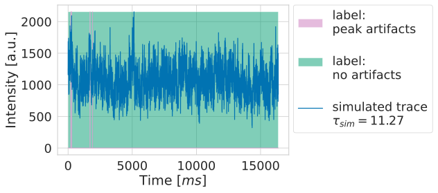
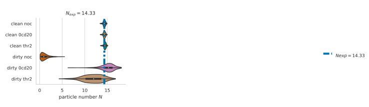
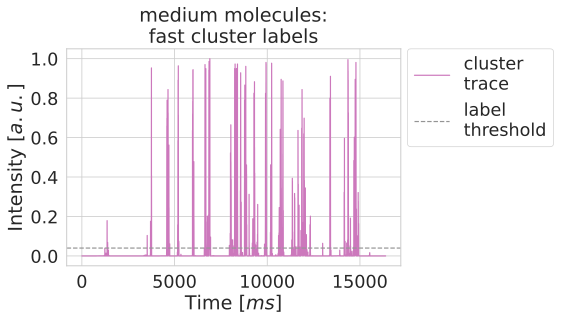
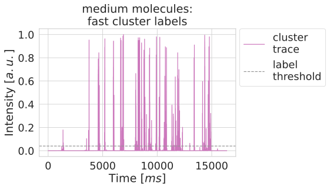
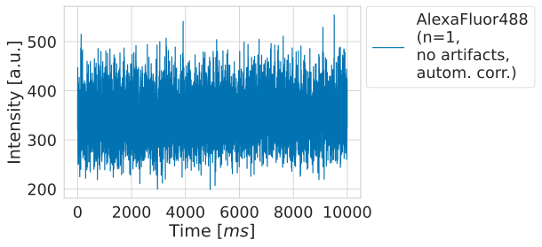
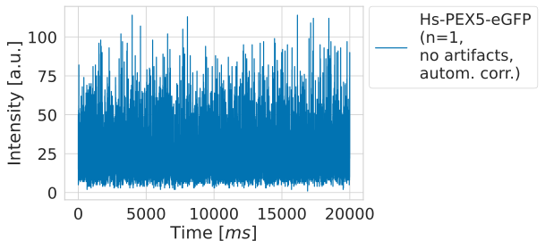
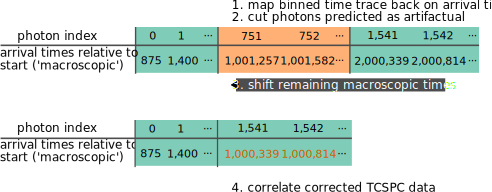

Lab book Fluotracify
1 Technical Notes
1.1 README
1.1.1 General:
- This file corresponds to my lab book for my doctoral thesis tackling artifact correction in Fluorescence Correlation Spectroscopy (FCS) measurements using Deep Neural Networks. It also contains notes taken during the process of setting up this workflow for reproducible research.
- This file contains explanations of how things are organized, of the workflow for doing experiments, changes made to the code, and the observed behavior in the “* Data” section.
- The branching model used is described in this paper. Therefore: if you
are interested in the “* Data” section, you have to
git clonethe data branch of the repository. The main branch is clean from any results, it contains only source code and the analysis. - This project is my take on Open-notebook science. The idea was postulated in
a blog post in 2006:
… there is a URL to a laboratory notebook that is freely available and indexed on common search engines. It does not necessarily have to look like a paper notebook but it is essential that all of the information available to the researchers to make their conclusions is equally available to the rest of the world —Jean-Claude Bradley
- Proposal on how to deal with truly private data (e.g. notes from a confidential meeting with a colleague), which might otherwise be noted in a normal Lab notebook: do not include them here. Only notes relevant to the current project should be taken
1.1.2 Code block languages used in this document
# This is a sh block for shell / bash scripting. In the context of this file, # these blocks are mainly used for operations on my local computer. # In the LabBook.html rendering of this document, these blocks will have a # light green colour (#F0FBE9)
# This block can open and access tmux sessions, used for shell scripting on # remote computing clusters. # In the LabBook.html rendering of this document, these blocks will have a # distinct light green colour (#E1EED8)
# This is a python block. In the context of this file, it is seldomly used # (only for examplary scripts.) # In the LabBook.html rendering of this document, these blocks will have a # light blue colour (#E6EDF4)
# This is a jupyter-python block. The code is sent to a jupyter kernel running # on a remote high performance computing cluster. Most of my jupyter code is # executed this way. # In the LabBook.html rendering of this document, these blocks will have a # light orange colour (#FAEAE1)
;; This is a emacs-lisp block, the language used to customize Emacs, which is ;; sometimes necessary, since the reproducible workflow of this LabBook is ;; tightly integrated with Emacs and org-mode. ;; In the LabBook.html rendering of this document, these blocks will have a ;; light violet colour (#F7ECFB)
This is a literal example block. It can be used very flexibly - in the context
of this document the output of most code blocks is displayed this way.
In the LabBook.html rendering of this document, these blocks will have a light
yellow colour (#FBFBBF)
This is a literal example block enclosed in a details block. This is useful to
make the page more readable by collapsing large amounts of output.
In the Labbook.html rendering of this document, the details block will have a
light grey colour (#f0f0f0) and a pink color when hovering above it.
1.1.3 Experiments workflow:
- Create a new branch from
main - Print out the git log from the latest commit and the metadata
- Call the analysis scripts, follow the principles outlined in Organization of code
- All machine learning runs are saved in
data/mlruns, all other data indata/#experiment-name - Add a
** exp-<date>-<name>“ section to this file under Data - Commit/push the results of this separate branch
- Merge this new branch with the remote
databranch
1.1.4 Example for experimental setup procedure
1.1.5 tools used (notes)
1.1.5.1 Emacs magit
gitflow-avh(magit-flow) to follow the flow- possibly https://github.com/magit/magit-annex for large files. Follow this: https://git-annex.branchable.com/walkthrough/
- maybe check out git-toolbelt at some point https://github.com/nvie/git-toolbelt#readme with https://nvie.com/posts/git-power-tools/
1.1.5.2 jupyter
- emacs jupyter for running and connecting to kernel on server: https://github.com/dzop/emacs-jupyter
- if I actually still would use .ipynb files, these might come handy:
- jupytext: https://github.com/mwouts/jupytext
- nbstripout: https://github.com/kynan/nbstripout
1.1.5.3 mlflow
1.1.5.4 tensorflow
1.2 Template for data entry and setup notes:
1.2.1 exp-#date-#title
1.2.1.1 git:
git log -1
1.2.1.2 System Metadata:
import os import pprint ramlist = os.popen('free -th').readlines()[-1].split()[1:] print('No of CPUs in system:', os.cpu_count()) print('No of CPUs the current process can use:', len(os.sched_getaffinity(0))) print('load average:', os.getloadavg()) print('os.uname(): ', os.uname()) print('PID of process:', os.getpid()) print('RAM total: {}, RAM used: {}, RAM free: {}'.format( ramlist[0], ramlist[1], ramlist[2])) !echo the current directory: $PWD !echo My disk usage: !df -h if _long: %conda list pprint.pprint(dict(os.environ), sort_dicts=False)
1.2.1.3 Tmux setup and scripts
rm ~/.tmux-local-socket-remote-machine REMOTE_SOCKET=$(ssh ara 'tmux ls -F "#{socket_path}"' | head -1) echo $REMOTE_SOCKET ssh ara -tfN \ -L ~/.tmux-local-socket-remote-machine:$REMOTE_SOCKET
| rm: | cannot | remove | ’home/lex.tmux-local-socket-remote-machine’: | No | such | file | or | directory |
| ye53nis@ara-login01.rz.uni-jena.de’s | password: | |||||||
| /tmp/tmux-67339/default | ||||||||
| > | ye53nis@ara-login01.rz.uni-jena.de’s | password: |
1.2.1.4 SSH tunneling
Different applications can be run on the remote compute node. If I want to access them at the local machine, and open them with the browser, I use this tunneling script.
ssh -t -t ara -L $port:localhost:$port ssh $node -L $port:Localhost:$port
Apps I use that way:
- Jupyter lab for running Python 3-Kernels
- TensorBoard
- Mlflow ui
1.2.1.5 jupyter scripts
Starting a jupyter instance on a server where the necessary libraries are installed is easy using this script:
conda activate tf export PORT=8889 export XDG_RUNTIME_DIR='' export XDG_RUNTIME_DIR="" jupyter lab --no-browser --port=$PORT
On the compute node of the HPC, the users’ environment is managed through
module files using the system Lmod. The export XDG_RUNTIME_DIR statements
are needed because of a jupyter bug which did not let it start. Right now,
ob-tmux does not support a :var header like normal org-babel does. So
the $port variable has to be set here in the template.
Now this port has to be tunnelled on our local computer (See SSH tunneling). While the tmux session above keeps running, no matter if Emacs is running or not, this following ssh tunnel needs to be active locally to connect to the notebook. If you close Emacs, it would need to be reestablished
1.2.2 Setup notes
1.2.2.1 Setting up a tmux connection from using ob-tmux in org-babel
- prerequisite: tmux versions need to be the same locally and on the server.
Let’s verify that now.
- the local tmux version:
tmux -V
tmux 3.0a
- the remote tmux version:
ssh ara tmux -V
ye53nis@ara-login01.rz.uni-jena.de’s password: tmux 3.0a
- the local tmux version:
- as is described in the ob-tmux readme, the following code snippet creates
a socket on the remote machine and forwards this socket to the local
machine (note that
socket_pathwas introduced in tmux version 2.2)REMOTE_SOCKET=$(ssh ara 'tmux ls -F "#{socket_path}"' | head -1) echo $REMOTE_SOCKET ssh ara -tfN \ -L ~/.tmux-local-socket-remote-machine:$REMOTE_SOCKET
ye53nis@ara-login01.rz.uni-jena.de’s password: /tmp/tmux-67339/default > ye53nis@ara-login01.rz.uni-jena.de’s password: - now a new tmux session with name
ob-NAMEis created when using a code block which looks like this:#+BEGIN_SRC tmux :socket ~/.tmux-local-socket-remote-machine :session NAME - Commands can be sent now to the remote tmux session, BUT note that the output is not printed yet
- there is a workaround for getting output back to our LabBook.org: A script
which allows to print the output from the tmux session in an
#+begin_example-Block below the tmux block by pressingC-c C-oorC-c C-v C-owhen the pointer is inside the tmux block.
1.2.2.2 emacs-jupyter Setup
Emacs-jupyter aims to be an API for a lot of functionalities of the
jupyter project. The documentation can be found on GitHub.
- For the whole document: connect to a running jupyter instance
M-x jupyter-server-list-kernels- set server URL, e.g.
http://localhost:8889 - set websocket URL, e.g.
http://localhost:8889
- set server URL, e.g.
- two possibilities
- kernel already exists \(\to\) list of kernels and
kernel-IDis displayed - kernel does not exist \(\to\) prompt asks if you want to start one \(\to\)
yes \(\to\) type kernel you want to start, e.g.
Python 3
- kernel already exists \(\to\) list of kernels and
- In the subtree where you want to use
jupyter-pythonblocks withorg babel- set the
:header-args:jupyter-python :session /jpy:localhost#kernel:8889-ID - customize the output folder using the following org-mode variable:
(setq org-babel-jupyter-resource-directory "./data/exp-test/plots")
./data/exp-test/plots
- set the
- For each individual block, the following customizations might be useful
- jupyter kernels can return multiple kinds of rich output (images,
html, …) or scalar data (plain text, numbers, lists, …). To force
a plain output, use
:results scalar. To show the output in the minibuffer only, use:results silent - to change the priority of different rich outputs, use
:displayheader argument, e.g.:display text/plain text/htmlprioritizes plain text over html. All supported mimetypes in default order:- text/org
- image/svg+xml, image/jpeg, image/png
- text/html
- text/markdown
- text/latex
- text/plain
- We can set jupyter to output pandas DataFrames as org tables
automatically using the source block header argument
:pandoc t - useful keybindings
M-ito open the documentation for wherever your pointer is (like pressingShift-TABin Jupyter notebooks)C-c C-ito interrupt the kernel,C-c C-rto restart the kernel
- jupyter kernels can return multiple kinds of rich output (images,
html, …) or scalar data (plain text, numbers, lists, …). To force
a plain output, use
1.2.3 Notes on archiving
1.2.3.1 Exporting the LabBook.org to html in a twbs style
- I am partial to the twitter bootstrap theme of html, since I like it’s simple design, but clear structure with a nice table of contents at the side → the following org mode extension supports a seemless export to twitter bootstrap html: https://github.com/marsmining/ox-twbs
- when installed, the export can be triggered via the command
(org-twbs-export-as-html)or via the keyboard shortcut for exportC-c C-efollowed bywfor Twitter bootstrap andhfor saving the .html - Things to configure:
- in general, there are multiple export options: https://orgmode.org/manual/Export-Settings.html
- E.g. I set 2
#+OPTIONSkeywords at the begin of the file:toc:4andH:4which make sure that in my export my sidebar table of contents will show numbered headings till a depth of 4. - I configured my code blocks so that they will not be evaluated when
exporting (I would recommend this especially if you only export for
archiving) and that both the code block and the output will be exported
with the keyword:
#+PROPERTY: header-args :eval never-export :exports both - To discriminate between code blocks for different languages I gave each
of them a distinct colour using
#+HTML_HEAD_EXTRA: <style...(see above) - I had to configure a style for
table, so that thedisplay: block; overflow-x: auto;gets the table to be restricted to the width of the text and if it is larger, activates scrollingwhite-space: nowrap;makes it that there is no wrap in a column, so it might be broader, but better readable if you have scrolling anyway
- Things to do before exporting / Troubleshooting while exporting:
- when using a dark theme for you emacs, the export of the code blocks
might show some ugly dark backgrounds from the theme. If this becomes
an issue, change to a light theme for the export with
M-x (load-theme)and choosesolarized-light - only in the
databranch you set the git tags after merging. If you want to show them here, execute the corresponding function in Git TAGs - make sure your file links work properly! I recommend referencing your files relatively (e.g. [ [ f ile:./data/exp-XXXXXX-test/test.png]] without spaces). Otherwise there will be errors in your Messages buffer
- There might be errors with your code blocks
- e.g. the export function expects you to assign a default variable to your functions
- if you call a function via the
#+CALLmechanism, it wants you to include two parentheses for the function, e.g.#+CALL: test()
- check indentation of code blocks inside lists
- add a
detailsblock around large output cells. This makes them expandable. I added some#+HTML_HEAD_EXTRA: <style...inspired by alhassy. That’s how thedetailsblock looks like:#+begin_details #+end_details - If you reference a parameter with an underscore in the name, use the
org markdown tricks to style them like code (
==or~~), otherwise the part after the underscore will be rendered like a subscript:under_scorevs underscore
- when using a dark theme for you emacs, the export of the code blocks
might show some ugly dark backgrounds from the theme. If this becomes
an issue, change to a light theme for the export with
- Things to do after exporting:
- In my workflow, the exported
LabBook.htmlwith the overview of all experiments is in thedatafolder. If you move the file, you will have to fix the file links for the new location, e.g. via “Find and replace”M-%:- if you move the org file → in the org file find
[[file:./data/and replace with[[file:./→ then export withC-c C-e w h - if you export first with
C-c C-e w hand move the html file todata→ in the html file find./dataand replace with.
- if you move the org file → in the org file find
- In my workflow, the exported
1.3 Organization of git
1.3.1 remote/origin/main branch:
- contains all the source code in folder src/ which is used for experiments.
- contains the LabBook.org template
- contains setup- and metadata files such as MLproject or conda.yaml
- the log contains only lasting alterations on the folders and files mentioned above, which are e.g. used for conducting experiments or which introduce new features. Day-to-day changes in code
1.3.2 remote/origin/exp### branches:
- if an experiment is done, the code and templates will be branched out from main in an #experiment-name branch, ### meaning some meaningful descriptor.
- all data generated during the experiment (e.g. .csv files, plots, images, etc), is stored in a folder with the name data/#experiment-name, except machine learning-specific data and metadata from `mlflow` runs, which are saved under data/mlruns (this allows easily comparing machine learning runs with different experimental settings)
- The LabBook.org file is essential
- If possible, all code is executed from inside this file (meaning analysis scripts or calling the code from the scr/ directory).
- All other steps taken during an experiment are noted down, as well as conclusions or my thought process while conducting the experiment
- Provenance data, such as Metadata about the environment the code was executed in, the command line output of the code, and some
1.3.3 remote/origin/develop branch:
- this is the branch I use for day to day work on features and exploration. All of my current activity can be followed here.
1.3.4 remote/origin/data branch:
- contains a full cronicle of the whole research process
- all #experiment-name branches are merged here. Afterwards the original branch is deleted and on the data branch there is a Git tag which shows the merge commit to make accessing single experiments easy.
- the develop branch is merged here as well.
1.3.5 Git TAGs
1.3.5.1 Stable versions:
1.3.5.2 All tags from git:
git push origin --tags git tag -n1
exp-200402-test Merge branch 'exp-200402-test' into data exp-200520-unet Merge branch 'exp-310520-unet' into data exp-200531-unet Merge branch 'heads/exp-310520-unet' into data exp-201231-clustsim exp-201231-clustsim exp-210204-unet Add exp-210204-unet LabBook part 3 exp-310520-unet move exp-310520-unet to data branch manually
1.4 Organization of code
1.4.1 scripts:
1.4.2 src/
1.4.2.1 fluotracify/
- imports/
- simulations/
- training/
- applications/
- doc/
- use Sphinx
- follow this: https://daler.github.io/sphinxdoc-test/includeme.html
- evtl export org-mode Readme to rst via https://github.com/msnoigrs/ox-rst
- possibly heavily use http://www.sphinx-doc.org/en/master/usage/extensions/autodoc.html
- for examples sphinx-galleries could be useful https://sphinx-gallery.github.io/stable/getting_started.html
- use Sphinx
1.4.2.2 nanosimpy/
- cloned from dwaithe with refactoring for Python 3-compatibility
1.5 Changes in this repository (without “* Data” in this file)
1.5.1 Changes in LabBook.org (without “* Data”)
1.5.1.1 2022-02-19
- Add
#+HTML_HEAD_EXTRA: <style...fortableto enable scrolling if the table overflows
1.5.1.2 2021-12-16
- Add
detailsblocks, corresponding#+HTML_HEAD_EXTRA: <style...and documentation in Notes on archiving
1.5.1.3 2021-08-05
- Rename
masterbranch tomainbranch
1.5.1.4 2021-04-04
- Add
#+OPTIONS: H:4and#+OPTIONS: toc:4to show up to 4 levels of depth in the html (twbs) export of this LabBook in the table of contents at the side - I added Notes on archiving
1.5.1.5 2020-11-04
- update “jupyter scripts” in Template for data entry and setup notes:
for new conda environment on server (now
conda activate tf-nightly)
1.5.1.6 2020-05-31
- extend general documentation in README
- Add code block examples
- extend documentation on experiment workflow
- move setup notes from README to “Template for data entry and setup notes”
- remove emacs-lisp code for custom tmux block functions (not relevant enough)
- change named “jpt-tmux” from starting a jupyter notebook to starting
jupyter lab. Load a conda environment instead of using Lmod’s
module load
1.5.1.7 2020-05-07
- extend documentation on git model
- extend documentation on jupyter setup
1.5.1.8 2020-04-22
- added parts of README which describe the experimental process
- added templates for system metadata, tmux, jupyter setup
- added organization of code
1.5.1.9 2020-03-30
- set up lab book and form git repo accoring to setup by Luka Stanisic et al
1.5.2 Changes in src/fluotracify
2 Data
2.1 exp-220316-publication1
2.1.1 Setup: Jupyter on local computer
- let’s start a conda environment in the sh session local and start
jupterlab there.
conda activate tf jupyter lab --no-browser --port=8888
sh-5.1$ [I 2023-01-03 14:36:05.432 ServerApp] jupyterlab | extension was successfully linked. [I 2023-01-03 14:36:05.738 ServerApp] nbclassic | extension was successfully linked. [I 2023-01-03 14:36:05.805 LabApp] JupyterLab extension loaded from /home/lex/Programme/miniconda3/envs/tf/lib/python3.9/site-packages/jupyterlab [I 2023-01-03 14:36:05.805 LabApp] JupyterLab application directory is /home/lex/Programme/miniconda3/envs/tf/share/jupyter/lab [I 2023-01-03 14:36:05.811 ServerApp] jupyterlab | extension was successfully loaded. [I 2023-01-03 14:36:05.823 ServerApp] nbclassic | extension was successfully loaded. [I 2023-01-03 14:36:05.824 ServerApp] Serving notebooks from local directory: /home/lex/Programme/drmed-git [I 2023-01-03 14:36:05.824 ServerApp] Jupyter Server 1.4.1 is running at: [I 2023-01-03 14:36:05.824 ServerApp] http://localhost:8888/lab?token=8b657ca59261218ed47d32775aa4dd87bac4e9116158bfbd [I 2023-01-03 14:36:05.824 ServerApp] or http://127.0.0.1:8888/lab?token=8b657ca59261218ed47d32775aa4dd87bac4e9116158bfbd [I 2023-01-03 14:36:05.824 ServerApp] Use Control-C to stop this server and shut down all kernels (twice to skip confirmation). [C 2023-01-03 14:36:05.837 ServerApp] To access the server, open this file in a browser: file:///home/lex/.local/share/jupyter/runtime/jpserver-7169-open.html Or copy and paste one of these URLs: http://localhost:8888/lab?token=8b657ca59261218ed47d32775aa4dd87bac4e9116158bfbd or http://127.0.0.1:8888/lab?token=8b657ca59261218ed47d32775aa4dd87bac4e9116158bfbd - I started a Python3 kernel using
jupyter-server-list-kernels. Then I added the kernel ID to the:PROPERTIES:drawer of this (and following) subtrees.python3 03038b73-b2b5-49ce-a1dc-21afb6247d0f a few seconds ago starting 0 - Test: (
#+CALL: jp-metadata(_long='True))No of CPUs in system: 4 No of CPUs the current process can use: 4 load average: (0.5380859375, 0.63232421875, 1.0) os.uname(): posix.uname_result(sysname='Linux', nodename='Topialex', release='5.15.60-1-MANJARO', version='#1 SMP PREEMPT Thu Aug 11 13:14:05 UTC 2022', machine='x86_64') PID of process: 196700 RAM total: 16Gi, RAM used: 8,6Gi, RAM free: 5,9Gi the current directory: /home/lex/Programme/drmed-git My disk usage: Filesystem Size Used Avail Use% Mounted on dev 3,9G 0 3,9G 0% /dev run 3,9G 1,5M 3,9G 1% /run /dev/sda2 167G 133G 26G 85% / tmpfs 3,9G 197M 3,7G 6% /dev/shm tmpfs 3,9G 23M 3,9G 1% /tmp /dev/sda1 300M 264K 300M 1% /boot/efi tmpfs 784M 124K 784M 1% /run/user/1000# packages in environment at /home/lex/Programme/miniconda3/envs/tf: # # Name Version Build Channel _libgcc_mutex 0.1 main _openmp_mutex 4.5 1_gnu absl-py 1.0.0 pypi_0 pypi alembic 1.4.1 pypi_0 pypi anyio 2.2.0 py39h06a4308_1 argon2-cffi 20.1.0 py39h27cfd23_1 asteval 0.9.25 pypi_0 pypi astroid 2.9.2 pypi_0 pypi astunparse 1.6.3 pypi_0 pypi async_generator 1.10 pyhd3eb1b0_0 attrs 21.2.0 pyhd3eb1b0_0 babel 2.9.1 pyhd3eb1b0_0 backcall 0.2.0 pyhd3eb1b0_0 bleach 4.0.0 pyhd3eb1b0_0 brotlipy 0.7.0 py39h27cfd23_1003 ca-certificates 2021.10.26 h06a4308_2 cachetools 4.2.4 pypi_0 pypi certifi 2021.10.8 py39h06a4308_0 cffi 1.14.6 py39h400218f_0 charset-normalizer 2.0.4 pyhd3eb1b0_0 click 8.0.3 pypi_0 pypi cloudpickle 2.0.0 pypi_0 pypi cryptography 36.0.0 py39h9ce1e76_0 cycler 0.11.0 pypi_0 pypi cython 0.29.26 pypi_0 pypi databricks-cli 0.16.2 pypi_0 pypi debugpy 1.5.1 py39h295c915_0 decorator 5.1.0 pyhd3eb1b0_0 defusedxml 0.7.1 pyhd3eb1b0_0 docker 5.0.3 pypi_0 pypi entrypoints 0.3 py39h06a4308_0 fcsfiles 2021.6.6 pypi_0 pypi flake8 4.0.1 pypi_0 pypi flask 2.0.2 pypi_0 pypi flatbuffers 2.0 pypi_0 pypi focuspoint 0.1 pypi_0 pypi fonttools 4.28.5 pypi_0 pypi future 0.18.2 pypi_0 pypi gast 0.4.0 pypi_0 pypi gitdb 4.0.9 pypi_0 pypi gitpython 3.1.24 pypi_0 pypi google-auth 2.3.3 pypi_0 pypi google-auth-oauthlib 0.4.6 pypi_0 pypi google-pasta 0.2.0 pypi_0 pypi greenlet 1.1.2 pypi_0 pypi grpcio 1.43.0 pypi_0 pypi gunicorn 20.1.0 pypi_0 pypi h5py 3.6.0 pypi_0 pypi idna 3.3 pyhd3eb1b0_0 importlib-metadata 4.8.2 py39h06a4308_0 importlib_metadata 4.8.2 hd3eb1b0_0 ipykernel 6.4.1 py39h06a4308_1 ipython 7.29.0 py39hb070fc8_0 ipython_genutils 0.2.0 pyhd3eb1b0_1 isort 5.10.1 pypi_0 pypi itsdangerous 2.0.1 pypi_0 pypi jedi 0.18.0 py39h06a4308_1 jinja2 3.0.2 pyhd3eb1b0_0 joblib 1.1.0 pypi_0 pypi json5 0.9.6 pyhd3eb1b0_0 jsonschema 3.2.0 pyhd3eb1b0_2 jupyter_client 7.1.0 pyhd3eb1b0_0 jupyter_core 4.9.1 py39h06a4308_0 jupyter_server 1.4.1 py39h06a4308_0 jupyterlab 3.2.1 pyhd3eb1b0_1 jupyterlab_pygments 0.1.2 py_0 jupyterlab_server 2.8.2 pyhd3eb1b0_0 keras 2.7.0 pypi_0 pypi keras-preprocessing 1.1.2 pypi_0 pypi kiwisolver 1.3.2 pypi_0 pypi lazy-object-proxy 1.7.1 pypi_0 pypi ld_impl_linux-64 2.35.1 h7274673_9 libclang 12.0.0 pypi_0 pypi libffi 3.3 he6710b0_2 libgcc-ng 9.3.0 h5101ec6_17 libgomp 9.3.0 h5101ec6_17 libsodium 1.0.18 h7b6447c_0 libstdcxx-ng 9.3.0 hd4cf53a_17 lmfit 1.0.3 pypi_0 pypi mako 1.1.6 pypi_0 pypi markdown 3.3.6 pypi_0 pypi markupsafe 2.0.1 py39h27cfd23_0 matplotlib 3.5.1 pypi_0 pypi matplotlib-inline 0.1.2 pyhd3eb1b0_2 mccabe 0.6.1 pypi_0 pypi mistune 0.8.4 py39h27cfd23_1000 mlflow 1.22.0 pypi_0 pypi multipletau 0.3.3 pypi_0 pypi mypy 0.930 pypi_0 pypi mypy-extensions 0.4.3 pypi_0 pypi nbclassic 0.2.6 pyhd3eb1b0_0 nbclient 0.5.3 pyhd3eb1b0_0 nbconvert 6.1.0 py39h06a4308_0 nbformat 5.1.3 pyhd3eb1b0_0 ncurses 6.3 h7f8727e_2 nest-asyncio 1.5.1 pyhd3eb1b0_0 nodeenv 1.6.0 pypi_0 pypi notebook 6.4.6 py39h06a4308_0 numpy 1.21.5 pypi_0 pypi oauthlib 3.1.1 pypi_0 pypi openssl 1.1.1l h7f8727e_0 opt-einsum 3.3.0 pypi_0 pypi packaging 21.3 pyhd3eb1b0_0 pandas 1.3.5 pypi_0 pypi pandocfilters 1.4.3 py39h06a4308_1 parso 0.8.2 pyhd3eb1b0_0 pexpect 4.8.0 pyhd3eb1b0_3 pickleshare 0.7.5 pyhd3eb1b0_1003 pillow 8.4.0 pypi_0 pypi pip 21.2.4 py39h06a4308_0 platformdirs 2.4.1 pypi_0 pypi prometheus-flask-exporter 0.18.7 pypi_0 pypi prometheus_client 0.12.0 pyhd3eb1b0_0 prompt-toolkit 3.0.20 pyhd3eb1b0_0 protobuf 3.19.1 pypi_0 pypi ptyprocess 0.7.0 pyhd3eb1b0_2 pyasn1 0.4.8 pypi_0 pypi pyasn1-modules 0.2.8 pypi_0 pypi pycodestyle 2.8.0 pypi_0 pypi pycparser 2.21 pyhd3eb1b0_0 pydot 1.4.2 pypi_0 pypi pyflakes 2.4.0 pypi_0 pypi pygments 2.10.0 pyhd3eb1b0_0 pylint 2.12.2 pypi_0 pypi pyopenssl 21.0.0 pyhd3eb1b0_1 pyparsing 3.0.4 pyhd3eb1b0_0 pyright 0.0.13 pypi_0 pypi pyrsistent 0.18.0 py39heee7806_0 pysocks 1.7.1 py39h06a4308_0 python 3.9.7 h12debd9_1 python-dateutil 2.8.2 pyhd3eb1b0_0 python-editor 1.0.4 pypi_0 pypi pytz 2021.3 pyhd3eb1b0_0 pyyaml 6.0 pypi_0 pypi pyzmq 22.3.0 py39h295c915_2 querystring-parser 1.2.4 pypi_0 pypi readline 8.1 h27cfd23_0 requests 2.26.0 pyhd3eb1b0_0 requests-oauthlib 1.3.0 pypi_0 pypi rsa 4.8 pypi_0 pypi scikit-learn 1.0.2 pypi_0 pypi scipy 1.7.3 pypi_0 pypi seaborn 0.11.2 pypi_0 pypi send2trash 1.8.0 pyhd3eb1b0_1 setuptools 58.0.4 py39h06a4308_0 six 1.16.0 pyhd3eb1b0_0 smmap 5.0.0 pypi_0 pypi sniffio 1.2.0 py39h06a4308_1 sqlalchemy 1.4.29 pypi_0 pypi sqlite 3.37.0 hc218d9a_0 sqlparse 0.4.2 pypi_0 pypi tabulate 0.8.9 pypi_0 pypi tensorboard 2.7.0 pypi_0 pypi tensorboard-data-server 0.6.1 pypi_0 pypi tensorboard-plugin-wit 1.8.0 pypi_0 pypi tensorflow 2.7.0 pypi_0 pypi tensorflow-estimator 2.7.0 pypi_0 pypi tensorflow-io-gcs-filesystem 0.23.1 pypi_0 pypi termcolor 1.1.0 pypi_0 pypi terminado 0.9.4 py39h06a4308_0 testpath 0.5.0 pyhd3eb1b0_0 threadpoolctl 3.0.0 pypi_0 pypi tk 8.6.11 h1ccaba5_0 toml 0.10.2 pypi_0 pypi tomli 2.0.0 pypi_0 pypi tornado 6.1 py39h27cfd23_0 traitlets 5.1.1 pyhd3eb1b0_0 typing-extensions 4.0.1 pypi_0 pypi tzdata 2021e hda174b7_0 uncertainties 3.1.6 pypi_0 pypi urllib3 1.26.7 pyhd3eb1b0_0 wcwidth 0.2.5 pyhd3eb1b0_0 webencodings 0.5.1 py39h06a4308_1 websocket-client 1.2.3 pypi_0 pypi werkzeug 2.0.2 pypi_0 pypi wheel 0.37.0 pyhd3eb1b0_1 wrapt 1.13.3 pypi_0 pypi xz 5.2.5 h7b6447c_0 zeromq 4.3.4 h2531618_0 zipp 3.6.0 pyhd3eb1b0_0 zlib 1.2.11 h7f8727e_4 Note: you may need to restart the kernel to use updated packages. {'SHELL': '/bin/bash', 'SESSION_MANAGER': 'local/Topialex:@/tmp/.ICE-unix/986,unix/Topialex:/tmp/.ICE-unix/986', 'XDG_CONFIG_DIRS': '/home/lex/.config/kdedefaults:/etc/xdg', 'XDG_SESSION_PATH': '/org/freedesktop/DisplayManager/Session1', 'CONDA_EXE': '/home/lex/Programme/miniconda3/bin/conda', '_CE_M': '', 'LANGUAGE': 'en_GB', 'TERMCAP': '', 'LC_ADDRESS': 'de_DE.UTF-8', 'LC_NAME': 'de_DE.UTF-8', 'INSIDE_EMACS': '28.1,comint', 'DESKTOP_SESSION': 'plasma', 'LC_MONETARY': 'de_DE.UTF-8', 'GTK_RC_FILES': '/etc/gtk/gtkrc:/home/lex/.gtkrc:/home/lex/.config/gtkrc', 'XCURSOR_SIZE': '24', 'GTK_MODULES': 'canberra-gtk-module', 'XDG_SEAT': 'seat0', 'PWD': '/home/lex/Programme/drmed-git', 'LOGNAME': 'lex', 'XDG_SESSION_DESKTOP': 'KDE', 'XDG_SESSION_TYPE': 'x11', 'CONDA_PREFIX': '/home/lex/Programme/miniconda3/envs/tf', 'DSSI_PATH': '/home/lex/.dssi:/usr/lib/dssi:/usr/local/lib/dssi', 'SYSTEMD_EXEC_PID': '877', 'XAUTHORITY': '/home/lex/.Xauthority', 'MOTD_SHOWN': 'pam', 'GTK2_RC_FILES': '/etc/gtk-2.0/gtkrc:/home/lex/.gtkrc-2.0:/home/lex/.config/gtkrc-2.0', 'HOME': '/home/lex', 'LANG': 'de_DE.UTF-8', 'LC_PAPER': 'de_DE.UTF-8', 'VST_PATH': '/home/lex/.vst:/usr/lib/vst:/usr/local/lib/vst', 'XDG_CURRENT_DESKTOP': 'KDE', 'COLUMNS': '163', 'CONDA_PROMPT_MODIFIER': '', 'XDG_SEAT_PATH': '/org/freedesktop/DisplayManager/Seat0', 'KDE_SESSION_UID': '1000', 'XDG_SESSION_CLASS': 'user', 'LC_IDENTIFICATION': 'de_DE.UTF-8', 'TERM': 'xterm-color', '_CE_CONDA': '', 'USER': 'lex', 'CONDA_SHLVL': '1', 'KDE_SESSION_VERSION': '5', 'PAM_KWALLET5_LOGIN': '/run/user/1000/kwallet5.socket', 'DISPLAY': ':0', 'SHLVL': '2', 'LC_TELEPHONE': 'de_DE.UTF-8', 'LC_MEASUREMENT': 'de_DE.UTF-8', 'XDG_VTNR': '1', 'XDG_SESSION_ID': '2', 'QT_LINUX_ACCESSIBILITY_ALWAYS_ON': '1', 'CONDA_PYTHON_EXE': '/home/lex/Programme/miniconda3/bin/python', 'MOZ_PLUGIN_PATH': '/usr/lib/mozilla/plugins', 'XDG_RUNTIME_DIR': '/run/user/1000', 'CONDA_DEFAULT_ENV': 'tf', 'LC_TIME': 'de_DE.UTF-8', 'QT_AUTO_SCREEN_SCALE_FACTOR': '0', 'XCURSOR_THEME': 'breeze_cursors', 'XDG_DATA_DIRS': '/home/lex/.local/share/flatpak/exports/share:/var/lib/flatpak/exports/share:/usr/local/share:/usr/share:/var/lib/snapd/desktop', 'KDE_FULL_SESSION': 'true', 'BROWSER': 'vivaldi-stable', 'PATH': '/home/lex/Programme/miniconda3/envs/tf/bin:/home/lex/Programme/miniconda3/condabin:/home/lex/.local/bin:/bin:/usr/bin:/usr/local/bin:/usr/local/sbin:/usr/lib/jvm/default/bin:/usr/bin/site_perl:/usr/bin/vendor_perl:/usr/bin/core_perl:/var/lib/snapd/snap/bin', 'DBUS_SESSION_BUS_ADDRESS': 'unix:path=/run/user/1000/bus', 'LV2_PATH': '/home/lex/.lv2:/usr/lib/lv2:/usr/local/lib/lv2', 'KDE_APPLICATIONS_AS_SCOPE': '1', 'MAIL': '/var/spool/mail/lex', 'LC_NUMERIC': 'de_DE.UTF-8', 'LADSPA_PATH': '/home/lex/.ladspa:/usr/lib/ladspa:/usr/local/lib/ladspa', 'CADENCE_AUTO_STARTED': 'true', '_': '/home/lex/Programme/miniconda3/envs/tf/bin/jupyter', 'PYDEVD_USE_FRAME_EVAL': 'NO', 'JPY_PARENT_PID': '156430', 'CLICOLOR': '1', 'PAGER': 'cat', 'GIT_PAGER': 'cat', 'MPLBACKEND': 'module://matplotlib_inline.backend_inline'} - Branch out git branch
exp-220316-publication1frommain(done via magit) and make sure you are on the correct branchcd /home/lex/Programme/drmed-git git status
sh-5.1$ cd /home/lex/Programme/drmed-git sh-5.1$ git status On branch exp-220316-publication1 Your branch is up to date with 'origin/exp-220316-publication1'. - Create experiment folder including the plot folder for jupyter plots
mkdir -p ./data/exp-220316-publication1/jupyter
- set output directory for matplotlib plots in jupyter
(setq org-babel-jupyter-resource-directory "./data/exp-220316-publication1/jupyter")
./data/exp-220316-publication1/jupyter
2.1.2 Setup: Jupyter node on HPC
- Set up tmux (if we haven’t done that before) (
#+CALL: setup-tmux[:session local])sh-5.1$ ye53nis@ara-login01.rz.uni-jena.de’s password: > ye53nis@ara-login01.rz.uni-jena.de’s password: - Request compute node
cd / srun -p b_standard --time=7-10:00:00 --ntasks-per-node=24 --mem-per-cpu=2000 --pty bash
- Start Jupyter Lab (
#+CALL: jpt-tmux[:session jpmux])(tf) [ye53nis@node117 /]$ jupyter lab --no-browser --port=$PORT [I 2023-01-03 22:14:33.399 ServerApp] jupyterlab | extension was successfully linked. [I 2023-01-03 22:14:40.846 ServerApp] nbclassic | extension was successfully linked. [I 2023-01-03 22:14:41.330 ServerApp] nbclassic | extension was successfully loaded. [I 2023-01-03 22:14:41.332 LabApp] JupyterLab extension loaded from /home/ye53nis/.conda/envs/tf/lib/python3.9/site-packages/jupyterlab [I 2023-01-03 22:14:41.332 LabApp] JupyterLab application directory is /home/ye53nis/.conda/envs/tf/share/jupyter/lab [I 2023-01-03 22:14:41.340 ServerApp] jupyterlab | extension was successfully loaded. [I 2023-01-03 22:14:41.342 ServerApp] Serving notebooks from local directory: / [I 2023-01-03 22:14:41.342 ServerApp] Jupyter Server 1.13.5 is running at: [I 2023-01-03 22:14:41.342 ServerApp] http://localhost:8889/lab?token=2ff8ed3f281a95c2bda81a0c453699c478ee1fd2e52e8bab [I 2023-01-03 22:14:41.342 ServerApp] or http://127.0.0.1:8889/lab?token=2ff8ed3f281a95c2bda81a0c453699c478ee1fd2e52e8bab [I 2023-01-03 22:14:41.342 ServerApp] Use Control-C to stop this server and shut down all kernels (twice to skip confirmation). [C 2023-01-03 22:14:41.456 ServerApp] To access the server, open this file in a browser: file:///home/ye53nis/.local/share/jupyter/runtime/jpserver-158816-open.html Or copy and paste one of these URLs: http://localhost:8889/lab?token=2ff8ed3f281a95c2bda81a0c453699c478ee1fd2e52e8bab or http://127.0.0.1:8889/lab?token=2ff8ed3f281a95c2bda81a0c453699c478ee1fd2e52e8bab - Create SSH Tunnel for jupyter lab to the local computer (e.g.
#+CALL: ssh-tunnel(port="8889", node="node160"))sh-5.1$ sh-5.1$ ye53nis@ara-login01.rz.uni-jena.de’s password: ye53nis@node117’s password: Last login: Tue Jan 3 22:15:58 2023 from login01.ara - I started a Python3 kernel using
jupyter-server-list-kernels. Then I added the kernel ID to the:PROPERTIES:drawer of this (and following) subtrees.python3 c4f3acce-60c4-489d-922c-407da110fd6a a few seconds ago idle 1 - Test (
#+CALL: jp-metadata(_long='True)) and record metadata:No of CPUs in system: 48 No of CPUs the current process can use: 24 load average: (1658.36, 1661.86, 1648.89) os.uname(): posix.uname_result(sysname='Linux', nodename='node095', release='3.10.0-957.1.3.el7.x86_64', version='#1 SMP Thu Nov 29 14:49:43 UTC 2018', machine='x86_64') PID of process: 189118 RAM total: 137G, RAM used: 18G, RAM free: 103G the current directory: / My disk usage: Filesystem Size Used Avail Use% Mounted on /dev/sda1 50G 5.0G 46G 10% / devtmpfs 63G 0 63G 0% /dev tmpfs 63G 199M 63G 1% /dev/shm tmpfs 63G 27M 63G 1% /run tmpfs 63G 0 63G 0% /sys/fs/cgroup nfs01-ib:/home 80T 63T 18T 79% /home nfs03-ib:/pool/work 100T 72T 29T 72% /nfsdata nfs01-ib:/cluster 2.0T 496G 1.6T 25% /cluster /dev/sda3 6.0G 429M 5.6G 7% /var /dev/sda6 169G 3.8G 165G 3% /local /dev/sda5 2.0G 119M 1.9G 6% /tmp beegfs_nodev 524T 456T 69T 87% /beegfs tmpfs 13G 0 13G 0% /run/user/67339# packages in environment at /home/ye53nis/.conda/envs/tf: # # Name Version Build Channel _libgcc_mutex 0.1 main _openmp_mutex 5.1 1_gnu absl-py 1.0.0 pypi_0 pypi alembic 1.7.7 pypi_0 pypi anyio 3.5.0 py39h06a4308_0 argon2-cffi 21.3.0 pyhd3eb1b0_0 argon2-cffi-bindings 21.2.0 py39h7f8727e_0 asteval 0.9.26 pypi_0 pypi asttokens 2.0.5 pyhd3eb1b0_0 astunparse 1.6.3 pypi_0 pypi attrs 21.4.0 pyhd3eb1b0_0 babel 2.9.1 pyhd3eb1b0_0 backcall 0.2.0 pyhd3eb1b0_0 beautifulsoup4 4.11.1 py39h06a4308_0 bleach 4.1.0 pyhd3eb1b0_0 brotlipy 0.7.0 py39h27cfd23_1003 ca-certificates 2022.4.26 h06a4308_0 cachetools 5.1.0 pypi_0 pypi certifi 2021.10.8 py39h06a4308_2 cffi 1.15.0 py39hd667e15_1 charset-normalizer 2.0.4 pyhd3eb1b0_0 click 8.1.3 pypi_0 pypi cloudpickle 2.0.0 pypi_0 pypi cryptography 37.0.1 py39h9ce1e76_0 cycler 0.11.0 pypi_0 pypi cython 0.29.30 pypi_0 pypi databricks-cli 0.16.6 pypi_0 pypi debugpy 1.5.1 py39h295c915_0 decorator 5.1.1 pyhd3eb1b0_0 defusedxml 0.7.1 pyhd3eb1b0_0 docker 5.0.3 pypi_0 pypi entrypoints 0.4 py39h06a4308_0 executing 0.8.3 pyhd3eb1b0_0 fcsfiles 2022.2.2 pypi_0 pypi flask 2.1.2 pypi_0 pypi flatbuffers 1.12 pypi_0 pypi fonttools 4.33.3 pypi_0 pypi future 0.18.2 pypi_0 pypi gast 0.4.0 pypi_0 pypi gitdb 4.0.9 pypi_0 pypi gitpython 3.1.27 pypi_0 pypi google-auth 2.6.6 pypi_0 pypi google-auth-oauthlib 0.4.6 pypi_0 pypi google-pasta 0.2.0 pypi_0 pypi greenlet 1.1.2 pypi_0 pypi grpcio 1.46.1 pypi_0 pypi gunicorn 20.1.0 pypi_0 pypi h5py 3.6.0 pypi_0 pypi idna 3.3 pyhd3eb1b0_0 importlib-metadata 4.11.3 pypi_0 pypi ipykernel 6.9.1 py39h06a4308_0 ipython 8.3.0 py39h06a4308_0 ipython_genutils 0.2.0 pyhd3eb1b0_1 itsdangerous 2.1.2 pypi_0 pypi jedi 0.18.1 py39h06a4308_1 jinja2 3.0.3 pyhd3eb1b0_0 joblib 1.1.0 pypi_0 pypi json5 0.9.6 pyhd3eb1b0_0 jsonschema 4.4.0 py39h06a4308_0 jupyter_client 7.2.2 py39h06a4308_0 jupyter_core 4.10.0 py39h06a4308_0 jupyter_server 1.13.5 pyhd3eb1b0_0 jupyterlab 3.3.2 pyhd3eb1b0_0 jupyterlab_pygments 0.1.2 py_0 jupyterlab_server 2.12.0 py39h06a4308_0 keras 2.9.0 pypi_0 pypi keras-preprocessing 1.1.2 pypi_0 pypi kiwisolver 1.4.2 pypi_0 pypi ld_impl_linux-64 2.38 h1181459_0 libclang 14.0.1 pypi_0 pypi libffi 3.3 he6710b0_2 libgcc-ng 11.2.0 h1234567_0 libgomp 11.2.0 h1234567_0 libsodium 1.0.18 h7b6447c_0 libstdcxx-ng 11.2.0 h1234567_0 lmfit 1.0.3 pypi_0 pypi mako 1.2.0 pypi_0 pypi markdown 3.3.7 pypi_0 pypi markupsafe 2.0.1 py39h27cfd23_0 matplotlib 3.5.2 pypi_0 pypi matplotlib-inline 0.1.2 pyhd3eb1b0_2 mistune 0.8.4 py39h27cfd23_1000 mlflow 1.26.0 pypi_0 pypi multipletau 0.3.3 pypi_0 pypi nbclassic 0.3.5 pyhd3eb1b0_0 nbclient 0.5.13 py39h06a4308_0 nbconvert 6.4.4 py39h06a4308_0 nbformat 5.3.0 py39h06a4308_0 ncurses 6.3 h7f8727e_2 nest-asyncio 1.5.5 py39h06a4308_0 notebook 6.4.11 py39h06a4308_0 numpy 1.22.3 pypi_0 pypi oauthlib 3.2.0 pypi_0 pypi openssl 1.1.1o h7f8727e_0 opt-einsum 3.3.0 pypi_0 pypi packaging 21.3 pyhd3eb1b0_0 pandas 1.4.2 pypi_0 pypi pandocfilters 1.5.0 pyhd3eb1b0_0 parso 0.8.3 pyhd3eb1b0_0 pexpect 4.8.0 pyhd3eb1b0_3 pickleshare 0.7.5 pyhd3eb1b0_1003 pillow 9.1.1 pypi_0 pypi pip 21.2.4 py39h06a4308_0 prometheus-flask-exporter 0.20.1 pypi_0 pypi prometheus_client 0.13.1 pyhd3eb1b0_0 prompt-toolkit 3.0.20 pyhd3eb1b0_0 protobuf 3.20.1 pypi_0 pypi ptyprocess 0.7.0 pyhd3eb1b0_2 pure_eval 0.2.2 pyhd3eb1b0_0 pyasn1 0.4.8 pypi_0 pypi pyasn1-modules 0.2.8 pypi_0 pypi pycparser 2.21 pyhd3eb1b0_0 pygments 2.11.2 pyhd3eb1b0_0 pyjwt 2.4.0 pypi_0 pypi pyopenssl 22.0.0 pyhd3eb1b0_0 pyparsing 3.0.4 pyhd3eb1b0_0 pyrsistent 0.18.0 py39heee7806_0 pysocks 1.7.1 py39h06a4308_0 python 3.9.12 h12debd9_0 python-dateutil 2.8.2 pyhd3eb1b0_0 python-fastjsonschema 2.15.1 pyhd3eb1b0_0 pytz 2021.3 pyhd3eb1b0_0 pyyaml 6.0 pypi_0 pypi pyzmq 22.3.0 py39h295c915_2 querystring-parser 1.2.4 pypi_0 pypi readline 8.1.2 h7f8727e_1 requests 2.27.1 pyhd3eb1b0_0 requests-oauthlib 1.3.1 pypi_0 pypi rsa 4.8 pypi_0 pypi scikit-learn 1.1.0 pypi_0 pypi scipy 1.8.1 pypi_0 pypi seaborn 0.11.2 pypi_0 pypi send2trash 1.8.0 pyhd3eb1b0_1 setuptools 61.2.0 py39h06a4308_0 six 1.16.0 pyhd3eb1b0_1 smmap 5.0.0 pypi_0 pypi sniffio 1.2.0 py39h06a4308_1 soupsieve 2.3.1 pyhd3eb1b0_0 sqlalchemy 1.4.36 pypi_0 pypi sqlite 3.38.3 hc218d9a_0 sqlparse 0.4.2 pypi_0 pypi stack_data 0.2.0 pyhd3eb1b0_0 tabulate 0.8.9 pypi_0 pypi tensorboard 2.9.0 pypi_0 pypi tensorboard-data-server 0.6.1 pypi_0 pypi tensorboard-plugin-wit 1.8.1 pypi_0 pypi tensorflow 2.9.0 pypi_0 pypi tensorflow-estimator 2.9.0 pypi_0 pypi tensorflow-io-gcs-filesystem 0.26.0 pypi_0 pypi termcolor 1.1.0 pypi_0 pypi terminado 0.13.1 py39h06a4308_0 testpath 0.5.0 pyhd3eb1b0_0 threadpoolctl 3.1.0 pypi_0 pypi tk 8.6.11 h1ccaba5_1 tornado 6.1 py39h27cfd23_0 traitlets 5.1.1 pyhd3eb1b0_0 typing-extensions 4.1.1 hd3eb1b0_0 typing_extensions 4.1.1 pyh06a4308_0 tzdata 2022a hda174b7_0 uncertainties 3.1.6 pypi_0 pypi urllib3 1.26.9 py39h06a4308_0 wcwidth 0.2.5 pyhd3eb1b0_0 webencodings 0.5.1 py39h06a4308_1 websocket-client 0.58.0 py39h06a4308_4 werkzeug 2.1.2 pypi_0 pypi wheel 0.37.1 pyhd3eb1b0_0 wrapt 1.14.1 pypi_0 pypi xz 5.2.5 h7f8727e_1 zeromq 4.3.4 h2531618_0 zipp 3.8.0 pypi_0 pypi zlib 1.2.12 h7f8727e_2 Note: you may need to restart the kernel to use updated packages. {'SLURM_CHECKPOINT_IMAGE_DIR': '/var/slurm/checkpoint', 'SLURM_NODELIST': 'node095', 'SLURM_JOB_NAME': 'bash', 'XDG_SESSION_ID': '135386', 'SLURMD_NODENAME': 'node095', 'SLURM_TOPOLOGY_ADDR': 'node095', 'SLURM_NTASKS_PER_NODE': '24', 'HOSTNAME': 'login01', 'SLURM_PRIO_PROCESS': '0', 'SLURM_SRUN_COMM_PORT': '43002', 'SHELL': '/bin/bash', 'TERM': 'xterm-color', 'SLURM_JOB_QOS': 'qstand', 'SLURM_PTY_WIN_ROW': '48', 'HISTSIZE': '1000', 'TMPDIR': '/tmp', 'SLURM_TOPOLOGY_ADDR_PATTERN': 'node', 'SSH_CLIENT': '10.231.185.64 42170 22', 'CONDA_SHLVL': '2', 'CONDA_PROMPT_MODIFIER': '(tf) ', 'WINDOWID': '0', 'QTDIR': '/usr/lib64/qt-3.3', 'QTINC': '/usr/lib64/qt-3.3/include', 'SSH_TTY': '/dev/pts/19', 'NO_PROXY': 'localhost,127.0.0.0/8,.uni-jena.de,141.35.0.0/16,10.0.0.0/8,192.168.0.0/16,172.0.0.0/8,fe80::/7,2001:638:1558::/24,vmaster,node001', 'QT_GRAPHICSSYSTEM_CHECKED': '1', 'SLURM_NNODES': '1', 'USER': 'ye53nis', 'http_proxy': 'http://internet4nzm.rz.uni-jena.de:3128', 'LS_COLORS': 'rs=0:di=01;34:ln=01;36:mh=00:pi=40;33:so=01;35:do=01;35:bd=40;33;01:cd=40;33;01:or=40;31;01:mi=01;05;37;41:su=37;41:sg=30;43:ca=30;41:tw=30;42:ow=34;42:st=37;44:ex=01;32:*.tar=01;31:*.tgz=01;31:*.arc=01;31:*.arj=01;31:*.taz=01;31:*.lha=01;31:*.lz4=01;31:*.lzh=01;31:*.lzma=01;31:*.tlz=01;31:*.txz=01;31:*.tzo=01;31:*.t7z=01;31:*.zip=01;31:*.z=01;31:*.Z=01;31:*.dz=01;31:*.gz=01;31:*.lrz=01;31:*.lz=01;31:*.lzo=01;31:*.xz=01;31:*.bz2=01;31:*.bz=01;31:*.tbz=01;31:*.tbz2=01;31:*.tz=01;31:*.deb=01;31:*.rpm=01;31:*.jar=01;31:*.war=01;31:*.ear=01;31:*.sar=01;31:*.rar=01;31:*.alz=01;31:*.ace=01;31:*.zoo=01;31:*.cpio=01;31:*.7z=01;31:*.rz=01;31:*.cab=01;31:*.jpg=01;35:*.jpeg=01;35:*.gif=01;35:*.bmp=01;35:*.pbm=01;35:*.pgm=01;35:*.ppm=01;35:*.tga=01;35:*.xbm=01;35:*.xpm=01;35:*.tif=01;35:*.tiff=01;35:*.png=01;35:*.svg=01;35:*.svgz=01;35:*.mng=01;35:*.pcx=01;35:*.mov=01;35:*.mpg=01;35:*.mpeg=01;35:*.m2v=01;35:*.mkv=01;35:*.webm=01;35:*.ogm=01;35:*.mp4=01;35:*.m4v=01;35:*.mp4v=01;35:*.vob=01;35:*.qt=01;35:*.nuv=01;35:*.wmv=01;35:*.asf=01;35:*.rm=01;35:*.rmvb=01;35:*.flc=01;35:*.avi=01;35:*.fli=01;35:*.flv=01;35:*.gl=01;35:*.dl=01;35:*.xcf=01;35:*.xwd=01;35:*.yuv=01;35:*.cgm=01;35:*.emf=01;35:*.axv=01;35:*.anx=01;35:*.ogv=01;35:*.ogx=01;35:*.aac=01;36:*.au=01;36:*.flac=01;36:*.mid=01;36:*.midi=01;36:*.mka=01;36:*.mp3=01;36:*.mpc=01;36:*.ogg=01;36:*.ra=01;36:*.wav=01;36:*.axa=01;36:*.oga=01;36:*.spx=01;36:*.xspf=01;36:', 'CONDA_EXE': '/cluster/miniconda3/bin/conda', 'SLURM_STEP_NUM_NODES': '1', 'SLURM_JOBID': '1679082', 'SRUN_DEBUG': '3', 'FTP_PROXY': 'http://internet4nzm.rz.uni-jena.de:3128', 'ftp_proxy': 'http://internet4nzm.rz.uni-jena.de:3128', 'SLURM_NTASKS': '24', 'SLURM_LAUNCH_NODE_IPADDR': '192.168.192.5', 'SLURM_STEP_ID': '0', 'TMUX': '/tmp/tmux-67339/default,14861,2', '_CE_CONDA': '', 'CONDA_PREFIX_1': '/cluster/miniconda3', 'SLURM_STEP_LAUNCHER_PORT': '43002', 'SLURM_TASKS_PER_NODE': '24', 'MAIL': '/var/spool/mail/ye53nis', 'PATH': '/home/ye53nis/.conda/envs/tf/bin:/home/lex/Programme/miniconda3/envs/tf/bin:/home/lex/Programme/miniconda3/condabin:/home/lex/.local/bin:/bin:/usr/bin:/usr/local/bin:/usr/local/sbin:/usr/lib/jvm/default/bin:/usr/bin/site_perl:/usr/bin/vendor_perl:/usr/bin/core_perl:/var/lib/snapd/snap/bin:/home/lex/Programme/miniconda3/bin:/usr/sbin:/home/ye53nis/.local/bin:/home/ye53nis/bin', 'SLURM_WORKING_CLUSTER': 'hpc:192.168.192.1:6817:8448', 'SLURM_JOB_ID': '1679082', 'CONDA_PREFIX': '/home/ye53nis/.conda/envs/tf', 'SLURM_JOB_USER': 'ye53nis', 'SLURM_STEPID': '0', 'PWD': '/', 'SLURM_SRUN_COMM_HOST': '192.168.192.5', 'LANG': 'en_US.UTF-8', 'SLURM_PTY_WIN_COL': '236', 'SLURM_UMASK': '0022', 'MODULEPATH': '/usr/share/Modules/modulefiles:/etc/modulefiles:/cluster/modulefiles', 'SLURM_JOB_UID': '67339', 'LOADEDMODULES': '', 'SLURM_NODEID': '0', 'TMUX_PANE': '%2', 'SLURM_SUBMIT_DIR': '/', 'SLURM_TASK_PID': '186350', 'SLURM_NPROCS': '24', 'SLURM_CPUS_ON_NODE': '24', 'SLURM_DISTRIBUTION': 'block', 'HTTPS_PROXY': 'http://internet4nzm.rz.uni-jena.de:3128', 'https_proxy': 'http://internet4nzm.rz.uni-jena.de:3128', 'SLURM_PROCID': '0', 'HISTCONTROL': 'ignoredups', '_CE_M': '', 'SLURM_JOB_NODELIST': 'node095', 'SLURM_PTY_PORT': '41832', 'HOME': '/home/ye53nis', 'SHLVL': '3', 'SLURM_LOCALID': '0', 'SLURM_JOB_GID': '13280', 'SLURM_JOB_CPUS_PER_NODE': '24', 'SLURM_CLUSTER_NAME': 'hpc', 'no_proxy': 'localhost,127.0.0.0/8,.uni-jena.de,141.35.0.0/16,10.0.0.0/8,192.168.0.0/16,172.0.0.0/8,fe80::/7,2001:638:1558::/24,vmaster,node001', 'SLURM_GTIDS': '0,1,2,3,4,5,6,7,8,9,10,11,12,13,14,15,16,17,18,19,20,21,22,23', 'SLURM_SUBMIT_HOST': 'login01', 'HTTP_PROXY': 'http://internet4nzm.rz.uni-jena.de:3128', 'SLURM_JOB_PARTITION': 'b_standard', 'MATHEMATICA_HOME': '/cluster/apps/mathematica/12.3', 'CONDA_PYTHON_EXE': '/cluster/miniconda3/bin/python', 'LOGNAME': 'ye53nis', 'SLURM_STEP_NUM_TASKS': '24', 'QTLIB': '/usr/lib64/qt-3.3/lib', 'SLURM_JOB_ACCOUNT': 'iaob', 'SLURM_JOB_NUM_NODES': '1', 'MODULESHOME': '/usr/share/Modules', 'CONDA_DEFAULT_ENV': 'tf', 'LESSOPEN': '||/usr/bin/lesspipe.sh %s', 'SLURM_STEP_TASKS_PER_NODE': '24', 'PORT': '8889', 'SLURM_STEP_NODELIST': 'node095', 'DISPLAY': ':0', 'XDG_RUNTIME_DIR': '', 'XAUTHORITY': '/home/lex/.Xauthority', 'BASH_FUNC_module()': '() { eval `/usr/bin/modulecmd bash $*`\n}', '_': '/home/ye53nis/.conda/envs/tf/bin/jupyter', 'PYDEVD_USE_FRAME_EVAL': 'NO', 'JPY_PARENT_PID': '187359', 'CLICOLOR': '1', 'PAGER': 'cat', 'GIT_PAGER': 'cat', 'MPLBACKEND': 'module://matplotlib_inline.backend_inline'}
2.1.3 Setup: current git log
pwd git --no-pager log -5
/home/lex/Programme/drmed-git
commit d51b11eda090b9301e783ec35bdfd26c7bf0709c (HEAD -> exp-220316-publication1, origin/main, origin/exp-220316-publication1, origin/HEAD, main)
Date: Sun Feb 27 18:40:00 2022 +0100
fix model input_size to None; else to crop_size
commit c637444d8b798603629f6f0bd72ee55af7f81a5f
Date: Sun Feb 27 18:39:29 2022 +0100
Fix function call correlate_and_fit
commit 291c6619c12bc39d526137a43d976b3cb4881e50
Date: Sat Feb 26 20:04:07 2022 +0100
Fix scale_trace; simplify tf_pad_trace call
commit dcca8b9e17909a95b824c8a7b1fec52eeed198c3
Date: Thu Feb 24 16:11:39 2022 +0100
test tf_pad_trace
commit 6cf2da85748ef13f2e752bea8989a6d31549ced3
Date: Thu Feb 24 16:10:33 2022 +0100
Fix tf_pad_trace
2.1.4 Exp: simexps - weight=0 vs cut and shift vs avg
- To justify
cut and shiftas a method, let’s eliminate the confounder of bad prediction and compare it to the alternative based on a segmentation we know from the simulations that is correct.weight=0gives each time bin classified as ’dominated by clusters’ a weight of 0.cut and shiftgives removes each time bin classified as ’dominated by clusters’ and shifts all remaining time bins together.
- After re-reading a lot of literature and putting it into text
(), I decided to add the averaging method:
- segment trace in artifactual and non-artifactual (here: given by simulations)
- correlate all non-artifactual segments
- average correlations and fit the average
%cd /beegfs/ye53nis/drmed-git
/beegfs/ye53nis/drmed-git
- load modules
import datetime import logging import multipletau import os import scipy import sys import matplotlib.pyplot as plt import numpy as np import pandas as pd import seaborn as sns from pathlib import Path from pprint import pprint FLUOTRACIFY_PATH = '/beegfs/ye53nis/drmed-git/src/' sys.path.append(FLUOTRACIFY_PATH) from fluotracify.applications import correlate from fluotracify.simulations import ( import_simulation_from_csv as isfc, analyze_simulations as ans, ) logging.basicConfig(filename="/beegfs/ye53nis/drmed-git/data/exp-220316-publication1/jupyter.log", filemode='w', format='%(asctime)s - %(message)s', force=True, level=logging.DEBUG) log = logging.getLogger(__name__) log.setLevel(logging.DEBUG) sns.set_theme(style="whitegrid", font_scale=2, palette='colorblind', context='paper')
2023-01-03 23:23:38.245766: W tensorflow/stream_executor/platform/default/dso_loader.cc:64] Could not load dynamic library 'libcudart.so.11.0'; dlerror: libcudart.so.11.0: cannot open shared object file: No such file or directory 2023-01-03 23:23:38.245806: I tensorflow/stream_executor/cuda/cudart_stub.cc:29] Ignore above cudart dlerror if you do not have a GPU set up on your machine.
import importlib importlib.reload(isfc)
<module 'fluotracify.applications.corr_fit_object' from '/home/lex/Programme/drmed-git/src/fluotracify/applications/corr_fit_object.py'>
- load simulated data
col_per_example = 3 # lab_thresh = 0.04 # artifact = 0 # model_type = 1 fwhm = 250 sim_path = Path('/beegfs/ye53nis/saves/firstartifact_Nov2020_test') sim, _, nsamples, sim_params = isfc.import_from_csv( folder=sim_path, header=12, frac_train=1, col_per_example=col_per_example, dropindex=None, dropcolumns=None) diffrates = sim_params.loc[ 'diffusion rate of molecules in micrometer^2 / s'].astype(np.float32) nmols = sim_params.loc['number of fast molecules'].astype(np.float32) clusters = sim_params.loc[ 'diffusion rate of clusters in micrometer^2 / s'].astype(np.float32) sim_columns = [f'{d:.4}-{c:.4}' for d, c in zip( np.repeat(diffrates, nsamples[0]), np.repeat(clusters, nsamples[0]))] sim_sep = isfc.separate_data_and_labels(array=sim, nsamples=nsamples, col_per_example=col_per_example) sim_dirty = sim_sep['0'] sim_dirty.columns = sim_columns sim_labels = sim_sep['1'] sim_labels.columns = sim_columns sim_clean = sim_sep['2'] sim_clean.columns = sim_columns sim
trace001 label0011 label0012 trace002 label0021 label0022 trace003 label0031 label0032 trace004 … label0972 trace098 label0981 label0982 trace099 label0991 label0992 trace100 label1001 label1002 0 395.062347 4.538784e-20 395.062347 542.019287 8.120830e-03 501.415161 259.171783 2.228045e-24 259.171783 378.006470 … 1231.325928 2721.381592 0.195874 1154.387695 1671.956787 6.682719e-04 1667.278809 1572.913452 1.325364e-02 1466.884277 1 395.732605 1.310606e-19 395.732605 676.451477 3.468467e-02 503.028076 263.082733 1.117190e-24 263.082733 365.738861 … 1197.367310 2785.768066 0.203337 1159.073364 1749.072510 7.613653e-04 1743.742920 1544.390259 1.122567e-02 1454.584839 2 385.598785 6.306126e-22 385.598785 565.850403 1.276007e-02 502.050110 258.483124 8.280664e-26 258.483124 350.939362 … 1229.265015 2961.105225 0.226369 1150.153320 1643.184204 6.983961e-04 1638.295532 1486.991211 1.182248e-02 1392.411377 3 375.055664 8.333913e-22 375.055664 569.737793 7.499466e-03 532.240479 252.117035 6.761740e-26 252.117035 364.043427 … 1190.224854 3127.305664 0.243025 1183.104492 1713.993042 7.364776e-04 1708.837769 1427.290771 1.086318e-02 1340.385376 4 400.554443 2.098773e-21 400.554443 590.014893 7.808361e-03 550.973083 241.840240 7.160055e-28 241.840240 376.104645 … 1268.028931 2997.608887 0.223969 1205.857422 1744.911865 6.761284e-04 1740.178955 1426.806763 9.973858e-03 1347.015869 … … … … … … … … … … … … … … … … … … … … … … 16379 433.562714 2.027369e-11 433.562714 624.462646 1.359731e-07 624.461975 643.004944 1.486138e-06 642.994568 518.733643 … 1281.519775 1172.255371 0.000024 1172.062500 1347.495239 1.545398e-07 1347.494141 756.805908 3.299088e-13 756.805908 16380 462.284454 4.281444e-14 462.284454 616.137512 5.455384e-08 616.137268 597.266296 1.347712e-06 597.256836 487.652924 … 1384.850098 1191.984253 0.000021 1191.816162 1482.415894 1.717639e-07 1482.414673 712.499878 2.858745e-13 712.499878 16381 472.551483 6.157024e-11 472.551483 612.926758 7.076798e-07 612.923218 615.009460 3.518227e-08 615.009216 516.941528 … 1274.193848 1173.113770 0.000031 1172.869263 1520.151367 2.125578e-07 1520.149780 587.645203 2.861725e-13 587.645203 16382 486.679413 3.604344e-09 486.679382 637.962769 1.704117e-08 637.962708 616.344116 4.384124e-08 616.343811 502.372345 … 1310.505981 1124.065552 0.000027 1123.853271 1572.194336 2.867827e-07 1572.192261 618.202820 4.085783e-13 618.202820 16383 489.893646 1.907032e-08 489.893555 614.733704 1.560388e-06 614.725891 614.638000 6.400571e-07 614.633545 511.408234 … 1324.207275 1070.131104 0.000030 1069.894531 1602.530029 2.109545e-07 1602.528564 654.377380 5.819386e-13 654.377380 16384 rows × 9000 columns
- define plotting functions
def label_correct_correlate(sim_dirty, sim_labels, sim_columns, lab_thresh, out_path): sim_labbool = sim_labels > lab_thresh sim_labbool.columns = sim_columns sim_cas, sim_del = pd.DataFrame(), pd.DataFrame() for i in range(len(sim_dirty.columns)): # cut and shift correction sim_cas_trace = np.delete(sim_dirty.iloc[:, i].values, sim_labbool.iloc[:, i].values) sim_cas_trace = pd.DataFrame(sim_cas_trace) sim_cas = pd.concat([sim_cas, sim_cas_trace], axis='columns') # weight=0 / delete correction sim_del_trace = np.where(sim_labbool.iloc[:, i].values == 1, 0, sim_dirty.iloc[:, i].values) sim_del_trace = pd.DataFrame(sim_del_trace) sim_del = pd.concat([sim_del, sim_del_trace], axis='columns') sim_cas.columns, sim_del.columns = sim_dirty.columns, sim_dirty.columns log.debug('label_correct_correlate: Finished "cut and shift" and ' '"weight=0" correction.') # after correction lab_str = f'{lab_thresh}'.replace(".", "dot") cas_txt = f'labthresh-{lab_str}_cutandshift' del_txt = f'labthresh-{lab_str}_delete' correlate.correlate_timetrace_and_save(df=sim_cas, out_path=out_path, out_txt=cas_txt) correlate.correlate_timetrace_and_save(df=sim_del, out_path=out_path, out_txt=del_txt)
- plot simulated data with label thresholds of interest
out_path = "/beegfs/ye53nis/drmed-git/data/exp-220316-publication1/220517_simulations/" label_correct_correlate( sim_dirty=sim_dirty, sim_labels=sim_labels, sim_columns=sim_columns, lab_thresh=0.04, out_path=out_path)
- now order the correlations in respective folders
cd /beegfs/ye53nis/drmed-git/data/exp-220316-publication1/220517_simulations mkdir -p labthresh-0.04-cutandshift/0.069 mkdir -p labthresh-0.04-cutandshift/0.08 mkdir -p labthresh-0.04-cutandshift/0.1 mkdir -p labthresh-0.04-cutandshift/0.2 mkdir -p labthresh-0.04-cutandshift/0.4 mkdir -p labthresh-0.04-cutandshift/0.6 mkdir -p labthresh-0.04-cutandshift/1.0 mkdir -p labthresh-0.04-cutandshift/3.0 mkdir -p labthresh-0.04-cutandshift/10.0 mkdir -p labthresh-0.04-cutandshift/50.0 mkdir -p labthresh-0.04-delete/0.069 mkdir -p labthresh-0.04-delete/0.08 mkdir -p labthresh-0.04-delete/0.1 mkdir -p labthresh-0.04-delete/0.2 mkdir -p labthresh-0.04-delete/0.4 mkdir -p labthresh-0.04-delete/0.6 mkdir -p labthresh-0.04-delete/1.0 mkdir -p labthresh-0.04-delete/3.0 mkdir -p labthresh-0.04-delete/10.0 mkdir -p labthresh-0.04-delete/50.0
mv *cutandshift_0dot069* labthresh-0.04-cutandshift/0.069 mv *cutandshift_0dot08* labthresh-0.04-cutandshift/0.08 mv *cutandshift_0dot1* labthresh-0.04-cutandshift/0.1 mv *cutandshift_0dot2* labthresh-0.04-cutandshift/0.2 mv *cutandshift_0dot4* labthresh-0.04-cutandshift/0.4 mv *cutandshift_0dot6* labthresh-0.04-cutandshift/0.6 mv *cutandshift_1dot0* labthresh-0.04-cutandshift/1.0 mv *cutandshift_3dot0* labthresh-0.04-cutandshift/3.0 mv *cutandshift_10dot0* labthresh-0.04-cutandshift/10.0 mv *cutandshift_50dot0* labthresh-0.04-cutandshift/50.0 mv *delete_0dot069* labthresh-0.04-delete/0.069 mv *delete_0dot08* labthresh-0.04-delete/0.08 mv *delete_0dot1* labthresh-0.04-delete/0.1 mv *delete_0dot2* labthresh-0.04-delete/0.2 mv *delete_0dot4* labthresh-0.04-delete/0.4 mv *delete_0dot6* labthresh-0.04-delete/0.6 mv *delete_1dot0* labthresh-0.04-delete/1.0 mv *delete_3dot0* labthresh-0.04-delete/3.0 mv *delete_10dot0* labthresh-0.04-delete/10.0 mv *delete_50dot0* labthresh-0.04-delete/50.0
2.1.5 Exp: simexps - characterization of cutandshift
- We want to check the following properties of FCS trace cutting: does
cutting introduce artifacts (Does condition of stationarity hold?) → plot
of mean / median / mode of transit times in clean trace when cut with
growing number of cuts and then shuffling the trace
%cd ~/Programme/drmed-git
/home/lex/Programme/drmed-git
- load modules
import logging import os import pdb import sys import matplotlib.pyplot as plt import numpy as np import pandas as pd import seaborn as sns from pathlib import Path from pprint import pprint FLUOTRACIFY_PATH = '/home/lex/Programme/drmed-git/src/' sys.path.append(FLUOTRACIFY_PATH) from fluotracify.applications import (corr_fit_object as cfo, correlate) from fluotracify.imports import ptu_utils as ptu from fluotracify.simulations import ( import_simulation_from_csv as isfc, analyze_simulations as ans, ) logging.basicConfig(filename="/home/lex/Programme/drmed-git/data/exp-220316-publication1/jupyter.log", filemode='w', format='%(asctime)s - %(message)s', force=True, level=logging.DEBUG) sns.set_theme(style="whitegrid", font_scale=2, palette='colorblind', context='paper')
import importlib importlib.reload(correlate) importlib.reload(ans)
<module 'fluotracify.simulations.analyze_simulations' from '/home/lex/Programme/drmed-git/src/fluotracify/simulations/analyze_simulations.py'>
- load simulated data
col_per_example = 3 lab_thresh = 0.04 artifact = 0 model_type = 1 fwhm = 250 sim_path = Path('/home/lex/Programme/drmed-collections/drmed-simexps/firstartifact_Nov2020_test') sim, _, nsamples, sim_params = isfc.import_from_csv( folder=sim_path, header=12, frac_train=1, col_per_example=col_per_example, dropindex=None, dropcolumns=None) diffrates = sim_params.loc[ 'diffusion rate of molecules in micrometer^2 / s'].astype(np.float32) nmols = sim_params.loc['number of fast molecules'].astype(np.float32) clusters = sim_params.loc[ 'diffusion rate of clusters in micrometer^2 / s'].astype(np.float32) sim_columns = [f'{d:.4}' for d, c in zip( np.repeat(diffrates, nsamples[0]), np.repeat(clusters, nsamples[0]))] sim_sep = isfc.separate_data_and_labels(array=sim, nsamples=nsamples, col_per_example=col_per_example) sim_dirty = sim_sep['0'] sim_dirty.columns = sim_columns sim_labels = sim_sep['1'] sim_labels.columns = sim_columns sim_labbool = sim_labels > lab_thresh sim_labbool.columns = sim_columns sim_clean = sim_sep['2'] sim_clean.columns = sim_columns sim_dirty
0.069 0.069 0.069 0.069 0.069 0.069 0.069 0.069 0.069 0.069 … 50.0 50.0 50.0 50.0 50.0 50.0 50.0 50.0 50.0 50.0 0 1187.467896 907.677734 480.048798 454.669403 466.063232 384.734467 543.981323 640.921509 795.946167 410.471893 … 1897.398193 2279.646484 3088.531006 2034.432495 2187.548584 2105.736084 1789.366577 2023.093994 2331.185791 2185.028076 1 1184.055176 945.760315 471.065216 458.392487 473.306152 395.165527 558.603088 622.421204 776.199402 409.149170 … 1499.969849 2199.652100 3207.333008 1650.523926 2122.935791 2791.281006 1661.286377 1111.879761 1853.699585 1926.844971 2 1191.848877 980.117798 459.479706 426.087982 482.370209 425.123413 551.536072 624.498535 778.671265 400.971954 … 1822.985229 2456.422607 2969.562500 1934.118286 1457.731812 2251.077393 1903.003662 2063.915527 2198.018066 2038.683105 3 1199.065918 974.313110 462.205566 444.041809 463.703125 434.186615 573.044128 626.252502 747.284058 393.178162 … 1741.839355 2467.149414 2588.980957 2136.627686 1930.263672 2323.700684 2133.313721 1638.169312 1926.058716 1815.259521 4 1221.957397 968.779175 464.918030 455.205292 474.615540 437.029419 586.489136 619.319092 781.954102 406.468018 … 2431.400879 2246.336670 3000.961182 1915.518066 2052.773682 2359.145508 1699.926147 1862.709595 2291.338379 1332.422241 … … … … … … … … … … … … … … … … … … … … … … 16379 506.409668 1012.403931 855.006226 674.470703 769.859192 2110.732178 799.565247 1981.221436 528.844604 483.055878 … 1512.586548 3212.712891 1491.119995 1843.866943 1748.956665 2048.602051 1662.244385 2593.879639 1921.427856 1664.831909 16380 536.809692 1022.029724 840.287720 671.095215 738.908997 2118.984863 807.995789 2624.343262 552.687012 479.768372 … 1661.331055 3190.809570 1770.193970 2081.854248 2164.372803 2295.646729 1846.683594 2038.272339 2222.708252 2122.753662 16381 570.668884 989.891235 839.180298 689.863586 695.739136 2033.681885 786.547852 3528.163574 572.166077 484.491211 … 1643.470337 2564.206787 2025.219971 2104.706787 1792.828613 2106.199463 2087.914062 1457.817871 1874.736938 1683.072021 16382 562.505310 977.029785 1005.927673 683.250183 661.608337 2566.123047 805.594116 3731.086426 566.710571 489.289673 … 1556.492188 2783.619385 1312.174561 2378.643311 2466.965576 2160.641357 1691.332520 2013.095093 1632.475708 1352.443237 16383 567.307373 1006.794067 982.376526 677.099854 657.040588 2545.080322 784.917969 3850.334717 570.241699 512.688232 … 2127.414551 2448.062012 1398.359253 1665.321167 2241.687256 1823.699829 1340.686035 1972.661743 1550.770142 1727.808228 16384 rows × 1500 columns
- I wrote a small function to cut the simulated traces and shuffle the
resulting chunks. Let’s look at the timing:
sim_clean_cut = ans.cut_simulations_and_shuffle_chunks(sim_clean, 1000)
/home/lex/Programme/drmed-git/src/fluotracify/simulations/analyze_simulations.py:406: VisibleDeprecationWarning: Creating an ndarray from ragged nested sequences (which is a list-or-tuple of lists-or-tuples-or ndarrays with different lengths or shapes) is deprecated. If you meant to do this, you must specify 'dtype=object' when creating the ndarray. # shuffle the list of series
%%timeit sim_clean_cut = pd.DataFrame() # 230 µs ± 6.17 pos_of_cuts = rng.choice(sim_clean.iloc[:, 0].index, 15000, replace=False, shuffle=False) # 3.81 ms ± 186 µs pos_of_cuts.sort() # 15.8 ms ± 796 µs trace = np.split(sim_clean.iloc[:, 0].to_numpy(), pos_of_cuts) # 1.3 ms ± 32.2 µs trace = rng.permuted(trace) # 2.97 ms ± 173 µs trace = np.concatenate(trace) trace = pd.Series(trace, name=sim_clean.iloc[:, 0].name) sim_clean_cut = pd.concat([sim_clean_cut, trace], axis=1)
<magic-timeit>:9: VisibleDeprecationWarning: Creating an ndarray from ragged nested sequences (which is a list-or-tuple of lists-or-tuples-or ndarrays with different lengths or shapes) is deprecated. If you meant to do this, you must specify 'dtype=object' when creating the ndarray. 38.4 ms ± 1.7 ms per loop (mean ± std. dev. of 7 runs, 10 loops each)
- now create all the shuffled traces, correlate them, and save them:
out_path = Path('/home/lex/Programme/drmed-git/data/exp-220316-publication1/220714_sim-cutandshift') for i in [1, 10, 100, 1000, 10000]: sim_clean_cut = ans.cut_simulations_and_shuffle_chunks(sim_clean, i) for name in set(sim_clean.columns): out_folder = out_path / f'{name}' / f'{i}_cuts' out_txt = f'{i}-cuts' %mkdir -p $out_folder correlate.correlate_timetrace_and_save(sim_clean_cut.loc[:, name], out_folder, out_txt)
/home/lex/Programme/drmed-git/src/fluotracify/simulations/analyze_simulations.py:471: VisibleDeprecationWarning: Creating an ndarray from ragged nested sequences (which is a list-or-tuple of lists-or-tuples-or ndarrays with different lengths or shapes) is deprecated. If you meant to do this, you must specify 'dtype=object' when creating the ndarray. trace = rng.permuted(trace)
out_path = Path('/home/lex/Programme/drmed-git/data/exp-220316-publication1/220714_sim-cutandshift') for i in [2 , 4, 8, 20, 40, 80, 200, 400, 800]: sim_clean_cut = ans.cut_simulations_and_shuffle_chunks(sim_clean, i) for name in set(sim_clean.columns): out_folder = out_path / f'{name}' / f'{i}_cuts' out_txt = f'{i}-cuts' %mkdir -p $out_folder correlate.correlate_timetrace_and_save( sim_clean_cut.loc[:, name], out_folder, out_txt)
out_path = Path('/home/lex/Programme/drmed-git/data/exp-220316-publication1/220714_sim-cutandshift') for i in [0]: for name in set(sim_clean.columns): out_folder = out_path / f'{name}' / f'{i}_cuts' out_txt = f'{i}-cuts' %mkdir -p $out_folder correlate.correlate_timetrace_and_save( sim_clean.loc[:, name], out_folder, out_txt)
out_path = Path('/home/lex/Programme/drmed-git/data/exp-220316-publication1/220714_sim-cutandshift') for i in [0, 1, 2 , 4, 8, 10, 20, 40, 80, 100, 200, 400, 800, 1000, 10000]: if i == 0: for name in set(sim_clean.loc[:, '3.0'].columns): out_folder = out_path / f'{name}' / f'{i}_cuts' out_txt = f'{i}-cuts' %mkdir -p $out_folder correlate.correlate_timetrace_and_save( sim_clean.loc[:, name], out_folder, out_txt) else: sim_clean_cut = ans.cut_simulations_and_shuffle_chunks( sim_clean.loc[:, '3.0'], i) for name in set(sim_clean.loc[:, '3.0'].columns): out_folder = out_path / f'{name}' / f'{i}_cuts' out_txt = f'{i}-cuts' %mkdir -p $out_folder correlate.correlate_timetrace_and_save( sim_clean_cut.loc[:, name], out_folder, out_txt)
/home/lex/Programme/drmed-git/src/fluotracify/simulations/analyze_simulations.py:519: VisibleDeprecationWarning: Creating an ndarray from ragged nested sequences (which is a list-or-tuple of lists-or-tuples-or ndarrays with different lengths or shapes) is deprecated. If you meant to do this, you must specify 'dtype=object' when creating the ndarray. trace = rng.permuted(trace)
2.1.6 Exp: simexps - prediction by threshold
- As basline for peak prediction compare UNET performance against common peak
finding algorithms. I decided on simple manual thresholding after robust
scaling. The following would be alternatives we could try later:
- robust peak detection algorithm using z-scores https://stackoverflow.com/questions/22583391/peak-signal-detection-in-realtime-timeseries-data
- rolling ball https://scikit-image.org/docs/stable/auto_examples/segmentation/plot_rolling_ball.html#d-signal-filtering
- scipy peak width finding https://docs.scipy.org/doc/scipy/reference/generated/scipy.signal.peak_widths.html#scipy.signal.peak_widths
- call
jupyter-set-output-directoryand prepare modules and data./data/exp-220316-publication1/jupyter
%cd ~/Programme/drmed-git
/home/lex/Programme/drmed-git
- load modules
import logging import os import pdb import sys import matplotlib.pyplot as plt import numpy as np import pandas as pd import seaborn as sns from pathlib import Path from pprint import pprint FLUOTRACIFY_PATH = '/home/lex/Programme/drmed-git/src/' sys.path.append(FLUOTRACIFY_PATH) from fluotracify.applications import (corr_fit_object as cfo, correlate) from fluotracify.imports import ptu_utils as ptu from fluotracify.simulations import ( import_simulation_from_csv as isfc, analyze_simulations as ans, ) logging.basicConfig(filename="/home/lex/Programme/drmed-git/data/exp-220316-publication1/jupyter.log", filemode='w', format='%(asctime)s - %(message)s', force=True, level=logging.DEBUG) sns.set_theme(style="whitegrid", font_scale=2, palette='colorblind', context='paper')
2022-08-11 13:27:20.978319: W tensorflow/stream_executor/platform/default/dso_loader.cc:64] Could not load dynamic library 'libcudart.so.11.0'; dlerror: libcudart.so.11.0: cannot open shared object file: No such file or directory 2022-08-11 13:27:20.978362: I tensorflow/stream_executor/cuda/cudart_stub.cc:29] Ignore above cudart dlerror if you do not have a GPU set up on your machine.
import importlib importlib.reload(correlate) importlib.reload(ans)
<module 'fluotracify.simulations.analyze_simulations' from '/home/lex/Programme/drmed-git/src/fluotracify/simulations/analyze_simulations.py'>
- load simulated data
col_per_example = 3 lab_thresh = 0.04 artifact = 0 model_type = 1 fwhm = 250 sim_path = Path('/home/lex/Programme/drmed-collections/drmed-simexps/firstartifact_Nov2020_test') sim, _, nsamples, sim_params = isfc.import_from_csv( folder=sim_path, header=12, frac_train=1, col_per_example=col_per_example, dropindex=None, dropcolumns=None) diffrates = sim_params.loc[ 'diffusion rate of molecules in micrometer^2 / s'].astype(np.float32) nmols = sim_params.loc['number of fast molecules'].astype(np.float32) clusters = sim_params.loc[ 'diffusion rate of clusters in micrometer^2 / s'].astype(np.float32) sim_columns = [f'{d:.4}' for d, c in zip( np.repeat(diffrates, nsamples[0]), np.repeat(clusters, nsamples[0]))] sim_sep = isfc.separate_data_and_labels(array=sim, nsamples=nsamples, col_per_example=col_per_example) sim_dirty = sim_sep['0'] sim_dirty.columns = sim_columns sim_labels = sim_sep['1'] sim_labels.columns = sim_columns sim_labbool = sim_labels > lab_thresh sim_labbool.columns = sim_columns sim_clean = sim_sep['2'] sim_clean.columns = sim_columns sim_dirty
0.069 0.069 0.069 0.069 0.069 0.069 0.069 0.069 0.069 0.069 … 50.0 50.0 50.0 50.0 50.0 50.0 50.0 50.0 50.0 50.0 0 1187.467896 907.677734 480.048798 454.669403 466.063232 384.734467 543.981323 640.921509 795.946167 410.471893 … 1897.398193 2279.646484 3088.531006 2034.432495 2187.548584 2105.736084 1789.366577 2023.093994 2331.185791 2185.028076 1 1184.055176 945.760315 471.065216 458.392487 473.306152 395.165527 558.603088 622.421204 776.199402 409.149170 … 1499.969849 2199.652100 3207.333008 1650.523926 2122.935791 2791.281006 1661.286377 1111.879761 1853.699585 1926.844971 2 1191.848877 980.117798 459.479706 426.087982 482.370209 425.123413 551.536072 624.498535 778.671265 400.971954 … 1822.985229 2456.422607 2969.562500 1934.118286 1457.731812 2251.077393 1903.003662 2063.915527 2198.018066 2038.683105 3 1199.065918 974.313110 462.205566 444.041809 463.703125 434.186615 573.044128 626.252502 747.284058 393.178162 … 1741.839355 2467.149414 2588.980957 2136.627686 1930.263672 2323.700684 2133.313721 1638.169312 1926.058716 1815.259521 4 1221.957397 968.779175 464.918030 455.205292 474.615540 437.029419 586.489136 619.319092 781.954102 406.468018 … 2431.400879 2246.336670 3000.961182 1915.518066 2052.773682 2359.145508 1699.926147 1862.709595 2291.338379 1332.422241 … … … … … … … … … … … … … … … … … … … … … … 16379 506.409668 1012.403931 855.006226 674.470703 769.859192 2110.732178 799.565247 1981.221436 528.844604 483.055878 … 1512.586548 3212.712891 1491.119995 1843.866943 1748.956665 2048.602051 1662.244385 2593.879639 1921.427856 1664.831909 16380 536.809692 1022.029724 840.287720 671.095215 738.908997 2118.984863 807.995789 2624.343262 552.687012 479.768372 … 1661.331055 3190.809570 1770.193970 2081.854248 2164.372803 2295.646729 1846.683594 2038.272339 2222.708252 2122.753662 16381 570.668884 989.891235 839.180298 689.863586 695.739136 2033.681885 786.547852 3528.163574 572.166077 484.491211 … 1643.470337 2564.206787 2025.219971 2104.706787 1792.828613 2106.199463 2087.914062 1457.817871 1874.736938 1683.072021 16382 562.505310 977.029785 1005.927673 683.250183 661.608337 2566.123047 805.594116 3731.086426 566.710571 489.289673 … 1556.492188 2783.619385 1312.174561 2378.643311 2466.965576 2160.641357 1691.332520 2013.095093 1632.475708 1352.443237 16383 567.307373 1006.794067 982.376526 677.099854 657.040588 2545.080322 784.917969 3850.334717 570.241699 512.688232 … 2127.414551 2448.062012 1398.359253 1665.321167 2241.687256 1823.699829 1340.686035 1972.661743 1550.770142 1727.808228 16384 rows × 1500 columns
- I implemented a simple control prediction algorithm:
- apply robust scaling to the fluorescence trace
- manual threshold
- here the code
threshold = 2 sim_pred = pd.DataFrame() sim_corr = pd.DataFrame() sim_robust = pd.DataFrame() for i in range(len(sim_dirty.columns)): trace = sim_dirty.iloc[:, i].to_numpy() trace_robust = ppd.scale_trace(trace.reshape(-1, 1), 'robust') trace_pred = trace_robust.flatten() > threshold trace_corr = np.delete(trace, trace_pred) trace_corr = pd.DataFrame(trace_corr) trace_pred = pd.DataFrame(trace_pred) trace_robust = pd.DataFrame(trace_robust) sim_corr = pd.concat([sim_corr, trace_corr], axis='columns') sim_pred = pd.concat([sim_pred, trace_pred], axis='columns') sim_robust = pd.concat([sim_robust, trace_robust], axis='columns') sim_corr.columns = sim_dirty.columns sim_pred.columns = sim_dirty.columns sim_robust.columns = sim_dirty.columns
for i in [4, 100, 200, 400]: fig = plt.figure(figsize=(16,9)) ax1 = plt.subplot(311, title='Original trace') ax1.set_prop_cycle(color=[sns.color_palette()[0]]) sns.lineplot(x=sim_dirty.iloc[:, i].index, y=sim_dirty.iloc[:, i]) ax1.set_ylabel(r'intensity $[a.u.]$') ax2 = plt.subplot(312, title='Scaled trace and prediction', sharex=ax1) ax2.set_prop_cycle(color=[sns.color_palette()[0]]) sns.lineplot(x=sim_robust.iloc[:, i].index, y=sim_robust.iloc[:, i], alpha=0.5) ax2.set_prop_cycle(color=[sns.color_palette()[1]]) sns.lineplot(x=sim_pred.iloc[:, i].index, y=sim_pred.iloc[:, i] * sim_robust.iloc[:, i].max()) ax2.set_prop_cycle(color=[sns.color_palette()[2]]) plt.hlines(y=2, xmin=0, xmax=sim_pred.index.max(), ls='--', color=sns.color_palette()[2]) ax2.set_ylabel(r'scaled intensity $[a.u.]$') ax3 = plt.subplot(313, title='Corrected trace by cutandshift', sharex=ax1) ax3.set_prop_cycle(color=[sns.color_palette()[0]]) sns.lineplot(x=sim_corr.iloc[:, i].index, y=sim_corr.iloc[:, i]) ax3.set_ylabel(r'intensity $[a.u.]$') ax3.set_xlabel(r'time steps $[ms]$') fig.suptitle('Control of robust scaling and thresholding. Molecule' f' speed = {sim_dirty.columns[i]}') fig.tight_layout() plt.show() plt.close('all')
- here the examplary plots:
- example for diffusion coefficient D=0.069:
- example for D=0.2:
- example for D=1.0:
- example for D=50.0
- now let’s save correlations and fit them with FOCUSpoint
mkdir /home/lex/Programme/drmed-git/data/exp-220316-publication1/220719_threshold-prediction
out_path = Path('/home/lex/Programme/drmed-git/data/exp-220316-publication1/220719_threshold-prediction') threshold = 2 for name in set(sim_dirty.columns): out_folder = out_path / f'{name}' out_txt = f'robust_thresh-{threshold}' %mkdir -p $out_folder ans.threshold_predict_correct_correlate_simulations( sim_dirty.loc[:, name], out_path=out_folder, out_txt=out_txt, threshold=threshold)
2022-07-21 16:48:51.311194: W tensorflow/stream_executor/platform/default/dso_loader.cc:64] Could not load dynamic library 'libcuda.so.1'; dlerror: libcuda.so.1: cannot open shared object file: No such file or directory 2022-07-21 16:48:51.312823: W tensorflow/stream_executor/cuda/cuda_driver.cc:269] failed call to cuInit: UNKNOWN ERROR (303) 2022-07-21 16:48:51.314823: I tensorflow/stream_executor/cuda/cuda_diagnostics.cc:156] kernel driver does not appear to be running on this host (Topialex): /proc/driver/nvidia/version does not exist 2022-07-21 16:48:51.368332: I tensorflow/core/platform/cpu_feature_guard.cc:151] This TensorFlow binary is optimized with oneAPI Deep Neural Network Library (oneDNN) to use the following CPU instructions in performance-critical operations: AVX2 FMA To enable them in other operations, rebuild TensorFlow with the appropriate compiler flags.
- another thing I didn’t do before is correlate the clean traces, so here it
comes
out_path = Path('/home/lex/Programme/drmed-git/data/exp-220316-publication1/220719_threshold-prediction/') for name in set(sim_clean.columns): out_folder = out_path / f'{name}-clean' out_txt = 'clean' %mkdir -p $out_folder correlate.correlate_timetrace_and_save( df=sim_clean.loc[:, name], out_path=out_folder, out_txt=out_txt)
2.1.7 Exp: simexps - failed attempts: weight=np.nan correction and modulation filtering
- modulation filtering (@perssonmodulation2009). The algorithmic approach is to divide the correlation function of the registered intensity trace with that of a modulation (a square wave pattern, in this case representing the peak artifacts)
- since I have time constraints in my project, I will try if the straight
forward approach
- take the dirty trace and the given mask from the simulations
- correlate dirty trace and mask trace (0 = no artifact, 1 = artifact)
- divide correlation of dirty trace by correlation of mask
- call
jupyter-set-output-directoryand prepare modules and data./data/exp-220316-publication1/jupyter
%cd ~/Programme/drmed-git
/home/lex/Programme/drmed-git
- load modules
import datetime import logging import os import pdb import sys import matplotlib.pyplot as plt import numpy as np import pandas as pd import seaborn as sns from multipletau import autocorrelate from pathlib import Path from pprint import pprint FLUOTRACIFY_PATH = '/home/lex/Programme/drmed-git/src/' sys.path.append(FLUOTRACIFY_PATH) from fluotracify.applications import (corr_fit_object as cfo, correlate) from fluotracify.imports import ptu_utils as ptu from fluotracify.simulations import ( import_simulation_from_csv as isfc, analyze_simulations as ans, ) logging.basicConfig(filename="/home/lex/Programme/drmed-git/data/exp-220316-publication1/jupyter.log", filemode='w', format='%(asctime)s - %(message)s', force=True, level=logging.DEBUG) sns.set_theme(style="whitegrid", font_scale=2, palette='colorblind', context='paper')
2023-07-10 11:04:18.480020: W tensorflow/stream_executor/platform/default/dso_loader.cc:64] Could not load dynamic library 'libcudart.so.11.0'; dlerror: libcudart.so.11.0: cannot open shared object file: No such file or directory 2023-07-10 11:04:18.480133: I tensorflow/stream_executor/cuda/cudart_stub.cc:29] Ignore above cudart dlerror if you do not have a GPU set up on your machine.
import importlib importlib.reload(correlate) importlib.reload(ans)
<module 'fluotracify.simulations.analyze_simulations' from '/home/lex/Programme/drmed-git/src/fluotracify/simulations/analyze_simulations.py'>
- load simulated data
col_per_example = 3 lab_thresh = 0.04 artifact = 0 model_type = 1 fwhm = 250 sim_path = Path('/home/lex/Programme/drmed-collections/drmed-simexps/' '2020-11-FCS-peak-artifacts-dataset-test-split') sim, _, nsamples, sim_params = isfc.import_from_csv( folder=sim_path, header=12, frac_train=1, col_per_example=col_per_example, dropindex=None, dropcolumns=None) diffrates = sim_params.loc[ 'diffusion rate of molecules in micrometer^2 / s'].astype(np.float32) nmols = sim_params.loc['number of fast molecules'].astype(np.float32) clusters = sim_params.loc[ 'diffusion rate of clusters in micrometer^2 / s'].astype(np.float32) sim_columns = [f'{d:.4}' for d, c in zip( np.repeat(diffrates, nsamples[0]), np.repeat(clusters, nsamples[0]))] sim_sep = isfc.separate_data_and_labels(array=sim, nsamples=nsamples, col_per_example=col_per_example) sim_dirty = sim_sep['0'] sim_dirty.columns = sim_columns sim_labels = sim_sep['1'] sim_labels.columns = sim_columns sim_labbool = sim_labels > lab_thresh sim_labbool.columns = sim_columns sim_clean = sim_sep['2'] sim_clean.columns = sim_columns sim_dirty
set(sim_labbool.columns)
0.069 0.2 3.0 for col in set(sim_labbool.columns): print(col) dirty_trace = sim_dirty.loc[:, col].iloc[:, 0].astype(np.float64) clean_trace = sim_clean.loc[:, col].iloc[:, 0].astype(np.float64) mod_trace = (~sim_labbool.loc[:, col].iloc[:, 0]).astype(np.float64) # adjusting the amplitude of the modulation trace makes no difference, # because the correlation normalization in autocorrelate() # dirty_amp = np.max(dirty_trace) - np.min(dirty_trace) # mod_trace *= dirty_amp mod_corr = autocorrelate( a=mod_trace, m=16, deltat=1, normalize=True) dirty_corr = autocorrelate( a=dirty_trace, m=16, deltat=1, normalize=True) clean_corr = autocorrelate( a=clean_trace, m=16, deltat=1, normalize=True) mod_corr[:, 1] += 1 dirty_corr[:, 1] += 1 filt_corr = dirty_corr[1:, 1] / mod_corr[1:, 1] filt_corr -= 1 fig, ax = plt.subplots(3, 2, figsize=(16, 9)) ax2 = plt.twinx(ax=ax[2, 1]) ax2.set_prop_cycle(color=[sns.color_palette()[1]]) sns.lineplot(x=clean_trace.index, y=clean_trace, ax=ax[2, 0]).set( title='clean') line1 = sns.lineplot( x=mod_corr[1:, 0], y=filt_corr, ax=ax[2, 1], label='filtered', legend=False).set( title='clean vs filtered (dirty corr / modulation corr)') line2 = sns.lineplot(x=mod_corr[1:, 0], y=clean_corr[1:, 1], ax=ax2, label='clean', legend=False) sns.lineplot(x=mod_trace.index, y=mod_trace, ax=ax[1, 0]).set( title='modulation') sns.lineplot(x=mod_corr[1:, 0], y=mod_corr[1:, 1], ax=ax[1, 1]).set( title='modulation corr') sns.lineplot(x=dirty_trace.index, y=dirty_trace, ax=ax[0, 0]).set( title='dirty') sns.lineplot(x=dirty_corr[1:, 0], y=dirty_corr[1:, 1], ax=ax[0, 1]).set( title='dirty corr') plt.setp(ax[:, 1], xscale='log') fig.legend(loc='lower right') # plt.setp(ax[1, :], ylim=[-1, 5]) # lns = lns1 + lns2 + lns3 # labs = [l.get_label() for l in lns] # ax.legend(lns, labs, loc=0) plt.tight_layout() plt.show()
- here the plots:
- diffusion coefficient D=3.0
- D=0.069
- D=0.2
- it seems like this simple approach does not work since it introduces at least huge instabilities in the tail of the correlation curve (and the start doesn’t look tidy as well). In the publications by persson et al they also spoke of an analytical solution to the correlation of the modulation - but I have not time to figure this out at the moment
- at MAF2022, Thorsten Wohland mentioned my current implementation of
weight=0correction might be problematic. Instead of setting the part of the trace to 0, I should try to set it tonan, and that most correlation algorithms would account for these missing values. Let’s try that formultipletauandtttr2xfcssim_nan = pd.DataFrame() for i in range(len(sim_dirty.columns)): # weight=nan sim_nan_trace = np.where(sim_labbool.iloc[:, i].values == 1, np.nan, sim_dirty.iloc[:, i].values) sim_nan_trace = pd.DataFrame(sim_nan_trace) sim_nan = pd.concat([sim_nan, sim_nan_trace], axis='columns') sim_nan.columns = sim_columns # log.debug('label_correct_correlate: Finished "cut and shift" correction.') # after correction # lab_str = f'{lab_thresh}'.replace(".", "dot") # cas_txt = f'labthresh-{lab_str}_cutandshift' # del_txt = f'labthresh-{lab_str}_delete' # correlate.correlate_timetrace_and_save(df=sim_cas, out_path=out_path, out_txt=cas_txt) # correlate.correlate_timetrace_and_save(df=sim_del, out_path=out_path, out_txt=del_txt) sim_nan
0.069 0.069 0.069 0.069 0.069 0.069 0.069 0.069 0.069 0.069 … 50.0 50.0 50.0 50.0 50.0 50.0 50.0 50.0 50.0 50.0 0 1187.467896 907.677734 480.048798 454.669403 466.063232 384.734467 543.981323 640.921509 795.946167 410.471893 … 1897.398193 NaN NaN 2034.432495 2187.548584 2105.736084 1789.366577 2023.093994 2331.185791 2185.028076 1 1184.055176 945.760315 471.065216 458.392487 473.306152 395.165527 558.603088 622.421204 776.199402 409.149170 … 1499.969849 NaN NaN 1650.523926 2122.935791 2791.281006 1661.286377 1111.879761 1853.699585 1926.844971 2 1191.848877 980.117798 459.479706 426.087982 482.370209 425.123413 551.536072 624.498535 778.671265 400.971954 … 1822.985229 NaN NaN 1934.118286 NaN 2251.077393 1903.003662 2063.915527 2198.018066 2038.683105 3 1199.065918 974.313110 462.205566 444.041809 463.703125 434.186615 573.044128 626.252502 747.284058 393.178162 … 1741.839355 NaN NaN 2136.627686 NaN 2323.700684 2133.313721 1638.169312 1926.058716 1815.259521 4 1221.957397 968.779175 464.918030 455.205292 474.615540 437.029419 586.489136 619.319092 781.954102 406.468018 … 2431.400879 NaN NaN 1915.518066 NaN 2359.145508 1699.926147 1862.709595 2291.338379 1332.422241 … … … … … … … … … … … … … … … … … … … … … … 16379 506.409668 1012.403931 855.006226 674.470703 769.859192 NaN 799.565247 NaN 528.844604 483.055878 … 1512.586548 NaN 1491.119995 1843.866943 NaN 2048.602051 1662.244385 2593.879639 1921.427856 1664.831909 16380 536.809692 1022.029724 840.287720 671.095215 738.908997 NaN 807.995789 NaN 552.687012 479.768372 … 1661.331055 NaN 1770.193970 2081.854248 NaN 2295.646729 1846.683594 2038.272339 2222.708252 2122.753662 16381 570.668884 989.891235 839.180298 689.863586 695.739136 NaN 786.547852 NaN 572.166077 484.491211 … 1643.470337 NaN 2025.219971 2104.706787 NaN 2106.199463 2087.914062 1457.817871 1874.736938 1683.072021 16382 562.505310 977.029785 1005.927673 683.250183 661.608337 NaN 805.594116 NaN 566.710571 489.289673 … 1556.492188 NaN 1312.174561 2378.643311 NaN 2160.641357 1691.332520 2013.095093 1632.475708 1352.443237 16383 567.307373 1006.794067 982.376526 677.099854 657.040588 NaN 784.917969 NaN 570.241699 512.688232 … 2127.414551 NaN 1398.359253 1665.321167 NaN 1823.699829 1340.686035 1972.661743 1550.770142 1727.808228 16384 rows × 1500 columns
for idx, col in enumerate(sim_nan.columns): trace = sim_nan.iloc[:, idx] corr_fn = autocorrelate( a=trace, m=16, deltat=1, normalize=True, compress='first') # try: # corr_fn = autocorrelate( # a=trace, # m=16, # deltat=1, # normalize=True) # autotime = corr_fn[1:, 0] # autonorm = corr_fn[1:, 1] # out_file_txt = f'nan_{col.replace(".", "dot")}' # out_file = Path(f'{datetime.date.today()}_multipletau_' # f'{out_file_txt}_{idx:04}_correlation.csv') # out_file = out_path / out_file # # with open(out_file, 'w', encoding='utf-8') as out: # out.write('version,3.0\n') # out.write('numOfCh,1\n') # out.write('type,point\n') # out.write(f'parent_name,nan\n') # out.write('ch_type,1_1\n') # out.write('kcount,1\n') # arbitrary value # out.write('numberNandB,1\n') # arbitrary value # out.write('brightnessNandB,1\n') # arbitrary value # out.write('carpet pos,0\n') # out.write('pc,0\n') # out.write('Time (ms),CH1 Auto-Correlation\n') # for i in range(autotime.shape[0]): # out.write(f'{autotime[i]},{autonorm[i]}\n') # out.write('end\n') # logging.debug('predict_correct_correlate: Finished saving of file %s', # out_file) # except KeyError: # logging.debug(f'skipped {col}-{idx}') # continue break
- I checked these files with Focus-point. the Python multipletau library
does not seem able to handle np.nan
- I actually discussed this shortly with Paul Müller here: https://github.com/FCS-analysis/multipletau/issues/18
2.1.8 Exp: simexps - correlation averaging
- After re-reading a lot of literature and putting it into text
(), I decided to add the averaging method:
- segment trace in artifactual and non-artifactual (here: given by simulations)
- correlate all non-artifactual segments
- average correlations and fit the average
- call
jupyter-set-output-directoryand prepare modules and data./data/exp-220316-publication1/jupyter
%cd ~/Programme/drmed-git
/home/lex/Programme/drmed-git
- load modules and correlation function
import datetime import logging import os import pdb import scipy import sys import matplotlib.pyplot as plt import numpy as np import pandas as pd import seaborn as sns from multipletau import autocorrelate from pathlib import Path from pprint import pprint FLUOTRACIFY_PATH = '/home/lex/Programme/drmed-git/src/' sys.path.append(FLUOTRACIFY_PATH) from fluotracify.applications import (corr_fit_object as cfo, correlate) from fluotracify.imports import ptu_utils as ptu from fluotracify.simulations import ( import_simulation_from_csv as isfc, analyze_simulations as ans, ) logging.basicConfig(filename="/home/lex/Programme/drmed-git/data/exp-220316-publication1/jupyter.log", filemode='w', format='%(asctime)s - %(message)s', force=True, level=logging.DEBUG) sns.set_theme(style="whitegrid", font_scale=2, palette='colorblind', context='paper') def label_avg_correct_correlate(sim_dirty, sim_labels, sim_columns, lab_thresh, out_path): sim_labbool = sim_labels > lab_thresh sim_labbool.columns = sim_columns sim_avg = pd.DataFrame() for i in range(len(sim_dirty.columns)): # sim_labbool gives False (or 0) for parts deemed non-artifactual # and True (or 1) for parts deemed artifactual. Switch 0 and 1 # for label() fct. Take all connected segments with value 1 # (non-artifactual) and give them a distinct label sim_segments = scipy.ndimage.label(~sim_labbool.iloc[:, i]) time_and_corrs = [] for u in np.unique(sim_segments[0]): # ignore all parts with value 0 (artifactual) if u == 0: continue # now get intensities for each label and correlate the parts part = np.where(sim_segments[0] == u, sim_dirty.iloc[:, i], np.nan) part = part[~np.isnan(part)] if len(part) > 32: # minimal length for multipletau corr_fn = multipletau.autocorrelate( a=part, m=16, deltat=1, normalize=True) time_and_corrs.append(corr_fn) max_autotime = max([len(c[1:, 0]) for c in time_and_corrs]) autotime = [c[1:, 0] for c in time_and_corrs if len(c[1:, 0]) == max_autotime][0] corrs = [c[1:, 1] for c in time_and_corrs] # convert to pandas dataframe to easily compute the mean corr_df = pd.DataFrame(corrs) corr_df.columns = autotime sim_avg = pd.concat([sim_avg, corr_df.mean()], axis='columns') sim_avg.columns = sim_dirty.columns log.debug('label_avg_correct_correlate: Finished "averaging" ' 'correction.') lab_str = f'{lab_thresh}'.replace(".", "dot") avg_txt = f'labthresh-{lab_str}_avgcorrs' correlate.save_correlations(sim_avg, out_path, out_txt=avg_txt)
2023-07-10 11:48:22.796540: W tensorflow/stream_executor/platform/default/dso_loader.cc:64] Could not load dynamic library 'libcudart.so.11.0'; dlerror: libcudart.so.11.0: cannot open shared object file: No such file or directory 2023-07-10 11:48:22.796574: I tensorflow/stream_executor/cuda/cudart_stub.cc:29] Ignore above cudart dlerror if you do not have a GPU set up on your machine.
import importlib importlib.reload(correlate) importlib.reload(ans)
<module 'fluotracify.simulations.analyze_simulations'" from '/home/lex/Programme/drmed-git/src/fluotracify/simulations/analyze_simulations.py'>
- load simulated data
col_per_example = 3 lab_thresh = 0.04 artifact = 0 model_type = 1 fwhm = 250 sim_path = Path('/home/lex/Programme/drmed-collections/drmed-simexps/' '2020-11-FCS-peak-artifacts-dataset-test-split') sim, _, nsamples, sim_params = isfc.import_from_csv( folder=sim_path, header=12, frac_train=1, col_per_example=col_per_example, dropindex=None, dropcolumns=None) diffrates = sim_params.loc[ 'diffusion rate of molecules in micrometer^2 / s'].astype(np.float32) nmols = sim_params.loc[ 'number of fast molecules'].astype(np.float32) clusters = sim_params.loc[ 'diffusion rate of clusters in micrometer^2 / s'].astype(np.float32) sim_columns = [f'{d:.4}' for d, c in zip( np.repeat(diffrates, nsamples[0]), np.repeat(clusters, nsamples[0]))] sim_sep = isfc.separate_data_and_labels(array=sim, nsamples=nsamples, col_per_example=col_per_example) sim_dirty = sim_sep['0'] sim_dirty.columns = sim_columns sim_labels = sim_sep['1'] sim_labels.columns = sim_columns sim_labbool = sim_labels > lab_thresh sim_labbool.columns = sim_columns sim_clean = sim_sep['2'] sim_clean.columns = sim_columns sim_dirty
0.2 0.2 0.2 0.2 0.2 0.2 0.2 0.2 0.2 0.2 … 3.0 3.0 3.0 3.0 3.0 3.0 3.0 3.0 3.0 3.0 0 713.265991 744.802124 826.520020 1026.031250 722.783569 535.900879 451.262878 1367.333374 681.179382 535.767944 … 2261.223389 2543.748047 2256.473389 2542.755127 2330.921387 2305.083252 2173.232666 2062.797119 2289.139648 2152.042480 1 722.252319 683.359253 880.494141 1007.574158 799.677307 482.778961 454.336945 1940.016602 651.036133 499.024017 … 2266.271240 2587.961914 2031.263794 2432.657959 2406.232910 2352.105469 2160.110596 2065.708252 2417.550293 2122.049072 2 733.600647 649.684509 877.483398 998.538635 831.312439 512.006714 363.979126 2271.991943 625.854797 566.044983 … 2044.131836 2745.176025 2255.511475 2752.760010 2274.791504 2367.735107 2438.015625 2010.474243 2499.894287 2342.889404 3 691.043701 639.145508 873.966919 968.573364 884.279236 549.445007 343.515106 2651.022705 695.761230 530.203247 … 2230.916992 2731.761719 2393.619141 2296.860352 2555.209473 2386.559570 2486.250488 2485.065430 2527.566162 2480.090576 4 682.564026 655.725647 840.207397 963.088501 838.273865 633.566284 340.292023 2005.732788 694.750122 555.557312 … 2264.185547 2576.068848 1982.958008 2461.842285 2413.839844 2401.447754 1931.255737 2544.301514 2350.519531 2328.060303 … … … … … … … … … … … … … … … … … … … … … … 16379 600.689514 7167.673828 1000.159180 3518.484131 834.950256 742.670410 701.583862 839.283447 1272.512939 656.729065 … 2214.889160 2510.637939 1935.603516 2684.689453 2603.836182 2310.200928 1734.098999 2858.153320 1930.742920 1907.025391 16380 611.448669 7144.153320 943.029175 3300.464111 833.614929 758.665100 654.534546 828.262878 1227.944214 680.955994 … 2341.741699 2702.447998 2133.985596 2922.751465 2096.801514 2249.673340 1593.777466 3053.259277 1608.163696 2044.107910 16381 573.900452 7138.144531 866.439880 3580.420654 848.203918 710.973389 658.252441 787.160461 1316.438721 658.184998 … 2368.291748 2579.004639 2052.473633 2915.779785 2403.829346 2225.661377 1544.997437 3116.909912 1916.492798 2009.656250 16382 568.064331 7123.159668 816.428101 3322.972656 770.866638 732.948914 722.686584 744.262878 1739.399414 630.757263 … 2236.975586 2199.813232 1976.238037 2792.360107 2691.937500 2318.651123 1828.193726 2749.119629 2232.070312 2055.447266 16383 606.832397 7652.136230 809.240173 3446.315674 716.062012 663.057251 692.925720 734.263550 1758.154663 659.775452 … 2856.197021 2314.668213 1927.936157 2672.146729 2615.285156 2549.162109 1872.694458 2377.272217 2335.970215 2172.795898 16384 rows × 900 columns
- let’s start implementing the averaging
testtrace = [5, 6, 7, 8, 3, 4, 5, 6, 7, 8, 9] testsegme = [0, 0, 1, 1, 1, 0, 0, 1, 1, 0, 1] testlabel = scipy.ndimage.label(testsegme) testparts = [] for u in np.unique(testlabel[0]): if u == 0: continue part = np.where(testlabel[0] == u, testtrace, np.nan) part = part[~np.isnan(part)] testparts.append(part) print(testparts)
[array([7., 8., 3.]), array([6., 7.]), array([9.])]
sim_avg = pd.DataFrame() for i in range(len(sim_dirty.columns)): # sim_labbool gives False (or 0) for parts deemed non-artifactual and # True (or 1) for parts deemed artifactual. Take all connected segments # with value 0 and give them a distinct label sim_segments = scipy.ndimage.label(~sim_labbool.iloc[:, i]) time_and_corrs = [] for u in np.unique(sim_segments[0]): if u == 0: continue # now get intensities for each label and correlate the parts part = np.where(sim_segments[0] == u, sim_dirty.iloc[:, i], np.nan) part = part[~np.isnan(part)] if len(part) > 32: corr_fn = autocorrelate( a=part, m=16, deltat=1, normalize=True) time_and_corrs.append(corr_fn) max_autotime = max([len(c[1:, 0]) for c in time_and_corrs]) autotime = [c[1:, 0] for c in time_and_corrs if len(c[1:, 0]) == max_autotime][0] corrs = [c[1:, 1] for c in time_and_corrs] # convert to pandas dataframe to easily compute the mean corr_df = pd.DataFrame(corrs) corr_df.columns = autotime sim_avg = pd.concat([sim_avg, corr_df.mean()], axis='columns') sim_avg.columns = sim_dirty.columns
- plot some examples:
plt.figure(figsize=(12, 6)) for i, _ in enumerate(sim_avg.columns): plt.subplot(2, 3, i+1).semilogx(sim_avg.index, sim_avg.iloc[:, i]) if i > 4: break plt.tight_layout() plt.show()
- also plot the error margins:
ax = sns.lineplot(x=corr_df.columns, y=corr_df.mean()) plt.setp(ax, xscale='log') ax.fill_between(corr_df.columns, (corr_df.mean() - corr_df.std()).values, (corr_df.mean() + corr_df.std()).values, alpha=0.3) plt.show()
- now the averaging method:
out_path = Path('/beegfs/ye53nis/drmed-git/data/exp-220316-publication1/230103_avg-correction') for name in set(sim_dirty.columns): out_folder = out_path / f'{name.split("-")[0]}' %mkdir -p $out_folder label_avg_correct_correlate( sim_dirty=sim_dirty.loc[:, name], sim_labels=sim_labels, sim_columns=sim_columns, lab_thresh=0.04, out_path=out_folder)
set(sim_dirty.columns)
0.069-0.01 0.069-0.1 0.069-1.0 0.08-0.01 0.08-0.1 0.08-1.0 0.1-0.01 0.1-0.1 0.1-1.0 0.2-0.01 0.2-0.1 0.2-1.0 0.4-0.01 0.4-0.1 0.4-1.0 0.6-0.01 0.6-0.1 0.6-1.0 1.0-0.01 1.0-0.1 1.0-1.0 10.0-0.01 10.0-0.1 10.0-1.0 3.0-0.01 3.0-0.1 3.0-1.0 50.0-0.01 50.0-0.1 50.0-1.0
2.1.9 Exp: bioexps - prediction by threshold
- these calculations take some time, so I used the High Performance Cluster for computation.
- call
jupyter-set-output-directoryand prepare modules and data./data/exp-220316-publication1/jupyter
import importlib importlib.reload(cfo)
<module 'fluotracify.applications.corr_fit_object' from '/beegfs/ye53nis/drmed-git/src/fluotracify/applications/corr_fit_object.py'>
%cd /beegfs/ye53nis/drmed-git import logging import os import sys import matplotlib.pyplot as plt import numpy as np import pandas as pd import seaborn as sns from pathlib import Path from pprint import pprint FLUOTRACIFY_PATH = '/beegfs/ye53nis/drmed-git/src/' sys.path.append(FLUOTRACIFY_PATH) from fluotracify.applications import corr_fit_object as cfo data_path = Path(data_path) output_path = Path(output_path) %mkdir -p output_path log_path = output_path.parent / f'{output_path.name}.log' logging.basicConfig(filename=log_path, filemode='w', format='%(asctime)s - %(message)s', force=True) log = logging.getLogger(__name__) log.setLevel(logging.DEBUG) sns.set_theme(style="whitegrid", font_scale=2, palette='colorblind', context='paper') class ParameterClass(): """Stores parameters for correlation """ def __init__(self): # Where the data is stored. self.data = [] self.objectRef = [] self.subObjectRef = [] self.colors = ['blue', 'green', 'red', 'cyan', 'magenta', 'yellow', 'black'] self.numOfLoaded = 0 # very fast from Ncasc ~ 14 onwards self.NcascStart = 0 self.NcascEnd = 30 # 25 self.Nsub = 6 # 6 self.photonLifetimeBin = 10 # used for photon decay self.photonCountBin = 1 # used for time series par_obj = ParameterClass() if data_path.name == "1911DD_atto+LUVs": ylim_clean = [-0.01, 0.08] ylim_dirty = [-0.01, 0.07] path_clean1 = data_path / 'clean_ptu_part1/' path_clean2 = data_path / 'clean_ptu_part2/' path_dirty1 = data_path / 'dirty_ptu_part1/' path_dirty2 = data_path / 'dirty_ptu_part2/' files_clean1 = [path_clean1 / f for f in os.listdir(path_clean1) if f.endswith('.ptu')] files_clean2 = [path_clean2 / f for f in os.listdir(path_clean2) if f.endswith('.ptu')] files_dirty1 = [path_dirty1 / f for f in os.listdir(path_dirty1) if f.endswith('.ptu')] files_dirty2 = [path_dirty2 / f for f in os.listdir(path_dirty2) if f.endswith('.ptu')] if data_path.name == "191113_Pex5_2_structured": ylim_clean = [-0.1, 0.8] ylim_dirty = [-0.1, 1.2] path_clean3 = data_path / 'HsPEX5EGFP 1-100001' path_dirty3 = data_path / 'TbPEX5EGFP 1-10002' files_clean3 = [path_clean3 / f for f in os.listdir(path_clean3) if f.endswith('.ptu')] files_dirty3 = [path_dirty3 / f for f in os.listdir(path_dirty3) if f.endswith('.ptu')] def threshold_predict_correct_correlate_ptu( files, pred_method, pred_threshold, correction_method, out_path): scaler = 'robust' if correction_method == 'delete_and_shift': method_str = 'DELSHIFT' elif correction_method == 'delete': method_str = 'DEL' for idx, myfile in enumerate(files): ptufile = cfo.PicoObject(myfile, par_obj) ptufile.predictTimeSeries(method=pred_method, scaler=scaler, threshold=pred_threshold) ptufile.correctTCSPC(method=correction_method) for key in list(ptufile.trueTimeArr.keys()): if method_str in key: ptufile.get_autocorrelation(method='tttr2xfcs', name=key) for m in ['multipletau', 'tttr2xfcs', 'tttr2xfcs_with_weights']: if m in list(ptufile.autoNorm.keys()): for key, item in list(ptufile.autoNorm[m].items()): if method_str in key: ptufile.save_autocorrelation(name=key, method=m, output_path=out_path) # only for plot_threshold_predict_correct_ptu() # return ptufile def plot_threshold_predict_correct_ptu(files, pred_threshold, out_dir, ylim): ptufile = threshold_predict_correct_correlate_ptu( files=files, pred_method='threshold', pred_threshold=pred_threshold, correction_method='delete_and_shift', out_path=out_dir) fig = plt.figure(figsize=(10, 15), constrained_layout=True, facecolor='white') gs = fig.add_gridspec(6, 2) ax1 = fig.add_subplot(gs[0, :]) ax1.plot(ptufile.timeSeries[f'{ptufile.name}']['CH2_BIN1.0']) ax1.set_title('original trace') ax2 = fig.add_subplot(gs[1, :], sharex=ax1) ax2.plot(ptufile.timeSeries[f'{ptufile.name}']['CH2_BIN1.0_PREPRO']) ax2.set_title('preprocessed trace after robust scaling') ax3 = fig.add_subplot(gs[2, :], sharex=ax1) ax3.plot(ptufile.predictions[f'{ptufile.name}']['CH2_BIN1.0']) ax3.set_title(f'predictions after threshold={pred_threshold} on ' 'preprocessed trace') ax4 = fig.add_subplot(gs[3, :], sharex=ax1) ax4.plot(ptufile.timeSeries[f'{ptufile.name}_DELSHIFT']['CH2_BIN1.0']) ax4.set_title('trace after "cut and shift" correction') ax4.set_xlabel(r'timesteps in $[ms]$') ax5 = fig.add_subplot(gs[4:, 0]) ax5.plot(ptufile.autotime['tttr2xfcs'][f'CH2_BIN1.0_{ptufile.name}_' 'DELSHIFT'].flatten(), ptufile.autoNorm['tttr2xfcs'][f'CH2_BIN1.0_{ptufile.name}_' 'DELSHIFT'].flatten(), ls=':', lw=3) ax5.set_xlim([0.001, 1000]) ax5.set_ylim(ylim) plt.setp(ax5, xscale='log', title='correlation after correction', xlabel=r'$\tau [ms]$', ylabel=r'Correlation $G(\tau)$') plt.setp([ax1.get_xticklabels(), ax2.get_xticklabels(), ax3.get_xticklabels()], visible=False) plt.setp([ax1, ax2, ax3, ax4], ylabel=r'intensity $[a.u.]$') fig.align_labels() plt.show()
/beegfs/ye53nis/drmed-git
os._exit(00)
5d59a92a-218e-4749-87b0-fed81557d851
- first, plot an example of each experimental dataset (images not saved)
/beegfs/ye53nis/drmed-git 2022-07-26 15:34:25.807464: W tensorflow/stream_executor/platform/default/dso_loader.cc:64] Could not load dynamic library 'libcudart.so.11.0'; dlerror: libcudart.so.11.0: cannot open shared object file: No such file or directory 2022-07-26 15:34:25.807515: I tensorflow/stream_executor/cuda/cudart_stub.cc:29] Ignore above cudart dlerror if you do not have a GPU set up on your machine.
out_dir = output_path / f'af488+luvs' pred_method = 'threshold' correction_method = 'delete_and_shift' threshold_ls = [0.8, 1, 1.5, 2, 2.5] os.makedirs(out_dir, exist_ok=True) for thr in threshold_ls: plot_threshold_predict_correct_ptu(files=files_dirty1, pred_threshold=thr, out_dir=out_dir, ylim=ylim_dirty)
for thr in threshold_ls: plot_threshold_predict_correct_ptu(files=files_clean1, pred_threshold=thr, out_dir=out_dir, ylim=ylim_clean)
- now, let’s predict, correct, and correlate all the experimental traces. I
used 3 different compute nodes to make the process faster. Because we have
some memory allocation issue, I restart the jupyter kernel after each new
threshold for each dataset. First, we start with the
AlexaFluor488+LUVsdata
# threshold[0]: node1 # threshold[1]: node2 # threshold[2]: node3 # threshold[3]: node2 # threshold[4]: node3 for thr in threshold_ls: out_folder = out_dir / f'robust_thresh-{thr}' %mkdir -p $out_folder threshold_predict_correct_correlate_ptu( files=files_dirty1, pred_method=pred_method, pred_threshold=thr, correction_method=correction_method, out_path=out_folder) break
2022-07-26 15:38:12.573339: W tensorflow/stream_executor/platform/default/dso_loader.cc:64] Could not load dynamic library 'libcuda.so.1'; dlerror: libcuda.so.1: cannot open shared object file: No such file or directory 2022-07-26 15:38:12.573387: W tensorflow/stream_executor/cuda/cuda_driver.cc:269] failed call to cuInit: UNKNOWN ERROR (303) 2022-07-26 15:38:12.573411: I tensorflow/stream_executor/cuda/cuda_diagnostics.cc:156] kernel driver does not appear to be running on this host (node095): /proc/driver/nvidia/version does not exist 2022-07-26 15:38:12.574336: I tensorflow/core/platform/cpu_feature_guard.cc:193] This TensorFlow binary is optimized with oneAPI Deep Neural Network Library (oneDNN) to use the following CPU instructions in performance-critical operations: AVX2 FMA To enable them in other operations, rebuild TensorFlow with the appropriate compiler flags.
#+CALL: kill-jupyter()#+CALL: prepare-jupyter()/beegfs/ye53nis/drmed-git 2022-07-27 10:44:51.957570: W tensorflow/stream_executor/platform/default/dso_loader.cc:64] Could not load dynamic library 'libcudart.so.11.0'; dlerror: libcudart.so.11.0: cannot open shared object file: No such file or directory 2022-07-27 10:44:51.957621: I tensorflow/stream_executor/cuda/cudart_stub.cc:29] Ignore above cudart dlerror if you do not have a GPU set up on your machine.
# threshold[0]: node1 # threshold[1]: node1 # threshold[2]: node2 # threshold[3]: node3 # threshold[4]: node1 # just 431 out_dir = output_path / f'af488+luvs' pred_method = 'threshold' correction_method = 'delete_and_shift' threshold_ls = [0.8, 1, 1.5, 2, 2.5] for thr in threshold_ls[4:]: out_folder = out_dir / f'robust_thresh-{thr}' # %mkdir -p $out_folder threshold_predict_correct_correlate_ptu( files=files_dirty2, pred_method=pred_method, pred_threshold=thr, correction_method=correction_method, out_path=out_folder) break
2022-07-27 00:18:27.343506: W tensorflow/stream_executor/platform/default/dso_loader.cc:64] Could not load dynamic library 'libcuda.so.1'; dlerror: libcuda.so.1: cannot open shared object file: No such file or directory 2022-07-27 00:18:27.343564: W tensorflow/stream_executor/cuda/cuda_driver.cc:269] failed call to cuInit: UNKNOWN ERROR (303) 2022-07-27 00:18:27.343589: I tensorflow/stream_executor/cuda/cuda_diagnostics.cc:156] kernel driver does not appear to be running on this host (node095): /proc/driver/nvidia/version does not exist 2022-07-27 00:18:27.344160: I tensorflow/core/platform/cpu_feature_guard.cc:193] This TensorFlow binary is optimized with oneAPI Deep Neural Network Library (oneDNN) to use the following CPU instructions in performance-critical operations: AVX2 FMA To enable them in other operations, rebuild TensorFlow with the appropriate compiler flags.
#+CALL: kill-jupyter()- now, let’s do
AlexaFluor488(clean) data #+CALL: prepare-jupyter()# threshold[0]: node2 # threshold[1]: node3 # threshold[2]: node2 # threshold[3]: node3 # threshold[4]: node1 out_dir = output_path / f'af488' pred_method = 'threshold' correction_method = 'delete_and_shift' threshold_ls = [0.8, 1, 1.5, 2, 2.5] for thr in threshold_ls[4:]: out_folder = out_dir / f'robust_thresh-{thr}' %mkdir -p $out_folder threshold_predict_correct_correlate_ptu( files=files_clean1, pred_method=pred_method, pred_threshold=thr, correction_method=correction_method, out_path=out_folder) break
2022-07-27 03:54:07.972324: W tensorflow/stream_executor/platform/default/dso_loader.cc:64] Could not load dynamic library 'libcuda.so.1'; dlerror: libcuda.so.1: cannot open shared object file: No such file or directory 2022-07-27 03:54:07.972364: W tensorflow/stream_executor/cuda/cuda_driver.cc:269] failed call to cuInit: UNKNOWN ERROR (303) 2022-07-27 03:54:07.972390: I tensorflow/stream_executor/cuda/cuda_diagnostics.cc:156] kernel driver does not appear to be running on this host (node095): /proc/driver/nvidia/version does not exist 2022-07-27 03:54:07.972933: I tensorflow/core/platform/cpu_feature_guard.cc:193] This TensorFlow binary is optimized with oneAPI Deep Neural Network Library (oneDNN) to use the following CPU instructions in performance-critical operations: AVX2 FMA To enable them in other operations, rebuild TensorFlow with the appropriate compiler flags.
#+CALL: kill-jupyter()#+CALL: prepare-jupyter()# threshold[0]: node2 # just 420 # threshold[1]: node3 # threshold[2]: node1 # just 422 # threshold[3]: node3 # threshold[4]: node3 out_dir = output_path / f'af488' pred_method = 'threshold' correction_method = 'delete_and_shift' threshold_ls = [0.8, 1, 1.5, 2, 2.5] for thr in threshold_ls[2:]: out_folder = out_dir / f'robust_thresh-{thr}' # %mkdir -p $out_folder threshold_predict_correct_correlate_ptu( files=files_clean2, pred_method=pred_method, pred_threshold=thr, correction_method=correction_method, out_path=out_folder) break
2022-07-27 10:45:14.050433: W tensorflow/stream_executor/platform/default/dso_loader.cc:64] Could not load dynamic library 'libcuda.so.1'; dlerror: libcuda.so.1: cannot open shared object file: No such file or directory 2022-07-27 10:45:14.050526: W tensorflow/stream_executor/cuda/cuda_driver.cc:269] failed call to cuInit: UNKNOWN ERROR (303) 2022-07-27 10:45:14.050552: I tensorflow/stream_executor/cuda/cuda_diagnostics.cc:156] kernel driver does not appear to be running on this host (node095): /proc/driver/nvidia/version does not exist 2022-07-27 10:45:14.051164: I tensorflow/core/platform/cpu_feature_guard.cc:193] This TensorFlow binary is optimized with oneAPI Deep Neural Network Library (oneDNN) to use the following CPU instructions in performance-critical operations: AVX2 FMA To enable them in other operations, rebuild TensorFlow with the appropriate compiler flags.
#+CALL: kill-jupyter()--------------------------------------------------------------------------- NameError Traceback (most recent call last) Input In [1], in <cell line: 1>() ----> 1 os._exit(00) NameError: name 'os' is not defined
- now, let’s do
human pex5data. First, we plot again example plots (images not saved)
#+CALL: prepare-jupyter(data_path="/beegfs/ye53nis/data/191113_Pex5_2_structured")/beegfs/ye53nis/drmed-git 2022-07-27 12:50:42.718757: W tensorflow/stream_executor/platform/default/dso_loader.cc:64] Could not load dynamic library 'libcudart.so.11.0'; dlerror: libcudart.so.11.0: cannot open shared object file: No such file or directory 2022-07-27 12:50:42.718819: I tensorflow/stream_executor/cuda/cudart_stub.cc:29] Ignore above cudart dlerror if you do not have a GPU set up on your machine.
threshold_ls = [5, 7, 10] for thr in threshold_ls: plot_threshold_predict_correct_ptu( files=files_clean3, pred_threshold=thr, out_dir=out_dir, ylim=ylim_clean)
threshold_ls = [5, 7, 10] for thr in threshold_ls: plot_threshold_predict_correct_ptu( files=files_dirty3[5:], pred_threshold=thr, out_dir=out_dir, ylim=ylim_dirty)
# threshold[0]: # threshold[1]: # threshold[2]: node1 out_dir = output_path / 'Hs-PEX5-eGFP' pred_method = 'threshold' correction_method = 'delete_and_shift' threshold_ls = [5, 7, 10] for thr in threshold_ls[:2]: out_folder = out_dir / f'robust_thresh-{thr}' %mkdir -p $out_folder threshold_predict_correct_correlate_ptu( files=files_clean3, pred_method=pred_method, pred_threshold=thr, correction_method=correction_method, out_path=out_folder)
# threshold[0]: node2 # threshold[1]: node2 # threshold[2]: node2 out_dir = output_path / 'Tb-PEX5-eGFP' pred_method = 'threshold' correction_method = 'delete_and_shift' threshold_ls = [5, 7, 10] for thr in threshold_ls[2:]: out_folder = out_dir / f'robust_thresh-{thr}' %mkdir -p $out_folder threshold_predict_correct_correlate_ptu( files=files_dirty3, pred_method=pred_method, pred_threshold=thr, correction_method=correction_method, out_path=out_folder)
2.1.9.1 node 2
- Set up tmux (if we haven’t done that before) (
#+CALL: setup-tmux[:session local])sh-5.1$ ye53nis@ara-login01.rz.uni-jena.de’s password: > ye53nis@ara-login01.rz.uni-jena.de’s password: - Request compute node
cd / srun -p s_standard --time=7-10:00:00 --ntasks-per-node=24 --mem-per-cpu=2000 --pty bash
- Start Jupyter Lab (
#+CALL: jpt-tmux[:session jpmux])conda activate tf export PORT=8890 export XDG_RUNTIME_DIR='' export XDG_RUNTIME_DIR="" jupyter lab --no-browser --port=$PORT
(tf) [ye53nis@node159 /]$ jupyter lab --no-browser --port=$PORT [I 2022-07-26 15:41:02.905 ServerApp] jupyterlab | extension was successfully linked. [I 2022-07-26 15:41:04.628 ServerApp] nbclassic | extension was successfully linked. [I 2022-07-26 15:41:04.768 ServerApp] nbclassic | extension was successfully loaded. [I 2022-07-26 15:41:04.771 LabApp] JupyterLab extension loaded from /home/ye53nis/.conda/envs/tf/lib/python3.9/site-packages/jupyterlab [I 2022-07-26 15:41:04.771 LabApp] JupyterLab application directory is /home/ye53nis/.conda/envs/tf/share/jupyter/lab [I 2022-07-26 15:41:04.781 ServerApp] jupyterlab | extension was successfully loaded. [I 2022-07-26 15:41:04.783 ServerApp] Serving notebooks from local directory: / [I 2022-07-26 15:41:04.783 ServerApp] Jupyter Server 1.13.5 is running at: [I 2022-07-26 15:41:04.783 ServerApp] http://localhost:8890/lab?token=d395885914fc03bc2970ad2f723a2cbcd46c9b2a23982d8f [I 2022-07-26 15:41:04.783 ServerApp] or http://127.0.0.1:8890/lab?token=d395885914fc03bc2970ad2f723a2cbcd46c9b2a23982d8f [I 2022-07-26 15:41:04.783 ServerApp] Use Control-C to stop this server and shut down all kernels (twice to skip confirmation). [C 2022-07-26 15:41:04.800 ServerApp] To access the server, open this file in a browser: file:///home/ye53nis/.local/share/jupyter/runtime/jpserver-18143-open.html Or copy and paste one of these URLs: http://localhost:8890/lab?token=d395885914fc03bc2970ad2f723a2cbcd46c9b2a23982d8f or http://127.0.0.1:8890/lab?token=d395885914fc03bc2970ad2f723a2cbcd46c9b2a23982d8f - Create SSH Tunnel for jupyter lab to the local computer (e.g.
#+CALL: ssh-tunnel(port="8889", node="node160"))sh-5.1$ sh-5.1$ ye53nis@ara-login01.rz.uni-jena.de’s password: ye53nis@node159’s password: Last login: Tue Jul 26 22:11:00 2022 from login01.ara #+CALL: kill-jupyter()#+CALL: prepare-jupyter(data_path="/beegfs/ye53nis/data/191113_Pex5_2_structured")and compute/beegfs/ye53nis/drmed-git 2022-07-27 12:53:09.499191: W tensorflow/stream_executor/platform/default/dso_loader.cc:64] Could not load dynamic library 'libcudart.so.11.0'; dlerror: libcudart.so.11.0: cannot open shared object file: No such file or directory 2022-07-27 12:53:09.499274: I tensorflow/stream_executor/cuda/cudart_stub.cc:29] Ignore above cudart dlerror if you do not have a GPU set up on your machine.
# threshold[0]: node2 # threshold[1]: node2 # threshold[2]: node2 out_dir = output_path / 'Tb-PEX5-eGFP' pred_method = 'threshold' correction_method = 'delete_and_shift' threshold_ls = [5, 7, 10] for thr in threshold_ls: out_folder = out_dir / f'robust_thresh-{thr}' %mkdir -p $out_folder threshold_predict_correct_correlate_ptu( files=files_dirty3, pred_method=pred_method, pred_threshold=thr, correction_method=correction_method, out_path=out_folder)
2022-07-27 12:54:02.705997: W tensorflow/stream_executor/platform/default/dso_loader.cc:64] Could not load dynamic library 'libcuda.so.1'; dlerror: libcuda.so.1: cannot open shared object file: No such file or directory 2022-07-27 12:54:02.706040: W tensorflow/stream_executor/cuda/cuda_driver.cc:269] failed call to cuInit: UNKNOWN ERROR (303) 2022-07-27 12:54:02.706062: I tensorflow/stream_executor/cuda/cuda_diagnostics.cc:156] kernel driver does not appear to be running on this host (node159): /proc/driver/nvidia/version does not exist 2022-07-27 12:54:02.706560: I tensorflow/core/platform/cpu_feature_guard.cc:193] This TensorFlow binary is optimized with oneAPI Deep Neural Network Library (oneDNN) to use the following CPU instructions in performance-critical operations: AVX2 AVX512F FMA To enable them in other operations, rebuild TensorFlow with the appropriate compiler flags.
2.1.9.2 node 3
- Set up tmux (if we haven’t done that before) (
#+CALL: setup-tmux[:session local])sh-5.1$ ye53nis@ara-login01.rz.uni-jena.de’s password: > ye53nis@ara-login01.rz.uni-jena.de’s password: - Request compute node
cd / srun -p s_standard --time=7-10:00:00 --ntasks-per-node=24 --mem-per-cpu=2000 --pty bash
- Start Jupyter Lab (
#+CALL: jpt-tmux[:session jpmux])conda activate tf export PORT=8891 export XDG_RUNTIME_DIR='' export XDG_RUNTIME_DIR="" jupyter lab --no-browser --port=$PORT
(tf) [ye53nis@node313 /]$ jupyter lab --no-browser --port=$PORT [I 2022-07-26 15:41:17.402 ServerApp] jupyterlab | extension was successfully linked. [I 2022-07-26 15:41:18.325 ServerApp] nbclassic | extension was successfully linked. [I 2022-07-26 15:41:18.431 ServerApp] nbclassic | extension was successfully loaded. [I 2022-07-26 15:41:18.434 LabApp] JupyterLab extension loaded from /home/ye53nis/.conda/envs/tf/lib/python3.9/site-packages/jupyterlab [I 2022-07-26 15:41:18.434 LabApp] JupyterLab application directory is /home/ye53nis/.conda/envs/tf/share/jupyter/lab [I 2022-07-26 15:41:18.443 ServerApp] jupyterlab | extension was successfully loaded. [I 2022-07-26 15:41:18.444 ServerApp] Serving notebooks from local directory: / [I 2022-07-26 15:41:18.444 ServerApp] Jupyter Server 1.13.5 is running at: [I 2022-07-26 15:41:18.444 ServerApp] http://localhost:8891/lab?token=9471873c7815b3b2691a44102251c64823a1fb61f5076036 [I 2022-07-26 15:41:18.444 ServerApp] or http://127.0.0.1:8891/lab?token=9471873c7815b3b2691a44102251c64823a1fb61f5076036 [I 2022-07-26 15:41:18.444 ServerApp] Use Control-C to stop this server and shut down all kernels (twice to skip confirmation). [C 2022-07-26 15:41:18.460 ServerApp] To access the server, open this file in a browser: file:///home/ye53nis/.local/share/jupyter/runtime/jpserver-94844-open.html Or copy and paste one of these URLs: http://localhost:8891/lab?token=9471873c7815b3b2691a44102251c64823a1fb61f5076036 or http://127.0.0.1:8891/lab?token=9471873c7815b3b2691a44102251c64823a1fb61f5076036 - Create SSH Tunnel for jupyter lab to the local computer (e.g.
#+CALL: ssh-tunnel(port="8889", node="node160"))sh-5.1$ sh-5.1$ ye53nis@ara-login01.rz.uni-jena.de’s password: ye53nis@node313’s password: Last login: Tue Jul 26 22:11:17 2022 from login01.ara - calculations
/beegfs/ye53nis/drmed-git 2022-07-27 12:31:19.642954: W tensorflow/stream_executor/platform/default/dso_loader.cc:64] Could not load dynamic library 'libcudart.so.11.0'; dlerror: libcudart.so.11.0: cannot open shared object file: No such file or directory 2022-07-27 12:31:19.643031: I tensorflow/stream_executor/cuda/cudart_stub.cc:29] Ignore above cudart dlerror if you do not have a GPU set up on your machine.
out_dir = output_path / f'af488' pred_method = 'threshold' correction_method = 'delete_and_shift' threshold_ls = [0.8, 1, 1.5, 2, 2.5] for thr in threshold_ls[4:]: out_folder = out_dir / f'robust_thresh-{thr}' # %mkdir -p $out_folder threshold_predict_correct_correlate_ptu( files=files_clean2, pred_method=pred_method, pred_threshold=thr, correction_method=correction_method, out_path=out_folder) break
2022-07-27 12:31:40.270292: W tensorflow/stream_executor/platform/default/dso_loader.cc:64] Could not load dynamic library 'libcuda.so.1'; dlerror: libcuda.so.1: cannot open shared object file: No such file or directory 2022-07-27 12:31:40.270377: W tensorflow/stream_executor/cuda/cuda_driver.cc:269] failed call to cuInit: UNKNOWN ERROR (303) 2022-07-27 12:31:40.270427: I tensorflow/stream_executor/cuda/cuda_diagnostics.cc:156] kernel driver does not appear to be running on this host (node313): /proc/driver/nvidia/version does not exist 2022-07-27 12:31:40.271076: I tensorflow/core/platform/cpu_feature_guard.cc:193] This TensorFlow binary is optimized with oneAPI Deep Neural Network Library (oneDNN) to use the following CPU instructions in performance-critical operations: AVX2 AVX512F FMA To enable them in other operations, rebuild TensorFlow with the appropriate compiler flags.
6c6240a9-a9d6-4fac-936c-a02553ce2158
2.1.10 Exp: bioexps - example traces
- call
jupyter-set-output-directoryand prepare modules and data./data/exp-220316-publication1/jupyter
- to interprete the correlations correctly, let’s plot the underlying
experimental data.
%cd ~/Programme/drmed-git
/home/lex/Programme/drmed-git
- load modules
import logging import os import sys import matplotlib.pyplot as plt import numpy as np import pandas as pd import seaborn as sns from pathlib import Path from pprint import pprint from tensorflow.keras.optimizers import Adam from mlflow.keras import load_model FLUOTRACIFY_PATH = './src/' sys.path.append(FLUOTRACIFY_PATH) from fluotracify.applications import corr_fit_object as cfo from fluotracify.imports import ptu_utils as ptu from fluotracify.training import (build_model as bm, preprocess_data as ppd) from fluotracify.simulations import ( import_simulation_from_csv as isfc, analyze_simulations as ans, ) logging.basicConfig(filename="./data/exp-220316-publication1/jupyter.log", filemode='w', format='%(asctime)s - %(message)s', force=True, level=logging.DEBUG) sns.set_theme(style="whitegrid", font_scale=2, palette='colorblind', context='paper') model_ls = [ 'ff67be0b68e540a9a29a36a2d0c7a5be', '347669d050f344ad9fb9e480c814f727', '714af8cd12c1441eac4ca980e8c20070', '34a6d207ac594035b1009c330fb67a65' ] model_name_ls = ['ff67b', '34766', '714af', '34a6d'] scaler_ls = ['minmax', 'robust', 'maxabs', 'l2']
import importlib importlib.reload(ppd) importlib.reload(isfc) importlib.reload(cfo)
<module 'fluotracify.applications.corr_fit_object' from '/home/lex/Programme/drmed-git/src/fluotracify/applications/corr_fit_object.py'>
- first, we prepare our correction functions as we did before
data_path = Path("../drmed-collections/drmed-bioexps/brightbursts/") af488_path = data_path / '1911DD_alexafluor488+LUVs/clean_subsample/' af488luv_path = data_path / '1911DD_alexafluor488+LUVs/dirty_subsample/' hspex5_path = data_path / '191113_Pex5_2_structured/HsPEX5EGFP_1-100001_3of250' tbpex5_path = data_path / '191113_Pex5_2_structured/TbPEX5EGFP_1-10002_3of250' output_path = Path("data/exp-220316-publication1/220323_bioexps") def get_traces_and_predictions_from_ptu(path, model_id, output_path, pred_method='unet'): class ParameterClass(): """Stores parameters for correlation """ def __init__(self): self.data = [] self.objectRef = [] self.numOfLoaded = 0 self.colors = ['blue', 'green', 'red', 'cyan', 'magenta', 'yellow', 'black'] # very fast from Ncasc ~ 14 onwards self.NcascStart = 0 self.NcascEnd = 30 # 25 self.Nsub = 6 # 6 self.photonLifetimeBin = 10 # used for photon decay self.photonCountBin = 1 # used for time series par_obj = ParameterClass() if pred_method == 'unet': scaler = scaler_ls[model_id] logged_model = Path(f'./data/mlruns/10/{model_ls[model_id]}/artifacts/model') loaded_model = load_model(logged_model, compile=False) loaded_model.compile(loss=bm.binary_ce_dice_loss(), optimizer=Adam(), metrics = bm.unet_metrics([0.1, 0.3, 0.5, 0.7, 0.9])) elif pred_method == 'threshold': scaler = 'robust' threshold = 7 else: raise ValueError('pred_method has to be "unet" or "threshold"') files = [path / f for f in os.listdir(path) if f.endswith('.ptu')] traces = pd.DataFrame() predtraces = pd.DataFrame() preds = pd.DataFrame() corrtraces = pd.DataFrame() for myfile in (files): ptufile = cfo.PicoObject(myfile, par_obj) if pred_method == 'unet': ptufile.predictTimeSeries(method=pred_method, scaler=scaler, model=loaded_model) elif pred_method == 'threshold': ptufile.predictTimeSeries(method=pred_method, scaler=scaler, threshold=threshold) ptufile.correctTCSPC(method='delete_and_shift') for key in list(ptufile.trueTimeArr.keys()): ptufile.get_autocorrelation(method='tttr2xfcs', name=key) for key in list(ptufile.timeSeries.keys()): if "DELSHIFT" in key: for k, i in ptufile.timeSeries[key].items(): if "1.0" in k: corrtraces = pd.concat([corrtraces, pd.DataFrame( i, columns=[f'{key}_{k}'])], axis='columns') else: for k, i in ptufile.timeSeries[key].items(): if "PREPRO" in k: if "1.0" in k: predtraces = pd.concat([predtraces, pd.DataFrame( i, columns=[f'{key}_{k}'])], axis='columns') elif "1.0" in k: traces = pd.concat([traces, pd.DataFrame( i, columns=[f'{key}_{k}'])], axis='columns') preds = pd.concat([preds, pd.DataFrame( data=ptufile.predictions[key][k], columns=[f'{key}_{k}'])], axis='columns') for m in ['multipletau', 'tttr2xfcs', 'tttr2xfcs_with_weights']: if m in list(ptufile.autoNorm.keys()): for key, item in list(ptufile.autoNorm[m].items()): ptufile.save_autocorrelation(name=key, method=m, output_path=output_path) predtraces.to_csv(Path(output_path) / f'{path.name}_predtraces.csv') traces.to_csv(Path(output_path) / f'{path.name}_traces.csv') preds.to_csv(Path(output_path) / f'{path.name}_preds.csv') corrtraces.to_csv(Path(output_path) / f'{path.name}_corrtraces.csv')
- now let’s load, correlate, edit, and save those traces:
model_id = 0 ptufile = get_traces_and_predictions_from_ptu(af488luv_path, model_id, output_path)
WARNING:tensorflow:Unable to restore custom metric. Please ensure that the layer implements `get_config` and `from_config` when saving. In addition, please use the `custom_objects` arg when calling `load_model()`.
model_id = 0 get_traces_and_predictions_from_ptu(af488_path, model_id, output_path)
WARNING:tensorflow:Unable to restore custom metric. Please ensure that the layer implements `get_config` and `from_config` when saving. In addition, please use the `custom_objects` arg when calling `load_model()`.
pred_method = 'threshold' get_traces_and_predictions_from_ptu(hspex5_path, model_id, output_path, pred_method=pred_method)
WARNING:tensorflow:Unable to restore custom metric. Please ensure that the layer implements `get_config` and `from_config` when saving. In addition, please use the `custom_objects` arg when calling `load_model()`.
pred_method = 'threshold' get_traces_and_predictions_from_ptu(tbpex5_path, model_id, output_path, pred_method=pred_method)
WARNING:tensorflow:Unable to restore custom metric. Please ensure that the layer implements `get_config` and `from_config` when saving. In addition, please use the `custom_objects` arg when calling `load_model()`.
- Lastly, we load a ptufile just to visualize the cut and stitch correction
method on TCSPC data (here: TTTR)
data_path = Path("../drmed-collections/drmed-bioexps/brightbursts/1911DD_alexafluor488+LUVs") path_clean = data_path / 'clean_subsample/' path_dirty = data_path / 'dirty_subsample/' output_path = Path("data/exp-220316-publication1/220323_bioexps") def get_ptu(path, output_path): files = [path / f for f in os.listdir(path) if f.endswith('.ptu')] for myfile in (files): myfile = Path(myfile) (out, ptu_tags, ptu_num_records, glob_res) = ptu.import_ptu(myfile) (subChanArrFull, trueTimeArrFull, dTimeArrFull, resolution) = (out["chanArr"], out["trueTimeArr"], out["dTimeArr"], out["resolution"]) # Remove Overflow and Markers; they are not handled at the # moment. subChanArr = np.array([i for i in subChanArrFull if not isinstance(i, tuple)]) trueTimeArr = np.array([i for i in trueTimeArrFull if not isinstance(i, tuple)]) dTimeArr = np.array([i for i in dTimeArrFull if not isinstance(i, tuple)]) return trueTimeArr, dTimeArr ptufile = get_ptu(path_dirty, output_path)
- this is how a TCSPC file conceptually looks like (index = photons)
test = pd.DataFrame(data=[ptufile[0], ptufile[1]], index=['macroscopic times', 'microscobpic times'], dtype=int) test
/home/lex/Programme/miniconda3/envs/tf/lib/python3.9/site-packages/pandas/core/frame.py:702: FutureWarning: In a future version, passing float-dtype values and an integer dtype to DataFrame will retain floating dtype if they cannot be cast losslessly (matching Series behavior). To retain the old behavior, use DataFrame(data).astype(dtype) mgr = arrays_to_mgr(
0 1 2 … 5018346 5018347 5018348 macroscopic times 875 1400 2525 … 9996191498 9996192848 9996196673 microscobpic times 39 46 602 … 238 111 42 2 rows × 5018349 columns
- I will use the numbers of the macroscopic times for a figure explaining
cut and stitch, see Fig 2: cut and stitch viz
display(test.iloc[:, 750:753]) display(test.iloc[:, 1540:1543])
750 751 752 macroscopic times 999781 1001257 1001582 microscobpic times 84 101 220 1540 1541 1542 macroscopic times 1999613 2000339 2000814 microscopic times 72 103 970
2.1.11 Plots: jupyter
- first, we define some functions which we will use more often
%pwd
/home/lex/Programme/drmed-git
- load modules (called
simulations-prepare-modules)%cd ~/Programme/drmed-git import logging import os import sys import matplotlib.pyplot as plt import numpy as np import pandas as pd import seaborn as sns from mlflow.keras import load_model from pathlib import Path from pprint import pprint from sklearn.preprocessing import MaxAbsScaler from tensorflow.keras.optimizers import Adam FLUOTRACIFY_PATH = './src/' sys.path.append(FLUOTRACIFY_PATH) from fluotracify.applications import corr_fit_object as cfo from fluotracify.imports import ptu_utils as ptu from fluotracify.training import (build_model as bm, preprocess_data as ppd) from fluotracify.simulations import ( import_simulation_from_csv as isfc, analyze_simulations as ans, ) logging.basicConfig(filename="./data/exp-220316-publication1/jupyter.log", filemode='w', format='%(asctime)s - %(message)s', force=True, level=logging.DEBUG) sns.set_theme(style="whitegrid", font_scale=2, palette='colorblind', context='paper') model_ls = [ 'ff67be0b68e540a9a29a36a2d0c7a5be', '347669d050f344ad9fb9e480c814f727', '714af8cd12c1441eac4ca980e8c20070', '34a6d207ac594035b1009c330fb67a65', '484af471c61943fa90e5f78e78a229f0', '0cd2023eeaf745aca0d3e8ad5e1fc653', 'fe81d71c52404ed790b3a32051258da9', '19e3e786e1bc4e2b93856f5dc9de8216', 'c1204e3a8a1e4c40a35b5b7b1922d1ce' ] model_name_ls = [f'{s:.5}' for s in model_ls] pred_thresh = 0.5 def sort_fit(param_ls): sim = param_ls[-1] nfcs = param_ls[-2] tt, tt_low_high = ans.convert_diffcoeff_to_transittimes(sim, fwhm=250) array = np.array(list(param_ls)[:-2]).reshape((2, 2)) # sort by transit times array = array[:, array[0, :].argsort()] A_fast = array[1, 0] A_slow = array[1, 1] N_fast = A_fast * nfcs N_slow = A_slow * nfcs t_fast = array[0, 0] t_slow = array[0, 1] if np.isnan(t_slow): # if tt_low_high[0] <= t_fast <= tt_low_high[1]: # out = out = t_fast, nfcs, pd.NA, pd.NA, tt elif f'{A_fast:.0%}' == '100%': # if tt_low_high[0] <= t_fast <= tt_low_high[1]: # out = out = t_fast, N_fast, pd.NA, pd.NA, tt elif f'{A_slow:.0%}' == '100%': # if tt_low_high[0] <= t_slow <= tt_low_high[1]: # out = out = pd.NA, pd.NA, t_slow, N_slow, tt else: # if (tt_low_high[0] <= t_fast <= tt_low_high[1]) or ( # tt_low_high[0] <= t_slow <= tt_low_high[1]): # out = out = t_fast, N_fast, t_slow, N_slow, tt return out def sort_fit_legend(param_ls): species = param_ls[0] component = param_ls[1] if species == 1: legend = '$\\tau_D$ from\n1 species fit' elif (species == 2) and (component == 'fast'): legend = '$\\tau_D$ from\nfast sp. of 2 sp. fit' elif (species == 2) and (component == 'slow'): legend = '$\\tau_D$ from\nslow sp. of 2 sp. fit' return legend def prepare_all_param(all_param): all_param[['t_fast', 'N_fast', 't_slow', 'N_slow', 'expected transit time'] ] = all_param[['txy1', 'txy2', 'A1', 'A2', 'N (FCS)', 'sim']].apply( lambda x: sort_fit(x), axis=1, result_type='expand') all_param = pd.wide_to_long(all_param, stubnames=['t', 'N'], i=['name_of_plot', 'Diff_species', 'processing'], j='fit component', sep='_', suffix=r'\w+') all_param = all_param.reset_index() # if Diff_species is 1, there is only 1 component all_param = all_param[~((all_param['fit component'] == 'slow') & (all_param['Diff_species'] == 1))] all_param = all_param.reset_index() all_param['legend'] = all_param[['Diff_species', 'fit component']].apply( lambda x: sort_fit_legend(x), axis=1) print('before dropping NaNs') print('1 species fit: {}'.format(len( all_param[all_param["legend"] == "$\\tau_D$ from\n1 species fit"]))) print('slow sp of 2 sp fit: {}'.format(len( all_param[all_param["legend"] == "$\\tau_D$ from\nslow sp. of 2 sp. fit"]))) print('fast sp of 2 sp fit: {}'.format(len( all_param[all_param["legend"] == "$\\tau_D$ from\nfast sp. of 2 sp. fit"]))) all_param = all_param[~pd.isna(all_param['t'])] print('after dropping NaNs') print('1 species fit: {}'.format(len( all_param[all_param["legend"] == "$\\tau_D$ from\n1 species fit"]))) print('slow sp of 2 sp fit: {}'.format(len( all_param[all_param["legend"] == "$\\tau_D$ from\nslow sp. of 2 sp. fit"]))) print('fast sp of 2 sp fit: {}'.format(len( all_param[all_param["legend"] == "$\\tau_D$ from\nfast sp. of 2 sp. fit"]))) all_param = all_param[ ['legend', 't', 'N', 'expected transit time', 'sim', 'processing']] all_param.loc[:, ['t', 'N']] = all_param.loc[:, ['t', 'N']].apply(pd.to_numeric) return all_param def simplot(data, x, order, height, aspect, hue, xlim, kind='boxen', add_text='other'): if kind == 'violin': kwargs = dict(showfliers=True, scale='width', cut=0) elif kind == 'boxen': kwargs = dict(showfliers=False, scale='exponential') g = sns.catplot(data=data, x=x, y='processing', order=order, col='expected transit time', col_wrap=3, hue=hue, height=height, aspect=aspect, legend_out=True, kind=kind, sharex=True, **kwargs) if hue is not None: g._legend.remove() styles = ['--', ':', '-', '-.', (0, (3, 1, 1, 1, 1, 1)), (0, (3, 1, 1, 1, 1, 1, 1, 1))] for i, ax in enumerate(g.axes): tt = str(ax.title).split('= ') tt = tt[1].strip("')") tt = float(tt) clean = data[(data['processing'] == 'clean noc') & (data['expected transit time'] == tt)] median = clean[x].median() if x == 'N': line = ax.axvline(median, lw=4, label='', ls=styles[::-1][i]) line_legend = {f'\n$N{{exp}}={median:.2f}$' : line} else: line = ax.axvline(median, lw=4, label='', ls=styles[i]) median = np.round(10**clean[x].median(), decimals=2) line_legend = {f'\n$\\tau_{{exp}}={median:.2f}ms$' : line} g._legend_data.update(line_legend) g.add_legend(g._legend_data) if hue is None: dodge = False else: dodge = True if kind == 'boxen': g.map_dataframe(sns.stripplot, x=x, y='processing', order=order, hue=hue, dodge=dodge, palette=sns.color_palette(['0.3']), size=2, jitter=0.05, hue_order=['$\\tau_D$ from\n1 species fit', '$\\tau_D$ from\nfast sp. of 2 sp. fit', '$\\tau_D$ from\nslow sp. of 2 sp. fit']) g.fig.suptitle('', size=25) for ax in g.axes: # ax[0].set_title('') tt = str(ax.title).split('= ') tt = tt[1].strip("')") tt = float(tt) clean = data[(data['processing'] == 'clean noc') & (data['expected transit time'] == tt)] if x == 'N': median = clean[x].median() ax.set_title(f'$N_{{exp}}={median:.2f}$') else: median = np.round(10**clean[x].median(), decimals=2) ax.set_title(f'$\\tau_{{exp}}={median:.2f}ms$') if x == 't': plt.setp(g.axes, xlabel='log transit time $\\tau_{D}$ $[ms]$', ylabel='', xlim=xlim) else: plt.setp(g.axes, xlabel='particle number $N$', ylabel='', xlim=xlim) g.tight_layout() if x == 't': for i, ax in enumerate(g.axes): xlab = ax.get_xticklabels() # because seaborns violinplot does not support kde calculation # in log values, I have to do this manually, by first # log-transforming the data, now extracting the xticklabels # and manually transforming them xlab_power = [lab.get_position()[0] for lab in xlab] xlab_power = sorted(xlab_power) print(i, xlab_power) xlab_power = [10**lab for lab in xlab_power] xlab_power = [np.round(lab, decimals=4) for lab in xlab_power] print(xlab_power) ax.set_xticklabels(xlab_power) g.tight_layout() savefig = f'./data/exp-220316-publication1/jupyter/{add_text}' plt.savefig(f'{savefig}.pdf', dpi=300) os.system(f'pdf2svg {savefig}.pdf {savefig}.svg') plt.close('all')
- load simulated data (called
simulations-prepare-data)col_per_example = 3 lab_thresh = 0.04 artifact = 0 model_type = 1 fwhm = 250 sim_path = Path('../drmed-collections/drmed-simexps/2020-11-FCS-peak-' 'artifacts-dataset-test-split') sim, _, nsamples, sim_params = isfc.import_from_csv( folder=sim_path, header=12, frac_train=1, col_per_example=col_per_example, dropindex=None, dropcolumns=None) diffrates = sim_params.loc[ 'diffusion rate of molecules in micrometer^2 / s'].astype(np.float32) nmols = sim_params.loc['number of fast molecules'].astype(np.float32) clusters = sim_params.loc[ 'diffusion rate of clusters in micrometer^2 / s'].astype(np.float32) sim_columns = [f'{d:.4}-{c:.4}' for d, c in zip( np.repeat(diffrates, nsamples[0]), np.repeat(clusters, nsamples[0]))] sim_sep = isfc.separate_data_and_labels(array=sim, nsamples=nsamples, col_per_example=col_per_example) sim_dirty = sim_sep['0'] sim_dirty.columns = sim_columns sim_labels = sim_sep['1'] sim_labels.columns = sim_columns sim_labbool = sim_labels > lab_thresh sim_labbool.columns = sim_columns sim_clean = sim_sep['2'] sim_clean.columns = sim_columns sim_dirty
import importlib importlib.reload(ppd) importlib.reload(isfc) importlib.reload(cfo)
2.1.11.1 Plot A: traces with labels
- call
jupyter-set-output-directory,simulations-prepare-modulesandsimulations-prepare-data./data/exp-220316-publication1/jupyter
/home/lex/Programme/drmed-git 2023-01-16 15:28:48.365303: W tensorflow/stream_executor/platform/default/dso_loader.cc:64] Could not load dynamic library 'libcudart.so.11.0'; dlerror: libcudart.so.11.0: cannot open shared object file: No such file or directory 2023-01-16 15:28:48.365357: I tensorflow/stream_executor/cuda/cudart_stub.cc:29] Ignore above cudart dlerror if you do not have a GPU set up on your machine.
0.069-0.1 0.069-0.1 0.069-0.1 0.069-0.1 0.069-0.1 0.069-0.1 0.069-0.1 0.069-0.1 0.069-0.1 0.069-0.1 … 50.0-0.01 50.0-0.01 50.0-0.01 50.0-0.01 50.0-0.01 50.0-0.01 50.0-0.01 50.0-0.01 50.0-0.01 50.0-0.01 0 1187.467896 907.677734 480.048798 454.669403 466.063232 384.734467 543.981323 640.921509 795.946167 410.471893 … 1897.398193 2279.646484 3088.531006 2034.432495 2187.548584 2105.736084 1789.366577 2023.093994 2331.185791 2185.028076 1 1184.055176 945.760315 471.065216 458.392487 473.306152 395.165527 558.603088 622.421204 776.199402 409.149170 … 1499.969849 2199.652100 3207.333008 1650.523926 2122.935791 2791.281006 1661.286377 1111.879761 1853.699585 1926.844971 2 1191.848877 980.117798 459.479706 426.087982 482.370209 425.123413 551.536072 624.498535 778.671265 400.971954 … 1822.985229 2456.422607 2969.562500 1934.118286 1457.731812 2251.077393 1903.003662 2063.915527 2198.018066 2038.683105 3 1199.065918 974.313110 462.205566 444.041809 463.703125 434.186615 573.044128 626.252502 747.284058 393.178162 … 1741.839355 2467.149414 2588.980957 2136.627686 1930.263672 2323.700684 2133.313721 1638.169312 1926.058716 1815.259521 4 1221.957397 968.779175 464.918030 455.205292 474.615540 437.029419 586.489136 619.319092 781.954102 406.468018 … 2431.400879 2246.336670 3000.961182 1915.518066 2052.773682 2359.145508 1699.926147 1862.709595 2291.338379 1332.422241 … … … … … … … … … … … … … … … … … … … … … … 16379 506.409668 1012.403931 855.006226 674.470703 769.859192 2110.732178 799.565247 1981.221436 528.844604 483.055878 … 1512.586548 3212.712891 1491.119995 1843.866943 1748.956665 2048.602051 1662.244385 2593.879639 1921.427856 1664.831909 16380 536.809692 1022.029724 840.287720 671.095215 738.908997 2118.984863 807.995789 2624.343262 552.687012 479.768372 … 1661.331055 3190.809570 1770.193970 2081.854248 2164.372803 2295.646729 1846.683594 2038.272339 2222.708252 2122.753662 16381 570.668884 989.891235 839.180298 689.863586 695.739136 2033.681885 786.547852 3528.163574 572.166077 484.491211 … 1643.470337 2564.206787 2025.219971 2104.706787 1792.828613 2106.199463 2087.914062 1457.817871 1874.736938 1683.072021 16382 562.505310 977.029785 1005.927673 683.250183 661.608337 2566.123047 805.594116 3731.086426 566.710571 489.289673 … 1556.492188 2783.619385 1312.174561 2378.643311 2466.965576 2160.641357 1691.332520 2013.095093 1632.475708 1352.443237 16383 567.307373 1006.794067 982.376526 677.099854 657.040588 2545.080322 784.917969 3850.334717 570.241699 512.688232 … 2127.414551 2448.062012 1398.359253 1665.321167 2241.687256 1823.699829 1340.686035 1972.661743 1550.770142 1727.808228 16384 rows × 1500 columns
- define plotting functions
plot1_index = ['3.0-0.01', '3.0-0.1', '3.0-1.0', '0.2-0.01', '0.2-0.1', '0.2-1.0', '0.069-0.01', '0.069-0.1', '0.069-1.0'] plot1_traceno = [1, 1, 0, 5, 0, 0, 1, 1, 0] def get_tt(dr): dr = dr.removesuffix('-0.01').removesuffix('-0.1').removesuffix('-1.0') dr = float(dr) tt, _ = ans.convert_diffcoeff_to_transittimes(dr, 250) return f'\nsimulated trace\n$\\tau_{{sim}}={tt:.2f}ms$' def save_plot(filename, txt): plot_file = f'{filename}_{txt}'.replace(' ', '_').replace( '\n', '_').replace('"', '').replace('{', '').replace( '}', '').replace('$', '').replace('=', '-').replace('\\', '') plt.savefig(f'{plot_file}.pdf', bbox_inches='tight', dpi=300) os.system(f'pdf2svg {plot_file}.pdf {plot_file}.svg') os.system(f'rm {plot_file}.pdf') def plot_label_based_cut_and_shift_correction(filename): for i, (idx, t) in enumerate(zip(plot1_index, plot1_traceno)): fig = plt.figure() ax = plt.subplot(111) txt = get_tt(idx) ax.set_prop_cycle(color=[sns.color_palette()[4]]) sim_labbool_scaled = sim_dirty.loc[:, idx].iloc[ :, t].max() * sim_labbool.loc[:, idx].iloc[:, t] sns.lineplot(data=sim_labbool_scaled, alpha=0.5) plt.fill_between(x=sim_labbool.loc[:, idx].iloc[:, t].index, y1=sim_labbool_scaled, y2=0, alpha=0.5, label='label:\npeak artifacts') ax.set_prop_cycle(color=[sns.color_palette()[2]]) sim_invbool_scaled = sim_dirty.loc[:, idx].iloc[ :, t].max() * ~sim_labbool.loc[:, idx].iloc[:, t] plt.fill_between(x=sim_labbool.loc[:, idx].iloc[:, t].index, y1=sim_invbool_scaled, y2=0, alpha=0.5, label='\nlabel:\nno artifacts') ax.set_prop_cycle(color=[sns.color_palette()[0]]) sns.lineplot(data=sim_dirty.loc[:, idx].iloc[:, t], label=txt) plt.legend(bbox_to_anchor=(1.02, 1), loc='upper left', borderaxespad=0) plt.setp(ax, xlabel=r'Time [$ms$]', ylabel=r'Intensity [a.u.]', title='') save_plot(filename, f'{txt}_{i}') plt.close('all')
- do the plotting
plot_label_based_cut_and_shift_correction('data/exp-220316-publication1/jupyter/plot2_labseg')

2.1.11.2 Plot B: transit times vs random cuts in clean trace
- call
jupyter-set-output-directoryandsimulations-prepare-modules./data/exp-220316-publication1/jupyter
/home/lex/Programme/drmed-git
- let’s load and plot cuts vs transit times from 3 different base molecule
speeds (varying molecule numbers): 0.069, 0.2, and 1.0 um2/s respectively.
path = Path('data/exp-220316-publication1/220714_sim-cutandshift') # slowest molecules odot069_0cuts_path = path / '0.069/0.069-all-results/0dot069_0-cuts_outputParam.csv' odot069_1cuts_path = path / '0.069/0.069-all-results/0dot069_1-cuts_outputParam.csv' odot069_2cuts_path = path / '0.069/0.069-all-results/0dot069_2-cuts_outputParam.csv' odot069_4cuts_path = path / '0.069/0.069-all-results/0dot069_4-cuts_outputParam.csv' odot069_8cuts_path = path / '0.069/0.069-all-results/0dot069_8-cuts_outputParam.csv' odot069_10cuts_path = path / '0.069/0.069-all-results/0dot069_10-cuts_outputParam.csv' odot069_20cuts_path = path / '0.069/0.069-all-results/0dot069_20-cuts_outputParam.csv' odot069_40cuts_path = path / '0.069/0.069-all-results/0dot069_40-cuts_outputParam.csv' odot069_80cuts_path = path / '0.069/0.069-all-results/0dot069_80-cuts_outputParam.csv' odot069_100cuts_path = path / '0.069/0.069-all-results/0dot069_100-cuts_outputParam.csv' odot069_200cuts_path = path / '0.069/0.069-all-results/0dot069_200-cuts_outputParam.csv' odot069_400cuts_path = path / '0.069/0.069-all-results/0dot069_400-cuts_outputParam.csv' odot069_800cuts_path = path / '0.069/0.069-all-results/0dot069_800-cuts_outputParam.csv' odot069_1000cuts_path = path / '0.069/0.069-all-results/0dot069_1000-cuts_outputParam.csv' odot069_10000cuts_path = path / '0.069/0.069-all-results/0dot069_10000-cuts_outputParam.csv' # medium molecules odot2_0cuts_path = path / '0.2/0.2-all-results/0dot2_0-cuts_outputParam.csv' odot2_1cuts_path = path / '0.2/0.2-all-results/0dot2_1-cuts_outputParam.csv' odot2_2cuts_path = path / '0.2/0.2-all-results/0dot2_2-cuts_outputParam.csv' odot2_4cuts_path = path / '0.2/0.2-all-results/0dot2_4-cuts_outputParam.csv' odot2_8cuts_path = path / '0.2/0.2-all-results/0dot2_8-cuts_outputParam.csv' odot2_10cuts_path = path / '0.2/0.2-all-results/0dot2_10-cuts_outputParam.csv' odot2_20cuts_path = path / '0.2/0.2-all-results/0dot2_20-cuts_outputParam.csv' odot2_40cuts_path = path / '0.2/0.2-all-results/0dot2_40-cuts_outputParam.csv' odot2_80cuts_path = path / '0.2/0.2-all-results/0dot2_80-cuts_outputParam.csv' odot2_100cuts_path = path / '0.2/0.2-all-results/0dot2_100-cuts_outputParam.csv' odot2_200cuts_path = path / '0.2/0.2-all-results/0dot2_200-cuts_outputParam.csv' odot2_400cuts_path = path / '0.2/0.2-all-results/0dot2_400-cuts_outputParam.csv' odot2_800cuts_path = path / '0.2/0.2-all-results/0dot2_800-cuts_outputParam.csv' odot2_1000cuts_path = path / '0.2/0.2-all-results/0dot2_1000-cuts_outputParam.csv' odot2_10000cuts_path = path / '0.2/0.2-all-results/0dot2_10000-cuts_outputParam.csv' # fast molecules # one_0cuts_path = path / '1.0/1.0-all-results/1dot0_0-cuts_outputParam.csv' # one_1cuts_path = path / '1.0/1.0-all-results/1dot0_1-cuts_outputParam.csv' # one_2cuts_path = path / '1.0/1.0-all-results/1dot0_2-cuts_outputParam.csv' # one_4cuts_path = path / '1.0/1.0-all-results/1dot0_4-cuts_outputParam.csv' # one_8cuts_path = path / '1.0/1.0-all-results/1dot0_8-cuts_outputParam.csv' # one_10cuts_path = path / '1.0/1.0-all-results/1dot0_10-cuts_outputParam.csv' # one_20cuts_path = path / '1.0/1.0-all-results/1dot0_20-cuts_outputParam.csv' # one_40cuts_path = path / '1.0/1.0-all-results/1dot0_40-cuts_outputParam.csv' # one_80cuts_path = path / '1.0/1.0-all-results/1dot0_80-cuts_outputParam.csv' # one_100cuts_path = path / '1.0/1.0-all-results/1dot0_100-cuts_outputParam.csv' # one_200cuts_path = path / '1.0/1.0-all-results/1dot0_200-cuts_outputParam.csv' # one_400cuts_path = path / '1.0/1.0-all-results/1dot0_400-cuts_outputParam.csv' # one_800cuts_path = path / '1.0/1.0-all-results/1dot0_800-cuts_outputParam.csv' # one_1000cuts_path = path / '1.0/1.0-all-results/1dot0_1000-cuts_outputParam.csv' # one_10000cuts_path = path / '1.0/1.0-all-results/1dot0_10000-cuts_outputParam.csv' # fastest molecules three_0cuts_path = path / '3.0/3.0-all-results/3dot0_0-cuts_outputParam.csv' three_1cuts_path = path / '3.0/3.0-all-results/3dot0_1-cuts_outputParam.csv' three_2cuts_path = path / '3.0/3.0-all-results/3dot0_2-cuts_outputParam.csv' three_4cuts_path = path / '3.0/3.0-all-results/3dot0_4-cuts_outputParam.csv' three_8cuts_path = path / '3.0/3.0-all-results/3dot0_8-cuts_outputParam.csv' three_10cuts_path = path / '3.0/3.0-all-results/3dot0_10-cuts_outputParam.csv' three_20cuts_path = path / '3.0/3.0-all-results/3dot0_20-cuts_outputParam.csv' three_40cuts_path = path / '3.0/3.0-all-results/3dot0_40-cuts_outputParam.csv' three_80cuts_path = path / '3.0/3.0-all-results/3dot0_80-cuts_outputParam.csv' three_100cuts_path = path / '3.0/3.0-all-results/3dot0_100-cuts_outputParam.csv' three_200cuts_path = path / '3.0/3.0-all-results/3dot0_200-cuts_outputParam.csv' three_400cuts_path = path / '3.0/3.0-all-results/3dot0_400-cuts_outputParam.csv' three_800cuts_path = path / '3.0/3.0-all-results/3dot0_800-cuts_outputParam.csv' three_1000cuts_path = path / '3.0/3.0-all-results/3dot0_1000-cuts_outputParam.csv' three_10000cuts_path = path / '3.0/3.0-all-results/3dot0_10000-cuts_outputParam.csv' # slowest molecules odot069_0cuts = pd.read_csv(odot069_0cuts_path, sep=',').assign(speed=300*[0.069,]) odot069_1cuts = pd.read_csv(odot069_1cuts_path, sep=',').assign(speed=300*[0.069,]) odot069_2cuts = pd.read_csv(odot069_2cuts_path, sep=',').assign(speed=300*[0.069,]) odot069_4cuts = pd.read_csv(odot069_4cuts_path, sep=',').assign(speed=300*[0.069,]) odot069_8cuts = pd.read_csv(odot069_8cuts_path, sep=',').assign(speed=300*[0.069,]) odot069_10cuts = pd.read_csv(odot069_10cuts_path, sep=',').assign(speed=300*[0.069,]) odot069_20cuts = pd.read_csv(odot069_20cuts_path, sep=',').assign(speed=300*[0.069,]) odot069_40cuts = pd.read_csv(odot069_40cuts_path, sep=',').assign(speed=300*[0.069,]) odot069_80cuts = pd.read_csv(odot069_80cuts_path, sep=',').assign(speed=300*[0.069,]) odot069_100cuts = pd.read_csv(odot069_100cuts_path, sep=',').assign(speed=300*[0.069,]) odot069_200cuts = pd.read_csv(odot069_200cuts_path, sep=',').assign(speed=300*[0.069,]) odot069_400cuts = pd.read_csv(odot069_400cuts_path, sep=',').assign(speed=300*[0.069,]) odot069_800cuts = pd.read_csv(odot069_800cuts_path, sep=',').assign(speed=300*[0.069,]) odot069_1000cuts = pd.read_csv(odot069_1000cuts_path, sep=',').assign(speed=300*[0.069,]) odot069_10000cuts = pd.read_csv(odot069_10000cuts_path, sep=',').assign(speed=300*[0.069,]) # medium speed molecules odot2_0cuts = pd.read_csv(odot2_0cuts_path, sep=',').assign(speed=300*[0.2,]) odot2_1cuts = pd.read_csv(odot2_1cuts_path, sep=',').assign(speed=300*[0.2,]) odot2_2cuts = pd.read_csv(odot2_2cuts_path, sep=',').assign(speed=300*[0.2,]) odot2_4cuts = pd.read_csv(odot2_4cuts_path, sep=',').assign(speed=300*[0.2,]) odot2_8cuts = pd.read_csv(odot2_8cuts_path, sep=',').assign(speed=300*[0.2,]) odot2_10cuts = pd.read_csv(odot2_10cuts_path, sep=',').assign(speed=300*[0.2,]) odot2_20cuts = pd.read_csv(odot2_20cuts_path, sep=',').assign(speed=300*[0.2,]) odot2_40cuts = pd.read_csv(odot2_40cuts_path, sep=',').assign(speed=300*[0.2,]) odot2_80cuts = pd.read_csv(odot2_80cuts_path, sep=',').assign(speed=300*[0.2,]) odot2_100cuts = pd.read_csv(odot2_100cuts_path, sep=',').assign(speed=300*[0.2,]) odot2_200cuts = pd.read_csv(odot2_200cuts_path, sep=',').assign(speed=300*[0.2,]) odot2_400cuts = pd.read_csv(odot2_400cuts_path, sep=',').assign(speed=300*[0.2,]) odot2_800cuts = pd.read_csv(odot2_800cuts_path, sep=',').assign(speed=300*[0.2,]) odot2_1000cuts = pd.read_csv(odot2_1000cuts_path, sep=',').assign(speed=300*[0.2,]) odot2_10000cuts = pd.read_csv(odot2_10000cuts_path, sep=',').assign(speed=300*[0.2,]) # faster molecules # one_0cuts = pd.read_csv(one_0cuts_path, sep=',').assign(speed=300*[1.0,]) # one_1cuts = pd.read_csv(one_1cuts_path, sep=',').assign(speed=300*[1.0,]) # one_2cuts = pd.read_csv(one_2cuts_path, sep=',').assign(speed=300*[1.0,]) # one_4cuts = pd.read_csv(one_4cuts_path, sep=',').assign(speed=300*[1.0,]) # one_8cuts = pd.read_csv(one_8cuts_path, sep=',').assign(speed=300*[1.0,]) # one_10cuts = pd.read_csv(one_10cuts_path, sep=',').assign(speed=300*[1.0,]) # one_20cuts = pd.read_csv(one_20cuts_path, sep=',').assign(speed=300*[1.0,]) # one_40cuts = pd.read_csv(one_40cuts_path, sep=',').assign(speed=300*[1.0,]) # one_80cuts = pd.read_csv(one_80cuts_path, sep=',').assign(speed=300*[1.0,]) # one_100cuts = pd.read_csv(one_100cuts_path, sep=',').assign(speed=300*[1.0,]) # one_200cuts = pd.read_csv(one_200cuts_path, sep=',').assign(speed=300*[1.0,]) # one_400cuts = pd.read_csv(one_400cuts_path, sep=',').assign(speed=300*[1.0,]) # one_800cuts = pd.read_csv(one_800cuts_path, sep=',').assign(speed=300*[1.0,]) # one_1000cuts = pd.read_csv(one_1000cuts_path, sep=',').assign(speed=300*[1.0,]) # one_10000cuts = pd.read_csv(one_10000cuts_path, sep=',').assign(speed=300*[1.0,]) # fastest molecules three_0cuts = pd.read_csv(three_0cuts_path, sep=',').assign(speed=300*[3.0,]) three_1cuts = pd.read_csv(three_1cuts_path, sep=',').assign(speed=300*[3.0,]) three_2cuts = pd.read_csv(three_2cuts_path, sep=',').assign(speed=300*[3.0,]) three_4cuts = pd.read_csv(three_4cuts_path, sep=',').assign(speed=300*[3.0,]) three_8cuts = pd.read_csv(three_8cuts_path, sep=',').assign(speed=300*[3.0,]) three_10cuts = pd.read_csv(three_10cuts_path, sep=',').assign(speed=300*[3.0,]) three_20cuts = pd.read_csv(three_20cuts_path, sep=',').assign(speed=300*[3.0,]) three_40cuts = pd.read_csv(three_40cuts_path, sep=',').assign(speed=300*[3.0,]) three_80cuts = pd.read_csv(three_80cuts_path, sep=',').assign(speed=300*[3.0,]) three_100cuts = pd.read_csv(three_100cuts_path, sep=',').assign(speed=300*[3.0,]) three_200cuts = pd.read_csv(three_200cuts_path, sep=',').assign(speed=300*[3.0,]) three_400cuts = pd.read_csv(three_400cuts_path, sep=',').assign(speed=300*[3.0,]) three_800cuts = pd.read_csv(three_800cuts_path, sep=',').assign(speed=300*[3.0,]) three_1000cuts = pd.read_csv(three_1000cuts_path, sep=',').assign(speed=300*[3.0,]) three_10000cuts = pd.read_csv(three_10000cuts_path, sep=',').assign(speed=300*[3.0,]) all_param = pd.concat([odot069_0cuts, odot069_1cuts, odot069_2cuts, odot069_4cuts, odot069_8cuts, odot069_10cuts, odot069_20cuts, odot069_40cuts, odot069_80cuts, odot069_100cuts, odot069_200cuts, odot069_400cuts, odot069_800cuts, odot069_1000cuts, # odot069_10000cuts, odot2_0cuts, odot2_1cuts, odot2_2cuts, odot2_4cuts, odot2_8cuts, odot2_10cuts, odot2_20cuts, odot2_40cuts, odot2_80cuts, odot2_100cuts, odot2_200cuts, odot2_400cuts, odot2_800cuts, odot2_1000cuts, # odot2_10000cuts, # one_0cuts, one_1cuts, one_2cuts, # one_4cuts, one_8cuts, one_10cuts, # one_20cuts, one_40cuts, one_80cuts, # one_100cuts, one_200cuts, one_400cuts, # one_800cuts, one_1000cuts, one_10000cuts, three_0cuts, three_1cuts, three_2cuts, three_4cuts, three_8cuts, three_10cuts, three_20cuts, three_40cuts, three_80cuts, three_100cuts, three_200cuts, three_400cuts, three_800cuts, three_1000cuts]) # , three_10000cuts]) def cuts_to_integer(param_ls): cuts = param_ls.replace('-cuts', '') return int(cuts) def add_transit_time_legend(param_ls): tt, _ = ans.convert_diffcoeff_to_transittimes(param_ls, fwhm=250) return tt all_param['cuts'] = all_param['parent_name'].apply( lambda x: cuts_to_integer(x)) all_param['legend'] = all_param['speed'].apply( lambda x: add_transit_time_legend(x)) all_param
def simcuts(data): g = sns.catplot(data=all_param, y='txy1', x='cuts', row='legend', height=5, aspect=2, legend_out=True, kind=kind, sharey=False, **kwargs) styles = ['--', ':', '-', '-.'] for i, ax in enumerate(g.axes): tt = str(ax[0].title).split('= ') tt = tt[1].strip("')") tt = float(tt) hline = ax[0].axhline(tt, lw=3, label='', ls=styles[i]) hline_legend = {f'\n$\\tau_{{sim}}={tt:.2f}ms$' : hline} g._legend_data.update(hline_legend) g.add_legend(g._legend_data) if kind == 'boxen': g.map_dataframe(sns.stripplot, y='txy1', x='cuts', dodge=True, palette=sns.color_palette(['0.3']), size=4, jitter=0.2) g.fig.suptitle('', size=25) for ax in g.axes: # ax[0].set_title('') tt = str(ax[0].title).split('= ') tt = tt[1].strip("')") tt = float(tt) ax[0].set_title(f'sim. trace $\\tau_{{sim}}={tt:.2f}ms$,\nno ' 'artifacts, $n=300$, $\\tau_D$ from 1 sp. fit') # g._legend.set_title('') # new_labels = ['424 traces of\nAlexaFluor488\n(no artifacts)\n$\\tau_D$ from\n1 species fit', # '440 traces of\nAF488 + DiO LUVs\n(peak artifacts)\n$\\tau_D$ from\nfast sp. of 2 sp. fit'] # for t, l in zip(g._legend.texts, new_labels): # t.set_text(l) for i, axes in enumerate(g.axes.flat): _ = axes.set_xticklabels(axes.get_xticklabels(), rotation=45) plt.setp(g.axes, yscale='log', xlabel='number of cuts', ylabel=r'log transit time $\tau_{D}$ $[ms]$') g.fig.align_ylabels() g.tight_layout() savefig = f'./data/exp-220316-publication1/jupyter/{add_text}' plt.savefig(f'{savefig}.pdf', bbox_inches='tight', dpi=300) os.system(f'pdf2svg {savefig}.pdf {savefig}.svg') plt.close('all')
- first version: boxen + strip plot
sns.set_theme(style="whitegrid", font_scale=2.4, palette='colorblind', context='paper') simcuts(all_param, add_text='plot2_transit-times-vs-cuts_BOXEN')
- second version: violin plot
sns.set_theme(style="whitegrid", font_scale=2.4, palette='colorblind', context='paper') simcuts(all_param, kind='violin', add_text='plot2_transit-times-vs-cuts')
2.1.11.3 Plot C: correction methods fit outcomes
- call
jupyter-set-output-directoryandsimulations-prepare-modules./data/exp-220316-publication1/jupyter
/home/lex/Programme/drmed-git
- let’s compare correction methods on 3 different simulated base molecule
speeds (0.069, 0.2, and 3.0 um2/s; varying molecule numbers) and af488 vs
af488+LUV data and hs-pex5 vs tb-pex5 data
# dirty correlations - check out from branch exp-220227-unet path1 = Path('/home/lex/Programme/drmed-git/data/exp-220227-unet/2022-04-25_simulations/dirty') odot069_dirty_1comp_path = path1 / '0.069_results/dirty_0dot069-all_1comp_outputParam.csv' odot069_dirty_2comp_path = path1 / '0.069_results/dirty_0dot069-all_2comp_outputParam.csv' odot2_dirty_1comp_path = path1 / '0.2_results/dirty_0dot2-all_1comp_outputParam.csv' odot2_dirty_2comp_path = path1 / '0.2_results/dirty_0dot2-all_2comp_outputParam.csv' # one_dirty_1comp_path = path1 / '1.0_results/dirty_1dot0-all_1comp_outputParam.csv' # one_dirty_2comp_path = path1 / '1.0_results/dirty_1dot0-all_2comp_outputParam.csv' three_dirty_1comp_path = path1 / '3.0_results/dirty_3dot0-all_1comp_outputParam.csv' three_dirty_2comp_path = path1 / '3.0_results/dirty_3dot0-all_2comp_outputParam.csv' # clean correlations path2 = Path('/home/lex/Programme/drmed-git/data/exp-220316-publication1/220719_threshold-prediction/threshold-all-results') odot069_clean_1comp_path = path2 / '0dot069_clean_1comp_outputParam.csv' odot2_clean_1comp_path = path2 / '0dot2_clean_1comp_outputParam.csv' # one_clean_1comp_path = path2 / '1dot0_clean_1comp_outputParam.csv' three_clean_1comp_path = path2 / '3dot0_clean_1comp_outputParam.csv' # # # control with prediction threshold # odot069_thresh2_1comp_path = path2 / '0dot069_robust_thresh2_1comp_outputParam.csv' # odot069_thresh2_2comp_path = path2 / '0dot069_robust_thresh2_2comp_outputParam.csv' # odot2_thresh2_1comp_path = path2 / '0dot2_robust_thresh2_1comp_outputParam.csv' # odot2_thresh2_2comp_path = path2 / '0dot2_robust_thresh2_2comp_outputParam.csv' # # one_thresh2_1comp_path = path2 / '1dot0_robust_thresh2_1comp_outputParam.csv' # # one_thresh2_2comp_path = path2 / '1dot0_robust_thresh2_2comp_outputParam.csv' # three_thresh2_1comp_path = path2 / '3dot0_robust_thresh2_1comp_outputParam.csv' # three_thresh2_2comp_path = path2 / '3dot0_robust_thresh2_2comp_outputParam.csv' # # fifty_thresh2_1comp_path = path2 / '50dot0_robust_thresh2_1comp_outputParam.csv' # load correction by label information as baseline path4 = Path('/home/lex/Programme/drmed-git/data/exp-220316-publication1/220517_simulations/') odot069_labcas_1comp_path = path4 / '0.069-all-results/0dot069_lab_cas_1comp_outputParam.csv' odot069_labcas_2comp_path = path4 / '0.069-all-results/0dot069_lab_cas_2comp_outputParam.csv' odot2_labcas_1comp_path = path4 / '0.2-all-results/0dot2_lab_cas_1comp_outputParam.csv' odot2_labcas_2comp_path = path4 / '0.2-all-results/0dot2_lab_cas_2comp_outputParam.csv' three_labcas_1comp_path = path4 / '3.0-all-results/3dot0_lab_cas_1comp_outputParam.csv' three_labcas_2comp_path = path4 / '3.0-all-results/3dot0_lab_cas_2comp_outputParam.csv' odot069_labdel_1comp_path = path4 / '0.069-all-results/0dot069_lab_del_1comp_outputParam.csv' odot069_labdel_2comp_path = path4 / '0.069-all-results/0dot069_lab_del_2comp_outputParam.csv' odot2_labdel_1comp_path = path4 / '0.2-all-results/0dot2_lab_del_1comp_outputParam.csv' odot2_labdel_2comp_path = path4 / '0.2-all-results/0dot2_lab_del_2comp_outputParam.csv' three_labdel_1comp_path = path4 / '3.0-all-results/3dot0_lab_del_1comp_outputParam.csv' three_labdel_2comp_path = path4 / '3.0-all-results/3dot0_lab_del_2comp_outputParam.csv' path5 = Path('/home/lex/Programme/drmed-git/data/exp-220316-publication1/230103_avg-correction/') odot069_labavg_1comp_path = path5 / 'all-results/0dot069_lab_avg_1comp_outputParam.csv' odot069_labavg_2comp_path = path5 / 'all-results/0dot069_lab_avg_2comp_outputParam.csv' odot2_labavg_1comp_path = path5 / 'all-results/0dot2_lab_avg_1comp_outputParam.csv' odot2_labavg_2comp_path = path5 / 'all-results/0dot2_lab_avg_2comp_outputParam.csv' three_labavg_1comp_path = path5 / 'all-results/three_lab_avg_1comp_outputParam.csv' three_labavg_2comp_path = path5 / 'all-results/three_lab_avg_2comp_outputParam.csv' # prediction by best unet 0cd20 - check out from branch exp-220227-unet # path3 = Path('/home/lex/Programme/drmed-git/data/exp-220227-unet/2022-04-25_simulations/0cd20') # odot069_0cd20_1comp_path = path3 / '0.069_results/0cd20_0dot069-all_1comp_outputParam.csv' # odot069_0cd20_2comp_path = path3 / '0.069_results/0cd20_0dot069-all_2comp_outputParam.csv' # odot2_0cd20_1comp_path = path3 / '0.2_results/0cd20_0dot2-all_1comp_outputParam.csv' # odot2_0cd20_2comp_path = path3 / '0.2_results/0cd20_0dot2-all_2comp_outputParam.csv' # # one_0cd20_1comp_path = path3 / '1.0_results/0cd20_1dot0-all_1comp_outputParam.csv' # # one_0cd20_2comp_path = path3 / '1.0_results/0cd20_1dot0-all_2comp_outputParam.csv' # three_0cd20_1comp_path = path3 / '3.0_results/0cd20_3dot0-all_1comp_outputParam.csv' # three_0cd20_2comp_path = path3 / '3.0_results/0cd20_3dot0-all_2comp_outputParam.csv' # biological data - clean, dirty, cut and stitch path6 = Path('/home/lex/Programme/drmed-git/data/exp-220227-unet/2022-05-22_experimental-af488') af488_noc_1comp_path = path6 / 'clean-all-results/clean_no-correction_1comp_outputParam.csv' # af488_0cd20cas_1comp_path = path6 / 'clean-all-results/clean_0cd20_1comp_outputParam.csv' af488luv_noc_1comp_path = path6 / 'dirty-all-results/dirty_no-correction_1comp_outputParam.csv' af488luv_noc_2comp_path = path6 / 'dirty-all-results/dirty_no-correction_2comp_outputParam.csv' af488luv_0cd20cas_1comp_path = path6 / 'dirty-all-results/dirty_0cd20_1comp_outputParam.csv' af488luv_0cd20cas_2comp_path = path6 / 'dirty-all-results/dirty_0cd20_2comp_outputParam.csv' path7 = Path('/home/lex/Programme/drmed-git/data/exp-220227-unet/2022-06-02_experimental-pex5') hspex5_noc_1comp_path = path7 / 'clean-all-results/Hs-PEX5-eGFP_no-correction_1comp_outputParam.csv' # hspex5_0cd20cas_1comp_path = path7 / 'clean-all-results/Hs-PEX5-eGFP_no-correction_1comp_outputParam.csv' tbpex5_noc_1comp_path = path7 / 'dirty-all-results/Tb-PEX5-eGFP_no-correction_1comp_outputParam.csv' tbpex5_noc_2comp_path = path7 / 'dirty-all-results/Tb-PEX5-eGFP_no-correction_2comp_outputParam.csv' tbpex5_0cd20cas_1comp_path = path7 / 'dirty-all-results/Tb-PEX5-eGFP_0cd20_1comp_outputParam.csv' tbpex5_0cd20cas_2comp_path = path7 / 'dirty-all-results/Tb-PEX5-eGFP_0cd20_2comp_outputParam.csv' # biological data - averaging, set to zero path8 = Path('/home/lex/Programme/drmed-git/data/exp-220227-unet/2023-01-10_experimental-averaging-delete/all-results') # af488_0cd20avg_1comp_path = path8 / 'af488_0cd20_averaging_1comp_outputParam.csv' # af488_0cd20del_1comp_path = path8 / 'af488_0cd20_delete_1comp_outputParam.csv' af488luv_0cd20avg_1comp_path = path8 / 'af488luv_0cd20_averaging_1comp_outputParam.csv' af488luv_0cd20avg_2comp_path = path8 / 'af488luv_0cd20_averaging_2comp_outputParam.csv' af488luv_0cd20del_1comp_path = path8 / 'af488luv_0cd20_delete_1comp_outputParam.csv' af488luv_0cd20del_2comp_path = path8 / 'af488luv_0cd20_delete_2comp_outputParam.csv' # hspex5_0cd20avg_1comp_path = path8 / 'hspex5_0cd20_averaging_1comp_outputParam.csv' # hspex5_0cd20del_1comp_path = path8 / 'hspex5_0cd20_delete_1comp_outputParam.csv' tbpex5_0cd20avg_1comp_path = path8 / 'tbpex5_0cd20_averaging_1comp_outputParam.csv' tbpex5_0cd20avg_2comp_path = path8 / 'tbpex5_0cd20_averaging_2comp_outputParam.csv' tbpex5_0cd20del_1comp_path = path8 / 'tbpex5_0cd20_delete_1comp_outputParam.csv' tbpex5_0cd20del_2comp_path = path8 / 'tbpex5_0cd20_delete_2comp_outputParam.csv' # load data odot069_clean_1comp = pd.read_csv(odot069_clean_1comp_path, sep=',').assign(sim=300*[0.069,], processing=300*['clean noc',]) odot2_clean_1comp = pd.read_csv(odot2_clean_1comp_path, sep=',').assign(sim=300*[0.2,], processing=300*['clean noc',]) # one_clean_1comp = pd.read_csv(one_clean_1comp_path, sep=',').assign(sim=300*[1,], processing=300*['clean noc',]) three_clean_1comp = pd.read_csv(three_clean_1comp_path, sep=',').assign(sim=300*[3,], processing=300*['clean noc',]) af488_1comp = pd.read_csv(af488_noc_1comp_path, sep=',').assign(sim=424*[280,], processing=424*['clean noc',]) hspex5_1comp = pd.read_csv(hspex5_noc_1comp_path, sep=',').assign(sim=250*[31,], processing=250*['clean noc',]) odot069_dirty_1comp = pd.read_csv(odot069_dirty_1comp_path, sep=',').assign(sim=300*[0.069,], processing=300*['dirty noc',]) odot069_dirty_2comp = pd.read_csv(odot069_dirty_2comp_path, sep=',').assign(sim=300*[0.069,], processing=300*['dirty noc',]) odot2_dirty_1comp = pd.read_csv(odot2_dirty_1comp_path, sep=',').assign(sim=300*[0.2,], processing=300*['dirty noc',]) odot2_dirty_2comp = pd.read_csv(odot2_dirty_2comp_path, sep=',').assign(sim=300*[0.2,], processing=300*['dirty noc',]) # one_dirty_1comp = pd.read_csv(one_dirty_1comp_path, sep=',').assign(sim=300*[1,], processing=300*['dirty noc',]) # one_dirty_2comp = pd.read_csv(one_dirty_2comp_path, sep=',').assign(sim=300*[1,], processing=300*['dirty noc',]) three_dirty_1comp = pd.read_csv(three_dirty_1comp_path, sep=',').assign(sim=300*[3,], processing=300*['dirty noc',]) three_dirty_2comp = pd.read_csv(three_dirty_2comp_path, sep=',').assign(sim=300*[3,], processing=300*['dirty noc',]) af488luv_1comp = pd.read_csv(af488luv_noc_1comp_path, sep=',').assign(sim=440*[280,], processing=440*['dirty noc',]) af488luv_2comp = pd.read_csv(af488luv_noc_2comp_path, sep=',').assign(sim=440*[280,], processing=440*['dirty noc',]) tbpex5_1comp = pd.read_csv(tbpex5_noc_1comp_path, sep=',').assign(sim=250*[31,], processing=250*['dirty noc',]) tbpex5_2comp = pd.read_csv(tbpex5_noc_2comp_path, sep=',').assign(sim=250*[31,], processing=250*['dirty noc',]) # load correction by label information as baseline odot069_labdel_1comp = pd.read_csv(odot069_labdel_1comp_path, sep=',').assign(sim=300*[0.069,], processing=300*['dirty del',]) odot069_labdel_2comp = pd.read_csv(odot069_labdel_2comp_path, sep=',').assign(sim=300*[0.069,], processing=300*['dirty del',]) odot2_labdel_1comp = pd.read_csv(odot2_labdel_1comp_path, sep=',').assign(sim=300*[0.2,], processing=300*['dirty del',]) odot2_labdel_2comp = pd.read_csv(odot2_labdel_2comp_path, sep=',').assign(sim=300*[0.2,], processing=300*['dirty del',]) three_labdel_1comp = pd.read_csv(three_labdel_1comp_path, sep=',').assign(sim=300*[3,], processing=300*['dirty del',]) three_labdel_2comp = pd.read_csv(three_labdel_2comp_path, sep=',').assign(sim=300*[3,], processing=300*['dirty del',]) af488luv_0cd20del_1comp = pd.read_csv(af488luv_0cd20del_1comp_path, sep=',').assign(sim=440*[280,], processing=440*['dirty del']) af488luv_0cd20del_2comp = pd.read_csv(af488luv_0cd20del_2comp_path, sep=',').assign(sim=440*[280,], processing=440*['dirty del']) tbpex5_0cd20del_1comp = pd.read_csv(tbpex5_0cd20del_1comp_path, sep=',').assign(sim=250*[31,], processing=250*['dirty del']) tbpex5_0cd20del_2comp = pd.read_csv(tbpex5_0cd20del_2comp_path, sep=',').assign(sim=250*[31,], processing=250*['dirty del']) odot069_labcas_1comp = pd.read_csv(odot069_labcas_1comp_path, sep=',').assign(sim=300*[0.069,], processing=300*['dirty cas',]) odot069_labcas_2comp = pd.read_csv(odot069_labcas_2comp_path, sep=',').assign(sim=300*[0.069,], processing=300*['dirty cas',]) odot2_labcas_1comp = pd.read_csv(odot2_labcas_1comp_path, sep=',').assign(sim=300*[0.2,], processing=300*['dirty cas',]) odot2_labcas_2comp = pd.read_csv(odot2_labcas_2comp_path, sep=',').assign(sim=300*[0.2,], processing=300*['dirty cas',]) three_labcas_1comp = pd.read_csv(three_labcas_1comp_path, sep=',').assign(sim=300*[3,], processing=300*['dirty cas',]) three_labcas_2comp = pd.read_csv(three_labcas_2comp_path, sep=',').assign(sim=300*[3,], processing=300*['dirty cas',]) af488luv_0cd20cas_1comp = pd.read_csv(af488luv_0cd20cas_1comp_path, sep=',').assign(sim=440*[280,], processing=440*['dirty cas']) af488luv_0cd20cas_2comp = pd.read_csv(af488luv_0cd20cas_2comp_path, sep=',').assign(sim=440*[280,], processing=440*['dirty cas']) tbpex5_0cd20cas_1comp = pd.read_csv(tbpex5_0cd20cas_1comp_path, sep=',').assign(sim=250*[31,], processing=250*['dirty cas']) tbpex5_0cd20cas_2comp = pd.read_csv(tbpex5_0cd20cas_2comp_path, sep=',').assign(sim=250*[31,], processing=250*['dirty cas']) odot069_labavg_1comp = pd.read_csv(odot069_labavg_1comp_path, sep=',').assign(sim=300*[0.069,], processing=300*['dirty avg',]) odot069_labavg_2comp = pd.read_csv(odot069_labavg_2comp_path, sep=',').assign(sim=300*[0.069,], processing=300*['dirty avg',]) odot2_labavg_1comp = pd.read_csv(odot2_labavg_1comp_path, sep=',').assign(sim=300*[0.2,], processing=300*['dirty avg',]) odot2_labavg_2comp = pd.read_csv(odot2_labavg_2comp_path, sep=',').assign(sim=300*[0.2,], processing=300*['dirty avg',]) three_labavg_1comp = pd.read_csv(three_labavg_1comp_path, sep=',').assign(sim=300*[3,], processing=300*['dirty avg',]) three_labavg_2comp = pd.read_csv(three_labavg_2comp_path, sep=',').assign(sim=300*[3,], processing=300*['dirty avg',]) af488luv_0cd20avg_1comp = pd.read_csv(af488luv_0cd20avg_1comp_path, sep=',').assign(sim=440*[280,], processing=440*['dirty avg']) af488luv_0cd20avg_2comp = pd.read_csv(af488luv_0cd20avg_2comp_path, sep=',').assign(sim=440*[280,], processing=440*['dirty avg']) tbpex5_0cd20avg_1comp = pd.read_csv(tbpex5_0cd20avg_1comp_path, sep=',').assign(sim=250*[31,], processing=250*['dirty avg']) tbpex5_0cd20avg_2comp = pd.read_csv(tbpex5_0cd20avg_2comp_path, sep=',').assign(sim=250*[31,], processing=250*['dirty avg']) # # control with prediction threshold # odot069_thresh2_1comp = pd.read_csv(odot069_thresh2_1comp_path, sep=',').assign(sim=300*[0.069,], processing=300*['Peak artifacts,\nmanual thresh. pred.\n+ cut and shift corr.:\nscaler=robust\nthreshold=2',]) # odot069_thresh2_2comp = pd.read_csv(odot069_thresh2_2comp_path, sep=',').assign(sim=300*[0.069,], processing=300*['Peak artifacts,\nmanual thresh. pred.\n+ cut and shift corr.:\nscaler=robust\nthreshold=2',]) # odot2_thresh2_1comp = pd.read_csv(odot2_thresh2_1comp_path, sep=',').assign(sim=300*[0.2,], processing=300*['Peak artifacts,\nmanual thresh. pred.\n+ cut and shift corr.:\nscaler=robust\nthreshold=2',]) # odot2_thresh2_2comp = pd.read_csv(odot2_thresh2_2comp_path, sep=',').assign(sim=300*[0.2,], processing=300*['Peak artifacts,\nmanual thresh. pred.\n+ cut and shift corr.:\nscaler=robust\nthreshold=2',]) # # one_thresh2_1comp = pd.read_csv(one_thresh2_1comp_path, sep=',').assign(sim=300*[1,], processing=300*['Peak artifacts,\nmanual thresh. pred.\n+ cut and shift corr.:\nscaler=robust\nthreshold=2',]) # # one_thresh2_2comp = pd.read_csv(one_thresh2_2comp_path, sep=',').assign(sim=300*[1,], processing=300*['Peak artifacts,\nmanual thresh. pred.\n+ cut and shift corr.:\nscaler=robust\nthreshold=2',]) # three_thresh2_1comp = pd.read_csv(three_thresh2_1comp_path, sep=',').assign(sim=300*[3,], processing=300*['Peak artifacts,\nmanual thresh. pred.\n+ cut and shift corr.:\nscaler=robust\nthreshold=2',]) # three_thresh2_2comp = pd.read_csv(three_thresh2_2comp_path, sep=',').assign(sim=300*[3,], processing=300*['Peak artifacts,\nmanual thresh. pred.\n+ cut and shift corr.:\nscaler=robust\nthreshold=2',]) # # # pred. by best unet 0cd20 - check out from branch exp-220227-unet # odot069_0cd20_1comp = pd.read_csv(odot069_0cd20_1comp_path, sep=',').assign(sim=300*[0.069,], processing=300*['Peak artifacts,\nautomatic U-Net pred.\n+ cut and shift corr.:\nscaler=quantile transf.,\nlarge model (200MB)',]) # odot069_0cd20_2comp = pd.read_csv(odot069_0cd20_2comp_path, sep=',').assign(sim=300*[0.069,], processing=300*['Peak artifacts,\nautomatic U-Net pred.\n+ cut and shift corr.:\nscaler=quantile transf.,\nlarge model (200MB)',]) # odot2_0cd20_1comp = pd.read_csv(odot2_0cd20_1comp_path, sep=',').assign(sim=300*[0.2,], processing=300*['Peak artifacts,\nautomatic U-Net pred.\n+ cut and shift corr.:\nscaler=quantile transf.,\nlarge model (200MB)',]) # odot2_0cd20_2comp = pd.read_csv(odot2_0cd20_2comp_path, sep=',').assign(sim=300*[0.2,], processing=300*['Peak artifacts,\nautomatic U-Net pred.\n+ cut and shift corr.:\nscaler=quantile transf.,\nlarge model (200MB)',]) # # one_0cd20_1comp = pd.read_csv(one_0cd20_1comp_path, sep=',').assign(sim=300*[1,], processing=300*['Peak artifacts,\nautomatic U-Net pred.\n+ cut and shift corr.:\nscaler=quantile transf.,\nlarge model (200MB)',]) # # one_0cd20_2comp = pd.read_csv(one_0cd20_2comp_path, sep=',').assign(sim=300*[1,], processing=300*['Peak artifacts,\nautomatic U-Net pred.\n+ cut and shift corr.:\nscaler=quantile transf.,\nlarge model (200MB)',]) # three_0cd20_1comp = pd.read_csv(three_0cd20_1comp_path, sep=',').assign(sim=300*[3,], processing=300*['Peak artifacts,\nautomatic U-Net pred.\n+ cut and shift corr.:\nscaler=quantile transf.,\nlarge model (200MB)',]) # three_0cd20_2comp = pd.read_csv(three_0cd20_2comp_path, sep=',').assign(sim=300*[3,], processing=300*['Peak artifacts,\nautomatic U-Net pred.\n+ cut and shift corr.:\nscaler=quantile transf.,\nlarge model (200MB)',]) all_param = pd.concat([odot069_clean_1comp, odot2_clean_1comp, three_clean_1comp, af488_1comp, hspex5_1comp, odot069_dirty_1comp, odot2_dirty_1comp, three_dirty_1comp, odot069_dirty_2comp, odot2_dirty_2comp, three_dirty_2comp, af488luv_1comp, tbpex5_1comp, af488luv_2comp, tbpex5_2comp, odot069_labdel_1comp, odot2_labdel_1comp, three_labdel_1comp, odot069_labdel_2comp, odot2_labdel_2comp, three_labdel_2comp, af488luv_0cd20del_1comp, tbpex5_0cd20del_1comp, af488luv_0cd20del_2comp, tbpex5_0cd20del_2comp, odot069_labcas_1comp, odot2_labcas_1comp, three_labcas_1comp, odot069_labcas_2comp, odot2_labcas_2comp, three_labcas_2comp, af488luv_0cd20cas_1comp, tbpex5_0cd20cas_1comp, af488luv_0cd20cas_2comp, tbpex5_0cd20cas_2comp, odot069_labavg_1comp, odot2_labavg_1comp, three_labavg_1comp, odot069_labavg_2comp, odot2_labavg_2comp, three_labavg_2comp, af488luv_0cd20avg_1comp, tbpex5_0cd20avg_1comp, af488luv_0cd20avg_2comp, tbpex5_0cd20avg_2comp]) # odot069_thresh2_1comp, odot069_thresh2_2comp, odot2_thresh2_1comp, # odot2_thresh2_2comp, three_thresh2_1comp, three_thresh2_2comp, # odot069_0cd20_1comp, odot069_0cd20_2comp, odot2_0cd20_1comp, # odot2_0cd20_2comp, three_0cd20_1comp, three_0cd20_2comp]) # assert the following fit parameters assert set(all_param['Dimen']) == {'2D', '3D'} assert set(all_param[all_param['Dimen'] == '2D']['sim'] ) == {0.069, 0.2, 3.0} assert set(all_param[all_param['Dimen'] == '3D']['sim'] ) == {31.0, 280.0} assert set(all_param[(all_param['Dimen'] == '3D') & (all_param['sim'] == 31.0)]['AR1']) == {6.0} assert set(all_param[(all_param['Dimen'] == '3D') & (all_param['sim'] == 280.0)]['AR1']) == {5.0} assert set(all_param['Diff_eq']) == {'Equation 1A', 'Equation 1B'} assert set(all_param[all_param['Diff_eq'] == 'Equation 1A']['sim'] ) == {0.069, 0.2, 3.0} assert set(all_param[all_param['Diff_eq'] == 'Equation 1B']['sim'] ) == {31.0, 280.0} assert set(all_param['Triplet_eq']) == {'Triplet Eq 2B', 'no triplet'} assert set(all_param[all_param['Triplet_eq'] == 'no triplet']['sim'] ) == {0.069, 0.2, 3.0, 280.0} assert set(all_param[all_param['Triplet_eq'] == 'Triplet Eq 2B']['sim'] ) == {31.0} assert set(all_param['alpha1']) == {1.0} assert set(all_param['xmin']) == {0.001018, 1.0} assert set(all_param[all_param['xmin'] == 1.0]['sim'] ) == {0.069, 0.2, 3.0} assert set(all_param[all_param['xmin'] == 0.001018]['sim'] ) == {31.0, 280.0} assert set(all_param['xmax']) == {0.524282, 100.66329, 469.762042, 512.0, 896.0, 939.52409, 1024.0, 2048.0, 4096.0, 7168.0, 8192.0} # biological af488 correlations were fitted with xmax=500 for peak # artifacts, except xmax=0.5 for peak artifacts with averaging correction, # and xmax=100 for correlations without peak artifacts, assert set(all_param[all_param['xmax'] == 0.524282]['sim'] ) == {31.0, 280.0} assert set(all_param[all_param['xmax'] == 0.524282]['processing'] ) == {'dirty avg'} assert set(all_param[all_param['xmax'].isin( [100.66329, 469.762042])]['sim']) == {280.0} assert set(all_param[all_param['xmax'] == 100.66329]['processing'] ) == {'clean noc'} assert set(all_param[all_param['xmax'] == 469.762042]['processing'] ) == {'dirty cas', 'dirty del', 'dirty noc'} assert set(all_param[all_param['xmax'].isin( [512.0, 896.0, 1024.0, 2048.0, 4096.0, 7168.0, 8192.0])]['sim'] ) == {0.069, 0.2, 3.0} # simulated correlations with and without peak artifacts were fitted # with xmax=8192 (except see below) assert set(all_param[all_param['xmax'] == 8192.0]['processing'] ) == {'clean noc', 'dirty cas', 'dirty del', 'dirty noc'} # 294 of 300 correlations with peak artifacts and averaging correction # were fitted with xmax=1024, # this failed for 6 correlations which were too short and thus # automatically got xmax=512 or xmax=896.0 assert len(set(all_param[(all_param['xmax'] == 1024.0) & (all_param['processing'] == 'dirty avg')].index) ) == 294 assert set(all_param[all_param['xmax'].isin( [512.0, 896.0])]['processing']) == {'dirty avg'} assert len(set(all_param[all_param['xmax'].isin( [512.0, 896.0])].index)) == 6 # 279, 288, or 276 of 300 correlations with peak artifacts and cut and # stitch correction were fitted with xmax=8192 # (3 groups depending on simulated molecule speed) # this failed for 55 correlations which were too short and thus # automatically got xmax={1024, 2048, 4096, 7168} assert len(set(all_param[(all_param['xmax'] == 8192.0) & (all_param['processing'] == 'dirty cas') & (all_param['sim'] == 0.069)].index)) assert len(set(all_param[(all_param['xmax'] == 8192.0) & (all_param['processing'] == 'dirty cas') & (all_param['sim'] == 0.2)].index)) assert len(set(all_param[(all_param['xmax'] == 8192.0) & (all_param['processing'] == 'dirty cas') & (all_param['sim'] == 3.0)].index)) assert set(all_param[all_param['xmax'].isin( [2048.0, 4096.0, 7168.0])]['processing']) == {'dirty cas'} assert len(set(all_param[ (all_param['xmax'].isin([2048.0, 4096.0, 7168.0])) | ((all_param['xmax'] == 1024) & (all_param['processing'] == 'dirty cas'))].index)) == 55 pprint(all_param.keys()) all_param = all_param[['name_of_plot', 'Diff_species', 'N (FCS)', 'A1', 'txy1', 'sim', 'processing', 'A2', 'txy2']] with pd.option_context("max_colwidth", 1000): display(all_param)
Index(['name_of_plot', 'master_file', 'parent_name', 'parent_uqid', 'time of fit', 'Diff_eq', 'Diff_species', 'Triplet_eq', 'Triplet_species', 'Dimen', 'xmin', 'xmax', 'offset', 'stdev(offset)', 'GN0', 'stdev(GN0)', 'N (FCS)', 'cpm (kHz)', 'A1', 'stdev(A1)', 'txy1', 'stdev(txy1)', 'alpha1', 'stdev(alpha1)', 'N (mom)', 'bri (kHz)', 'above zero', 'sim', 'processing', 'AR1', 'stdev(AR1)', 'T1', 'stdev(T1)', 'tauT1', 'stdev(tauT1)', 'A2', 'stdev(A2)', 'txy2', 'stdev(txy2)', 'alpha2', 'stdev(alpha2)', 'AR2', 'stdev(AR2)'], dtype='object')name_of_plot \ 0 2022-07-21_multipletau_clean_0dot069_0000_correlation-CH1_1 1 2022-07-21_multipletau_clean_0dot069_0001_correlation-CH1_1 2 2022-07-21_multipletau_clean_0dot069_0002_correlation-CH1_1 3 2022-07-21_multipletau_clean_0dot069_0003_correlation-CH1_1 4 2022-07-21_multipletau_clean_0dot069_0004_correlation-CH1_1 .. ... 245 2023-01-18_tttr2xfcs_with_averaging_CH2_BIN1dot0_TbPEX5EGFP 1-1000246_T5364s_1_correlation-CH2_2 246 2023-01-18_tttr2xfcs_with_averaging_CH2_BIN1dot0_TbPEX5EGFP 1-1000247_T5386s_1_correlation-CH2_2 247 2023-01-18_tttr2xfcs_with_averaging_CH2_BIN1dot0_TbPEX5EGFP 1-1000248_T5408s_1_correlation-CH2_2 248 2023-01-18_tttr2xfcs_with_averaging_CH2_BIN1dot0_TbPEX5EGFP 1-1000249_T5430s_1_correlation-CH2_2 249 2023-01-18_tttr2xfcs_with_averaging_CH2_BIN1dot0_TbPEX5EGFP 1-1000250_T5451s_1_correlation-CH2_2 Diff_species N (FCS) A1 txy1 sim processing \ 0 1 13.940974 1.000000 150.165642 0.069 clean noc 1 1 16.272292 1.000000 133.758850 0.069 clean noc 2 1 17.590156 1.000000 109.396491 0.069 clean noc 3 1 13.739355 1.000000 140.176075 0.069 clean noc 4 1 10.985121 1.000000 520.784146 0.069 clean noc .. ... ... ... ... ... ... 245 2 1.717779 0.554806 0.007325 31.000 dirty avg 246 2 1.717779 0.554806 0.007325 31.000 dirty avg 247 2 1.717779 0.554806 0.007325 31.000 dirty avg 248 2 1.717779 0.554806 0.007325 31.000 dirty avg 249 2 1.717779 0.554806 0.007325 31.000 dirty avg A2 txy2 0 NaN NaN 1 NaN NaN 2 NaN NaN 3 NaN NaN 4 NaN NaN .. ... ... 245 0.445194 0.34921 246 0.445194 0.34921 247 0.445194 0.34921 248 0.445194 0.34921 249 0.445194 0.34921 [14294 rows x 9 columns]all_param = prepare_all_param(all_param) # with pd.option_context("max_colwidth", 1000): # display(all_param[['legend', 't', 'A', 'expected transit time', 'sim', 'processing']]) pub_cond1 = ((all_param['legend'] == '$\\tau_D$ from\n1 species fit') & ~((all_param['processing'].isin( ['dirty noc', 'dirty del', 'dirty cas'])) & (all_param['expected transit time'] == 0.040253767881946526)) & ~((all_param['processing'] == 'dirty avg') & (all_param['expected transit time'] == 0.36358241957887183))) pub_cond2 = ((all_param['legend'] == '$\\tau_D$ from\nfast sp. of 2 sp. fit') & ((all_param['processing'].isin( ['dirty noc', 'dirty del', 'dirty cas'])) & (all_param['expected transit time'] == 0.040253767881946526))) pub_cond3 = ((all_param['legend'] == "$\\tau_D$ from\nslow sp. of 2 sp. fit") & ((all_param['processing'] == 'dirty avg') & (all_param['expected transit time'] == 0.36358241957887183))) pub_param = all_param[pub_cond1 | pub_cond2 | pub_cond3] pub_param
before dropping NaNs 1 species fit: 7934 slow sp of 2 sp fit: 6360 fast sp of 2 sp fit: 6360 after dropping NaNs 1 species fit: 7934 slow sp of 2 sp fit: 5459 fast sp of 2 sp fit: 5812
legend t N \ 0 $\tau_D$ from\n1 species fit 150.165642 13.940974 1 $\tau_D$ from\n1 species fit 133.758850 16.272292 2 $\tau_D$ from\n1 species fit 109.396491 17.590156 3 $\tau_D$ from\n1 species fit 140.176075 13.739355 4 $\tau_D$ from\n1 species fit 520.784146 10.985121 ... ... ... ... 20645 $\tau_D$ from\nslow sp. of 2 sp. fit 0.349210 0.764745 20647 $\tau_D$ from\nslow sp. of 2 sp. fit 0.349210 0.764745 20649 $\tau_D$ from\nslow sp. of 2 sp. fit 0.349210 0.764745 20651 $\tau_D$ from\nslow sp. of 2 sp. fit 0.349210 0.764745 20653 $\tau_D$ from\nslow sp. of 2 sp. fit 0.349210 0.764745 expected transit time sim processing 0 163.348623 0.069 clean noc 1 163.348623 0.069 clean noc 2 163.348623 0.069 clean noc 3 163.348623 0.069 clean noc 4 163.348623 0.069 clean noc ... ... ... ... 20645 0.363582 31.000 dirty avg 20647 0.363582 31.000 dirty avg 20649 0.363582 31.000 dirty avg 20651 0.363582 31.000 dirty avg 20653 0.363582 31.000 dirty avg [7934 rows x 6 columns] - the following constraints are given by the nanoletters template:
- one column: up to 240 points wide (3.33 in.)
- double-column: between 300 and 504 points (4.167 in. and 7 in.).
- maximum depth: 660 points (9.167 in.) including the caption (allow 12 pts. For each line of caption text)
- Lettering should be no smaller than 4.5 points in the final published format. The text should be legible when the graphic is viewed full-size. Helvetica or Arial fonts work well for lettering. Lines should be no thinner than 0.5 point.
- statistics simulated data
print(set(pub_param.sim)) print(set(pub_param.processing))
{0.069, 0.2, 3.0, 280.0, 31.0} {'dirty noc', 'dirty del', 'clean noc', 'dirty cas', 'dirty avg'}- click the following for statistics using
pandaspub_param.query('sim == 0.069 and processing == "clean noc"').describe()
t N expected transit time sim count 300.000000 300.000000 3.000000e+02 3.000000e+02 mean 201.730974 18.819845 1.633486e+02 6.900000e-02 std 144.719279 9.770235 2.846920e-14 1.390098e-17 min 65.930197 5.603608 1.633486e+02 6.900000e-02 25% 125.468166 11.323578 1.633486e+02 6.900000e-02 50% 166.004316 14.498767 1.633486e+02 6.900000e-02 75% 221.537952 27.449559 1.633486e+02 6.900000e-02 max 1599.606863 47.155710 1.633486e+02 6.900000e-02
pub_param.query('sim == 0.069 and processing == "dirty noc"').describe()
t N expected transit time sim count 300.000000 300.000000 3.000000e+02 3.000000e+02 mean 282.030509 4.816232 1.633486e+02 6.900000e-02 std 568.622322 9.009920 2.846920e-14 1.390098e-17 min 6.518842 0.455831 1.633486e+02 6.900000e-02 25% 15.071449 0.811827 1.633486e+02 6.900000e-02 50% 92.128805 1.243144 1.633486e+02 6.900000e-02 75% 224.452807 2.496275 1.633486e+02 6.900000e-02 max 3915.067003 42.282714 1.633486e+02 6.900000e-02
pub_param.query('sim == 0.069 and processing == "dirty cas"').describe()
t N expected transit time sim count 300.000000 300.000000 3.000000e+02 3.000000e+02 mean 199.035236 18.978114 1.633486e+02 6.900000e-02 std 224.025740 10.306636 2.846920e-14 1.390098e-17 min 29.507311 5.762238 1.633486e+02 6.900000e-02 25% 109.418713 11.317119 1.633486e+02 6.900000e-02 50% 144.247381 14.284064 1.633486e+02 6.900000e-02 75% 200.133375 26.790708 1.633486e+02 6.900000e-02 max 2853.319763 51.362164 1.633486e+02 6.900000e-02
pub_param.query('sim == 0.069 and processing == "dirty del"').describe()
t N expected transit time sim count 300.000000 300.000000 3.000000e+02 3.000000e+02 mean 386.812799 6.912346 1.633486e+02 6.900000e-02 std 731.629974 7.365161 2.846920e-14 1.390098e-17 min 31.333599 0.110818 1.633486e+02 6.900000e-02 25% 83.373890 2.773181 1.633486e+02 6.900000e-02 50% 136.948888 5.405113 1.633486e+02 6.900000e-02 75% 287.895504 7.654565 1.633486e+02 6.900000e-02 max 5740.894352 42.282635 1.633486e+02 6.900000e-02
pub_param.query('sim == 0.069 and processing == "dirty avg"').describe()
t N expected transit time sim count 300.000000 300.000000 3.000000e+02 3.000000e+02 mean 699.580346 21.083470 1.633486e+02 6.900000e-02 std 1716.200624 59.511588 2.846920e-14 1.390098e-17 min 15.751980 1.450327 1.633486e+02 6.900000e-02 25% 57.028273 4.260944 1.633486e+02 6.900000e-02 50% 104.906130 14.731348 1.633486e+02 6.900000e-02 75% 279.021688 23.955900 1.633486e+02 6.900000e-02 max 9999.999921 999.999978 1.633486e+02 6.900000e-02
pub_param.query('sim == 0.2 and processing == "clean noc"').describe()
t N expected transit time sim count 300.000000 300.000000 300.000000 3.000000e+02 mean 58.893184 28.932434 56.355275 2.000000e-01 std 21.552815 12.327634 0.000000 2.780195e-17 min 25.055875 10.564774 56.355275 2.000000e-01 25% 45.577125 15.250247 56.355275 2.000000e-01 50% 53.481307 28.536186 56.355275 2.000000e-01 75% 66.793896 40.569270 56.355275 2.000000e-01 max 170.467807 56.067450 56.355275 2.000000e-01
pub_param.query('sim == 0.2 and processing == "dirty noc"').describe()
t N expected transit time sim count 300.000000 300.000000 300.000000 3.000000e+02 mean 280.942172 7.664457 56.355275 2.000000e-01 std 638.964634 8.083462 0.000000 2.780195e-17 min 8.443209 0.486735 56.355275 2.000000e-01 25% 17.938976 1.224729 56.355275 2.000000e-01 50% 70.407443 5.117287 56.355275 2.000000e-01 75% 177.926211 10.815966 56.355275 2.000000e-01 max 6033.761312 33.153615 56.355275 2.000000e-01
pub_param.query('sim == 0.2 and processing == "dirty cas"').describe()
t N expected transit time sim count 300.000000 300.000000 300.000000 3.000000e+02 mean 58.064144 28.860908 56.355275 2.000000e-01 std 34.386274 12.506826 0.000000 2.780195e-17 min 22.407733 10.906952 56.355275 2.000000e-01 25% 42.273276 15.105780 56.355275 2.000000e-01 50% 51.379569 28.567553 56.355275 2.000000e-01 75% 63.970930 40.527620 56.355275 2.000000e-01 max 516.434581 55.139663 56.355275 2.000000e-01
pub_param.query('sim == 0.2 and processing == "dirty del"').describe()
t N expected transit time sim count 300.000000 300.000000 300.000000 3.000000e+02 mean 346.179473 8.259799 56.355275 2.000000e-01 std 818.221805 6.758370 0.000000 2.780195e-17 min 11.902476 0.201675 56.355275 2.000000e-01 25% 29.526389 3.292221 56.355275 2.000000e-01 50% 73.506942 7.185639 56.355275 2.000000e-01 75% 167.043540 11.138888 56.355275 2.000000e-01 max 5626.381686 33.153679 56.355275 2.000000e-01
pub_param.query('sim == 0.2 and processing == "dirty avg"').describe()
t N expected transit time sim count 300.000000 300.000000 300.000000 3.000000e+02 mean 541.982991 15.343520 56.355275 2.000000e-01 std 1600.009204 13.536181 0.000000 2.780195e-17 min 3.018830 1.633221 56.355275 2.000000e-01 25% 9.690143 4.907674 56.355275 2.000000e-01 50% 27.600092 11.873491 56.355275 2.000000e-01 75% 104.596235 19.946061 56.355275 2.000000e-01 max 9999.999993 62.084397 56.355275 2.000000e-01
pub_param.query('sim == 3.0 and processing == "clean noc"').describe()
t N expected transit time sim count 300.000000 300.000000 3.000000e+02 300.0 mean 3.456995 40.218462 3.757018e+00 3.0 std 0.545879 8.919564 8.896624e-16 0.0 min 2.220943 25.273087 3.757018e+00 3.0 25% 3.070289 28.830730 3.757018e+00 3.0 50% 3.442130 45.190401 3.757018e+00 3.0 75% 3.805593 47.026327 3.757018e+00 3.0 max 5.834915 52.537602 3.757018e+00 3.0
pub_param.query('sim == 3.0 and processing == "dirty noc"').describe()
t N expected transit time sim count 300.000000 300.000000 3.000000e+02 300.0 mean 254.276689 10.051766 3.757018e+00 3.0 std 502.659293 8.758858 8.896624e-16 0.0 min 2.674362 0.707357 3.757018e+00 3.0 25% 8.759164 3.881247 3.757018e+00 3.0 50% 55.200335 7.201136 3.757018e+00 3.0 75% 177.056184 12.252256 3.757018e+00 3.0 max 3297.756062 40.709815 3.757018e+00 3.0
pub_param.query('sim == 3.0 and processing == "dirty cas"').describe()
t N expected transit time sim count 300.000000 300.000000 3.000000e+02 300.0 mean 6.968229 40.681289 3.757018e+00 3.0 std 56.378906 8.239986 8.896624e-16 0.0 min 2.304519 15.199689 3.757018e+00 3.0 25% 3.079279 30.743552 3.757018e+00 3.0 50% 3.577223 44.797976 3.757018e+00 3.0 75% 4.045806 46.689409 3.757018e+00 3.0 max 980.098513 55.057712 3.757018e+00 3.0
pub_param.query('sim == 3.0 and processing == "dirty del"').describe()
t N expected transit time sim count 300.000000 300.000000 3.000000e+02 300.0 mean 404.846385 9.130129 3.757018e+00 3.0 std 901.841937 7.550757 8.896624e-16 0.0 min 2.674359 0.076923 3.757018e+00 3.0 25% 13.544493 2.861955 3.757018e+00 3.0 50% 89.152541 8.085497 3.757018e+00 3.0 75% 306.027597 12.373742 3.757018e+00 3.0 max 6998.470368 34.971443 3.757018e+00 3.0
pub_param.query('sim == 3.0 and processing == "dirty avg"').describe()
t N expected transit time sim count 300.000000 300.000000 3.000000e+02 300.0 mean 396.263460 17.599825 3.757018e+00 3.0 std 1249.550827 10.011633 8.896624e-16 0.0 min 0.000100 1.743806 3.757018e+00 3.0 25% 4.136277 10.961715 3.757018e+00 3.0 50% 10.418607 15.991130 3.757018e+00 3.0 75% 73.647793 23.380313 3.757018e+00 3.0 max 9320.774911 91.383366 3.757018e+00 3.0
- click the following for statistics using
- statistics application data
set(pub_param.sim)
0.069 0.2 3.0 31.0 280.0 - click the following for statistics with
pandaspub_param.query('sim == 31.0 and processing == "clean noc"').describe()
t N expected transit time sim count 250.000000 250.000000 250.000000 250.0 mean 0.356892 1.184233 0.363582 31.0 std 0.017251 0.331666 0.000000 0.0 min 0.316204 0.626433 0.363582 31.0 25% 0.345597 0.901067 0.363582 31.0 50% 0.356176 1.251875 0.363582 31.0 75% 0.367787 1.446506 0.363582 31.0 max 0.422647 2.335207 0.363582 31.0
pub_param.query('sim == 31.0 and processing == "dirty noc"').describe()
t N expected transit time sim count 250.000000 250.000000 250.000000 250.0 mean 0.507154 0.865429 0.363582 31.0 std 0.229794 0.146621 0.000000 0.0 min 0.351314 0.240379 0.363582 31.0 25% 0.403647 0.802527 0.363582 31.0 50% 0.437270 0.871601 0.363582 31.0 75% 0.498338 0.942197 0.363582 31.0 max 2.429498 1.185128 0.363582 31.0
pub_param.query('sim == 31.0 and processing == "dirty cas"').describe()
t N expected transit time sim count 250.000000 250.000000 250.000000 250.0 mean 0.326603 1.034571 0.363582 31.0 std 0.027692 0.089300 0.000000 0.0 min 0.259626 0.831271 0.363582 31.0 25% 0.309170 0.979233 0.363582 31.0 50% 0.324881 1.020413 0.363582 31.0 75% 0.343199 1.071515 0.363582 31.0 max 0.429618 1.247246 0.363582 31.0
pub_param.query('sim == 31.0 and processing == "dirty del"').describe()
t N expected transit time sim count 250.000000 250.000000 250.000000 250.0 mean 0.366597 0.960330 0.363582 31.0 std 0.028811 0.087365 0.000000 0.0 min 0.295380 0.762634 0.363582 31.0 25% 0.347739 0.903386 0.363582 31.0 50% 0.366389 0.941637 0.363582 31.0 75% 0.383148 0.993536 0.363582 31.0 max 0.462216 1.190092 0.363582 31.0
pub_param.query('sim == 31.0 and processing == "dirty avg"').describe()
t N expected transit time sim count 250.000000 250.000000 250.000000 250.0 mean 0.348313 2.298929 0.363582 31.0 std 0.028811 22.341037 0.000000 0.0 min 0.139923 0.035053 0.363582 31.0 25% 0.349210 0.764745 0.363582 31.0 50% 0.349210 0.764745 0.363582 31.0 75% 0.349210 0.764745 0.363582 31.0 max 0.653701 352.797026 0.363582 31.0
pub_param.query('sim == 280 and processing == "clean noc"').describe()
t N expected transit time sim count 424.000000 424.000000 4.240000e+02 424.0 mean 0.039726 14.324938 4.025377e-02 280.0 std 0.001038 0.264089 1.389418e-17 0.0 min 0.037049 13.369703 4.025377e-02 280.0 25% 0.039010 14.194097 4.025377e-02 280.0 50% 0.039678 14.331944 4.025377e-02 280.0 75% 0.040445 14.503913 4.025377e-02 280.0 max 0.042681 14.925030 4.025377e-02 280.0
pub_param.query('sim == 280 and processing == "dirty noc"').describe()
t N expected transit time sim count 440.000000 440.000000 440.000000 440.0 mean 0.295129 1.115437 0.040254 280.0 std 0.823954 0.832436 0.000000 0.0 min 0.004885 0.111298 0.040254 280.0 25% 0.042516 0.497226 0.040254 280.0 50% 0.059671 0.928103 0.040254 280.0 75% 0.117828 1.475898 0.040254 280.0 max 9.785473 5.530194 0.040254 280.0
pub_param.query('sim == 280 and processing == "dirty cas"').describe()
t N expected transit time sim count 440.000000 440.000000 440.000000 440.0 mean 0.038934 15.106186 0.040254 280.0 std 0.005460 1.484036 0.000000 0.0 min 0.021356 6.267150 0.040254 280.0 25% 0.035229 14.334271 0.040254 280.0 50% 0.038763 15.248202 0.040254 280.0 75% 0.042262 16.039287 0.040254 280.0 max 0.062131 18.110889 0.040254 280.0
pub_param.query('sim == 280 and processing == "dirty del"').describe()
t N expected transit time sim count 440.000000 440.000000 440.000000 440.0 mean 0.150001 0.509272 0.040254 280.0 std 0.232081 0.161864 0.000000 0.0 min 0.035726 0.175117 0.040254 280.0 25% 0.073251 0.385334 0.040254 280.0 50% 0.102000 0.487138 0.040254 280.0 75% 0.151827 0.610576 0.040254 280.0 max 3.535464 1.108399 0.040254 280.0
pub_param.query('sim == 280 and processing == "dirty avg"').describe()
t N expected transit time sim count 440.000000 440.000000 440.000000 440.0 mean 0.084284 18.112860 0.040254 280.0 std 0.022509 1.615360 0.000000 0.0 min 0.039713 14.057908 0.040254 280.0 25% 0.069354 17.030536 0.040254 280.0 50% 0.082400 18.066652 0.040254 280.0 75% 0.096017 19.096856 0.040254 280.0 max 0.175513 24.030180 0.040254 280.0
- click the following for statistics with
- Plot C v1: boxen + strip plots
- the following was the first version of plots done with boxen plots and overlayed strip plots. I later shifted to violin plots. I only archive one of those plots just as an example.
- plot simulated data - transit times
sns.set_theme(style="whitegrid", font_scale=1, palette='colorblind', context='paper') # sns.set(rc={'figure.figsize':(3.33, 7)}) simplot(pub_param[~(pub_param['expected transit time'].isin([0.040253767881946526, 0.36358241957887183]))], order=['clean noc', 'dirty noc', 'dirty cas', 'dirty del', 'dirty avg'], x='t', height=3, aspect=3/3, hue=None, xlim=[1, 10000], kind='boxen', add_text='plot2_compare-correction-sim_transit-times')
- plot biological af488 data - transit times
sns.set_theme(style="whitegrid", font_scale=1, palette='colorblind', context='paper') # sns.set(rc={'figure.figsize':(3.33, 7)}) simplot(pub_param[(pub_param['expected transit time'] == 0.040253767881946526)], order=['clean noc', 'dirty noc', 'dirty cas', 'dirty del', 'dirty avg'], x='t', height=3, aspect=3/3, hue=None, xlim=None, kind='boxen', add_text='plot2_compare-correction-af488_transit-times')
- plot biological af488 data - particle numbers
sns.set_theme(style="whitegrid", font_scale=1, palette='colorblind', context='paper') # sns.set(rc={'figure.figsize':(3.33, 7)}) simplot(pub_param[(pub_param['expected transit time'] == 0.040253767881946526)], order=['clean noc', 'dirty noc', 'dirty cas', 'dirty del', 'dirty avg'], x='N', height=3, aspect=3/3, hue=None, xlim=None, kind='boxen', add_text='plot2_compare-correction-af488_particle-numbers')
- plot biological pex5 data - transit times
sns.set_theme(style="whitegrid", font_scale=1, palette='colorblind', context='paper') # sns.set(rc={'figure.figsize':(3.33, 7)}) simplot(pub_param[(pub_param['expected transit time'] == 0.36358241957887183)], order=['clean noc', 'dirty noc', 'dirty cas', 'dirty del', 'dirty avg'], x='t', height=3, aspect=3/3, hue=None, xlim=[0.1, 10], kind='boxen', add_text='plot2_compare-correction-pex5_transit-times')
- plot biological pex5 data - particle numbers
sns.set_theme(style="whitegrid", font_scale=1, palette='colorblind', context='paper') # sns.set(rc={'figure.figsize':(3.33, 7)}) simplot(pub_param[(pub_param['expected transit time'] == 0.36358241957887183)], order=['clean noc', 'dirty noc', 'dirty cas', 'dirty del', 'dirty avg'], x='N', height=3, aspect=3/3, hue=None, xlim=[0, 2], kind='boxen', add_text='plot2_compare-correction-pex5_particle-numbers')
- for supplementary, plot 1 and 2 species fits for every category for transit times
sns.set_theme(style="whitegrid", font_scale=1, palette='colorblind', context='paper') # sns.set(rc={'figure.figsize':(3.33, 7)}) simplot(all_param, order=['clean noc', 'dirty noc', 'dirty cas', 'dirty del', 'dirty avg'], x='t', height=4, aspect=3/4, hue='legend', xlim=None, kind='boxen', add_text='plot2_compare-correction-sim-bio-allfits')
- for supplementary, plot 1 and 2 species fits for simulated data - transit times
sns.set_theme(style="whitegrid", font_scale=1, palette='colorblind', context='paper') # sns.set(rc={'figure.figsize':(3.33, 7)}) simplot(all_param[~(all_param['expected transit time'].isin([0.040253767881946526, 0.36358241957887183]))], order=['clean noc', 'dirty noc', 'dirty cas', 'dirty del', 'dirty avg'], x='t', height=4, aspect=3/4, hue='legend', xlim=None, kind='boxen', add_text='plot2_compare-correction-sim_transit-times-allfits')
- for supplementary, plot 1 and 2 species fits for af488 particle numbers
sns.set_theme(style="whitegrid", font_scale=1, palette='colorblind', context='paper') # sns.set(rc={'figure.figsize':(3.33, 7)}) simplot(all_param[all_param['expected transit time'] == 0.040253767881946526], order=['clean noc', 'dirty noc', 'dirty cas', 'dirty del', 'dirty avg'], x='N', height=4, aspect=3/4, hue='legend', xlim=None, kind='boxen', add_text='plot2_compare-correction-af488_particle-numbers-allfits')
- for supplementary, plot 1 and 2 species fits for af488 transit times
sns.set_theme(style="whitegrid", font_scale=1, palette='colorblind', context='paper') # sns.set(rc={'figure.figsize':(3.33, 7)}) simplot(all_param[all_param['expected transit time'] == 0.040253767881946526], order=['clean noc', 'dirty noc', 'dirty cas', 'dirty del', 'dirty avg'], x='t', height=4, aspect=3/4, hue='legend', xlim=None, kind='boxen', add_text='plot2_compare-correction-af488_transit-times-allfits')
- for supplementary, plot 1 and 2 species fits for pex5 transit times
sns.set_theme(style="whitegrid", font_scale=1, palette='colorblind', context='paper') # sns.set(rc={'figure.figsize':(3.33, 7)}) simplot(all_param[(all_param['expected transit time'] == 0.36358241957887183)], order=['clean noc', 'dirty noc', 'dirty cas', 'dirty del', 'dirty avg'], x='t', height=4, aspect=3/4, hue='legend', xlim=None, kind='boxen', add_text='plot2_compare-correction-pex5_transit-times-allfits')
- for supplementary, plot 1 and 2 species fits for pex5 particle numbers
sns.set_theme(style="whitegrid", font_scale=1, palette='colorblind', context='paper') # sns.set(rc={'figure.figsize':(3.33, 7)}) simplot(all_param[(all_param['expected transit time'] == 0.36358241957887183)], order=['clean noc', 'dirty noc', 'dirty cas', 'dirty del', 'dirty avg'], x='N', height=4, aspect=3/4, hue='legend', xlim=[0, 3], kind='boxen', add_text='plot2_compare-correction-pex5_particle-numbers-allfits')
- here is the example of the simulated transit times:
- Plot C v2: violin plots
- try violin plots - first just take a look at the log values for different
tau values. because seaborns violinplot does not support kde calculation in
log values, I have to do this manually, by first log-transforming the data,
now extracting the xticklabels and manually transforming them
# for violin plots all_param.loc[:, 't'] = all_param.loc[:, 't'].apply(lambda x: np.log10(x)) pub_param.loc[:, 't'] = pub_param.loc[:, 't'].apply(lambda x: np.log10(x)) print(f'change xlim=0.1 to {np.log10(0.1)}') print(f'change xlim=1 to {np.log10(1)}') print(f'change xlim=2 to {np.log10(2)}') print(f'change xlim=3 to {np.log10(3)}') print(f'change xlim=10 to {np.log10(10)}') print(f'change xlim=10000 to {np.log10(10000)}')
change xlim=0.1 to -1.0 change xlim=1 to 0.0 change xlim=2 to 0.3010299956639812 change xlim=3 to 0.47712125471966244 change xlim=10 to 1.0 change xlim=10000 to 4.0
- plot simulated data - transit times
sns.set_theme(style="whitegrid", font_scale=1, palette='colorblind', context='paper') # sns.set(rc={'figure.figsize':(3.33, 7)}) g = simplot(pub_param[~(pub_param['expected transit time'].isin([0.040253767881946526, 0.36358241957887183]))], order=['clean noc', 'dirty noc', 'dirty cas', 'dirty del', 'dirty avg'], x='t', height=3, aspect=3/3, hue=None, xlim=None, kind='violin', add_text='plot2_compare-correction-sim_transit-times')
0 [-6.0, -4.0, -2.0, 0.0, 2.0, 4.0, 6.0] [0.0, 0.0001, 0.01, 1.0, 100.0, 10000.0, 1000000.0] 1 [-6.0, -4.0, -2.0, 0.0, 2.0, 4.0, 6.0] [0.0, 0.0001, 0.01, 1.0, 100.0, 10000.0, 1000000.0] 2 [-6.0, -4.0, -2.0, 0.0, 2.0, 4.0, 6.0] [0.0, 0.0001, 0.01, 1.0, 100.0, 10000.0, 1000000.0] /tmp/ipykernel_15489/134815032.py:229: UserWarning: FixedFormatter should only be used together with FixedLocator ax.set_xticklabels(xlab_power)
- plot biological af488 data - transit times
sns.set_theme(style="whitegrid", font_scale=1, palette='colorblind', context='paper') # sns.set(rc={'figure.figsize':(3.33, 7)}) simplot(pub_param[(pub_param['expected transit time'] == 0.040253767881946526)], order=['clean noc', 'dirty noc', 'dirty cas', 'dirty del', 'dirty avg'], x='t', height=3, aspect=3/3, hue=None, xlim=None, kind='violin', add_text='plotC_compare-correction-af488_transit-times')
- plot biological af488 data - particle numbers
sns.set_theme(style="whitegrid", font_scale=1, palette='colorblind', context='paper') # sns.set(rc={'figure.figsize':(3.33, 7)}) simplot(pub_param[(pub_param['expected transit time'] == 0.040253767881946526)], order=['clean noc', 'dirty noc', 'dirty cas', 'dirty del', 'dirty avg'], x='N', height=3, aspect=3/3, hue=None, xlim=None, kind='violin', add_text='plotC_compare-correction-af488_particle-numbers')
- plot biological pex5 data - transit times
sns.set_theme(style="whitegrid", font_scale=1, palette='colorblind', context='paper') # sns.set(rc={'figure.figsize':(3.33, 7)}) simplot(pub_param[(pub_param['expected transit time'] == 0.36358241957887183)], order=['clean noc', 'dirty noc', 'dirty cas', 'dirty del', 'dirty avg'], x='t', height=2.5, aspect=2.5/3, hue=None, xlim=[-1, 0], kind='violin', add_text='plotC_compare-correction-pex5_transit-times')
0 [Text(-1.0, 0, '−1.00'), Text(-0.75, 0, '−0.75'), Text(-0.5, 0, '−0.50'), Text(-0.25, 0, '−0.25'), Text(0.0, 0, '0.00')] {0.1, 0.5623, 0.3162, 0.1778, 1.0} /tmp/ipykernel_38203/1869914210.py:86: UserWarning: FixedFormatter should only be used together with FixedLocator ax.set_xticklabels(xlab_power) - for supplementary, plot 1 and 2 species fits for every category for transit times
sns.set_theme(style="whitegrid", font_scale=1, palette='colorblind', context='paper') # sns.set(rc={'figure.figsize':(3.33, 7)}) simplot(all_param, order=['clean noc', 'dirty noc', 'dirty cas', 'dirty del', 'dirty avg'], x='t', height=4, aspect=3/4, hue='legend', xlim=None, kind='violin', add_text='plotC_compare-correction-sim-bio-allfits')
0 [] [] 1 [] [] 2 [Text(-6.0, 0, '−6'), Text(-4.0, 0, '−4'), Text(-2.0, 0, '−2'), Text(0.0, 0, '0'), Text(2.0, 0, '2'), Text(4.0, 0, '4'), Text(6.0, 0, '6')] [0.0, 0.0001, 0.01, 1.0, 100.0, 10000.0, 1000000.0] 3 [Text(-6.0, 0, '−6'), Text(-4.0, 0, '−4'), Text(-2.0, 0, '−2'), Text(0.0, 0, '0'), Text(2.0, 0, '2'), Text(4.0, 0, '4'), Text(6.0, 0, '6')] [0.0, 0.0001, 0.01, 1.0, 100.0, 10000.0, 1000000.0] 4 [Text(-6.0, 0, '−6'), Text(-4.0, 0, '−4'), Text(-2.0, 0, '−2'), Text(0.0, 0, '0'), Text(2.0, 0, '2'), Text(4.0, 0, '4'), Text(6.0, 0, '6')] [0.0, 0.0001, 0.01, 1.0, 100.0, 10000.0, 1000000.0] /tmp/ipykernel_25877/3410783254.py:84: UserWarning: FixedFormatter should only be used together with FixedLocator ax.set_xticklabels(xlab_power) - for supplementary, plot 1 and 2 species fits for simulated data - transit times
sns.set_theme(style="whitegrid", font_scale=1, palette='colorblind', context='paper') # sns.set(rc={'figure.figsize':(3.33, 7)}) simplot(all_param[~(all_param['expected transit time'] .isin([0.040253767881946526, 0.36358241957887183]))], order=['clean noc', 'dirty noc', 'dirty cas', 'dirty del', 'dirty avg'], x='t', height=4, aspect=3/4, hue='legend', xlim=None, kind='violin', add_text='plotC_compare-correction-sim_transit-times-allfits')
0 [Text(-6.0, 0, '−6'), Text(-4.0, 0, '−4'), Text(-2.0, 0, '−2'), Text(0.0, 0, '0'), Text(2.0, 0, '2'), Text(4.0, 0, '4'), Text(6.0, 0, '6')] [0.0, 0.0001, 0.01, 1.0, 100.0, 10000.0, 1000000.0] 1 [Text(-6.0, 0, '−6'), Text(-4.0, 0, '−4'), Text(-2.0, 0, '−2'), Text(0.0, 0, '0'), Text(2.0, 0, '2'), Text(4.0, 0, '4'), Text(6.0, 0, '6')] [0.0, 0.0001, 0.01, 1.0, 100.0, 10000.0, 1000000.0] 2 [Text(-6.0, 0, '−6'), Text(-4.0, 0, '−4'), Text(-2.0, 0, '−2'), Text(0.0, 0, '0'), Text(2.0, 0, '2'), Text(4.0, 0, '4'), Text(6.0, 0, '6')] [0.0, 0.0001, 0.01, 1.0, 100.0, 10000.0, 1000000.0] /tmp/ipykernel_25877/1072788822.py:85: UserWarning: FixedFormatter should only be used together with FixedLocator ax.set_xticklabels(xlab_power)
- for supplementary, plot 1 and 2 species fits for af488 particle numbers
sns.set_theme(style="whitegrid", font_scale=1, palette='colorblind', context='paper') # sns.set(rc={'figure.figsize':(3.33, 7)}) simplot(all_param[all_param['expected transit time'] == 0.040253767881946526], order=['clean noc', 'dirty noc', 'dirty cas', 'dirty del', 'dirty avg'], x='N', height=4, aspect=3/4, hue='legend', xlim=None, kind='violin', add_text='plotC_compare-correction-af488_particle-numbers-allfits')
- for supplementary, plot 1 and 2 species fits for af488 transit times
sns.set_theme(style="whitegrid", font_scale=1, palette='colorblind', context='paper') # sns.set(rc={'figure.figsize':(3.33, 7)}) # here a version for the plot, but with corrupt xlabels simplot(all_param[all_param['expected transit time'] == 0.040253767881946526], order=['clean noc', 'dirty noc', 'dirty cas', 'dirty del', 'dirty avg'], x='t', height=4, aspect=3/4, hue='legend', xlim=None, kind='violin', add_text='plot2_compare-correction-af488_transit-times-allfits') # here a version only to extract correct xlabels simplot(all_param[all_param['expected transit time'] == 0.040253767881946526], order=['clean noc', 'dirty noc', 'dirty cas', 'dirty del', 'dirty avg'], x='t', height=4, aspect=4/3, hue='legend', xlim=None, kind='violin', add_text='plotC_compare-correction-af488_transit-times-allfits_XLABELS')
0 [Text(-6.0, 0, '−6'), Text(-4.0, 0, '−4'), Text(-2.0, 0, '−2'), Text(0.0, 0, '0'), Text(2.0, 0, '2'), Text(4.0, 0, '4'), Text(1.0, 0, '1'), Text(2.0, 0, '2'), Text(3.0, 0, '3'), Text(4.0, 0, '4')] [-6.0, -4.0, -2.0, 0.0, 1.0, 2.0, 2.0, 3.0, 4.0, 4.0] [0.0, 0.0001, 0.01, 1.0, 10.0, 100.0, 100.0, 1000.0, 10000.0, 10000.0] /tmp/ipykernel_38203/1673237170.py:87: UserWarning: FixedFormatter should only be used together with FixedLocator ax.set_xticklabels(xlab_power) 0 [Text(-5.0, 0, '−5'), Text(-4.0, 0, '−4'), Text(-3.0, 0, '−3'), Text(-2.0, 0, '−2'), Text(-1.0, 0, '−1'), Text(0.0, 0, '0'), Text(1.0, 0, '1'), Text(2.0, 0, '2'), Text(3.0, 0, '3'), Text(4.0, 0, '4')] [-5.0, -4.0, -3.0, -2.0, -1.0, 0.0, 1.0, 2.0, 3.0, 4.0] [0.0, 0.0001, 0.001, 0.01, 0.1, 1.0, 10.0, 100.0, 1000.0, 10000.0] /tmp/ipykernel_38203/1673237170.py:87: UserWarning: FixedFormatter should only be used together with FixedLocator ax.set_xticklabels(xlab_power)
- for supplementary, plot 1 and 2 species fits for pex5 transit times
sns.set_theme(style="whitegrid", font_scale=1, palette='colorblind', context='paper') # sns.set(rc={'figure.figsize':(3.33, 7)}) simplot(all_param[(all_param['expected transit time'] == 0.36358241957887183)], order=['clean noc', 'dirty noc', 'dirty cas', 'dirty del', 'dirty avg'], x='t', height=4, aspect=3/4, hue='legend', xlim=None, kind='violin', add_text='plotC_compare-correction-pex5_transit-times-allfits')
0 [Text(-6.0, 0, '−6'), Text(-4.0, 0, '−4'), Text(-2.0, 0, '−2'), Text(0.0, 0, '0'), Text(2.0, 0, '2'), Text(4.0, 0, '4')] [-6.0, -4.0, -2.0, 0.0, 2.0, 4.0] [0.0, 0.0001, 0.01, 1.0, 100.0, 10000.0] /tmp/ipykernel_38203/1673237170.py:87: UserWarning: FixedFormatter should only be used together with FixedLocator ax.set_xticklabels(xlab_power)
- for supplementary, plot 1 and 2 species fits for pex5 particle numbers
sns.set_theme(style="whitegrid", font_scale=1, palette='colorblind', context='paper') # sns.set(rc={'figure.figsize':(3.33, 7)}) # setting a xlim becaues the figure is unreadable otherwise simplot(all_param[(all_param['expected transit time'] == 0.36358241957887183)], order=['clean noc', 'dirty noc', 'dirty cas', 'dirty del', 'dirty avg'], x='N', height=4, aspect=3/4, hue='legend', xlim=[0, 3], kind='violin', add_text='plotC_compare-correction-pex5_particle-numbers-allfits')
- try violin plots - first just take a look at the log values for different
tau values. because seaborns violinplot does not support kde calculation in
log values, I have to do this manually, by first log-transforming the data,
now extracting the xticklabels and manually transforming them
2.1.11.4 Plot D: prediction methods fit outcomes
- call
jupyter-set-output-directoryandsimulations-prepare-modules./data/exp-220316-publication1/jupyter
/home/lex/Programme/drmed-git 2023-06-21 13:24:07.016300: W tensorflow/stream_executor/platform/default/dso_loader.cc:64] Could not load dynamic library 'libcudart.so.11.0'; dlerror: libcudart.so.11.0: cannot open shared object file: No such file or directory 2023-06-21 13:24:07.016412: I tensorflow/stream_executor/cuda/cudart_stub.cc:29] Ignore above cudart dlerror if you do not have a GPU set up on your machine.
- let’s compare prediction methods on 3 different simulated base molecule
speeds (0.069, 0.2, and 3.0 um2/s; varying molecule numbers) and af488 vs
af488+LUV data and hs-pex5 vs tb-pex5 data
# dirty correlations - check out from branch exp-220227-unet path1 = Path('/home/lex/Programme/drmed-git/data/exp-220227-unet/2022-04-25_simulations/dirty') odot069_dirty_1comp_path = path1 / '0.069_results/dirty_0dot069-all_1comp_outputParam.csv' odot069_dirty_2comp_path = path1 / '0.069_results/dirty_0dot069-all_2comp_outputParam.csv' odot2_dirty_1comp_path = path1 / '0.2_results/dirty_0dot2-all_1comp_outputParam.csv' odot2_dirty_2comp_path = path1 / '0.2_results/dirty_0dot2-all_2comp_outputParam.csv' three_dirty_1comp_path = path1 / '3.0_results/dirty_3dot0-all_1comp_outputParam.csv' three_dirty_2comp_path = path1 / '3.0_results/dirty_3dot0-all_2comp_outputParam.csv' # clean correlations path2 = Path('/home/lex/Programme/drmed-git/data/exp-220316-publication1/220719_threshold-prediction/threshold-all-results') odot069_clean_1comp_path = path2 / '0dot069_clean_1comp_outputParam.csv' odot2_clean_1comp_path = path2 / '0dot2_clean_1comp_outputParam.csv' three_clean_1comp_path = path2 / '3dot0_clean_1comp_outputParam.csv' # control with prediction threshold odot069_2cas_1comp_path = path2 / '0dot069_robust_thresh2_1comp_outputParam.csv' odot069_2cas_2comp_path = path2 / '0dot069_robust_thresh2_2comp_outputParam.csv' odot2_2cas_1comp_path = path2 / '0dot2_robust_thresh2_1comp_outputParam.csv' odot2_2cas_2comp_path = path2 / '0dot2_robust_thresh2_2comp_outputParam.csv' three_2cas_1comp_path = path2 / '3dot0_robust_thresh2_1comp_outputParam.csv' three_2cas_2comp_path = path2 / '3dot0_robust_thresh2_2comp_outputParam.csv' # prediction by best unet 0cd20 - check out from branch exp-220227-unet path3 = Path('/home/lex/Programme/drmed-git/data/exp-220227-unet/2022-04-25_simulations/0cd20') odot069_0cd20cas_1comp_path = path3 / '0.069_results/0cd20_0dot069-all_1comp_outputParam.csv' odot069_0cd20cas_2comp_path = path3 / '0.069_results/0cd20_0dot069-all_2comp_outputParam.csv' odot2_0cd20cas_1comp_path = path3 / '0.2_results/0cd20_0dot2-all_1comp_outputParam.csv' odot2_0cd20cas_2comp_path = path3 / '0.2_results/0cd20_0dot2-all_2comp_outputParam.csv' three_0cd20cas_1comp_path = path3 / '3.0_results/0cd20_3dot0-all_1comp_outputParam.csv' three_0cd20cas_2comp_path = path3 / '3.0_results/0cd20_3dot0-all_2comp_outputParam.csv' # biological data - af488 path6 = Path('/home/lex/Programme/drmed-git/data/exp-220227-unet/2022-05-22_experimental-af488') path7 = Path('/home/lex/Programme/drmed-git/data/exp-220316-publication1/220726_bioexps/af488') path8 = Path('/home/lex/Programme/drmed-git/data/exp-220316-publication1/220726_bioexps/af488+luvs/') af488_noc_1comp_path = path6 / 'clean-all-results/clean_no-correction_1comp_outputParam.csv' af488_0cd20cas_1comp_path = path6 / 'clean-all-results/clean_0cd20_1comp_outputParam.csv' af488_ff67bcas_1comp_path = path6 / 'clean-all-results/clean_ff67b_1comp_outputParam.csv' af488_1dot5cas_1comp_path = path7 / 'af488-all-results/af488_thresh-1.5_1comp_outputParam.csv' af488_2cas_1comp_path = path7 / 'af488-all-results/af488_thresh-2_1comp_outputParam.csv' af488_2dot5cas_1comp_path = path7 / 'af488-all-results/af488_thresh-2.5_1comp_outputParam.csv' af488luv_noc_1comp_path = path6 / 'dirty-all-results/dirty_no-correction_1comp_outputParam.csv' af488luv_noc_2comp_path = path6 / 'dirty-all-results/dirty_no-correction_2comp_outputParam.csv' af488luv_0cd20cas_1comp_path = path6 / 'dirty-all-results/dirty_0cd20_1comp_outputParam.csv' af488luv_0cd20cas_2comp_path = path6 / 'dirty-all-results/dirty_0cd20_2comp_outputParam.csv' af488luv_ff67bcas_1comp_path = path6 / 'dirty-all-results/dirty_ff67b_1comp_outputParam.csv' af488luv_ff67bcas_2comp_path = path6 / 'dirty-all-results/dirty_ff67b_2comp_outputParam.csv' af488luv_1dot5cas_1comp_path = path8 / 'af488+luvs-all-results/af488+luvs_thresh-1.5_1comp_outputParam.csv' af488luv_1dot5cas_2comp_path = path8 / 'af488+luvs-all-results/af488+luvs_thresh-1.5_2comp_outputParam.csv' af488luv_2cas_1comp_path = path8 / 'af488+luvs-all-results/af488+luvs_thresh-2_1comp_outputParam.csv' af488luv_2cas_2comp_path = path8 / 'af488+luvs-all-results/af488+luvs_thresh-2_2comp_outputParam.csv' af488luv_2dot5cas_1comp_path = path8 / 'af488+luvs-all-results/af488+luvs_thresh-2.5_1comp_outputParam.csv' af488luv_2dot5cas_2comp_path = path8 / 'af488+luvs-all-results/af488+luvs_thresh-2.5_2comp_outputParam.csv' # Hs-PEX5-eGFP (clean), only 1comp fits, with triplets fixed to 0.04ms (triplet fraction floating) # see https://www.sciencedirect.com/science/article/pii/S266707472200012X#bib35 for 0.04 reference path9 = Path('/home/lex/Programme/drmed-git/data/exp-220227-unet/2022-06-02_experimental-pex5') path10 = Path('/home/lex/Programme/drmed-git/data/exp-220316-publication1/220726_bioexps/Hs-PEX5-eGFP') path11 = Path('/home/lex/Programme/drmed-git/data/exp-220316-publication1/220726_bioexps/Tb-PEX5-eGFP/') hspex5_noc_1comp_path = path9 / 'clean-all-results/Hs-PEX5-eGFP_no-correction_1comp_outputParam.csv' hspex5_0cd20cas_1comp_path = path9 / 'clean-all-results/Hs-PEX5-eGFP_0cd20_1comp_outputParam.csv' hspex5_ff67bcas_1comp_path = path9 / 'clean-all-results/Hs-PEX5-eGFP_ff67b_1comp_outputParam.csv' hspex5_5cas_1comp_path = path10 / 'Hs-PEX5-eGFP-all-results/Hs-PEX5-eGFP_thresh-5_1comp_outputParam.csv' hspex5_7cas_1comp_path = path10 / 'Hs-PEX5-eGFP-all-results/Hs-PEX5-eGFP_thresh-7_1comp_outputParam.csv' hspex5_10cas_1comp_path = path10 / 'Hs-PEX5-eGFP-all-results/Hs-PEX5-eGFP_thresh-10_1comp_outputParam.csv' tbpex5_noc_1comp_path = path9 / 'dirty-all-results/Tb-PEX5-eGFP_no-correction_1comp_outputParam.csv' tbpex5_noc_2comp_path = path9 / 'dirty-all-results/Tb-PEX5-eGFP_no-correction_2comp_outputParam.csv' tbpex5_0cd20cas_1comp_path = path9 / 'dirty-all-results/Tb-PEX5-eGFP_0cd20_1comp_outputParam.csv' tbpex5_0cd20cas_2comp_path = path9 / 'dirty-all-results/Tb-PEX5-eGFP_0cd20_2comp_outputParam.csv' tbpex5_ff67bcas_1comp_path = path9 / 'dirty-all-results/Tb-PEX5-eGFP_ff67b_1comp_outputParam.csv' tbpex5_ff67bcas_2comp_path = path9 / 'dirty-all-results/Tb-PEX5-eGFP_ff67b_2comp_outputParam.csv' tbpex5_5cas_1comp_path = path11 / 'Tb-PEX5-eGFP-all-results/Tb-PEX5-eGFP_thresh-5_1comp_outputParam.csv' tbpex5_5cas_2comp_path = path11 / 'Tb-PEX5-eGFP-all-results/Tb-PEX5-eGFP_thresh-5_2comp_outputParam.csv' tbpex5_7cas_1comp_path = path11 / 'Tb-PEX5-eGFP-all-results/Tb-PEX5-eGFP_thresh-7_1comp_outputParam.csv' tbpex5_7cas_2comp_path = path11 / 'Tb-PEX5-eGFP-all-results/Tb-PEX5-eGFP_thresh-7_2comp_outputParam.csv' tbpex5_10cas_1comp_path = path11 / 'Tb-PEX5-eGFP-all-results/Tb-PEX5-eGFP_thresh-10_1comp_outputParam.csv' tbpex5_10cas_2comp_path = path11 / 'Tb-PEX5-eGFP-all-results/Tb-PEX5-eGFP_thresh-10_2comp_outputParam.csv' # hspex5_0cd20avg_1comp_path = path / 'hspex5_0cd20_averaging_1comp_outputParam.csv' # hspex5_0cd20del_1comp_path = path / 'hspex5_0cd20_delete_1comp_outputParam.csv' # tbpex5_0cd20avg_1comp_path = path / 'tbpex5_0cd20_averaging_1comp_outputParam.csv' # tbpex5_0cd20avg_2comp_path = path / 'tbpex5_0cd20_averaging_2comp_outputParam.csv' # tbpex5_0cd20del_1comp_path = path / 'tbpex5_0cd20_delete_1comp_outputParam.csv' # tbpex5_0cd20del_2comp_path = path / 'tbpex5_0cd20_delete_2comp_outputParam.csv' # load data odot069_clean_1comp = pd.read_csv(odot069_clean_1comp_path, sep=',').assign(sim=300*[0.069,], processing=300*['clean noc',]) odot2_clean_1comp = pd.read_csv(odot2_clean_1comp_path, sep=',').assign(sim=300*[0.2,], processing=300*['clean noc',]) three_clean_1comp = pd.read_csv(three_clean_1comp_path, sep=',').assign(sim=300*[3,], processing=300*['clean noc',]) af488_1comp = pd.read_csv(af488_noc_1comp_path, sep=',').assign(sim=424*[280,], processing=424*['clean noc',]) af488_0cd20cas_1comp = pd.read_csv(af488_0cd20cas_1comp_path, sep=',').assign(sim=424*[280,], processing=424*['clean 0cd20',]) af488_ff67bcas_1comp = pd.read_csv(af488_ff67bcas_1comp_path, sep=',').assign(sim=424*[280,], processing=424*['clean ff67b',]) af488_1dot5cas_1comp = pd.read_csv(af488_1dot5cas_1comp_path, sep=',').assign(sim=422*[280,], processing=422*['clean thr1',]) af488_2cas_1comp = pd.read_csv(af488_2cas_1comp_path, sep=',').assign(sim=424*[280,], processing=424*['clean thr2',]) af488_2dot5cas_1comp = pd.read_csv(af488_2dot5cas_1comp_path, sep=',').assign(sim=424*[280,], processing=424*['clean thr3',]) hspex5_1comp = pd.read_csv(hspex5_noc_1comp_path, sep=',').assign(sim=250*[31,], processing=250*['clean noc',]) hspex5_0cd20cas_1comp = pd.read_csv(hspex5_0cd20cas_1comp_path, sep=',').assign(sim=250*[31,], processing=250*['clean 0cd20',]) hspex5_ff67bcas_1comp = pd.read_csv(hspex5_ff67bcas_1comp_path, sep=',').assign(sim=250*[31,], processing=250*['clean ff67b',]) hspex5_5cas_1comp = pd.read_csv(hspex5_5cas_1comp_path, sep=',').assign(sim=250*[31,], processing=250*['clean thr1',]) hspex5_7cas_1comp = pd.read_csv(hspex5_7cas_1comp_path, sep=',').assign(sim=250*[31,], processing=250*['clean thr2',]) hspex5_10cas_1comp = pd.read_csv(hspex5_10cas_1comp_path, sep=',').assign(sim=250*[31,], processing=250*['clean thr3',]) odot069_dirty_1comp = pd.read_csv(odot069_dirty_1comp_path, sep=',').assign(sim=300*[0.069,], processing=300*['dirty noc',]) odot069_dirty_2comp = pd.read_csv(odot069_dirty_2comp_path, sep=',').assign(sim=300*[0.069,], processing=300*['dirty noc',]) odot2_dirty_1comp = pd.read_csv(odot2_dirty_1comp_path, sep=',').assign(sim=300*[0.2,], processing=300*['dirty noc',]) odot2_dirty_2comp = pd.read_csv(odot2_dirty_2comp_path, sep=',').assign(sim=300*[0.2,], processing=300*['dirty noc',]) three_dirty_1comp = pd.read_csv(three_dirty_1comp_path, sep=',').assign(sim=300*[3,], processing=300*['dirty noc',]) three_dirty_2comp = pd.read_csv(three_dirty_2comp_path, sep=',').assign(sim=300*[3,], processing=300*['dirty noc',]) af488luv_1comp = pd.read_csv(af488luv_noc_1comp_path, sep=',').assign(sim=440*[280,], processing=440*['dirty noc',]) af488luv_2comp = pd.read_csv(af488luv_noc_2comp_path, sep=',').assign(sim=440*[280,], processing=440*['dirty noc',]) tbpex5_1comp = pd.read_csv(tbpex5_noc_1comp_path, sep=',').assign(sim=250*[31,], processing=250*['dirty noc',]) tbpex5_2comp = pd.read_csv(tbpex5_noc_2comp_path, sep=',').assign(sim=250*[31,], processing=250*['dirty noc',]) odot069_dirty_0cd20cas_1comp = pd.read_csv(odot069_0cd20cas_1comp_path, sep=',').assign(sim=300*[0.069,], processing=300*['dirty 0cd20',]) odot069_dirty_0cd20cas_2comp = pd.read_csv(odot069_0cd20cas_2comp_path, sep=',').assign(sim=300*[0.069,], processing=300*['dirty 0cd20',]) odot2_dirty_0cd20cas_1comp = pd.read_csv(odot2_0cd20cas_1comp_path, sep=',').assign(sim=300*[0.2,], processing=300*['dirty 0cd20',]) odot2_dirty_0cd20cas_2comp = pd.read_csv(odot2_0cd20cas_2comp_path, sep=',').assign(sim=300*[0.2,], processing=300*['dirty 0cd20',]) three_dirty_0cd20cas_1comp = pd.read_csv(three_0cd20cas_1comp_path, sep=',').assign(sim=300*[3,], processing=300*['dirty 0cd20',]) three_dirty_0cd20cas_2comp = pd.read_csv(three_0cd20cas_2comp_path, sep=',').assign(sim=300*[3,], processing=300*['dirty 0cd20',]) odot069_dirty_2cas_1comp = pd.read_csv(odot069_2cas_1comp_path, sep=',').assign(sim=300*[0.069,], processing=300*['dirty thr1',]) odot069_dirty_2cas_2comp = pd.read_csv(odot069_2cas_2comp_path, sep=',').assign(sim=300*[0.069,], processing=300*['dirty thr1',]) odot2_dirty_2cas_1comp = pd.read_csv(odot2_2cas_1comp_path, sep=',').assign(sim=300*[0.2,], processing=300*['dirty thr1',]) odot2_dirty_2cas_2comp = pd.read_csv(odot2_2cas_2comp_path, sep=',').assign(sim=300*[0.2,], processing=300*['dirty thr1',]) three_dirty_2cas_1comp = pd.read_csv(three_2cas_1comp_path, sep=',').assign(sim=300*[3,], processing=300*['dirty thr1',]) three_dirty_2cas_2comp = pd.read_csv(three_2cas_2comp_path, sep=',').assign(sim=300*[3,], processing=300*['dirty thr1',]) # load correction by label information as baseline af488luv_0cd20cas_1comp = pd.read_csv(af488luv_0cd20cas_1comp_path, sep=',').assign(sim=440*[280,], processing=440*['dirty 0cd20']) af488luv_0cd20cas_2comp = pd.read_csv(af488luv_0cd20cas_2comp_path, sep=',').assign(sim=440*[280,], processing=440*['dirty 0cd20']) af488luv_ff67bcas_1comp = pd.read_csv(af488luv_ff67bcas_1comp_path, sep=',').assign(sim=440*[280,], processing=440*['dirty ff67b']) af488luv_ff67bcas_2comp = pd.read_csv(af488luv_ff67bcas_2comp_path, sep=',').assign(sim=440*[280,], processing=440*['dirty ff67b']) af488luv_1dot5cas_1comp = pd.read_csv(af488luv_1dot5cas_1comp_path, sep=',').assign(sim=440*[280,], processing=440*['dirty thr1']) af488luv_1dot5cas_2comp = pd.read_csv(af488luv_1dot5cas_2comp_path, sep=',').assign(sim=440*[280,], processing=440*['dirty thr1']) af488luv_2cas_1comp = pd.read_csv(af488luv_2cas_1comp_path, sep=',').assign(sim=440*[280,], processing=440*['dirty thr2']) af488luv_2cas_2comp = pd.read_csv(af488luv_2cas_2comp_path, sep=',').assign(sim=440*[280,], processing=440*['dirty thr2']) af488luv_2dot5cas_1comp = pd.read_csv(af488luv_2dot5cas_1comp_path, sep=',').assign(sim=431*[280,], processing=431*['dirty thr3']) af488luv_2dot5cas_2comp = pd.read_csv(af488luv_2dot5cas_2comp_path, sep=',').assign(sim=431*[280,], processing=431*['dirty thr3']) tbpex5_0cd20cas_1comp = pd.read_csv(tbpex5_0cd20cas_1comp_path, sep=',').assign(sim=250*[31,], processing=250*['dirty 0cd20']) tbpex5_0cd20cas_2comp = pd.read_csv(tbpex5_0cd20cas_2comp_path, sep=',').assign(sim=250*[31,], processing=250*['dirty 0cd20']) tbpex5_ff67bcas_1comp = pd.read_csv(tbpex5_ff67bcas_1comp_path, sep=',').assign(sim=250*[31,], processing=250*['dirty ff67b']) tbpex5_ff67bcas_2comp = pd.read_csv(tbpex5_ff67bcas_2comp_path, sep=',').assign(sim=250*[31,], processing=250*['dirty ff67b']) tbpex5_5cas_1comp = pd.read_csv(tbpex5_5cas_1comp_path, sep=',').assign(sim=250*[31,], processing=250*['dirty thr1']) tbpex5_5cas_2comp = pd.read_csv(tbpex5_5cas_2comp_path, sep=',').assign(sim=250*[31,], processing=250*['dirty thr1']) tbpex5_7cas_1comp = pd.read_csv(tbpex5_7cas_1comp_path, sep=',').assign(sim=250*[31,], processing=250*['dirty thr2']) tbpex5_7cas_2comp = pd.read_csv(tbpex5_7cas_2comp_path, sep=',').assign(sim=250*[31,], processing=250*['dirty thr2']) tbpex5_10cas_1comp = pd.read_csv(tbpex5_10cas_1comp_path, sep=',').assign(sim=250*[31,], processing=250*['dirty thr3']) tbpex5_10cas_2comp = pd.read_csv(tbpex5_10cas_2comp_path, sep=',').assign(sim=250*[31,], processing=250*['dirty thr3']) # af488luv_0cd20del_1comp = pd.read_csv(af488luv_0cd20del_1comp_path, sep=',').assign(sim=440*[280,], processing=440*['dirty del']) # af488luv_0cd20del_2comp = pd.read_csv(af488luv_0cd20del_2comp_path, sep=',').assign(sim=440*[280,], processing=440*['dirty del']) # tbpex5_0cd20del_1comp = pd.read_csv(tbpex5_0cd20del_1comp_path, sep=',').assign(sim=250*[31,], processing=250*['dirty del']) # tbpex5_0cd20del_2comp = pd.read_csv(tbpex5_0cd20del_2comp_path, sep=',').assign(sim=250*[31,], processing=250*['dirty del']) # # af488luv_0cd20avg_1comp = pd.read_csv(af488luv_0cd20avg_1comp_path, sep=',').assign(sim=440*[280,], processing=440*['dirty avg']) # af488luv_0cd20avg_2comp = pd.read_csv(af488luv_0cd20avg_2comp_path, sep=',').assign(sim=440*[280,], processing=440*['dirty avg']) # tbpex5_0cd20avg_1comp = pd.read_csv(tbpex5_0cd20avg_1comp_path, sep=',').assign(sim=250*[31,], processing=250*['dirty avg']) # tbpex5_0cd20avg_2comp = pd.read_csv(tbpex5_0cd20avg_2comp_path, sep=',').assign(sim=250*[31,], processing=250*['dirty avg']) # # control with prediction threshold # odot069_thresh2_1comp = pd.read_csv(odot069_thresh2_1comp_path, sep=',').assign(sim=300*[0.069,], processing=300*['Peak artifacts,\nmanual thresh. pred.\n+ cut and shift corr.:\nscaler=robust\nthreshold=2',]) # odot069_thresh2_2comp = pd.read_csv(odot069_thresh2_2comp_path, sep=',').assign(sim=300*[0.069,], processing=300*['Peak artifacts,\nmanual thresh. pred.\n+ cut and shift corr.:\nscaler=robust\nthreshold=2',]) # odot2_thresh2_1comp = pd.read_csv(odot2_thresh2_1comp_path, sep=',').assign(sim=300*[0.2,], processing=300*['Peak artifacts,\nmanual thresh. pred.\n+ cut and shift corr.:\nscaler=robust\nthreshold=2',]) # odot2_thresh2_2comp = pd.read_csv(odot2_thresh2_2comp_path, sep=',').assign(sim=300*[0.2,], processing=300*['Peak artifacts,\nmanual thresh. pred.\n+ cut and shift corr.:\nscaler=robust\nthreshold=2',]) # # one_thresh2_1comp = pd.read_csv(one_thresh2_1comp_path, sep=',').assign(sim=300*[1,], processing=300*['Peak artifacts,\nmanual thresh. pred.\n+ cut and shift corr.:\nscaler=robust\nthreshold=2',]) # # one_thresh2_2comp = pd.read_csv(one_thresh2_2comp_path, sep=',').assign(sim=300*[1,], processing=300*['Peak artifacts,\nmanual thresh. pred.\n+ cut and shift corr.:\nscaler=robust\nthreshold=2',]) # three_thresh2_1comp = pd.read_csv(three_thresh2_1comp_path, sep=',').assign(sim=300*[3,], processing=300*['Peak artifacts,\nmanual thresh. pred.\n+ cut and shift corr.:\nscaler=robust\nthreshold=2',]) # three_thresh2_2comp = pd.read_csv(three_thresh2_2comp_path, sep=',').assign(sim=300*[3,], processing=300*['Peak artifacts,\nmanual thresh. pred.\n+ cut and shift corr.:\nscaler=robust\nthreshold=2',]) # # # pred. by best unet 0cd20 - check out from branch exp-220227-unet # odot069_0cd20_1comp = pd.read_csv(odot069_0cd20_1comp_path, sep=',').assign(sim=300*[0.069,], processing=300*['Peak artifacts,\nautomatic U-Net pred.\n+ cut and shift corr.:\nscaler=quantile transf.,\nlarge model (200MB)',]) # odot069_0cd20_2comp = pd.read_csv(odot069_0cd20_2comp_path, sep=',').assign(sim=300*[0.069,], processing=300*['Peak artifacts,\nautomatic U-Net pred.\n+ cut and shift corr.:\nscaler=quantile transf.,\nlarge model (200MB)',]) # odot2_0cd20_1comp = pd.read_csv(odot2_0cd20_1comp_path, sep=',').assign(sim=300*[0.2,], processing=300*['Peak artifacts,\nautomatic U-Net pred.\n+ cut and shift corr.:\nscaler=quantile transf.,\nlarge model (200MB)',]) # odot2_0cd20_2comp = pd.read_csv(odot2_0cd20_2comp_path, sep=',').assign(sim=300*[0.2,], processing=300*['Peak artifacts,\nautomatic U-Net pred.\n+ cut and shift corr.:\nscaler=quantile transf.,\nlarge model (200MB)',]) # # one_0cd20_1comp = pd.read_csv(one_0cd20_1comp_path, sep=',').assign(sim=300*[1,], processing=300*['Peak artifacts,\nautomatic U-Net pred.\n+ cut and shift corr.:\nscaler=quantile transf.,\nlarge model (200MB)',]) # # one_0cd20_2comp = pd.read_csv(one_0cd20_2comp_path, sep=',').assign(sim=300*[1,], processing=300*['Peak artifacts,\nautomatic U-Net pred.\n+ cut and shift corr.:\nscaler=quantile transf.,\nlarge model (200MB)',]) # three_0cd20_1comp = pd.read_csv(three_0cd20_1comp_path, sep=',').assign(sim=300*[3,], processing=300*['Peak artifacts,\nautomatic U-Net pred.\n+ cut and shift corr.:\nscaler=quantile transf.,\nlarge model (200MB)',]) # three_0cd20_2comp = pd.read_csv(three_0cd20_2comp_path, sep=',').assign(sim=300*[3,], processing=300*['Peak artifacts,\nautomatic U-Net pred.\n+ cut and shift corr.:\nscaler=quantile transf.,\nlarge model (200MB)',]) all_param = pd.concat([odot069_clean_1comp, odot2_clean_1comp, three_clean_1comp, af488_1comp, af488_0cd20cas_1comp, af488_ff67bcas_1comp, af488_1dot5cas_1comp, af488_2cas_1comp, af488_2dot5cas_1comp, hspex5_1comp, hspex5_0cd20cas_1comp, hspex5_ff67bcas_1comp, hspex5_5cas_1comp, hspex5_7cas_1comp, hspex5_10cas_1comp, odot069_dirty_1comp, odot2_dirty_1comp, three_dirty_1comp, odot069_dirty_2comp, odot2_dirty_2comp, three_dirty_2comp, odot069_dirty_0cd20cas_1comp, odot2_dirty_0cd20cas_1comp, three_dirty_0cd20cas_1comp, odot069_dirty_0cd20cas_2comp, odot2_dirty_0cd20cas_2comp, three_dirty_0cd20cas_2comp, odot069_dirty_2cas_1comp, odot2_dirty_2cas_1comp, three_dirty_2cas_1comp, odot069_dirty_2cas_2comp, odot2_dirty_2cas_2comp, three_dirty_2cas_2comp, af488luv_1comp, tbpex5_1comp, af488luv_2comp, tbpex5_2comp, af488luv_0cd20cas_1comp, tbpex5_0cd20cas_1comp, af488luv_0cd20cas_2comp, tbpex5_0cd20cas_2comp, af488luv_ff67bcas_1comp, tbpex5_ff67bcas_1comp, af488luv_ff67bcas_2comp, tbpex5_ff67bcas_2comp, af488luv_1dot5cas_1comp, tbpex5_5cas_1comp, af488luv_1dot5cas_2comp, tbpex5_5cas_2comp, af488luv_2cas_1comp, tbpex5_7cas_1comp, af488luv_2cas_2comp, tbpex5_7cas_2comp, af488luv_2dot5cas_1comp, tbpex5_10cas_1comp, af488luv_2dot5cas_2comp, tbpex5_10cas_2comp]) # assert the following fit parameters assert set(all_param['Dimen']) == {'2D', '3D'} assert set(all_param[all_param['Dimen'] == '2D']['sim'] ) == {0.069, 0.2, 3.0} assert set(all_param[all_param['Dimen'] == '3D']['sim'] ) == {31.0, 280.0} assert set(all_param[(all_param['Dimen'] == '3D') & (all_param['sim'] == 31.0)]['AR1']) == {6.0} assert set(all_param[(all_param['Dimen'] == '3D') & (all_param['sim'] == 280.0)]['AR1']) == {5.0} assert set(all_param['Diff_eq']) == {'Equation 1A', 'Equation 1B'} assert set(all_param[all_param['Diff_eq'] == 'Equation 1A']['sim'] ) == {0.069, 0.2, 3.0} assert set(all_param[all_param['Diff_eq'] == 'Equation 1B']['sim'] ) == {31.0, 280.0} assert set(all_param['Triplet_eq']) == {'Triplet Eq 2B', 'no triplet'} assert set(all_param[all_param['Triplet_eq'] == 'no triplet']['sim'] ) == {0.069, 0.2, 3.0, 280.0} assert set(all_param[all_param['Triplet_eq'] == 'Triplet Eq 2B']['sim'] ) == {31.0} assert set(all_param['alpha1']) == {1.0} assert set(all_param['xmin']) == {0.001018, 1.0} assert set(all_param[all_param['xmin'] == 1.0]['sim'] ) == {0.069, 0.2, 3.0} assert set(all_param[all_param['xmin'] == 0.001018]['sim'] ) == {31.0, 280.0} assert set(all_param['xmax']) == {100.66329, 469.762042, 939.52409, 3584.0, 4096.0, 7168.0, 8192.0} # biological pex5 correlations were fitted with xmax=1000 assert set(all_param[all_param['xmax'] == 939.52409]['sim']) == {31.0} # biological af488 correlations were fitted with xmax=500 for peak artifacts, # and xmax=100 for correlations without peak artifacts, assert set(all_param[all_param['xmax'].isin( [100.66329, 469.762042])]['sim']) == {280.0} assert set(all_param[all_param['xmax'] == 100.66329]['processing'] ) == {'clean 0cd20', 'clean ff67b', 'clean noc', 'clean thr1', 'clean thr2', 'clean thr3'} assert set(all_param[all_param['xmax'] == 469.762042]['processing'] ) == {'dirty 0cd20', 'dirty ff67b', 'dirty noc', 'dirty thr1', 'dirty thr2', 'dirty thr3'} # simulated correlations with and without peak artifacts were fitted with # xmax=8192 (except see below) assert set(all_param[all_param['xmax'].isin( [3584.0, 4096.0, 7168.0, 8192.0])]['sim']) == {0.069, 0.2, 3.0} assert set(all_param[all_param['xmax'] == 8192.0]['processing'] ) == {'clean noc', 'dirty 0cd20', 'dirty noc', 'dirty thr1'} # 283, 293, or 282 of 300 correlations with peak artifacts and 0cd20 # prediction and cut and stitch correction were fitted with xmax=8192 # (3 groups depending on simulated molecule speed) # this failed for 41 correlations which were too short and thus # automatically got xmax={3584, 4096, 7168} assert len(set(all_param[(all_param['xmax'] == 8192.0) & (all_param['processing'] == 'dirty 0cd20') & (all_param['sim'] == 0.069)].index)) == 283 assert len(set(all_param[(all_param['xmax'] == 8192.0) & (all_param['processing'] == 'dirty 0cd20') & (all_param['sim'] == 0.2)].index)) == 293 assert len(set(all_param[(all_param['xmax'] == 8192.0) & (all_param['processing'] == 'dirty 0cd20') & (all_param['sim'] == 3.0)].index)) == 282 assert set(all_param[all_param['xmax'].isin( [3584.0, 4096.0, 7168.0])]['processing']) == {'dirty 0cd20'} assert len(set(all_param[all_param['xmax'].isin( [3584.0, 4096.0, 7168.0])]['processing'].index)) == 41 pprint(all_param.keys()) all_param = all_param[['name_of_plot', 'Diff_species', 'N (FCS)', 'A1', 'txy1', 'sim', 'processing', 'A2', 'txy2']] with pd.option_context("max_colwidth", 1000): display(all_param)
all_param = prepare_all_param(all_param) # with pd.option_context("max_colwidth", 1000): # display(all_param[['legend', 't', 'A', 'expected transit time', 'sim', 'processing']]) pub_cond1 = ((all_param['legend'] == '$\\tau_D$ from\n1 species fit') & (all_param['processing'].isin( ['clean noc', 'clean 0cd20', 'clean thr2', 'dirty noc', 'dirty 0cd20', 'dirty thr2'])) & ~((all_param['processing'].isin( ['dirty noc', 'dirty 0cd20', 'dirty thr2'])) & (all_param['expected transit time'] == 0.040253767881946526))) pub_cond2 = ((all_param['legend'] == '$\\tau_D$ from\nfast sp. of 2 sp. fit') & ((all_param['processing'].isin( ['dirty noc', 'dirty 0cd20', 'dirty thr2'])) & (all_param['expected transit time'] == 0.040253767881946526))) pub_param = all_param[pub_cond1 | pub_cond2] pub_param
before dropping NaNs 1 species fit: 11773 slow sp of 2 sp fit: 6831 fast sp of 2 sp fit: 6831 after dropping NaNs 1 species fit: 11773 slow sp of 2 sp fit: 6228 fast sp of 2 sp fit: 6577
legend t N \ 0 $\tau_D$ from\n1 species fit 150.165642 13.940974 1 $\tau_D$ from\n1 species fit 133.758850 16.272292 2 $\tau_D$ from\n1 species fit 109.396491 17.590156 3 $\tau_D$ from\n1 species fit 140.176075 13.739355 4 $\tau_D$ from\n1 species fit 520.784146 10.985121 ... ... ... ... 22882 $\tau_D$ from\nfast sp. of 2 sp. fit 0.045014 10.206993 22884 $\tau_D$ from\nfast sp. of 2 sp. fit 0.053724 11.111890 22886 $\tau_D$ from\nfast sp. of 2 sp. fit 0.046132 10.239869 22888 $\tau_D$ from\nfast sp. of 2 sp. fit 0.039516 15.640813 22890 $\tau_D$ from\nfast sp. of 2 sp. fit 0.038100 14.548366 expected transit time sim processing 0 163.348623 0.069 clean noc 1 163.348623 0.069 clean noc 2 163.348623 0.069 clean noc 3 163.348623 0.069 clean noc 4 163.348623 0.069 clean noc ... ... ... ... 22882 0.040254 280.000 dirty thr2 22884 0.040254 280.000 dirty thr2 22886 0.040254 280.000 dirty thr2 22888 0.040254 280.000 dirty thr2 22890 0.040254 280.000 dirty thr2 [6792 rows x 6 columns]list(set(all_param['expected transit time']))[::-1]
56.35527503472514 3.7570183356483424 163.34862328905834 0.040253767881946526 0.36358241957887183 - the following constraints are given by the nanoletters template:
- one column: up to 240 points wide (3.33 in.)
- double-column: between 300 and 504 points (4.167 in. and 7 in.).
- maximum depth: 660 points (9.167 in.) including the caption (allow 12 pts. For each line of caption text)
- Lettering should be no smaller than 4.5 points in the final published format. The text should be legible when the graphic is viewed full-size. Helvetica or Arial fonts work well for lettering. Lines should be no thinner than 0.5 point.
- statistics application data
- we have the following data
print(set(pub_param.sim)) print(set(pub_param.processing))
{0.069, 0.2, 3.0, 280.0, 31.0} {'dirty 0cd20', 'clean thr2', 'clean 0cd20', 'dirty thr2', 'dirty noc', 'clean noc'} - we only look at the applied experiments (
sim in [31, 280]). forclean nocanddirty nocof these see comparison of correction methods.pub_param.query('sim == 31.0 and processing == "clean thr2"').describe()
t N expected transit time sim count 250.000000 250.000000 250.000000 250.0 mean 0.340037 1.227446 0.363582 31.0 std 0.028890 0.286673 0.000000 0.0 min 0.243326 0.779710 0.363582 31.0 25% 0.326529 0.958762 0.363582 31.0 50% 0.347706 1.274026 0.363582 31.0 75% 0.360155 1.454889 0.363582 31.0 max 0.399503 2.335252 0.363582 31.0
pub_param.query('sim == 31.0 and processing == "clean 0cd20"').describe()
t N expected transit time sim count 250.000000 250.000000 250.000000 250.0 mean 0.320864 1.228129 0.363582 31.0 std 0.020821 0.315381 0.000000 0.0 min 0.249462 0.680973 0.363582 31.0 25% 0.308254 0.955120 0.363582 31.0 50% 0.323617 1.289567 0.363582 31.0 75% 0.335541 1.477269 0.363582 31.0 max 0.359334 2.354698 0.363582 31.0
pub_param.query('sim == 31.0 and processing == "dirty thr2"').describe()
t N expected transit time sim count 250.000000 250.000000 250.000000 250.0 mean 0.365504 1.041985 0.363582 31.0 std 0.030503 0.075999 0.000000 0.0 min 0.305025 0.878546 0.363582 31.0 25% 0.344342 0.989282 0.363582 31.0 50% 0.361656 1.021738 0.363582 31.0 75% 0.382897 1.085336 0.363582 31.0 max 0.554518 1.241418 0.363582 31.0
pub_param.query('sim == 31.0 and processing == "dirty 0cd20"').describe()
t N expected transit time sim count 250.000000 250.000000 250.000000 250.0 mean 0.326603 1.034571 0.363582 31.0 std 0.027692 0.089300 0.000000 0.0 min 0.259626 0.831271 0.363582 31.0 25% 0.309170 0.979233 0.363582 31.0 50% 0.324881 1.020413 0.363582 31.0 75% 0.343199 1.071515 0.363582 31.0 max 0.429618 1.247246 0.363582 31.0
pub_param.query('sim == 280 and processing == "clean thr2"').describe()
t N expected transit time sim count 424.000000 424.000000 4.240000e+02 424.0 mean 0.038106 14.453011 4.025377e-02 280.0 std 0.001021 0.268328 1.389418e-17 0.0 min 0.035056 13.466612 4.025377e-02 280.0 25% 0.037439 14.320043 4.025377e-02 280.0 50% 0.038121 14.468799 4.025377e-02 280.0 75% 0.038790 14.635632 4.025377e-02 280.0 max 0.040840 15.130011 4.025377e-02 280.0
pub_param.query('sim == 280 and processing == "clean 0cd20"').describe()
t N expected transit time sim count 424.000000 424.000000 4.240000e+02 424.0 mean 0.039574 14.335000 4.025377e-02 280.0 std 0.001040 0.263291 1.389418e-17 0.0 min 0.037191 13.412392 4.025377e-02 280.0 25% 0.038880 14.205747 4.025377e-02 280.0 50% 0.039576 14.341568 4.025377e-02 280.0 75% 0.040279 14.505898 4.025377e-02 280.0 max 0.042985 14.988332 4.025377e-02 280.0
pub_param.query('sim == 280 and processing == "dirty thr2"').describe()
t N expected transit time sim count 440.000000 440.000000 440.000000 440.0 mean 0.043988 11.886572 0.040254 280.0 std 0.004865 2.173709 0.000000 0.0 min 0.032468 4.292937 0.040254 280.0 25% 0.040648 10.296895 0.040254 280.0 50% 0.043329 11.979796 0.040254 280.0 75% 0.046810 13.531079 0.040254 280.0 max 0.065194 16.797951 0.040254 280.0
pub_param.query('sim == 280 and processing == "dirty 0cd20"').describe()
t N expected transit time sim count 440.000000 440.000000 440.000000 440.0 mean 0.038934 15.106186 0.040254 280.0 std 0.005460 1.484036 0.000000 0.0 min 0.021356 6.267150 0.040254 280.0 25% 0.035229 14.334271 0.040254 280.0 50% 0.038763 15.248202 0.040254 280.0 75% 0.042262 16.039287 0.040254 280.0 max 0.062131 18.110889 0.040254 280.0
- we have the following data
- Plot D v1: boxen + strip plots
- the following was the first version of plots done with boxen plots and overlayed strip plots. I later shifted to violin plots. I only archive one of those plots just as an example.
- plot biological af488 data - transit times
sns.set_theme(style="whitegrid", font_scale=1, palette='colorblind', context='paper') simplot(pub_param[(pub_param['expected transit time'] == 0.040253767881946526)], order=['clean noc', 'clean 0cd20', 'clean thr2', 'dirty noc', 'dirty 0cd20', 'dirty thr2'], x='t', height=3, aspect=3/3, hue=None, xlim=None, add_text='plot4_compare-prediction-af488_transit-times')
- plot biological af488 data - particle numbers
sns.set_theme(style="whitegrid", font_scale=1, palette='colorblind', context='paper') simplot(pub_param[(pub_param['expected transit time'] == 0.040253767881946526)], order=['clean noc', 'clean 0cd20', 'clean thr2', 'dirty noc', 'dirty 0cd20', 'dirty thr2'], x='N', height=3, aspect=3/3, hue=None, xlim=None, add_text='plot4_compare-prediction-af488_particle-numbers')
- plot biological pex5 data - transit times
sns.set_theme(style="whitegrid", font_scale=1, palette='colorblind', context='paper') # sns.set(rc={'figure.figsize':(3.33, 7)}) simplot(pub_param[(pub_param['expected transit time'] == 0.36358241957887183)], order=['clean noc', 'clean 0cd20', 'clean thr2', 'dirty noc', 'dirty 0cd20', 'dirty thr2'], x='t', height=3, aspect=3/3, hue=None, xlim=[0.1, 10], add_text='plot4_compare-prediction-pex5_transit-times')
- for supplementary, plot 1 and 2 species fits, as well as additional
prediction methods, for biological af488 data - transit times
sns.set_theme(style="whitegrid", font_scale=1, palette='colorblind', context='paper') simplot(all_param[(all_param['expected transit time'] == 0.040253767881946526)], order=['clean noc', 'clean 0cd20', 'clean ff67b', 'clean thr1', 'clean thr2', 'clean thr3', 'dirty noc', 'dirty 0cd20', 'dirty ff67b', 'dirty thr1', 'dirty thr2', 'dirty thr3'], x='t', height=5, aspect=3/5, hue='legend', xlim=None, add_text='plot4_compare-prediction-af488_transit-times_allfits')
- for supplementary, plot 1 and 2 species fits, as well as additional
prediction methods, for biological af488 data - particle numbers
sns.set_theme(style="whitegrid", font_scale=1, palette='colorblind', context='paper') simplot(all_param[(all_param['expected transit time'] == 0.040253767881946526)], order=['clean noc', 'clean 0cd20', 'clean ff67b', 'clean thr1', 'clean thr2', 'clean thr3', 'dirty noc', 'dirty 0cd20', 'dirty ff67b', 'dirty thr1', 'dirty thr2', 'dirty thr3'], x='N', height=5, aspect=3/5, hue='legend', xlim=None, add_text='plot4_compare-prediction-af488_particle-numbers_allfits')
- for supplementary, plot 1 and 2 species fits, as well as additional
prediction methods, for biological pex5 data - transit times
sns.set_theme(style="whitegrid", font_scale=1, palette='colorblind', context='paper') simplot(all_param[(all_param['expected transit time'] == 0.36358241957887183)], order=['clean noc', 'clean 0cd20', 'clean ff67b', 'clean thr1', 'clean thr2', 'clean thr3', 'dirty noc', 'dirty 0cd20', 'dirty ff67b', 'dirty thr1', 'dirty thr2', 'dirty thr3'], x='t', height=5, aspect=3/5, hue='legend', xlim=[0.1, 10], add_text='plot4_compare-prediction-pex5_transit-times_allfits')
- for supplementary, plot 1 and 2 species fits, as well as additional
prediction methods, for biological pex5 data - particle numbers
sns.set_theme(style="whitegrid", font_scale=1, palette='colorblind', context='paper') simplot(all_param[(all_param['expected transit time'] == 0.36358241957887183)], order=['clean noc', 'clean 0cd20', 'clean ff67b', 'clean thr1', 'clean thr2', 'clean thr3', 'dirty noc', 'dirty 0cd20', 'dirty ff67b', 'dirty thr1', 'dirty thr2', 'dirty thr3'], x='N', height=5, aspect=3/5, hue='legend', xlim=None, add_text='plot4_compare-prediction-pex5_particle-numbers_allfits')
- for supplementary, plot 1 and 2 species fits, as well as additional
prediction methods, for simulated data - transit times
sns.set_theme(style="whitegrid", font_scale=1, palette='colorblind', context='paper') # sns.set(rc={'figure.figsize':(3.33, 7)}) simplot(all_param[~(all_param['expected transit time'].isin( [0.040253767881946526, 0.36358241957887183]))], x='t', height=5, aspect=3/5, hue='legend', xlim=[1, 10000], add_text='plot4_compare-prediction-sim_transit-times')
/home/lex/Programme/miniconda3/envs/tf/lib/python3.9/site-packages/seaborn/categorical.py:1143: FutureWarning: elementwise comparison failed; returning scalar instead, but in the future will perform elementwise comparison hue_mask = self.plot_hues[i] == hue_level /home/lex/Programme/miniconda3/envs/tf/lib/python3.9/site-packages/seaborn/categorical.py:1143: FutureWarning: elementwise comparison failed; returning scalar instead, but in the future will perform elementwise comparison hue_mask = self.plot_hues[i] == hue_level /home/lex/Programme/miniconda3/envs/tf/lib/python3.9/site-packages/seaborn/categorical.py:1143: FutureWarning: elementwise comparison failed; returning scalar instead, but in the future will perform elementwise comparison hue_mask = self.plot_hues[i] == hue_level
- the exemplary plot:
- Plot D v2: violin plots
- plot biological af488 data - transit times
sns.set_theme(style="whitegrid", font_scale=1, palette='colorblind', context='paper') simplot(pub_param[(pub_param['expected transit time'] == 0.040253767881946526)], order=['clean noc', 'clean 0cd20', 'clean thr2', 'dirty noc', 'dirty 0cd20', 'dirty thr2'], x='t', height=3, aspect=3/3, hue=None, xlim=None, kind='violin', add_text='plot4_compare-prediction-af488_transit-times')
0 [-3.0, -2.0, -1.0, 0.0, 1.0, 2.0] [0.001, 0.01, 0.1, 1.0, 10.0, 100.0] /tmp/ipykernel_15333/2452455692.py:230: UserWarning: FixedFormatter should only be used together with FixedLocator ax.set_xticklabels(xlab_power)
- plot biological af488 data - particle numbers
sns.set_theme(style="whitegrid", font_scale=1, palette='colorblind', context='paper') simplot(pub_param[(pub_param['expected transit time'] == 0.040253767881946526)], order=['clean noc', 'clean 0cd20', 'clean thr2', 'dirty noc', 'dirty 0cd20', 'dirty thr2'], x='N', height=3, aspect=3/3, hue=None, xlim=None, kind='violin', add_text='plot4_compare-prediction-af488_particle-numbers')

- plot biological pex5 data - transit times
sns.set_theme(style="whitegrid", font_scale=1, palette='colorblind', context='paper') # sns.set(rc={'figure.figsize':(3.33, 7)}) # one plot with the correct ratio simplot(pub_param[(pub_param['expected transit time'] == 0.36358241957887183)], order=['clean noc', 'clean 0cd20', 'clean thr2', 'dirty noc', 'dirty 0cd20', 'dirty thr2'], x='t', height=3, aspect=3/3, hue=None, xlim=[-1, 0], kind='violin', add_text='plot4_compare-prediction-pex5_transit-times') # one plot to extract xlabels label positions simplot(pub_param[(pub_param['expected transit time'] == 0.36358241957887183)], order=['clean noc', 'clean 0cd20', 'clean thr2', 'dirty noc', 'dirty 0cd20', 'dirty thr2'], x='t', height=2.5, aspect=2.5/3, hue=None, xlim=[-1, 0], kind='violin', add_text='plot4_compare-prediction-pex5_transit-times_XLABELS')
0 [-1.0, -0.8, -0.6, -0.3999999999999999, -0.19999999999999996, 0.0] [0.1, 0.1585, 0.2512, 0.3981, 0.631, 1.0] /tmp/ipykernel_15333/2452455692.py:230: UserWarning: FixedFormatter should only be used together with FixedLocator ax.set_xticklabels(xlab_power) 0 [-1.0, -0.75, -0.5, -0.25, 0.0] [0.1, 0.1778, 0.3162, 0.5623, 1.0] /tmp/ipykernel_15333/2452455692.py:230: UserWarning: FixedFormatter should only be used together with FixedLocator ax.set_xticklabels(xlab_power)
- for supplementary, plot 1 and 2 species fits, as well as additional
prediction methods, for biological af488 data - transit times
sns.set_theme(style="whitegrid", font_scale=1, palette='colorblind', context='paper') simplot(all_param[(all_param['expected transit time'] == 0.040253767881946526)], order=['clean noc', 'clean 0cd20', 'clean ff67b', 'clean thr1', 'clean thr2', 'clean thr3', 'dirty noc', 'dirty 0cd20', 'dirty ff67b', 'dirty thr1', 'dirty thr2', 'dirty thr3'], x='t', height=5, aspect=3/5, hue='legend', xlim=None, kind='violin', add_text='plot4_compare-prediction-af488_transit-times_allfits')
0 [-3.0, -2.0, -1.0, 0.0, 1.0, 2.0, 3.0, 4.0] [0.001, 0.01, 0.1, 1.0, 10.0, 100.0, 1000.0, 10000.0] /tmp/ipykernel_15333/2452455692.py:230: UserWarning: FixedFormatter should only be used together with FixedLocator ax.set_xticklabels(xlab_power)
- for supplementary, plot 1 and 2 species fits, as well as additional
prediction methods, for biological af488 data - particle numbers
sns.set_theme(style="whitegrid", font_scale=1, palette='colorblind', context='paper') simplot(all_param[(all_param['expected transit time'] == 0.040253767881946526)], order=['clean noc', 'clean 0cd20', 'clean ff67b', 'clean thr1', 'clean thr2', 'clean thr3', 'dirty noc', 'dirty 0cd20', 'dirty ff67b', 'dirty thr1', 'dirty thr2', 'dirty thr3'], x='N', height=5, aspect=3/5, hue='legend', xlim=None, kind='violin', add_text='plot4_compare-prediction-af488_particle-numbers_allfits')
- for supplementary, plot 1 and 2 species fits, as well as additional
prediction methods, for biological pex5 data - transit times
sns.set_theme(style="whitegrid", font_scale=1, palette='colorblind', context='paper') simplot(all_param[(all_param['expected transit time'] == 0.36358241957887183)], order=['clean noc', 'clean 0cd20', 'clean ff67b', 'clean thr1', 'clean thr2', 'clean thr3', 'dirty noc', 'dirty 0cd20', 'dirty ff67b', 'dirty thr1', 'dirty thr2', 'dirty thr3'], x='t', height=5, aspect=3/5, hue='legend', xlim=None, kind='violin', add_text='plot4_compare-prediction-pex5_transit-times_allfits')
0 [-6.0, -4.0, -2.0, 0.0, 2.0, 4.0] [0.0, 0.0001, 0.01, 1.0, 100.0, 10000.0] /tmp/ipykernel_15333/2452455692.py:230: UserWarning: FixedFormatter should only be used together with FixedLocator ax.set_xticklabels(xlab_power)
- for supplementary, plot 1 and 2 species fits, as well as additional
prediction methods, for biological pex5 data - particle numbers
sns.set_theme(style="whitegrid", font_scale=1, palette='colorblind', context='paper') simplot(all_param[(all_param['expected transit time'] == 0.36358241957887183)], order=['clean noc', 'clean 0cd20', 'clean ff67b', 'clean thr1', 'clean thr2', 'clean thr3', 'dirty noc', 'dirty 0cd20', 'dirty ff67b', 'dirty thr1', 'dirty thr2', 'dirty thr3'], x='N', height=5, aspect=3/5, hue='legend', xlim=None, kind='violin', add_text='plot4_compare-prediction-pex5_particle-numbers_allfits')
- I decided not to use simulated plots for this figure, that’s why I stopped
doing the correlations midway. As can be seen be the incomplete data, the
automated and manual approaches worked in simulated data as well.
sns.set_theme(style="whitegrid", font_scale=1, palette='colorblind', context='paper') # sns.set(rc={'figure.figsize':(3.33, 7)}) simplot(all_param[~(all_param['expected transit time'] .isin([0.040253767881946526, 0.36358241957887183]))], order=['clean noc', 'clean 0cd20', 'clean ff67b', 'clean thr1', 'clean thr2', 'clean thr3', 'dirty noc', 'dirty 0cd20', 'dirty ff67b', 'dirty thr1', 'dirty thr2', 'dirty thr3'], x='t', height=5, aspect=3/5, hue='legend', xlim=None, kind='violin', add_text='plot4_compare-prediction-sim_transit-times')
0 [-6.0, -4.0, -2.0, 0.0, 2.0, 4.0, 6.0] [0.0, 0.0001, 0.01, 1.0, 100.0, 10000.0, 1000000.0] 1 [-6.0, -4.0, -2.0, 0.0, 2.0, 4.0, 6.0] [0.0, 0.0001, 0.01, 1.0, 100.0, 10000.0, 1000000.0] 2 [-6.0, -4.0, -2.0, 0.0, 2.0, 4.0, 6.0] [0.0, 0.0001, 0.01, 1.0, 100.0, 10000.0, 1000000.0] /tmp/ipykernel_15333/2452455692.py:230: UserWarning: FixedFormatter should only be used together with FixedLocator ax.set_xticklabels(xlab_power)
- plot biological af488 data - transit times
2.1.11.5 Plot E: correction methods corr&fit examples
- call
jupyter-set-output-directoryandsimulations-prepare-modules./data/exp-220316-publication1/jupyter
/home/lex/Programme/drmed-git 2023-01-19 16:29:03.924662: W tensorflow/stream_executor/platform/default/dso_loader.cc:64] Could not load dynamic library 'libcudart.so.11.0'; dlerror: libcudart.so.11.0: cannot open shared object file: No such file or directory 2023-01-19 16:29:03.924767: I tensorflow/stream_executor/cuda/cudart_stub.cc:29] Ignore above cudart dlerror if you do not have a GPU set up on your machine.
- let’s load and plot 3 different base molecule speeds (varying molecule numbers): 0.069, 0.2, and 3.0 um2/s respectively.
- this time for supplementary plot of examples of individual correlations
and fits
# dirty correlations - check out from branch exp-220227-unet path1 = Path('/home/lex/Programme/drmed-git/data/exp-220227-unet/2022-04-25_simulations/') odot069_0dot01_dirty_1comp_ex_path = path1 / '0.069-all-results/0dot069_dirty_1comp_example-0dot01-2657_rawFitData.csv' odot069_0dot01_dirty_1comp_av_path = path1 / '0.069-all-results/0dot069_dirty_1comp_100curves-avg-0dot01_rawFitData.csv' odot069_0dot1_dirty_1comp_ex_path = path1 / '0.069-all-results/0dot069_dirty_1comp_example-0dot1-1614_rawFitData.csv' odot069_0dot1_dirty_1comp_av_path = path1 / '0.069-all-results/0dot069_dirty_1comp_100curves-avg-0dot1_rawFitData.csv' odot069_1dot0_dirty_1comp_ex_path = path1 / '0.069-all-results/0dot069_dirty_1comp_example-1dot0-0024_rawFitData.csv' odot069_1dot0_dirty_1comp_av_path = path1 / '0.069-all-results/0dot069_dirty_1comp_100curves-avg-1dot0_rawFitData.csv' odot2_0dot01_dirty_1comp_ex_path = path1 / '0.2-all-results/0dot2_dirty_1comp_example-0dot01-2219_rawFitData.csv' odot2_0dot01_dirty_1comp_av_path = path1 / '0.2-all-results/0dot2_dirty_1comp_100curves-avg-0dot01_rawFitData.csv' odot2_0dot1_dirty_1comp_ex_path = path1 / '0.2-all-results/0dot2_dirty_1comp_example-0dot1-0312_rawFitData.csv' odot2_0dot1_dirty_1comp_av_path = path1 / '0.2-all-results/0dot2_dirty_1comp_100curves-avg-0dot1_rawFitData.csv' odot2_1dot0_dirty_1comp_ex_path = path1 / '0.2-all-results/0dot2_dirty_1comp_example-1dot0-0700_rawFitData.csv' odot2_1dot0_dirty_1comp_av_path = path1 / '0.2-all-results/0dot2_dirty_1comp_100curves-avg-1dot0_rawFitData.csv' three_0dot01_dirty_1comp_ex_path = path1 / '3.0-all-results/3dot0_dirty_1comp_example-0dot01-0501_rawFitData.csv' three_0dot01_dirty_1comp_av_path = path1 / '3.0-all-results/3dot0_dirty_1comp_100curves-avg-0dot01_rawFitData.csv' three_0dot1_dirty_1comp_ex_path = path1 / '3.0-all-results/3dot0_dirty_1comp_example-0dot1-2408_rawFitData.csv' three_0dot1_dirty_1comp_av_path = path1 / '3.0-all-results/3dot0_dirty_1comp_100curves-avg-0dot1_rawFitData.csv' three_1dot0_dirty_1comp_ex_path = path1 / '3.0-all-results/3dot0_dirty_1comp_example-1dot0-0400_rawFitData.csv' three_1dot0_dirty_1comp_av_path = path1 / '3.0-all-results/3dot0_dirty_1comp_100curves-avg-1dot0_rawFitData.csv' # clean correlations path2 = Path('/home/lex/Programme/drmed-git/data/exp-220316-publication1/220719_threshold-prediction/threshold-all-results') odot069_clean_1comp_ex_path = path2 / '0dot069_clean_1comp_example-0021_rawFitData.csv' odot069_clean_1comp_av_path = path2 / '0dot069_clean_1comp_300curves-avg_rawFitData.csv' odot2_clean_1comp_ex_path = path2 / '0dot2_clean_1comp_example-0001_rawFitData.csv' odot2_clean_1comp_av_path = path2 / '0dot2_clean_1comp_300curves-avg_rawFitData.csv' three_clean_1comp_ex_path = path2 / '3dot0_clean_1comp_example-0002_rawFitData.csv' three_clean_1comp_av_path = path2 / '3dot0_clean_1comp_300curves-avg_rawFitData.csv' # load correction methods for comparison - here segmentation is given by simulations path4 = Path('/home/lex/Programme/drmed-git/data/exp-220316-publication1/220517_simulations/') odot069_labcas_1comp_ex_path = path4 / '0.069-all-results/0dot069_lab_cas_1comp_example-1642_rawFitData.csv' odot069_labcas_1comp_av_path = path4 / '0.069-all-results/0dot069_lab_cas_1comp_300curves-avg_rawFitData.csv' odot2_labcas_1comp_ex_path = path4 / '0.2-all-results/0dot2_lab_cas_1comp_example-0304_rawFitData.csv' odot2_labcas_1comp_av_path = path4 / '0.2-all-results/0dot2_lab_cas_1comp_300curves-avg_rawFitData.csv' three_labcas_1comp_ex_path = path4 / '3.0-all-results/3dot0_lab_cas_1comp_example-0507_rawFitData.csv' three_labcas_1comp_av_path = path4 / '3.0-all-results/3dot0_lab_cas_1comp_300curves-avg_rawFitData.csv' odot069_labdel_1comp_ex_path = path4 / '0.069-all-results/0dot069_lab_del_1comp_example-2666_rawFitData.csv' odot069_labdel_1comp_av_path = path4 / '0.069-all-results/0dot069_lab_del_1comp_300curves-avg_rawFitData.csv' odot2_labdel_1comp_ex_path = path4 / '0.2-all-results/0dot2_lab_del_1comp_example-0304_rawFitData.csv' odot2_labdel_1comp_av_path = path4 / '0.2-all-results/0dot2_lab_del_1comp_300curves-avg_rawFitData.csv' three_labdel_1comp_ex_path = path4 / '3.0-all-results/3dot0_lab_del_1comp_example-2402_rawFitData.csv' three_labdel_1comp_av_path = path4 / '3.0-all-results/3dot0_lab_del_1comp_300curves-avg_rawFitData.csv' path5 = Path('/home/lex/Programme/drmed-git/data/exp-220316-publication1/230103_avg-correction/') odot069_labavg_1comp_ex_path = path5 / 'all-results/0dot069_lab_avg_1comp_example-0039_rawFitData.csv' odot069_labavg_1comp_av_path = path5 / 'all-results/0dot069_lab_avg_1comp_300curves-avg_rawFitData.csv' odot2_labavg_1comp_ex_path = path5 / 'all-results/0dot2_lab_avg_1comp_example-0006_rawFitData.csv' odot2_labavg_1comp_av_path = path5 / 'all-results/0dot2_lab_avg_1comp_300curves-avg_rawFitData.csv' three_labavg_1comp_ex_path = path5 / 'all-results/three_lab_avg_1comp_example-0002_rawFitData.csv' three_labavg_1comp_av_path = path5 / 'all-results/three_lab_avg_1comp_300curves-avg_rawFitData.csv' # load data - clean kwargs = dict(sep=',', usecols=[0, 1, 2], na_values=' ', header=0, names=['lag time [ms]', 'correlation', 'fit']) odot069_clean_1comp_ex = pd.read_csv(odot069_clean_1comp_ex_path, **kwargs).T.assign(sim=3*[0.069,], processing=3*['Ex: No artifacts,\nno correction',]) odot069_clean_1comp_av = pd.read_csv(odot069_clean_1comp_av_path, **kwargs).T.assign(sim=3*[0.069,], processing=3*['Avg: No artifacts,\nno correction',]) odot2_clean_1comp_ex = pd.read_csv(odot2_clean_1comp_ex_path, **kwargs).T.assign(sim=3*[0.2,], processing=3*['Ex: No artifacts,\nno correction',]) odot2_clean_1comp_av = pd.read_csv(odot2_clean_1comp_av_path, **kwargs).T.assign(sim=3*[0.2,], processing=3*['Avg: No artifacts,\nno correction',]) three_clean_1comp_ex = pd.read_csv(three_clean_1comp_ex_path, **kwargs).T.assign(sim=3*[3.0,], processing=3*['Ex: No artifacts,\nno correction',]) three_clean_1comp_av = pd.read_csv(three_clean_1comp_av_path, **kwargs).T.assign(sim=3*[3.0,], processing=3*['Avg: No artifacts,\nno correction',]) # load data - dirty odot069_0dot01_dirty_1comp_ex = pd.read_csv(odot069_0dot01_dirty_1comp_ex_path, **kwargs).T.assign(sim=3*[0.069,], processing=3*['Ex1: Peak artifacts,\nno correction',]) odot069_0dot1_dirty_1comp_ex = pd.read_csv(odot069_0dot1_dirty_1comp_ex_path, **kwargs).T.assign(sim=3*[0.069,], processing=3*['Ex2: Peak artifacts,\nno correction',]) odot069_1dot0_dirty_1comp_ex = pd.read_csv(odot069_1dot0_dirty_1comp_ex_path, **kwargs).T.assign(sim=3*[0.069,], processing=3*['Ex3: Peak artifacts,\nno correction',]) odot069_0dot01_dirty_1comp_av = pd.read_csv(odot069_0dot01_dirty_1comp_av_path, **kwargs).T.assign(sim=3*[0.069,], processing=3*['Avg1: Peak artifacts,\nno correction',]) odot069_0dot1_dirty_1comp_av = pd.read_csv(odot069_0dot1_dirty_1comp_av_path, **kwargs).T.assign(sim=3*[0.069,], processing=3*['Avg2: Peak artifacts,\nno correction',]) odot069_1dot0_dirty_1comp_av = pd.read_csv(odot069_1dot0_dirty_1comp_av_path, **kwargs).T.assign(sim=3*[0.069,], processing=3*['Avg3: Peak artifacts,\nno correction',]) odot2_0dot01_dirty_1comp_ex = pd.read_csv(odot2_0dot01_dirty_1comp_ex_path, **kwargs).T.assign(sim=3*[0.2,], processing=3*['Ex1: Peak artifacts,\nno correction',]) odot2_0dot1_dirty_1comp_ex = pd.read_csv(odot2_0dot1_dirty_1comp_ex_path, **kwargs).T.assign(sim=3*[0.2,], processing=3*['Ex2: Peak artifacts,\nno correction',]) odot2_1dot0_dirty_1comp_ex = pd.read_csv(odot2_1dot0_dirty_1comp_ex_path, **kwargs).T.assign(sim=3*[0.2,], processing=3*['Ex3: Peak artifacts,\nno correction',]) odot2_0dot01_dirty_1comp_av = pd.read_csv(odot2_0dot01_dirty_1comp_av_path, **kwargs).T.assign(sim=3*[0.2,], processing=3*['Avg1: Peak artifacts,\nno correction',]) odot2_0dot1_dirty_1comp_av = pd.read_csv(odot2_0dot1_dirty_1comp_av_path, **kwargs).T.assign(sim=3*[0.2,], processing=3*['Avg2: Peak artifacts,\nno correction',]) odot2_1dot0_dirty_1comp_av = pd.read_csv(odot2_1dot0_dirty_1comp_av_path, **kwargs).T.assign(sim=3*[0.2,], processing=3*['Avg3: Peak artifacts,\nno correction',]) three_0dot01_dirty_1comp_ex = pd.read_csv(three_0dot01_dirty_1comp_ex_path, **kwargs).T.assign(sim=3*[3.0,], processing=3*['Ex1: Peak artifacts,\nno correction',]) three_0dot1_dirty_1comp_ex = pd.read_csv(three_0dot1_dirty_1comp_ex_path, **kwargs).T.assign(sim=3*[3.0,], processing=3*['Ex2: Peak artifacts,\nno correction',]) three_1dot0_dirty_1comp_ex = pd.read_csv(three_1dot0_dirty_1comp_ex_path, **kwargs).T.assign(sim=3*[3.0,], processing=3*['Ex3: Peak artifacts,\nno correction',]) three_0dot01_dirty_1comp_av = pd.read_csv(three_0dot01_dirty_1comp_av_path, **kwargs).T.assign(sim=3*[3.0,], processing=3*['Avg1: Peak artifacts,\nno correction',]) three_0dot1_dirty_1comp_av = pd.read_csv(three_0dot1_dirty_1comp_av_path, **kwargs).T.assign(sim=3*[3.0,], processing=3*['Avg2: Peak artifacts,\nno correction',]) three_1dot0_dirty_1comp_av = pd.read_csv(three_1dot0_dirty_1comp_av_path, **kwargs).T.assign(sim=3*[3.0,], processing=3*['Avg3: Peak artifacts,\nno correction',]) # load correction methods odot069_labcas_1comp_ex = pd.read_csv(odot069_labcas_1comp_ex_path, **kwargs).T.assign(sim=3*[0.069,], processing=3*['Ex: Peak artifacts,\nsim.-based pred.\n+ cut and shift corr.',]) odot069_labcas_1comp_av = pd.read_csv(odot069_labcas_1comp_av_path, **kwargs).T.assign(sim=3*[0.069,], processing=3*['Avg: Peak artifacts,\nsim.-based pred.\n+ cut and shift corr.',]) odot2_labcas_1comp_ex = pd.read_csv(odot2_labcas_1comp_ex_path, **kwargs).T.assign(sim=3*[0.2,], processing=3*['Ex: Peak artifacts,\nsim.-based pred.\n+ cut and shift corr.',]) odot2_labcas_1comp_av = pd.read_csv(odot2_labcas_1comp_av_path, **kwargs).T.assign(sim=3*[0.2,], processing=3*['Avg: Peak artifacts,\nsim.-based pred.\n+ cut and shift corr.',]) three_labcas_1comp_ex = pd.read_csv(three_labcas_1comp_ex_path, **kwargs).T.assign(sim=3*[3,], processing=3*['Ex: Peak artifacts,\nsim.-based pred.\n+ cut and shift corr.',]) three_labcas_1comp_av = pd.read_csv(three_labcas_1comp_av_path, **kwargs).T.assign(sim=3*[3,], processing=3*['Avg: Peak artifacts,\nsim.-based pred.\n+ cut and shift corr.',]) odot069_labdel_1comp_ex = pd.read_csv(odot069_labdel_1comp_ex_path, **kwargs).T.assign(sim=3*[0.069,], processing=3*['Ex: Peak artifacts,\nsim.-based prediction\n+ weight=0 correction',]) odot069_labdel_1comp_av = pd.read_csv(odot069_labdel_1comp_av_path, **kwargs).T.assign(sim=3*[0.069,], processing=3*['Avg: Peak artifacts,\nsim.-based prediction\n+ weight=0 correction',]) odot2_labdel_1comp_ex = pd.read_csv(odot2_labdel_1comp_ex_path, **kwargs).T.assign(sim=3*[0.2,], processing=3*['Ex: Peak artifacts,\nsim.-based prediction\n+ weight=0 correction',]) odot2_labdel_1comp_av = pd.read_csv(odot2_labdel_1comp_av_path, **kwargs).T.assign(sim=3*[0.2,], processing=3*['Avg: Peak artifacts,\nsim.-based prediction\n+ weight=0 correction',]) three_labdel_1comp_ex = pd.read_csv(three_labdel_1comp_ex_path, **kwargs).T.assign(sim=3*[3,], processing=3*['Ex: Peak artifacts,\nsim.-based prediction\n+ weight=0 correction',]) three_labdel_1comp_av = pd.read_csv(three_labdel_1comp_av_path, **kwargs).T.assign(sim=3*[3,], processing=3*['Avg: Peak artifacts,\nsim.-based prediction\n+ weight=0 correction',]) odot069_labavg_1comp_ex = pd.read_csv(odot069_labavg_1comp_ex_path, **kwargs).T.assign(sim=3*[0.069,], processing=3*['Ex: Peak artifacts,\nsim.-based pred.\n+ averaging corr.',]) odot069_labavg_1comp_av = pd.read_csv(odot069_labavg_1comp_av_path, **kwargs).T.assign(sim=3*[0.069,], processing=3*['Avg: Peak artifacts,\nsim.-based pred.\n+ averaging corr.',]) odot2_labavg_1comp_ex = pd.read_csv(odot2_labavg_1comp_ex_path, **kwargs).T.assign(sim=3*[0.2,], processing=3*['Ex: Peak artifacts,\nsim.-based pred.\n+ averaging corr.',]) odot2_labavg_1comp_av = pd.read_csv(odot2_labavg_1comp_av_path, **kwargs).T.assign(sim=3*[0.2,], processing=3*['Avg: Peak artifacts,\nsim.-based pred.\n+ averaging corr.',]) three_labavg_1comp_ex = pd.read_csv(three_labavg_1comp_ex_path, **kwargs).T.assign(sim=3*[3,], processing=3*['Ex: Peak artifacts,\nsim.-based pred.\n+ averaging corr.',]) three_labavg_1comp_av = pd.read_csv(three_labavg_1comp_av_path, **kwargs).T.assign(sim=3*[3,], processing=3*['Avg: Peak artifacts,\nsim.-based pred.\n+ averaging corr.',]) all_fit = pd.concat( [odot069_clean_1comp_ex, odot069_clean_1comp_av, odot2_clean_1comp_ex, odot2_clean_1comp_av, three_clean_1comp_ex, three_clean_1comp_av, odot069_0dot01_dirty_1comp_ex, odot069_0dot01_dirty_1comp_av, odot2_0dot01_dirty_1comp_ex, odot2_0dot01_dirty_1comp_av, three_0dot01_dirty_1comp_ex, three_0dot01_dirty_1comp_av, odot069_0dot1_dirty_1comp_ex, odot069_0dot1_dirty_1comp_av, odot2_0dot1_dirty_1comp_ex, odot2_0dot1_dirty_1comp_av, three_0dot1_dirty_1comp_ex, three_0dot1_dirty_1comp_av, odot069_1dot0_dirty_1comp_ex, odot069_1dot0_dirty_1comp_av, odot2_1dot0_dirty_1comp_ex, odot2_1dot0_dirty_1comp_av, three_1dot0_dirty_1comp_ex, three_1dot0_dirty_1comp_av, odot069_labdel_1comp_ex, odot069_labdel_1comp_av, odot2_labdel_1comp_ex, odot2_labdel_1comp_av, three_labdel_1comp_ex, three_labdel_1comp_av, odot069_labavg_1comp_ex, odot069_labavg_1comp_av, odot2_labavg_1comp_ex, odot2_labavg_1comp_av, three_labavg_1comp_ex, three_labavg_1comp_av, odot069_labcas_1comp_ex, odot069_labcas_1comp_av, odot2_labcas_1comp_ex, odot2_labcas_1comp_av, three_labcas_1comp_ex, three_labcas_1comp_av] ) first = set(all_fit.index) second = set(all_fit['sim']) third = set(all_fit['processing']) third_avg = set(['Avg1: Peak artifacts,\nno correction', 'Avg2: Peak artifacts,\nno correction', 'Avg3: Peak artifacts,\nno correction', 'Avg: No artifacts,\nno correction', 'Avg: Peak artifacts,\nsim.-based pred.\n+ averaging corr.', 'Avg: Peak artifacts,\nsim.-based prediction\n+ weight=0 correction', 'Avg: Peak artifacts,\nsim.-based pred.\n+ cut and shift corr.']) new_index = pd.MultiIndex.from_product( [first, second, third], names=['axis', 'sim', 'processing']) all_fit = all_fit.reset_index() all_fit = all_fit.set_index(['index', 'sim', 'processing']) all_fit = all_fit.reindex(new_index) # pprint(all_param.keys()) # all_param = all_param[['name_of_plot', 'Diff_species', 'A1', 'txy1', 'sim', 'processing', 'A2', 'txy2']] with pd.option_context("max_colwidth", 1000): display(all_fit)
- I am scaling the correlation and fit of the dirty data with the
sklearn.preprocessing.MaxAbsScalerto make the final plot better readable. The relevant information is the difference in lag time. The particle number in the simulations was randomized, thus the amplitude of the correlation function does not yield reliable information anyway. - also, let’s compute the residuals of correlations and fits - I use the original data for all, not the scaled data
- here an examplary plot for 1 trace of the effect of scaling - notice the
difference when scaling the correlation and scaling the fit. That’s why I
compute residuals before and also only scale the dirty data with 3 lines in
one plot
fig = plt.figure(figsize=(14,4)) count = 0 for ind in all_fit.loc['fit'].index: if count < 2: count += 1 continue # lags = all_fit.loc[:, (('lag time [ms]',) + ind)] lag_idx = (('lag time [ms]',) + ind) corr_idx = (('correlation',) + ind) fit_idx = (('fit',) + ind) res_idx = (('residual',) + ind) fit = np.array(all_fit.loc[fit_idx]) corr = np.array(all_fit.loc[corr_idx]) residual = corr - fit fit_scaled = MaxAbsScaler().fit_transform(fit.reshape(-1, 1)).flatten() corr_scaled = MaxAbsScaler().fit_transform(corr.reshape(-1, 1)).flatten() residual_scaled = corr_scaled - fit_scaled plt.subplot(141, title='unscaled corr&fit') plt.semilogx(all_fit.loc[lag_idx], all_fit.loc[corr_idx], all_fit.loc[lag_idx], all_fit.loc[fit_idx]) plt.subplot(142, title='scaled corr&fit') plt.semilogx(all_fit.loc[lag_idx], corr_scaled, all_fit.loc[lag_idx], fit_scaled) plt.subplot(143, title='unscaled residuals') plt.semilogx(all_fit.loc[lag_idx], residual) plt.subplot(144, title='scaled residuals') plt.semilogx(all_fit.loc[lag_idx], residual_scaled) plt.tight_layout() plt.show() break

- now the computation of residuals and scaling
for ind in all_fit.loc['fit'].index: lag_idx = (('lag time [ms]',) + ind) corr_idx = (('correlation',) + ind) fit_idx = (('fit',) + ind) res_idx = (('residual',) + ind) fit = np.array(all_fit.loc[fit_idx]) corr = np.array(all_fit.loc[corr_idx]) residual = corr - fit if f'{ind[1]}' in list(third_avg) + ['Ex1: Peak artifacts,\nno correction', 'Ex2: Peak artifacts,\nno correction', 'Ex3: Peak artifacts,\nno correction']: fit_scaled = MaxAbsScaler().fit_transform(fit.reshape(-1, 1)).flatten() corr_scaled = MaxAbsScaler().fit_transform(corr.reshape(-1, 1)).flatten() all_fit.loc[fit_idx] = pd.Series(fit_scaled) all_fit.loc[corr_idx] = pd.Series(corr_scaled) all_fit.loc[res_idx] = pd.Series(residual)
- let’s first plot the residuals
fig, ax = plt.subplots(len(third-third_avg), len(second), figsize=(16, 15), sharex=True, sharey=False, tight_layout=True) for i, sim in enumerate(second): for j, proc in enumerate(third-third_avg): if proc in ['Ex1: Peak artifacts,\nno correction', 'Ex2: Peak artifacts,\nno correction', 'Ex3: Peak artifacts,\nno correction']: for k in range(3): sns.lineplot( x=all_fit.loc['lag time [ms]'].loc[ sim, f'Ex{k+1}: Peak artifacts,\nno correction'], y=all_fit.loc['residual'].loc[ sim, f'Ex{k+1}: Peak artifacts,\nno correction'], color=sns.color_palette()[k+3], # marker=['o', 'v', 's'][k], markersize=5, ax=ax[j, i], lw=5).set(title=f'{sim}-{proc}') else: lag_idx = (('lag time [ms]',) + (sim,) + (proc,)) res_idx = (('residual',) + (sim,) + (proc,)) sns.lineplot(x=all_fit.loc[lag_idx], y=all_fit.loc[res_idx], color=sns.color_palette()[3], # marker='o', markersize=10, ax=ax[j, i], lw=5).set( title=f'{sim}-{proc}') plt.setp(ax, xscale='log', xlabel=r'lag time $\tau$ $[ms]$', ylabel=r'') # Correlation $G(\tau)$ $[ms]$ savefig = f'./data/exp-220316-publication1/jupyter/plotE_sim-correlations-fits_residuals' plt.savefig(f'{savefig}.pdf', dpi=300) # os.system(f'pdf2svg {savefig}.pdf {savefig}.svg') plt.close('all')
- now plot the single correlations and plots
fig, ax = plt.subplots(len(third-third_avg), len(second), figsize=(16, 30), sharex=True, sharey=False, tight_layout=True) for i, sim in enumerate(second): for j, proc in enumerate(third-third_avg): if proc in ['Ex1: Peak artifacts,\nno correction', 'Ex2: Peak artifacts,\nno correction', 'Ex3: Peak artifacts,\nno correction']: for k in range(3): sns.lineplot( x=all_fit.loc['lag time [ms]'].loc[ sim, f'Ex{k+1}: Peak artifacts,\nno correction'], y=all_fit.loc['correlation'].loc[ sim, f'Ex{k+1}: Peak artifacts,\nno correction'], color=sns.color_palette()[k], lw=4, marker=['o', 'v', 's'][k], markersize=10, ax=ax[j, i]).set(title=f'{sim}-{proc}') sns.lineplot( x=all_fit.loc['lag time [ms]'].loc[ (sim, f'Ex{k+1}: Peak artifacts,\nno correction')], y=all_fit.loc['fit'].loc[ (sim, f'Ex{k+1}: Peak artifacts,\nno correction')], color=sns.color_palette()[k+3], lw=5, ax=ax[j, i]) else: lag_idx = (('lag time [ms]',) + (sim,) + (proc,)) corr_idx = (('correlation',) + (sim,) + (proc,)) fit_idx = (('fit',) + (sim,) + (proc,)) sns.lineplot(x=all_fit.loc[lag_idx], y=all_fit.loc[corr_idx], color=sns.color_palette()[0], lw=4, marker='o', markersize=10, ax=ax[j, i]).set( title=f'{sim}-{proc}') sns.lineplot(x=all_fit.loc[lag_idx], y=all_fit.loc[fit_idx], color=sns.color_palette()[3], lw=5, ax=ax[j, i]) plt.setp(ax, xscale='log', xlabel=r'lag time $\tau$ $[ms]$', ylabel=r'', yticklabels=[]) # Correlation $G(\tau)$ $[ms]$ savefig = f'./data/exp-220316-publication1/jupyter/plotE_sim-correlations-fits_plots' plt.savefig(f'{savefig}.pdf', dpi=300) os.system(f'pdf2svg {savefig}.pdf {savefig}.svg') plt.close('all')
- as an inset, I want the average correlations over 100 traces (for dirty) or 300
traces (for clean, and corrections). First the code:
sns.set_theme(style="darkgrid", font_scale=2, palette='colorblind', context='paper') fig, ax = plt.subplots(len(third_avg), len(second), figsize=(8, 20), sharex=True, sharey=False, tight_layout=True) for i, sim in enumerate(second): for j, proc in enumerate(third_avg): if proc in ['Avg1: Peak artifacts,\nno correction', 'Avg2: Peak artifacts,\nno correction', 'Avg3: Peak artifacts,\nno correction']: for k in range(3): sns.lineplot( x=all_fit.loc['lag time [ms]'].loc[ sim, f'Avg{k+1}: Peak artifacts,\nno correction'], y=all_fit.loc['correlation'].loc[ sim, f'Avg{k+1}: Peak artifacts,\nno correction'], color=sns.color_palette()[k], lw=4, ax=ax[j, i]).set(title=f'{sim}-{proc}') else: lag_idx = (('lag time [ms]',) + (sim,) + (proc,)) corr_idx = (('correlation',) + (sim,) + (proc,)) sns.lineplot(x=all_fit.loc[lag_idx], y=all_fit.loc[corr_idx], color=sns.color_palette()[0], lw=4, ax=ax[j, i]).set( title=f'{sim}-{proc}') plt.setp(ax, xscale='log', xlabel=r'', ylabel=r'') #, yticklabels=[]) # Correlation $G(\tau)$ $[ms]$ savefig = f'./data/exp-220316-publication1/jupyter/plotE_sim-correlations-fits_inset' plt.savefig(f'{savefig}.pdf', dpi=300) os.system(f'pdf2svg {savefig}.pdf {savefig}.svg') plt.close('all')
- here the plot:
2.1.11.6 Plot F: Unused further traces
- First - exemplary plots of the simulated traces (only) and the label
information including the label threshold (only)
plot1_index = ['3.0-0.01', '3.0-0.1', '3.0-1.0', '0.2-0.01', '0.2-0.1', '0.2-1.0', '0.069-0.01', '0.069-0.1', '0.069-1.0'] plot1_traceno = [1, 1, 0, 5, 0, 0, 1, 1, 0] plot1_titles = ['fast molecules and slow clusters:\nsimulations', 'fast molecules and medium clusters:\nsimulations', 'fast molecules and fast clusters:\nsimulations', 'medium molecules and slow clusters:\nsimulations', 'medium molecules and medium clusters:\nsimulations', 'medium molecules and fast clusters:\nsimulations', 'slow molecules and slow clusters:\nsimulations', 'slow molecules and medium clusters:\nsimulations', 'slow molecules and fast clusters:\nsimulations'] for txt, idx, t in zip(plot1_titles, plot1_index, plot1_traceno): fig = plt.figure() ax = plt.subplot(111) ax.set_prop_cycle(color=[sns.color_palette()[0]]) sns.lineplot(data=sim_dirty.loc[:, idx].iloc[:, t], label='trace') plt.legend(bbox_to_anchor=(1.02, 1), loc='upper left', borderaxespad=0) plt.setp(ax, xlabel=r'Time [$ms$]', ylabel=r'Intensity [$a.u.$]', title=txt) plot1_file = f'data/exp-220316-publication1/jupyter/plotF_{txt}'.replace(' ', '_').replace('\n', '_') plt.savefig(f'{plot1_file}.pdf', bbox_inches='tight', dpi=300) os.system(f'pdf2svg {plot1_file}.pdf {plot1_file}.svg') os.system(f'rm {plot1_file}.pdf')
plot1_index = ['3.0-0.01', '3.0-0.1', '3.0-1.0', '0.2-0.01', '0.2-0.1', '0.2-1.0', '0.069-0.01', '0.069-0.1', '0.069-1.0'] plot1_traceno = [1, 1, 0, 5, 0, 0, 1, 1, 0] plot1_titles1 = ['fast molecules:\nslow cluster labels', 'fast molecules:\nmedium cluster labels', 'fast molecules:\nfast cluster labels', 'medium molecules:\nslow cluster labels', 'medium molecules:\nmedium cluster labels', 'medium molecules:\nfast cluster labels', 'slow molecules:\nslow cluster labels', 'slow molecules:\nmedium cluster labels', 'slow molecules:\nfast cluster labels'] for txt, idx, t in zip(plot1_titles1, plot1_index, plot1_traceno): fig = plt.figure() ax = plt.subplot(111) ax.set_prop_cycle(color=[sns.color_palette()[4]]) sns.lineplot(data=sim_labels.loc[:, idx].iloc[:, t], label='cluster\ntrace') plt.axhline(y=0.04, xmin=0, xmax=1, label='label\nthreshold', color=sns.color_palette()[7], linestyle='--') plt.legend(bbox_to_anchor=(1.02, 1), loc='upper left', borderaxespad=0) plt.setp(ax, xlabel=r'Time [$ms$]', ylabel=r'Intensity [$a.u.$]', title=txt) plot1_file = f'data/exp-220316-publication1/jupyter/plotF_{txt}'.replace(' ', '_').replace('\n', '_') plt.savefig(f'{plot1_file}.pdf', bbox_inches='tight', dpi=300) os.system(f'pdf2svg {plot1_file}.pdf {plot1_file}.svg') os.system(f'rm {plot1_file}.pdf')
- and here are the plots
 

2.1.11.7 Plot G: bio example traces
- call
jupyter-set-output-directoryand load necessary modules./data/exp-220316-publication1/jupyter
import os import numpy as np import matplotlib.pyplot as plt import matplotlib.ticker as ticker import pandas as pd import seaborn as sns from pathlib import Path from pprint import pprint sns.set_theme(style="whitegrid", font_scale=2, palette='colorblind', context='paper') model_ls = [ 'ff67be0b68e540a9a29a36a2d0c7a5be', '347669d050f344ad9fb9e480c814f727', '714af8cd12c1441eac4ca980e8c20070', '34a6d207ac594035b1009c330fb67a65', '484af471c61943fa90e5f78e78a229f0', '0cd2023eeaf745aca0d3e8ad5e1fc653', 'fe81d71c52404ed790b3a32051258da9', '19e3e786e1bc4e2b93856f5dc9de8216', 'c1204e3a8a1e4c40a35b5b7b1922d1ce'] model_name_ls = [f'{s:.5}' for s in model_ls] pred_thresh = 0.5
- I generated 3 files for these exemplary plots, but only kept the one which I used for the publication.
- first, load data
output_path = Path('./data/exp-220316-publication1/220323_bioexps') corr_af488 = pd.read_csv( Path(output_path) / 'clean_nocorrection_3D-AR5_1spec_rawFitData.csv', index_col=0, usecols=[0, 1, 3, 5], na_values=' ') fit_af488 = pd.read_csv( Path(output_path) / 'clean_nocorrection_3D-AR5_1spec_rawFitData.csv', index_col=0, usecols=[0, 2, 4, 6], na_values=' ') param_af488 = pd.read_csv( Path(output_path) / 'clean_nocorrection_3D-AR5_1spec_outputParam.csv', index_col=0) preds_af488 = pd.read_csv( Path(output_path) / 'clean_subsample_preds.csv', index_col=0) predtraces_af488 = pd.read_csv( Path(output_path) / 'clean_subsample_predtraces.csv', index_col=0) traces_af488 = pd.read_csv(Path( output_path) / 'clean_subsample_traces.csv', index_col=0) corrtraces_af488 = pd.read_csv( Path(output_path) / 'clean_subsample_corrtraces.csv', index_col=0) corr_noc_af488luv = pd.read_csv( Path(output_path) / 'dirty_nocorrection_3D-AR5_2spec_rawFitData.csv', index_col=0, usecols=[0, 1, 3, 5], na_values=' ') fit_noc_af488luv = pd.read_csv( Path(output_path) / 'dirty_nocorrection_3D-AR5_2spec_rawFitData.csv', index_col=0, usecols=[0, 2, 4, 6], na_values=' ') param_noc_af488luv = pd.read_csv( Path(output_path) / 'dirty_nocorrection_3D-AR5_2spec_outputParam.csv', index_col=0) corr_cas_af488luv = pd.read_csv( Path(output_path) / 'dirty_cutandshift_3D-AR5_2spec_rawFitData.csv', index_col=0, usecols=[0, 1, 3, 5], na_values=' ') fit_cas_af488luv = pd.read_csv( Path(output_path) / 'dirty_cutandshift_3D-AR5_2spec_rawFitData.csv', index_col=0, usecols=[0, 2, 4, 6], na_values=' ') param_cas_af488luv = pd.read_csv( Path(output_path) / 'dirty_cutandshift_3D-AR5_2spec_outputParam.csv', index_col=0) preds_af488luv = pd.read_csv( Path(output_path) / 'dirty_subsample_preds.csv', index_col=0) predtraces_af488luv = pd.read_csv( Path(output_path) / 'dirty_subsample_predtraces.csv', index_col=0) traces_af488luv = pd.read_csv( Path(output_path) / 'dirty_subsample_traces.csv', index_col=0) corrtraces_af488luv = pd.read_csv( Path(output_path) / 'dirty_subsample_corrtraces.csv', index_col=0) preds_hspex5 = pd.read_csv( Path(output_path) / 'HsPEX5EGFP_1-100001_3of250_preds.csv', index_col=0) predtraces_hspex5 = pd.read_csv( Path(output_path) / 'HsPEX5EGFP_1-100001_3of250_predtraces.csv', index_col=0) traces_hspex5 = pd.read_csv( Path(output_path) / 'HsPEX5EGFP_1-100001_3of250_traces.csv', index_col=0) corrtraces_hspex5 = pd.read_csv( Path(output_path) / 'HsPEX5EGFP_1-100001_3of250_corrtraces.csv', index_col=0) preds_tbpex5 = pd.read_csv( Path(output_path) / 'TbPEX5EGFP_1-10002_3of250_preds.csv', index_col=0) predtraces_tbpex5 = pd.read_csv( Path(output_path) / 'TbPEX5EGFP_1-10002_3of250_predtraces.csv', index_col=0) traces_tbpex5 = pd.read_csv( Path(output_path) / 'TbPEX5EGFP_1-10002_3of250_traces.csv', index_col=0) corrtraces_tbpex5 = pd.read_csv( Path(output_path) / 'TbPEX5EGFP_1-10002_3of250_corrtraces.csv', index_col=0) all_af488_corr = pd.read_csv( Path(output_path) / 'af488noc_af488luv-noc_af488luv-0cd20_af488luv-thr-2_2comp_rawFitData.csv', index_col=0, usecols=[0, 1, 3, 5, 7], na_values=' ') all_af488_param = pd.read_csv( Path(output_path) / 'af488noc_af488luv-noc_af488luv-0cd20_af488luv-thr-2_2comp_outputParam.csv', index_col=0) all_pex5_corr = pd.read_csv( Path(output_path) / 'hs-pex5-noc_tb-pex5-noc_tb-pex5-0cd20_tb-pex5-thr-7_triplet-0.04_1comp_rawFitData.csv', index_col=0, usecols=[0, 1, 3, 5, 7], na_values=' ') all_pex5_param = pd.read_csv( Path(output_path) / 'hs-pex5-noc_tb-pex5-noc_tb-pex5-0cd20_tb-pex5-thr-7_triplet-0.04_1comp_outputParam.csv', index_col=0)
- define plotting functions
def plot_bio_traces(df, txt): for i, t in enumerate(df.items()): t = t[1] fig = plt.figure() ax = plt.subplot(111) ax.set_prop_cycle(color=[sns.color_palette()[0]]) sns.lineplot(data=t, label=txt) plt.legend(bbox_to_anchor=(1.02, 1), loc='upper left', borderaxespad=0) plt.setp(ax, xlabel=r'Time [$ms$]', ylabel=r'Intensity [a.u.]', title='') plot1_file = f'data/exp-220316-publication1/jupyter/plotG_{txt}_{i}'.replace( ' ', '_').replace('\n', '_').replace('(', '').replace(')', '').replace('"', '') plt.savefig(f'{plot1_file}.pdf', bbox_inches='tight', dpi=300) os.system(f'pdf2svg {plot1_file}.pdf {plot1_file}.svg') os.system(f'rm {plot1_file}.pdf') plt.close('all') def plot_bio_cluster_prediction(df, txt): for i, col in enumerate(df.columns): fig = plt.figure() ax = plt.subplot(111) ax.set_prop_cycle(color=[sns.color_palette()[3]]) sns.lineplot(data=df.loc[:, col], label='prediction') plt.axhline(y=pred_thresh, xmin=0, xmax=1, label='prediction\nthreshold', color=sns.color_palette()[7], linestyle='--') plt.legend(bbox_to_anchor=(1.02, 1), loc='upper left', borderaxespad=0) plt.setp(ax, xlabel=r'Time [$ms$]', ylabel=r'artifact probability', title=txt, ylim=[0, 1]) plot1_file = f'data/exp-220316-publication1/jupyter/plotG_{txt}_preds_{i}'.replace( ' ', '_').replace('\n', '_').replace('(', '').replace(')', '') plt.savefig(f'{plot1_file}.pdf', bbox_inches='tight', dpi=300) os.system(f'pdf2svg {plot1_file}.pdf {plot1_file}.svg') os.system(f'rm {plot1_file}.pdf') plt.close('all') def plot_bio_prediction_based_segmentation(traces_df, pred_df, txt): for i, (t, p) in enumerate(zip(traces_df.items(), pred_df.items())): t = t[1] p = p[1] > pred_thresh p = p[:t.size] p_bool = t.max() * p p_invbool = t.max() * ~p fig = plt.figure() ax = plt.subplot(111) ax.set_prop_cycle(color=[sns.color_palette()[3]]) sns.lineplot(data=p_bool, alpha=0.5) plt.fill_between( x=p_bool.index, y1=p_bool, y2=0, alpha=0.5, label='prediction:\npeak artifacts') ax.set_prop_cycle(color=[sns.color_palette()[2]]) plt.fill_between( x=p_invbool.index, y1=p_invbool, y2=0, alpha=0.5, label='\nprediction\nno artifacts') ax.set_prop_cycle(color=[sns.color_palette()[0]]) sns.lineplot(data=t, label=txt) plt.legend(bbox_to_anchor=(1.02, 1), loc='upper left', borderaxespad=0) plt.setp(ax, xlabel=r'Time [$ms$]', ylabel=r'Intensity [a.u.]', title='') plot1_file = f'data/exp-220316-publication1/jupyter/plotG_{txt}_seg_{i}'.replace( ' ', '_').replace('\n', '_').replace('(', '').replace(')', '') plt.savefig(f'{plot1_file}.pdf', bbox_inches='tight', dpi=300) os.system(f'pdf2svg {plot1_file}.pdf {plot1_file}.svg') os.system(f'rm {plot1_file}.pdf') plt.close('all') def plot_bio_clean_corr_and_fit(corr_df, fit_df, param_df, txt): for i, (c, f, param) in enumerate(zip(corr_df.items(), fit_df.items(), param_df.T.items())): c = c[1] f = f[1] txy = param[1].loc['txy1'] f_xmin = f.dropna().index[0] f_xmax = f.dropna().index[-1] xlims = [f_xmin - 0.5*f_xmin, f_xmax + f_xmax] ylims = [f.dropna().iloc[-1] - 0.01, f.dropna().iloc[0] + 0.01] fig = plt.figure() ax = plt.subplot(111) ax.set_prop_cycle(color=[sns.color_palette()[0]]) plt.semilogx(c.index, c, '.', label='Correlation') ax.set_prop_cycle(color=[sns.color_palette()[2]]) plt.semilogx(f.index, f, '-', lw=3.0, label='Fit\n'+rf'$\tau_D=${txy:.3f}') plt.axvline(x=txy, color=sns.color_palette()[2]) plt.setp(ax, xlim=xlims, ylim=ylims, title=txt, xlabel=r'$\tau$ (ms)', ylabel=r'Correlation G($\tau$)') ax.grid(False) plt.legend(bbox_to_anchor=(1.02, 1), loc='upper left', borderaxespad=0) plot1_file = f'data/exp-220316-publication1/jupyter/plotG_{txt}_{i}'.replace( ' ', '_').replace('\n', '_').replace('(', '').replace(')', '') plt.savefig(f'{plot1_file}.pdf', bbox_inches='tight', dpi=300) os.system(f'pdf2svg {plot1_file}.pdf {plot1_file}.svg') os.system(f'rm {plot1_file}.pdf') plt.close('all') def plot_bio_corrs_and_fits(corr_df1, corr_df2, fit_df1, fit_df2, param_df1, param_df2, txt): for i, (c1, c2, f1, f2, param1, param2) in enumerate(zip(corr_df1.items(), corr_df2.items(), fit_df1.items(), fit_df2.items(), param_df1.T.items(), param_df2.T.items())): c1, c2 = c1[1], c2[1] f1, f2 = f1[1], f2[1] txy11, txy12 = param1[1].loc['txy1'], param2[1].loc['txy1'] txy21, txy22 = param1[1].loc['txy2'], param2[1].loc['txy2'] f_xmin = np.min([f1.dropna().index[0], f2.dropna().index[0]]) f_xmax = np.max([f1.dropna().index[-1], f2.dropna().index[-1]]) f_ymin1, f_ymin2 = f1.dropna().iloc[-1], f2.dropna().iloc[-1] f_ymax1, f_ymax2 = f1.dropna().iloc[0], f2.dropna().iloc[0] xlims = [f_xmin - 0.5*f_xmin, f_xmax + f_xmax] ylims1 = [f_ymin1 - np.abs(2*f_ymin1), f_ymax1 + 0.1*f_ymax1] ylims2= [f_ymin2 - np.abs(2*f_ymin2), f_ymax2 + 0.1*f_ymax2] fig = plt.figure() ax1 = plt.subplot(111) ax1.set_prop_cycle(color=[sns.color_palette()[0]]) p1, = ax1.semilogx(c1.index, c1, '.', label='Correlation\n(no correction)') ax1.set_prop_cycle(color=[sns.color_palette()[2]]) f1_label = 'Fit (no correction)\n'+r'$\tau_{D,1}=$'+f'{txy11:.3f}\n'+r'$\tau_{D,2}=$'+f'{txy21:.3f}' p2, = ax1.semilogx(f1.index, f1, '-', lw=3.0, label=f1_label) ax2 = ax1.twinx() ax2.set_prop_cycle(color=[sns.color_palette()[1]]) p3, = ax2.semilogx(c2.index, c2, '.', label='Correlation\n(cut and shift)') ax2.set_prop_cycle(color=[sns.color_palette()[3]]) f2_label = 'Fit (cut and shift)\n'+r'$\tau_{D,1}=$'+f'{txy12:.3f}\n'+r'$\tau_{D,2}=$'+f'{txy22:.3f}' p4, = ax2.semilogx(f2.index, f2, '-', lw=3.0, label=f2_label) plt.axvline(x=txy11, color=sns.color_palette()[2]) plt.axvline(x=txy12, color=sns.color_palette()[3]) plt.axvline(x=txy21, color=sns.color_palette()[2]) plt.axvline(x=txy22, color=sns.color_palette()[3]) plt.setp(ax1, xlim=xlims, ylim=ylims1, title=txt, xlabel=r'$\tau$ (ms)', ylabel=r'Normalized $G(\tau)$', yticklabels=[], yticks=[]) ax1.grid(False) plt.setp(ax2, xlim=xlims, ylim=ylims2, title=txt, xlabel=r'$\tau$ (ms)', yticklabels=[], yticks=[]) ax2.grid(False) plt.legend(handles=[p1, p3, p2, p4], bbox_to_anchor=(1.02, 1), loc='upper left', borderaxespad=0) plot1_file = f'data/exp-220316-publication1/jupyter/plotG_{txt}_{i}'.replace( ' ', '_').replace('\n', '_').replace('(', '').replace(')', '') plt.savefig(f'{plot1_file}.pdf', bbox_inches='tight', dpi=300) os.system(f'pdf2svg {plot1_file}.pdf {plot1_file}.svg') os.system(f'rm {plot1_file}.pdf') plt.close('all') def plot_all_bio_corrs(corr_df, param_df, bio): if bio == 'af488': legend = ['AlexaFluor488\n(n=424,\nno correction)', '\nAF488 + DiO\nLUVs(n=440,\nno correction)', '\nAF488 + DiO\nLUVs(n=440,\nautom. corr.)', '\nAF488 + DiO\nLUVs(n=440,\nmanual corr.)'] elif bio == 'pex5': legend = ['Hs-PEX5-eGFP\n(n=250,\nno correction)', '\nTb-PEX5-eGFP\n(n=250,\nno correction)', '\nTb-PEX5-eGFP\n(n=250,\nautom. corr.)', '\nTb-PEX5-eGFP\n(n=250,\nmanual corr.)'] sns.set_theme(style="whitegrid", font_scale=3.5, palette='colorblind', context='paper') xmin = min(param_df['xmin']) xmax = max(param_df['xmax']) ymin = min(param_df['offset']) ymax = max(param_df['GN0']) xlims = [xmin - 0.5*xmin, xmax + xmax] ylims = [ymin - np.abs(5*ymin), ymax + 0.1*ymax] fig = plt.figure(figsize=(16,9)) ax1 = plt.subplot(111) lines = sns.lineplot(data=corr_df, lw=6, ls=':', legend=False) plt.legend(legend, loc = 2, bbox_to_anchor = (1,1)) plt.setp(ax1, xlim=xlims, ylim=ylims, xscale='log', xlabel=r'$\tau [ms]$', ylabel=r'Avg correlation $G(\tau)$ [a.u.]') plt.tight_layout() plot_file = f'plotG_bioexps_{bio}_avg-correlations' savefig = f'./data/exp-220316-publication1/jupyter/{plot_file}' plt.savefig(f'{savefig}.pdf', bbox_inches='tight', dpi=300) os.system(f'pdf2svg {savefig}.pdf {savefig}.svg') # os.system(f'rm {plot1_file}.pdf') plt.close('all')
- now the plots
plot_bio_traces(traces_af488, txt='AlexaFluor488\n(n=1,\nno artifacts,\nno correction)') plot_bio_traces(traces_af488luv, txt='AF488 + DiO\nLUVs (n=1,\npeak artifacts,\nno correction)') plot_bio_traces(traces_hspex5, txt='Hs-PEX5-eGFP\n(n=1,\nno artifacts,\nno correction)') plot_bio_traces(traces_tbpex5, txt='Tb-PEX5-eGFP\n(n=1,\npeak artifacts,\nno correction)') plot_bio_traces(corrtraces_af488, txt='AlexaFluor488\n(n=1,\nno artifacts,\nautom. corr.)') plot_bio_traces(corrtraces_af488luv, txt='AF488 + DiO\nLUVs (n=1,\npeak artifacts,\nautom. corr.)') plot_bio_traces(corrtraces_hspex5, txt='Hs-PEX5-eGFP\n(n=1,\nno artifacts,\nautom. corr.)') plot_bio_traces(corrtraces_tbpex5, txt='Tb-PEX5-eGFP\n(n=1,\npeak artifacts,\nautom. corr.)')
- AlexaFluor 488 in solution (used for publication):
- AF488 + DiO-LUVs (used for publication):
- Hs-PEX5-eGFP (used for publication):
- Tb-PEX5-eGFP (used for publication):
- AlexaFluor488 in solution, automated correction pipeline was used (U-Net prediction and cut and stitch correction). Not used in publication. 
- AF488 + DiO-LUVs, automated correction pipeline was used (U-Net prediction and cut and stitch correction). Not used in publication.
- Hs-PEX5-eGFP, automated correction pipeline was used (U-Net prediction and cut and stitch correction). Not used in publication. 
- Tb-PEX5-eGFP, automated correction pipeline was used (U-Net prediction and cut and stitch correction). Not used in publication.
plot_bio_cluster_prediction( preds_af488, txt='AlexaFluor 488 in solution (clean):\nLUV prediction') plot_bio_cluster_prediction( preds_af488luv, txt='AlexaFluor 488 + DiO LUVs in solution (dirty):\nLUV prediction')
- Output of U-Net model when applied to AlexaFluor 488 in solution + the prediction threshold used for all correlation analyses
- Output of U-Net model when applied to AF488 + DiO-LUVs + the prediction threshold used for all correlation analyses
plot_bio_prediction_based_segmentation( traces_af488luv, preds_af488luv, txt='\nAF488 + DiO\nLUVs (n=1,\npeak artifacts,\nno correction)') plot_bio_prediction_based_segmentation( traces_af488, preds_af488, txt='\nAlexaFluor488\n(n=1,\nno artifacts,\nno correction)') plot_bio_prediction_based_segmentation( traces_hspex5, preds_hspex5, txt='\nHs-PEX5-eGFP\n(n=1,\nno artifacts,\nno correction)') plot_bio_prediction_based_segmentation( traces_tbpex5, preds_tbpex5, txt='\nTb-PEX5-eGFP\n(n=1,\npeak artifacts,\nno correction)')
- Segmentation based on U-Net model (+ fixed 0.5 thresholding) when applied to AlexaFluor 488 in solution
- Segmentation based on U-Net model (+ fixed 0.5 thresholding) when applied to AF488 + DiO-LUVs. Here 2 versions, because I used both:
- Segmentation based on U-Net model (+ fixed 0.5 thresholding) when applied to Hs-PEX5-eGFP
- Segmentation based on U-Net model (+ fixed 0.5 thresholding) when applied to Tb-PEX5-eGFP
plot_bio_clean_corr_and_fit( corr_af488, fit_af488, param_af488, txt='AlexaFluor 488 in solution (clean):\nCorrelation and 1-component Fit') plot_bio_corrs_and_fits( corr_noc_af488luv, corr_cas_af488luv, fit_noc_af488luv, fit_cas_af488luv, param_noc_af488luv, param_cas_af488luv, txt='AlexaFluor 488 + DiO LUVs in solution (dirty):\nCorrelations and 2-component Fits')
- 1-component correlation and fit of AlexaFluor 488 in solution
- 2-component correlation and fit of AF488 + DiO-LUVs
plot_all_bio_corrs(all_af488_corr, all_af488_param, 'af488') plot_all_bio_corrs(all_pex5_corr, all_pex5_param, 'pex5')
- Comparison of averged correlations of AF488 (no correction, automated correction) and AF488 in solution (no correction, automated correction)
- Comparison of averaged correlations of Hs-PEX5-eGFP (no correction, automated correction) and Tb-PEX5-eGFP (no correction, automated correction)
2.1.12 Plots: inkscape
- I changed these plots a lot during the process, but did not keep all the intermediates, that is why numbers are missing
2.1.12.1 Fig 1: graphical TOC
- the graphical table of contents was mainly done by me in inkscape, including the sketch of simulations and the U-Net
- the correlated trace was taken from Plot E: correction methods corr&fit examples (specifically, from the “insets”)
- the segmented time-series was taken from Plot G: bio example traces (a cropped version)
- here is the plot:
2.1.12.2 Fig 2: cut and stitch viz
- using data from Exp: bioexps - example traces, I created a small visualization of how cut and stitch works with TCSPC data: 
2.1.12.3 Fig 6: prediction methods
- done by myself in inkscape.
- the correlated traces were taken from Plot E: correction methods corr&fit examples (specifically, from the “insets”)
- the segmented time-series was probably taken from Plot G: bio example traces or Plot F: Unused further traces and cropped, although I can’t piece together which one it was exactly.
- the “zero values” in set to zero and overlaying the segmentation over the trace in cut and stitch and averaging were done in inkscape.
- here is the plot:
2.1.12.4 Fig 7: prediction methods
- done by myself in inkscape. Only the time-series and segmentation vector are taken from Plot F: Unused further traces (specifically, a cropped, segmented version of “fast molecules and fast clusters”)
- here is the plot:
2.1.12.5 Fig 9: simexps for publication
- a combination of plots of simulated data from Plot A: traces with labels and Plot C v2: violin plots
- the sketches were done by myself in inkscape
- the text parts were also re-done by myself in inkscape to get the figure-size-to-text-size proportions correct
- here is the figure:
2.1.12.6 Fig 10: AF488 for publication
- a combination of AF488 jupyter plots from Plot C v2: violin plots, Plot D v2: violin plots, Plot G: bio example traces
- the sketches were done by myself in inkscape
- the text parts were also re-done by myself in inkscape to get the figure-size-to-text-size proportions correct
- here is the figure:
2.1.12.7 Fig 11: PEX5 for publication
- a combination of PEX5 jupyter plots from Plot C v2: violin plots, Plot D v2: violin plots, Plot G: bio example traces
- the sketches were done by myself in inkscape
- the text parts were also re-done by myself in inkscape to get the figure-size-to-text-size proportions correct
- here is the figure:
2.1.12.8 Supp Fig 1: corr&fit examples
- This combines plots from Plot E: correction methods corr&fit examples into one figure in inkscape:
2.1.12.9 Supp Fig 2: stitching artifacts
- This combines plots from
Plot B: transit times vs random cuts in
cleantrace into one figure in inkscape:
2.1.12.10 Supp Fig 4: compare corrections
- This combines plots from Plot C v2: violin plots into one figure in inkscape:
2.1.12.11 Supp Fig 5: compare predictions
- This combines plots from Plot D v2: violin plots into one figure in inkscape:
2.1.13 some additional useful computations and notes
2.1.13.1 the trained models
- all metrics after 100th epoch with hparams
run valauc valf1 0.5 valprec 0.5 valrecall 0.5 model size hpbatchsize hpfirstfilters hpinputsize hplrpower hplrstart hpnlevels hppoolsize hpscaler 484af471c61943fa90e5f78e78a229f0 0.9814 0.9187 0.9091 0.9285 275 MB 26 44 16384 (here: 14000) 1 0.0136170138242663 7 2 standard 0cd2023eeaf745aca0d3e8ad5e1fc653 0.9818 0.9069 0.8955 0.9185 200 MB 15 23 16384 (here: 14000) 7 0.0305060808685107 6 4 quantg fe81d71c52404ed790b3a32051258da9 0.9849 0.9260 0.9184 0.9338 186 MB 20 78 16384 (here: 14000) 4 0.0584071108418767 4 4 standard ff67be0b68e540a9a29a36a2d0c7a5be + 0.9859 0.9298 0.9230 0.9367 14 MB 28 6 16384 (here: 14000) 1 0.0553313915596308 5 4 minmax 19e3e786e1bc4e2b93856f5dc9de8216 0.9595 0.8911 0.8983 0.8839 172 MB 20 128 16384 (here: 14000) 1 0.043549707353273 3 4 standard 347669d050f344ad9fb9e480c814f727 + 0.9848 0.9246 0.9254 0.9238 73 MB 10 16 8192 (here: 14000) 1 0.0627676336651573 5 4 robust c1204e3a8a1e4c40a35b5b7b1922d1ce 0.9858 0.9207 0.9179 0.9234 312 MB 14 16 16384 (here: 14000) 5 0.0192390310290551 9 2 robust 714af8cd12c1441eac4ca980e8c20070 + 0.9843 0.9304 0.9257 0.9352 234 MB 9 64 4096 (here: 14000) 1 0.0100697459464075 5 4 maxabs 34a6d207ac594035b1009c330fb67a65 + 0.9652 0.8613 0.8598 0.8629 7 MB 17 16 16384 (here: 14000) 5 0.0101590069352232 3 4 l2
2.1.13.2 simulated diffrates to transittimes
- to interprete the correlations correctly, let’s plot the underlying
experimental data.
%cd ~/Programme/drmed-git
/home/lex/Programme/drmed-git
import sys FLUOTRACIFY_PATH = '/home/lex/Programme/drmed-git/src/' sys.path.append(FLUOTRACIFY_PATH) from fluotracify.simulations.analyze_simulations import convert_diffcoeff_to_transittimes diffcoeffs = [0.01, 0.069, 0.08, 0.1, 0.2, 0.4, 0.5, 0.6, 1.0, 1.5, 2, 2.5, 3.0, 3.5, 4, 4.5, 5, 10, 50] for i in diffcoeffs: tt, _ = convert_diffcoeff_to_transittimes(i, 250) print(f'{i} um^2 / s -> {tt:.2f} ms') print('----------') diffcoeff, _ = convert_diffcoeff_to_transittimes(0.04, 250) print(f'af488: {0.04} ms -> {diffcoeff:.2f} um^2 / s') diffcoeff, _ = convert_diffcoeff_to_transittimes(0.36, 250) print(f'hspex5: {0.36} ms -> {diffcoeff:.2f} um^2 / s')
0.01 um^2 / s -> 1127.11 ms 0.069 um^2 / s -> 163.35 ms 0.08 um^2 / s -> 140.89 ms 0.1 um^2 / s -> 112.71 ms 0.2 um^2 / s -> 56.36 ms 0.4 um^2 / s -> 28.18 ms 0.5 um^2 / s -> 22.54 ms 0.6 um^2 / s -> 18.79 ms 1.0 um^2 / s -> 11.27 ms 1.5 um^2 / s -> 7.51 ms 2 um^2 / s -> 5.64 ms 2.5 um^2 / s -> 4.51 ms 3.0 um^2 / s -> 3.76 ms 3.5 um^2 / s -> 3.22 ms 4 um^2 / s -> 2.82 ms 4.5 um^2 / s -> 2.50 ms 5 um^2 / s -> 2.25 ms 10 um^2 / s -> 1.13 ms 50 um^2 / s -> 0.23 ms ---------- af488: 0.04 ms -> 281.78 um^2 / s hspex5: 0.36 ms -> 31.31 um^2 / s
2.1.13.3 notes on data publishing
- I decided to contact the
ZeroCostDL4Micteam. There, I can present the whole workflow in an interactive Colab Notebook (similar to Jupyter notebooks, hosted by Google, free access to computation power including GPUs). This facilitates:- easy model sharing
- re-training of model
- own simulations
- applying the correction method after prediction
- for the data repository I chose Zonodo. There are different Zenodo uploads
planned:
- one for the whole Github repository at the state of submission
- one for simulated time-series with and without peak artifacts:
https://doi.org/10.5281/zenodo.8074408
- For publishing, I renamed the following folders (and zipped them):
firstartifact_Nov2020_test→2020-11-FCS-peak-artifacts-dataset-test-split.zipfirstartifact_Nov2020_train_max2sets→2020-11-FCS-peak-artifacts-dataset-train-split.zipfirstartifact_Nov2020_val_max2sets_SORTEDIN→2020-11-FCS-peak-artifacts-dataset-validation-split.zip
- For publishing, I renamed the following folders (and zipped them):
- one for applied AF488 data with and without peak artifacts:
https://doi.org/10.5281/zenodo.8082558
- For publishing, I renamed and combined the following folders (and
zipped them):
1911DD_atto+LUVs/clean_ptu_part1+1911DD_atto+LUVs/clean_ptu_part2→2019-11-FCS-TCSPC-no-artifacts-AF488-primary-data.zip1911DD_atto+LUVs/dirty_ptu_part1+1911DD_atto+LUVs/dirty_ptu_part2→2019-11-FCS-TCSPC-peak-artifacts-AF488-and-DiO-LUVs-primary-data.zip
- additionally, I added secondary data, which was taken by Pablo
(
.pqresfiles from the PicoQuant microscope). I did not use this data in any of these analyses.2019-11-FCS-TCSPC-no-artifacts-AF488-secondary-data.zip2019-11-FCS-TCSPC-peak-artifacts-AF488-and-DiO-LUVs-secondary-data.zip
- For publishing, I renamed and combined the following folders (and
zipped them):
- one for applied PEX5 data with and without peak artifacts
https://doi.org/10.5281/zenodo.8109282
- For publishing, I renamed the following folders (and zipped them):
191113_Pex5_2_structured/HsPEX5EGFP 1-100001→2019-11-FCS-TCSPC-no-artifacts-PEX5-primary-data.zip191113_Pex5_2_structured/TbPEX5EGFP 1-10002→2019-11-FCS-TCSPC-peak-artifacts-PEX5-primary-data.zip
- additionally, I added secondary data, which was taken by Pablo
(
.pqresfiles from the PicoQuant microscope). I did not use this data in any of these analyses.2019-11-FCS-TCSPC-no-artifacts-AF488-secondary-data.zip2019-11-FCS-TCSPC-peak-artifacts-AF488-and-DiO-LUVs-secondary-data.zip
- For publishing, I renamed the following folders (and zipped them):
- move and rename PEX5 folders for Zenodo upload
cd ~/Programme/drmed-collections/drmed-bioexps/brightbursts/191113_Pex5_2_structured/ mkdir 2019-11-FCS-TCSPC-no-artifacts-PEX5-primary-data mkdir 2019-11-FCS-TCSPC-no-artifacts-PEX5-secondary-data mkdir 2019-11-FCS-TCSPC-peak-artifacts-PEX5-primary-data mkdir 2019-11-FCS-TCSPC-peak-artifacts-PEX5-secondary-data mv HsPEX5EGFP\ 1-100001/*.ptu 2019-11-FCS-TCSPC-no-artifacts-PEX5-primary-data mv HsPEX5EGFP\ 1-100001/*.pqres 2019-11-FCS-TCSPC-no-artifacts-PEX5-secondary-data mv TbPEX5EGFP\ 1-10002/*.ptu 2019-11-FCS-TCSPC-peak-artifacts-PEX5-primary-data mv TbPEX5EGFP\ 1-10002/*.pqres 2019-11-FCS-TCSPC-peak-artifacts-PEX5-secondary-data
- check number of files. Primary data should be 250 (
.ptufiles), secondary data should be 750 (for each record one*_OFCS.pqres,*_OTCSPC.pqres,*_OTrace.pqres)ls 2019-11-FCS-TCSPC-no-artifacts-PEX5-primary-data | wc -l ls 2019-11-FCS-TCSPC-no-artifacts-PEX5-secondary-data | wc -l ls 2019-11-FCS-TCSPC-peak-artifacts-PEX5-primary-data | wc -l ls 2019-11-FCS-TCSPC-peak-artifacts-PEX5-secondary-data | wc -l
250 750 250 750
- zip these folders for the Zotero upload. Cave: these commands might take
some minutes…
zip -r 2019-11-FCS-TCSPC-no-artifacts-PEX5-secondary-data.zip 2019-11-FCS-TCSPC-no-artifacts-PEX5-secondary-data
adding: 2019-11-FCS-TCSPC-no-artifacts-PEX5-secondary-data/ (stored 0%) adding: 2019-11-FCS-TCSPC-no-artifacts-PEX5-secondary-data/HsPEX5EGFP 1-10000151_T3283s_1_OTCSPC.pqres (deflated 80%) adding: 2019-11-FCS-TCSPC-no-artifacts-PEX5-secondary-data/HsPEX5EGFP 1-1000099_T2142s_1_OTCSPC.pqres (deflated 80%) adding: 2019-11-FCS-TCSPC-no-artifacts-PEX5-secondary-data/HsPEX5EGFP 1-10000152_T3305s_1_OTrace.pqres (deflated 66%) adding: 2019-11-FCS-TCSPC-no-artifacts-PEX5-secondary-data/HsPEX5EGFP 1-10000134_T2911s_1_OFCS.pqres (deflated 65%) adding: 2019-11-FCS-TCSPC-no-artifacts-PEX5-secondary-data/HsPEX5EGFP 1-1000086_T1858s_1_OTCSPC.pqres (deflated 80%) adding: 2019-11-FCS-TCSPC-no-artifacts-PEX5-secondary-data/HsPEX5EGFP 1-10000172_T3742s_1_OTrace.pqres (deflated 66%) adding: 2019-11-FCS-TCSPC-no-artifacts-PEX5-secondary-data/HsPEX5EGFP 1-1000063_T1356s_1_OFCS.pqres (deflated 66%) adding: 2019-11-FCS-TCSPC-no-artifacts-PEX5-secondary-data/HsPEX5EGFP 1-1000071_T1531s_1_OTCSPC.pqres (deflated 81%) adding: 2019-11-FCS-TCSPC-no-artifacts-PEX5-secondary-data/HsPEX5EGFP 1-10000120_T2605s_1_OTCSPC.pqres (deflated 80%) adding: 2019-11-FCS-TCSPC-no-artifacts-PEX5-secondary-data/HsPEX5EGFP 1-1000032_T679s_1_OTrace.pqres (deflated 66%) adding: 2019-11-FCS-TCSPC-no-artifacts-PEX5-secondary-data/HsPEX5EGFP 1-10000234_T5097s_1_OTCSPC.pqres (deflated 80%) adding: 2019-11-FCS-TCSPC-no-artifacts-PEX5-secondary-data/HsPEX5EGFP 1-10000181_T3939s_1_OFCS.pqres (deflated 65%) adding: 2019-11-FCS-TCSPC-no-artifacts-PEX5-secondary-data/HsPEX5EGFP 1-1000071_T1531s_1_OTrace.pqres (deflated 67%) adding: 2019-11-FCS-TCSPC-no-artifacts-PEX5-secondary-data/HsPEX5EGFP 1-10000180_T3917s_1_OTrace.pqres (deflated 66%) adding: 2019-11-FCS-TCSPC-no-artifacts-PEX5-secondary-data/HsPEX5EGFP 1-10000155_T3371s_1_OFCS.pqres (deflated 65%) adding: 2019-11-FCS-TCSPC-no-artifacts-PEX5-secondary-data/HsPEX5EGFP 1-1000070_T1509s_1_OFCS.pqres (deflated 66%) adding: 2019-11-FCS-TCSPC-no-artifacts-PEX5-secondary-data/HsPEX5EGFP 1-1000030_T635s_1_OTrace.pqres (deflated 66%) adding: 2019-11-FCS-TCSPC-no-artifacts-PEX5-secondary-data/HsPEX5EGFP 1-10000183_T3983s_1_OFCS.pqres (deflated 65%) adding: 2019-11-FCS-TCSPC-no-artifacts-PEX5-secondary-data/HsPEX5EGFP 1-1000098_T2121s_1_OTrace.pqres (deflated 66%) adding: 2019-11-FCS-TCSPC-no-artifacts-PEX5-secondary-data/HsPEX5EGFP 1-1000077_T1662s_1_OFCS.pqres (deflated 66%) adding: 2019-11-FCS-TCSPC-no-artifacts-PEX5-secondary-data/HsPEX5EGFP 1-10000242_T5272s_1_OTCSPC.pqres (deflated 80%) adding: 2019-11-FCS-TCSPC-no-artifacts-PEX5-secondary-data/HsPEX5EGFP 1-10000136_T2955s_1_OTCSPC.pqres (deflated 80%) adding: 2019-11-FCS-TCSPC-no-artifacts-PEX5-secondary-data/HsPEX5EGFP 1-1000045_T963s_1_OTrace.pqres (deflated 67%) adding: 2019-11-FCS-TCSPC-no-artifacts-PEX5-secondary-data/HsPEX5EGFP 1-10000185_T4027s_1_OFCS.pqres (deflated 65%) adding: 2019-11-FCS-TCSPC-no-artifacts-PEX5-secondary-data/HsPEX5EGFP 1-10000195_T4245s_1_OFCS.pqres (deflated 65%) adding: 2019-11-FCS-TCSPC-no-artifacts-PEX5-secondary-data/HsPEX5EGFP 1-10000162_T3524s_1_OTCSPC.pqres (deflated 80%) adding: 2019-11-FCS-TCSPC-no-artifacts-PEX5-secondary-data/HsPEX5EGFP 1-10000165_T3589s_1_OTCSPC.pqres (deflated 80%) adding: 2019-11-FCS-TCSPC-no-artifacts-PEX5-secondary-data/HsPEX5EGFP 1-1000056_T1203s_1_OTrace.pqres (deflated 67%) adding: 2019-11-FCS-TCSPC-no-artifacts-PEX5-secondary-data/HsPEX5EGFP 1-10000166_T3611s_1_OFCS.pqres (deflated 65%) adding: 2019-11-FCS-TCSPC-no-artifacts-PEX5-secondary-data/HsPEX5EGFP 1-10000213_T4638s_1_OFCS.pqres (deflated 65%) adding: 2019-11-FCS-TCSPC-no-artifacts-PEX5-secondary-data/HsPEX5EGFP 1-10000127_T2758s_1_OTCSPC.pqres (deflated 80%) adding: 2019-11-FCS-TCSPC-no-artifacts-PEX5-secondary-data/HsPEX5EGFP 1-10000110_T2385s_1_OTrace.pqres (deflated 66%) adding: 2019-11-FCS-TCSPC-no-artifacts-PEX5-secondary-data/HsPEX5EGFP 1-10000109_T2363s_1_OTCSPC.pqres (deflated 80%) adding: 2019-11-FCS-TCSPC-no-artifacts-PEX5-secondary-data/HsPEX5EGFP 1-10000112_T2429s_1_OFCS.pqres (deflated 65%) adding: 2019-11-FCS-TCSPC-no-artifacts-PEX5-secondary-data/HsPEX5EGFP 1-10000149_T3240s_1_OTCSPC.pqres (deflated 80%) adding: 2019-11-FCS-TCSPC-no-artifacts-PEX5-secondary-data/HsPEX5EGFP 1-1000032_T679s_1_OFCS.pqres (deflated 66%) adding: 2019-11-FCS-TCSPC-no-artifacts-PEX5-secondary-data/HsPEX5EGFP 1-1000020_T418s_1_OTrace.pqres (deflated 66%) adding: 2019-11-FCS-TCSPC-no-artifacts-PEX5-secondary-data/HsPEX5EGFP 1-10000138_T2998s_1_OTCSPC.pqres (deflated 80%) adding: 2019-11-FCS-TCSPC-no-artifacts-PEX5-secondary-data/HsPEX5EGFP 1-10000239_T5207s_1_OFCS.pqres (deflated 65%) adding: 2019-11-FCS-TCSPC-no-artifacts-PEX5-secondary-data/HsPEX5EGFP 1-1000083_T1793s_1_OTrace.pqres (deflated 66%) adding: 2019-11-FCS-TCSPC-no-artifacts-PEX5-secondary-data/HsPEX5EGFP 1-1000068_T1466s_1_OTCSPC.pqres (deflated 81%) adding: 2019-11-FCS-TCSPC-no-artifacts-PEX5-secondary-data/HsPEX5EGFP 1-10000169_T3676s_1_OFCS.pqres (deflated 65%) adding: 2019-11-FCS-TCSPC-no-artifacts-PEX5-secondary-data/HsPEX5EGFP 1-1000022_T461s_1_OFCS.pqres (deflated 65%) adding: 2019-11-FCS-TCSPC-no-artifacts-PEX5-secondary-data/HsPEX5EGFP 1-10000103_T2230s_1_OFCS.pqres (deflated 65%) adding: 2019-11-FCS-TCSPC-no-artifacts-PEX5-secondary-data/HsPEX5EGFP 1-10000173_T3764s_1_OTCSPC.pqres (deflated 80%) adding: 2019-11-FCS-TCSPC-no-artifacts-PEX5-secondary-data/HsPEX5EGFP 1-1000035_T745s_1_OFCS.pqres (deflated 66%) adding: 2019-11-FCS-TCSPC-no-artifacts-PEX5-secondary-data/HsPEX5EGFP 1-10000205_T4463s_1_OTCSPC.pqres (deflated 80%) adding: 2019-11-FCS-TCSPC-no-artifacts-PEX5-secondary-data/HsPEX5EGFP 1-1000038_T810s_1_OTrace.pqres (deflated 66%) adding: 2019-11-FCS-TCSPC-no-artifacts-PEX5-secondary-data/HsPEX5EGFP 1-10000102_T2208s_1_OFCS.pqres (deflated 66%) adding: 2019-11-FCS-TCSPC-no-artifacts-PEX5-secondary-data/HsPEX5EGFP 1-10000113_T2452s_1_OFCS.pqres (deflated 65%) adding: 2019-11-FCS-TCSPC-no-artifacts-PEX5-secondary-data/HsPEX5EGFP 1-10000145_T3152s_1_OFCS.pqres (deflated 65%) adding: 2019-11-FCS-TCSPC-no-artifacts-PEX5-secondary-data/HsPEX5EGFP 1-10000135_T2933s_1_OFCS.pqres (deflated 65%) adding: 2019-11-FCS-TCSPC-no-artifacts-PEX5-secondary-data/HsPEX5EGFP 1-1000042_T898s_1_OTCSPC.pqres (deflated 81%) adding: 2019-11-FCS-TCSPC-no-artifacts-PEX5-secondary-data/HsPEX5EGFP 1-10000177_T3851s_1_OTCSPC.pqres (deflated 80%) adding: 2019-11-FCS-TCSPC-no-artifacts-PEX5-secondary-data/HsPEX5EGFP 1-10000197_T4288s_1_OFCS.pqres (deflated 65%) adding: 2019-11-FCS-TCSPC-no-artifacts-PEX5-secondary-data/HsPEX5EGFP 1-10000217_T4726s_1_OFCS.pqres (deflated 65%) adding: 2019-11-FCS-TCSPC-no-artifacts-PEX5-secondary-data/HsPEX5EGFP 1-10000147_T3196s_1_OTrace.pqres (deflated 66%) adding: 2019-11-FCS-TCSPC-no-artifacts-PEX5-secondary-data/HsPEX5EGFP 1-10000134_T2911s_1_OTrace.pqres (deflated 66%) adding: 2019-11-FCS-TCSPC-no-artifacts-PEX5-secondary-data/HsPEX5EGFP 1-10000172_T3742s_1_OFCS.pqres (deflated 65%) adding: 2019-11-FCS-TCSPC-no-artifacts-PEX5-secondary-data/HsPEX5EGFP 1-1000025_T527s_1_OTCSPC.pqres (deflated 80%) adding: 2019-11-FCS-TCSPC-no-artifacts-PEX5-secondary-data/HsPEX5EGFP 1-10000105_T2275s_1_OTCSPC.pqres (deflated 80%) adding: 2019-11-FCS-TCSPC-no-artifacts-PEX5-secondary-data/HsPEX5EGFP 1-10000194_T4223s_1_OTCSPC.pqres (deflated 80%) adding: 2019-11-FCS-TCSPC-no-artifacts-PEX5-secondary-data/HsPEX5EGFP 1-10000118_T2561s_1_OFCS.pqres (deflated 65%) adding: 2019-11-FCS-TCSPC-no-artifacts-PEX5-secondary-data/HsPEX5EGFP 1-1000013_T266s_1_OFCS.pqres (deflated 65%) adding: 2019-11-FCS-TCSPC-no-artifacts-PEX5-secondary-data/HsPEX5EGFP 1-10000123_T2671s_1_OTrace.pqres (deflated 66%) adding: 2019-11-FCS-TCSPC-no-artifacts-PEX5-secondary-data/HsPEX5EGFP 1-10000247_T5381s_1_OTrace.pqres (deflated 66%) adding: 2019-11-FCS-TCSPC-no-artifacts-PEX5-secondary-data/HsPEX5EGFP 1-10000246_T5360s_1_OTrace.pqres (deflated 66%) adding: 2019-11-FCS-TCSPC-no-artifacts-PEX5-secondary-data/HsPEX5EGFP 1-10000126_T2736s_1_OFCS.pqres (deflated 65%) adding: 2019-11-FCS-TCSPC-no-artifacts-PEX5-secondary-data/HsPEX5EGFP 1-1000088_T1902s_1_OFCS.pqres (deflated 66%) adding: 2019-11-FCS-TCSPC-no-artifacts-PEX5-secondary-data/HsPEX5EGFP 1-1000090_T1946s_1_OTCSPC.pqres (deflated 80%) adding: 2019-11-FCS-TCSPC-no-artifacts-PEX5-secondary-data/HsPEX5EGFP 1-1000075_T1618s_1_OTCSPC.pqres (deflated 81%) adding: 2019-11-FCS-TCSPC-no-artifacts-PEX5-secondary-data/HsPEX5EGFP 1-10000187_T4070s_1_OFCS.pqres (deflated 65%) adding: 2019-11-FCS-TCSPC-no-artifacts-PEX5-secondary-data/HsPEX5EGFP 1-10000131_T2845s_1_OTCSPC.pqres (deflated 80%) adding: 2019-11-FCS-TCSPC-no-artifacts-PEX5-secondary-data/HsPEX5EGFP 1-10000165_T3589s_1_OTrace.pqres (deflated 66%) adding: 2019-11-FCS-TCSPC-no-artifacts-PEX5-secondary-data/HsPEX5EGFP 1-1000094_T2033s_1_OTCSPC.pqres (deflated 80%) adding: 2019-11-FCS-TCSPC-no-artifacts-PEX5-secondary-data/HsPEX5EGFP 1-10000190_T4136s_1_OTrace.pqres (deflated 66%) adding: 2019-11-FCS-TCSPC-no-artifacts-PEX5-secondary-data/HsPEX5EGFP 1-1000073_T1574s_1_OFCS.pqres (deflated 66%) adding: 2019-11-FCS-TCSPC-no-artifacts-PEX5-secondary-data/HsPEX5EGFP 1-10000170_T3698s_1_OTrace.pqres (deflated 66%) adding: 2019-11-FCS-TCSPC-no-artifacts-PEX5-secondary-data/HsPEX5EGFP 1-1000056_T1203s_1_OTCSPC.pqres (deflated 81%) adding: 2019-11-FCS-TCSPC-no-artifacts-PEX5-secondary-data/HsPEX5EGFP 1-1000098_T2121s_1_OTCSPC.pqres (deflated 80%) adding: 2019-11-FCS-TCSPC-no-artifacts-PEX5-secondary-data/HsPEX5EGFP 1-10000205_T4463s_1_OFCS.pqres (deflated 65%) adding: 2019-11-FCS-TCSPC-no-artifacts-PEX5-secondary-data/HsPEX5EGFP 1-10000130_T2823s_1_OFCS.pqres (deflated 65%) adding: 2019-11-FCS-TCSPC-no-artifacts-PEX5-secondary-data/HsPEX5EGFP 1-1000013_T266s_1_OTCSPC.pqres (deflated 80%) adding: 2019-11-FCS-TCSPC-no-artifacts-PEX5-secondary-data/HsPEX5EGFP 1-10000237_T5163s_1_OFCS.pqres (deflated 65%) adding: 2019-11-FCS-TCSPC-no-artifacts-PEX5-secondary-data/HsPEX5EGFP 1-10000202_T4398s_1_OTCSPC.pqres (deflated 80%) adding: 2019-11-FCS-TCSPC-no-artifacts-PEX5-secondary-data/HsPEX5EGFP 1-10000247_T5381s_1_OTCSPC.pqres (deflated 80%) adding: 2019-11-FCS-TCSPC-no-artifacts-PEX5-secondary-data/HsPEX5EGFP 1-1000012_T244s_1_OFCS.pqres (deflated 65%) adding: 2019-11-FCS-TCSPC-no-artifacts-PEX5-secondary-data/HsPEX5EGFP 1-1000078_T1684s_1_OFCS.pqres (deflated 66%) adding: 2019-11-FCS-TCSPC-no-artifacts-PEX5-secondary-data/HsPEX5EGFP 1-10000128_T2780s_1_OFCS.pqres (deflated 65%) adding: 2019-11-FCS-TCSPC-no-artifacts-PEX5-secondary-data/HsPEX5EGFP 1-10000191_T4157s_1_OFCS.pqres (deflated 65%) adding: 2019-11-FCS-TCSPC-no-artifacts-PEX5-secondary-data/HsPEX5EGFP 1-1000021_T440s_1_OFCS.pqres (deflated 65%) adding: 2019-11-FCS-TCSPC-no-artifacts-PEX5-secondary-data/HsPEX5EGFP 1-1000076_T1640s_1_OFCS.pqres (deflated 66%) adding: 2019-11-FCS-TCSPC-no-artifacts-PEX5-secondary-data/HsPEX5EGFP 1-10000137_T2977s_1_OTCSPC.pqres (deflated 80%) adding: 2019-11-FCS-TCSPC-no-artifacts-PEX5-secondary-data/HsPEX5EGFP 1-1000059_T1269s_1_OTCSPC.pqres (deflated 81%) adding: 2019-11-FCS-TCSPC-no-artifacts-PEX5-secondary-data/HsPEX5EGFP 1-10000221_T4813s_1_OFCS.pqres (deflated 65%) adding: 2019-11-FCS-TCSPC-no-artifacts-PEX5-secondary-data/HsPEX5EGFP 1-10000119_T2584s_1_OFCS.pqres (deflated 65%) adding: 2019-11-FCS-TCSPC-no-artifacts-PEX5-secondary-data/HsPEX5EGFP 1-10000190_T4136s_1_OTCSPC.pqres (deflated 80%) adding: 2019-11-FCS-TCSPC-no-artifacts-PEX5-secondary-data/HsPEX5EGFP 1-1000079_T1705s_1_OFCS.pqres (deflated 66%) adding: 2019-11-FCS-TCSPC-no-artifacts-PEX5-secondary-data/HsPEX5EGFP 1-10000186_T4049s_1_OTCSPC.pqres (deflated 80%) adding: 2019-11-FCS-TCSPC-no-artifacts-PEX5-secondary-data/HsPEX5EGFP 1-10000213_T4638s_1_OTCSPC.pqres (deflated 80%) adding: 2019-11-FCS-TCSPC-no-artifacts-PEX5-secondary-data/HsPEX5EGFP 1-1000011_T221s_1_OFCS.pqres (deflated 65%) adding: 2019-11-FCS-TCSPC-no-artifacts-PEX5-secondary-data/HsPEX5EGFP 1-1000089_T1923s_1_OTCSPC.pqres (deflated 80%) adding: 2019-11-FCS-TCSPC-no-artifacts-PEX5-secondary-data/HsPEX5EGFP 1-10000230_T5010s_1_OTrace.pqres (deflated 66%) adding: 2019-11-FCS-TCSPC-no-artifacts-PEX5-secondary-data/HsPEX5EGFP 1-10000139_T3021s_1_OTrace.pqres (deflated 66%) adding: 2019-11-FCS-TCSPC-no-artifacts-PEX5-secondary-data/HsPEX5EGFP 1-10000190_T4136s_1_OFCS.pqres (deflated 65%) adding: 2019-11-FCS-TCSPC-no-artifacts-PEX5-secondary-data/HsPEX5EGFP 1-1000092_T1989s_1_OTCSPC.pqres (deflated 80%) adding: 2019-11-FCS-TCSPC-no-artifacts-PEX5-secondary-data/HsPEX5EGFP 1-10000147_T3196s_1_OTCSPC.pqres (deflated 80%) adding: 2019-11-FCS-TCSPC-no-artifacts-PEX5-secondary-data/HsPEX5EGFP 1-10000113_T2452s_1_OTCSPC.pqres (deflated 80%) adding: 2019-11-FCS-TCSPC-no-artifacts-PEX5-secondary-data/HsPEX5EGFP 1-1000096_T2077s_1_OFCS.pqres (deflated 65%) adding: 2019-11-FCS-TCSPC-no-artifacts-PEX5-secondary-data/HsPEX5EGFP 1-10000155_T3371s_1_OTCSPC.pqres (deflated 80%) adding: 2019-11-FCS-TCSPC-no-artifacts-PEX5-secondary-data/HsPEX5EGFP 1-10000141_T3064s_1_OTrace.pqres (deflated 66%) adding: 2019-11-FCS-TCSPC-no-artifacts-PEX5-secondary-data/HsPEX5EGFP 1-1000051_T1094s_1_OTrace.pqres (deflated 67%) adding: 2019-11-FCS-TCSPC-no-artifacts-PEX5-secondary-data/HsPEX5EGFP 1-10000201_T4376s_1_OFCS.pqres (deflated 65%) adding: 2019-11-FCS-TCSPC-no-artifacts-PEX5-secondary-data/HsPEX5EGFP 1-10000244_T5316s_1_OFCS.pqres (deflated 65%) adding: 2019-11-FCS-TCSPC-no-artifacts-PEX5-secondary-data/HsPEX5EGFP 1-10000126_T2736s_1_OTCSPC.pqres (deflated 80%) adding: 2019-11-FCS-TCSPC-no-artifacts-PEX5-secondary-data/HsPEX5EGFP 1-1000094_T2033s_1_OFCS.pqres (deflated 66%) adding: 2019-11-FCS-TCSPC-no-artifacts-PEX5-secondary-data/HsPEX5EGFP 1-10000127_T2758s_1_OFCS.pqres (deflated 65%) adding: 2019-11-FCS-TCSPC-no-artifacts-PEX5-secondary-data/HsPEX5EGFP 1-10000219_T4769s_1_OFCS.pqres (deflated 65%) adding: 2019-11-FCS-TCSPC-no-artifacts-PEX5-secondary-data/HsPEX5EGFP 1-10000229_T4988s_1_OTrace.pqres (deflated 66%) adding: 2019-11-FCS-TCSPC-no-artifacts-PEX5-secondary-data/HsPEX5EGFP 1-100003_T46s_1_OFCS.pqres (deflated 65%) adding: 2019-11-FCS-TCSPC-no-artifacts-PEX5-secondary-data/HsPEX5EGFP 1-1000061_T1313s_1_OTCSPC.pqres (deflated 81%) adding: 2019-11-FCS-TCSPC-no-artifacts-PEX5-secondary-data/HsPEX5EGFP 1-100005_T89s_1_OTrace.pqres (deflated 66%) adding: 2019-11-FCS-TCSPC-no-artifacts-PEX5-secondary-data/HsPEX5EGFP 1-10000102_T2208s_1_OTCSPC.pqres (deflated 80%) adding: 2019-11-FCS-TCSPC-no-artifacts-PEX5-secondary-data/HsPEX5EGFP 1-10000195_T4245s_1_OTrace.pqres (deflated 66%) adding: 2019-11-FCS-TCSPC-no-artifacts-PEX5-secondary-data/HsPEX5EGFP 1-10000223_T4857s_1_OTCSPC.pqres (deflated 80%) adding: 2019-11-FCS-TCSPC-no-artifacts-PEX5-secondary-data/HsPEX5EGFP 1-1000074_T1596s_1_OTCSPC.pqres (deflated 81%) adding: 2019-11-FCS-TCSPC-no-artifacts-PEX5-secondary-data/HsPEX5EGFP 1-10000223_T4857s_1_OFCS.pqres (deflated 65%) adding: 2019-11-FCS-TCSPC-no-artifacts-PEX5-secondary-data/HsPEX5EGFP 1-10000125_T2714s_1_OTCSPC.pqres (deflated 80%) adding: 2019-11-FCS-TCSPC-no-artifacts-PEX5-secondary-data/HsPEX5EGFP 1-10000112_T2429s_1_OTCSPC.pqres (deflated 80%) adding: 2019-11-FCS-TCSPC-no-artifacts-PEX5-secondary-data/HsPEX5EGFP 1-10000114_T2474s_1_OFCS.pqres (deflated 65%) adding: 2019-11-FCS-TCSPC-no-artifacts-PEX5-secondary-data/HsPEX5EGFP 1-10000189_T4114s_1_OTrace.pqres (deflated 66%) adding: 2019-11-FCS-TCSPC-no-artifacts-PEX5-secondary-data/HsPEX5EGFP 1-1000085_T1836s_1_OFCS.pqres (deflated 66%) adding: 2019-11-FCS-TCSPC-no-artifacts-PEX5-secondary-data/HsPEX5EGFP 1-10000148_T3218s_1_OTrace.pqres (deflated 66%) adding: 2019-11-FCS-TCSPC-no-artifacts-PEX5-secondary-data/HsPEX5EGFP 1-10000117_T2539s_1_OTrace.pqres (deflated 66%) adding: 2019-11-FCS-TCSPC-no-artifacts-PEX5-secondary-data/HsPEX5EGFP 1-10000227_T4945s_1_OTCSPC.pqres (deflated 80%) adding: 2019-11-FCS-TCSPC-no-artifacts-PEX5-secondary-data/HsPEX5EGFP 1-1000075_T1618s_1_OFCS.pqres (deflated 66%) adding: 2019-11-FCS-TCSPC-no-artifacts-PEX5-secondary-data/HsPEX5EGFP 1-10000156_T3393s_1_OFCS.pqres (deflated 65%) adding: 2019-11-FCS-TCSPC-no-artifacts-PEX5-secondary-data/HsPEX5EGFP 1-1000026_T548s_1_OTCSPC.pqres (deflated 80%) adding: 2019-11-FCS-TCSPC-no-artifacts-PEX5-secondary-data/HsPEX5EGFP 1-10000237_T5163s_1_OTrace.pqres (deflated 66%) adding: 2019-11-FCS-TCSPC-no-artifacts-PEX5-secondary-data/HsPEX5EGFP 1-1000081_T1749s_1_OTCSPC.pqres (deflated 81%) adding: 2019-11-FCS-TCSPC-no-artifacts-PEX5-secondary-data/HsPEX5EGFP 1-1000047_T1007s_1_OFCS.pqres (deflated 66%) adding: 2019-11-FCS-TCSPC-no-artifacts-PEX5-secondary-data/HsPEX5EGFP 1-1000095_T2055s_1_OTCSPC.pqres (deflated 80%) adding: 2019-11-FCS-TCSPC-no-artifacts-PEX5-secondary-data/HsPEX5EGFP 1-10000183_T3983s_1_OTCSPC.pqres (deflated 80%) adding: 2019-11-FCS-TCSPC-no-artifacts-PEX5-secondary-data/HsPEX5EGFP 1-10000249_T5425s_1_OFCS.pqres (deflated 65%) adding: 2019-11-FCS-TCSPC-no-artifacts-PEX5-secondary-data/HsPEX5EGFP 1-1000097_T2098s_1_OTrace.pqres (deflated 66%) adding: 2019-11-FCS-TCSPC-no-artifacts-PEX5-secondary-data/HsPEX5EGFP 1-10000231_T5032s_1_OFCS.pqres (deflated 65%) adding: 2019-11-FCS-TCSPC-no-artifacts-PEX5-secondary-data/HsPEX5EGFP 1-1000079_T1705s_1_OTrace.pqres (deflated 67%) adding: 2019-11-FCS-TCSPC-no-artifacts-PEX5-secondary-data/HsPEX5EGFP 1-1000019_T396s_1_OTrace.pqres (deflated 66%) adding: 2019-11-FCS-TCSPC-no-artifacts-PEX5-secondary-data/HsPEX5EGFP 1-10000249_T5425s_1_OTrace.pqres (deflated 66%) adding: 2019-11-FCS-TCSPC-no-artifacts-PEX5-secondary-data/HsPEX5EGFP 1-10000194_T4223s_1_OTrace.pqres (deflated 66%) adding: 2019-11-FCS-TCSPC-no-artifacts-PEX5-secondary-data/HsPEX5EGFP 1-10000248_T5403s_1_OFCS.pqres (deflated 65%) adding: 2019-11-FCS-TCSPC-no-artifacts-PEX5-secondary-data/HsPEX5EGFP 1-1000046_T985s_1_OTrace.pqres (deflated 67%) adding: 2019-11-FCS-TCSPC-no-artifacts-PEX5-secondary-data/HsPEX5EGFP 1-10000197_T4288s_1_OTrace.pqres (deflated 66%) adding: 2019-11-FCS-TCSPC-no-artifacts-PEX5-secondary-data/HsPEX5EGFP 1-1000062_T1335s_1_OFCS.pqres (deflated 66%) adding: 2019-11-FCS-TCSPC-no-artifacts-PEX5-secondary-data/HsPEX5EGFP 1-100006_T111s_1_OTrace.pqres (deflated 66%) adding: 2019-11-FCS-TCSPC-no-artifacts-PEX5-secondary-data/HsPEX5EGFP 1-10000167_T3633s_1_OTrace.pqres (deflated 66%) adding: 2019-11-FCS-TCSPC-no-artifacts-PEX5-secondary-data/HsPEX5EGFP 1-10000202_T4398s_1_OFCS.pqres (deflated 65%) adding: 2019-11-FCS-TCSPC-no-artifacts-PEX5-secondary-data/HsPEX5EGFP 1-10000196_T4266s_1_OFCS.pqres (deflated 65%) adding: 2019-11-FCS-TCSPC-no-artifacts-PEX5-secondary-data/HsPEX5EGFP 1-10000245_T5338s_1_OFCS.pqres (deflated 65%) adding: 2019-11-FCS-TCSPC-no-artifacts-PEX5-secondary-data/HsPEX5EGFP 1-10000199_T4332s_1_OFCS.pqres (deflated 65%) adding: 2019-11-FCS-TCSPC-no-artifacts-PEX5-secondary-data/HsPEX5EGFP 1-1000051_T1094s_1_OTCSPC.pqres (deflated 81%) adding: 2019-11-FCS-TCSPC-no-artifacts-PEX5-secondary-data/HsPEX5EGFP 1-10000129_T2801s_1_OTCSPC.pqres (deflated 80%) adding: 2019-11-FCS-TCSPC-no-artifacts-PEX5-secondary-data/HsPEX5EGFP 1-1000060_T1291s_1_OFCS.pqres (deflated 66%) adding: 2019-11-FCS-TCSPC-no-artifacts-PEX5-secondary-data/HsPEX5EGFP 1-1000081_T1749s_1_OFCS.pqres (deflated 66%) adding: 2019-11-FCS-TCSPC-no-artifacts-PEX5-secondary-data/HsPEX5EGFP 1-10000200_T4354s_1_OFCS.pqres (deflated 65%) adding: 2019-11-FCS-TCSPC-no-artifacts-PEX5-secondary-data/HsPEX5EGFP 1-1000073_T1574s_1_OTrace.pqres (deflated 67%) adding: 2019-11-FCS-TCSPC-no-artifacts-PEX5-secondary-data/HsPEX5EGFP 1-10000123_T2671s_1_OTCSPC.pqres (deflated 80%) adding: 2019-11-FCS-TCSPC-no-artifacts-PEX5-secondary-data/HsPEX5EGFP 1-1000064_T1378s_1_OFCS.pqres (deflated 66%) adding: 2019-11-FCS-TCSPC-no-artifacts-PEX5-secondary-data/HsPEX5EGFP 1-10000225_T4900s_1_OTrace.pqres (deflated 66%) adding: 2019-11-FCS-TCSPC-no-artifacts-PEX5-secondary-data/HsPEX5EGFP 1-10000213_T4638s_1_OTrace.pqres (deflated 66%) adding: 2019-11-FCS-TCSPC-no-artifacts-PEX5-secondary-data/HsPEX5EGFP 1-10000116_T2517s_1_OTCSPC.pqres (deflated 80%) adding: 2019-11-FCS-TCSPC-no-artifacts-PEX5-secondary-data/HsPEX5EGFP 1-1000077_T1662s_1_OTrace.pqres (deflated 66%) adding: 2019-11-FCS-TCSPC-no-artifacts-PEX5-secondary-data/HsPEX5EGFP 1-1000086_T1858s_1_OTrace.pqres (deflated 66%) adding: 2019-11-FCS-TCSPC-no-artifacts-PEX5-secondary-data/HsPEX5EGFP 1-10000233_T5075s_1_OTCSPC.pqres (deflated 80%) adding: 2019-11-FCS-TCSPC-no-artifacts-PEX5-secondary-data/HsPEX5EGFP 1-10000110_T2385s_1_OTCSPC.pqres (deflated 80%) adding: 2019-11-FCS-TCSPC-no-artifacts-PEX5-secondary-data/HsPEX5EGFP 1-10000232_T5054s_1_OFCS.pqres (deflated 65%) adding: 2019-11-FCS-TCSPC-no-artifacts-PEX5-secondary-data/HsPEX5EGFP 1-10000218_T4747s_1_OTCSPC.pqres (deflated 80%) adding: 2019-11-FCS-TCSPC-no-artifacts-PEX5-secondary-data/HsPEX5EGFP 1-1000058_T1246s_1_OTCSPC.pqres (deflated 81%) adding: 2019-11-FCS-TCSPC-no-artifacts-PEX5-secondary-data/HsPEX5EGFP 1-1000045_T963s_1_OFCS.pqres (deflated 66%) adding: 2019-11-FCS-TCSPC-no-artifacts-PEX5-secondary-data/HsPEX5EGFP 1-10000115_T2496s_1_OTrace.pqres (deflated 66%) adding: 2019-11-FCS-TCSPC-no-artifacts-PEX5-secondary-data/HsPEX5EGFP 1-10000225_T4900s_1_OFCS.pqres (deflated 65%) adding: 2019-11-FCS-TCSPC-no-artifacts-PEX5-secondary-data/HsPEX5EGFP 1-10000133_T2889s_1_OFCS.pqres (deflated 65%) adding: 2019-11-FCS-TCSPC-no-artifacts-PEX5-secondary-data/HsPEX5EGFP 1-1000096_T2077s_1_OTCSPC.pqres (deflated 80%) adding: 2019-11-FCS-TCSPC-no-artifacts-PEX5-secondary-data/HsPEX5EGFP 1-10000195_T4245s_1_OTCSPC.pqres (deflated 80%) adding: 2019-11-FCS-TCSPC-no-artifacts-PEX5-secondary-data/HsPEX5EGFP 1-100001_T0s_1_OFCS.pqres (deflated 65%) adding: 2019-11-FCS-TCSPC-no-artifacts-PEX5-secondary-data/HsPEX5EGFP 1-1000016_T331s_1_OTrace.pqres (deflated 66%) adding: 2019-11-FCS-TCSPC-no-artifacts-PEX5-secondary-data/HsPEX5EGFP 1-10000189_T4114s_1_OTCSPC.pqres (deflated 80%) adding: 2019-11-FCS-TCSPC-no-artifacts-PEX5-secondary-data/HsPEX5EGFP 1-10000161_T3502s_1_OTCSPC.pqres (deflated 80%) adding: 2019-11-FCS-TCSPC-no-artifacts-PEX5-secondary-data/HsPEX5EGFP 1-1000065_T1400s_1_OTCSPC.pqres (deflated 81%) adding: 2019-11-FCS-TCSPC-no-artifacts-PEX5-secondary-data/HsPEX5EGFP 1-1000084_T1814s_1_OFCS.pqres (deflated 66%) adding: 2019-11-FCS-TCSPC-no-artifacts-PEX5-secondary-data/HsPEX5EGFP 1-10000141_T3064s_1_OFCS.pqres (deflated 65%) adding: 2019-11-FCS-TCSPC-no-artifacts-PEX5-secondary-data/HsPEX5EGFP 1-10000116_T2517s_1_OFCS.pqres (deflated 65%) adding: 2019-11-FCS-TCSPC-no-artifacts-PEX5-secondary-data/HsPEX5EGFP 1-10000114_T2474s_1_OTrace.pqres (deflated 66%) adding: 2019-11-FCS-TCSPC-no-artifacts-PEX5-secondary-data/HsPEX5EGFP 1-1000014_T287s_1_OTCSPC.pqres (deflated 80%) adding: 2019-11-FCS-TCSPC-no-artifacts-PEX5-secondary-data/HsPEX5EGFP 1-10000145_T3152s_1_OTCSPC.pqres (deflated 80%) adding: 2019-11-FCS-TCSPC-no-artifacts-PEX5-secondary-data/HsPEX5EGFP 1-10000129_T2801s_1_OTrace.pqres (deflated 66%) adding: 2019-11-FCS-TCSPC-no-artifacts-PEX5-secondary-data/HsPEX5EGFP 1-1000046_T985s_1_OTCSPC.pqres (deflated 81%) adding: 2019-11-FCS-TCSPC-no-artifacts-PEX5-secondary-data/HsPEX5EGFP 1-10000229_T4988s_1_OTCSPC.pqres (deflated 80%) adding: 2019-11-FCS-TCSPC-no-artifacts-PEX5-secondary-data/HsPEX5EGFP 1-10000149_T3240s_1_OTrace.pqres (deflated 66%) adding: 2019-11-FCS-TCSPC-no-artifacts-PEX5-secondary-data/HsPEX5EGFP 1-10000211_T4595s_1_OTCSPC.pqres (deflated 80%) adding: 2019-11-FCS-TCSPC-no-artifacts-PEX5-secondary-data/HsPEX5EGFP 1-10000184_T4005s_1_OTrace.pqres (deflated 66%) adding: 2019-11-FCS-TCSPC-no-artifacts-PEX5-secondary-data/HsPEX5EGFP 1-1000023_T483s_1_OTrace.pqres (deflated 66%) adding: 2019-11-FCS-TCSPC-no-artifacts-PEX5-secondary-data/HsPEX5EGFP 1-10000170_T3698s_1_OTCSPC.pqres (deflated 80%) adding: 2019-11-FCS-TCSPC-no-artifacts-PEX5-secondary-data/HsPEX5EGFP 1-10000100_T2164s_1_OFCS.pqres (deflated 66%) adding: 2019-11-FCS-TCSPC-no-artifacts-PEX5-secondary-data/HsPEX5EGFP 1-1000020_T418s_1_OFCS.pqres (deflated 65%) adding: 2019-11-FCS-TCSPC-no-artifacts-PEX5-secondary-data/HsPEX5EGFP 1-10000215_T4682s_1_OTCSPC.pqres (deflated 80%) adding: 2019-11-FCS-TCSPC-no-artifacts-PEX5-secondary-data/HsPEX5EGFP 1-1000052_T1116s_1_OTrace.pqres (deflated 67%) adding: 2019-11-FCS-TCSPC-no-artifacts-PEX5-secondary-data/HsPEX5EGFP 1-1000081_T1749s_1_OTrace.pqres (deflated 66%) adding: 2019-11-FCS-TCSPC-no-artifacts-PEX5-secondary-data/HsPEX5EGFP 1-1000028_T592s_1_OFCS.pqres (deflated 65%) adding: 2019-11-FCS-TCSPC-no-artifacts-PEX5-secondary-data/HsPEX5EGFP 1-1000078_T1684s_1_OTrace.pqres (deflated 67%) adding: 2019-11-FCS-TCSPC-no-artifacts-PEX5-secondary-data/HsPEX5EGFP 1-1000024_T505s_1_OTCSPC.pqres (deflated 80%) adding: 2019-11-FCS-TCSPC-no-artifacts-PEX5-secondary-data/HsPEX5EGFP 1-10000235_T5119s_1_OFCS.pqres (deflated 65%) adding: 2019-11-FCS-TCSPC-no-artifacts-PEX5-secondary-data/HsPEX5EGFP 1-1000083_T1793s_1_OTCSPC.pqres (deflated 80%) adding: 2019-11-FCS-TCSPC-no-artifacts-PEX5-secondary-data/HsPEX5EGFP 1-1000025_T527s_1_OTrace.pqres (deflated 66%) adding: 2019-11-FCS-TCSPC-no-artifacts-PEX5-secondary-data/HsPEX5EGFP 1-10000214_T4660s_1_OTrace.pqres (deflated 66%) adding: 2019-11-FCS-TCSPC-no-artifacts-PEX5-secondary-data/HsPEX5EGFP 1-1000019_T396s_1_OFCS.pqres (deflated 65%) adding: 2019-11-FCS-TCSPC-no-artifacts-PEX5-secondary-data/HsPEX5EGFP 1-10000131_T2845s_1_OTrace.pqres (deflated 66%) adding: 2019-11-FCS-TCSPC-no-artifacts-PEX5-secondary-data/HsPEX5EGFP 1-10000107_T2319s_1_OTCSPC.pqres (deflated 80%) adding: 2019-11-FCS-TCSPC-no-artifacts-PEX5-secondary-data/HsPEX5EGFP 1-1000089_T1923s_1_OFCS.pqres (deflated 66%) adding: 2019-11-FCS-TCSPC-no-artifacts-PEX5-secondary-data/HsPEX5EGFP 1-10000106_T2297s_1_OTCSPC.pqres (deflated 80%) adding: 2019-11-FCS-TCSPC-no-artifacts-PEX5-secondary-data/HsPEX5EGFP 1-10000164_T3567s_1_OTCSPC.pqres (deflated 80%) adding: 2019-11-FCS-TCSPC-no-artifacts-PEX5-secondary-data/HsPEX5EGFP 1-10000176_T3829s_1_OFCS.pqres (deflated 65%) adding: 2019-11-FCS-TCSPC-no-artifacts-PEX5-secondary-data/HsPEX5EGFP 1-10000112_T2429s_1_OTrace.pqres (deflated 66%) adding: 2019-11-FCS-TCSPC-no-artifacts-PEX5-secondary-data/HsPEX5EGFP 1-10000121_T2627s_1_OFCS.pqres (deflated 65%) adding: 2019-11-FCS-TCSPC-no-artifacts-PEX5-secondary-data/HsPEX5EGFP 1-10000155_T3371s_1_OTrace.pqres (deflated 66%) adding: 2019-11-FCS-TCSPC-no-artifacts-PEX5-secondary-data/HsPEX5EGFP 1-10000132_T2867s_1_OFCS.pqres (deflated 65%) adding: 2019-11-FCS-TCSPC-no-artifacts-PEX5-secondary-data/HsPEX5EGFP 1-10000151_T3283s_1_OTrace.pqres (deflated 66%) adding: 2019-11-FCS-TCSPC-no-artifacts-PEX5-secondary-data/HsPEX5EGFP 1-1000032_T679s_1_OTCSPC.pqres (deflated 80%) adding: 2019-11-FCS-TCSPC-no-artifacts-PEX5-secondary-data/HsPEX5EGFP 1-1000047_T1007s_1_OTCSPC.pqres (deflated 81%) adding: 2019-11-FCS-TCSPC-no-artifacts-PEX5-secondary-data/HsPEX5EGFP 1-1000070_T1509s_1_OTCSPC.pqres (deflated 81%) adding: 2019-11-FCS-TCSPC-no-artifacts-PEX5-secondary-data/HsPEX5EGFP 1-1000063_T1356s_1_OTrace.pqres (deflated 67%) adding: 2019-11-FCS-TCSPC-no-artifacts-PEX5-secondary-data/HsPEX5EGFP 1-100004_T67s_1_OFCS.pqres (deflated 65%) adding: 2019-11-FCS-TCSPC-no-artifacts-PEX5-secondary-data/HsPEX5EGFP 1-10000158_T3437s_1_OTrace.pqres (deflated 66%) adding: 2019-11-FCS-TCSPC-no-artifacts-PEX5-secondary-data/HsPEX5EGFP 1-1000028_T592s_1_OTrace.pqres (deflated 66%) adding: 2019-11-FCS-TCSPC-no-artifacts-PEX5-secondary-data/HsPEX5EGFP 1-1000070_T1509s_1_OTrace.pqres (deflated 67%) adding: 2019-11-FCS-TCSPC-no-artifacts-PEX5-secondary-data/HsPEX5EGFP 1-1000068_T1466s_1_OTrace.pqres (deflated 67%) adding: 2019-11-FCS-TCSPC-no-artifacts-PEX5-secondary-data/HsPEX5EGFP 1-1000069_T1488s_1_OFCS.pqres (deflated 66%) adding: 2019-11-FCS-TCSPC-no-artifacts-PEX5-secondary-data/HsPEX5EGFP 1-10000175_T3807s_1_OTCSPC.pqres (deflated 80%) adding: 2019-11-FCS-TCSPC-no-artifacts-PEX5-secondary-data/HsPEX5EGFP 1-10000168_T3655s_1_OTrace.pqres (deflated 66%) adding: 2019-11-FCS-TCSPC-no-artifacts-PEX5-secondary-data/HsPEX5EGFP 1-10000189_T4114s_1_OFCS.pqres (deflated 65%) adding: 2019-11-FCS-TCSPC-no-artifacts-PEX5-secondary-data/HsPEX5EGFP 1-1000015_T309s_1_OTrace.pqres (deflated 66%) adding: 2019-11-FCS-TCSPC-no-artifacts-PEX5-secondary-data/HsPEX5EGFP 1-10000227_T4945s_1_OFCS.pqres (deflated 65%) adding: 2019-11-FCS-TCSPC-no-artifacts-PEX5-secondary-data/HsPEX5EGFP 1-10000171_T3720s_1_OTrace.pqres (deflated 66%) adding: 2019-11-FCS-TCSPC-no-artifacts-PEX5-secondary-data/HsPEX5EGFP 1-10000194_T4223s_1_OFCS.pqres (deflated 65%) adding: 2019-11-FCS-TCSPC-no-artifacts-PEX5-secondary-data/HsPEX5EGFP 1-10000121_T2627s_1_OTCSPC.pqres (deflated 80%) adding: 2019-11-FCS-TCSPC-no-artifacts-PEX5-secondary-data/HsPEX5EGFP 1-10000218_T4747s_1_OFCS.pqres (deflated 65%) adding: 2019-11-FCS-TCSPC-no-artifacts-PEX5-secondary-data/HsPEX5EGFP 1-10000123_T2671s_1_OFCS.pqres (deflated 65%) adding: 2019-11-FCS-TCSPC-no-artifacts-PEX5-secondary-data/HsPEX5EGFP 1-10000144_T3130s_1_OFCS.pqres (deflated 65%) adding: 2019-11-FCS-TCSPC-no-artifacts-PEX5-secondary-data/HsPEX5EGFP 1-10000142_T3086s_1_OTrace.pqres (deflated 66%) adding: 2019-11-FCS-TCSPC-no-artifacts-PEX5-secondary-data/HsPEX5EGFP 1-10000122_T2649s_1_OTCSPC.pqres (deflated 80%) adding: 2019-11-FCS-TCSPC-no-artifacts-PEX5-secondary-data/HsPEX5EGFP 1-1000066_T1422s_1_OTCSPC.pqres (deflated 81%) adding: 2019-11-FCS-TCSPC-no-artifacts-PEX5-secondary-data/HsPEX5EGFP 1-1000016_T331s_1_OTCSPC.pqres (deflated 80%) adding: 2019-11-FCS-TCSPC-no-artifacts-PEX5-secondary-data/HsPEX5EGFP 1-10000171_T3720s_1_OFCS.pqres (deflated 65%) adding: 2019-11-FCS-TCSPC-no-artifacts-PEX5-secondary-data/HsPEX5EGFP 1-1000062_T1335s_1_OTrace.pqres (deflated 67%) adding: 2019-11-FCS-TCSPC-no-artifacts-PEX5-secondary-data/HsPEX5EGFP 1-10000224_T4878s_1_OTCSPC.pqres (deflated 80%) adding: 2019-11-FCS-TCSPC-no-artifacts-PEX5-secondary-data/HsPEX5EGFP 1-1000078_T1684s_1_OTCSPC.pqres (deflated 81%) adding: 2019-11-FCS-TCSPC-no-artifacts-PEX5-secondary-data/HsPEX5EGFP 1-1000031_T657s_1_OFCS.pqres (deflated 66%) adding: 2019-11-FCS-TCSPC-no-artifacts-PEX5-secondary-data/HsPEX5EGFP 1-10000180_T3917s_1_OTCSPC.pqres (deflated 80%) adding: 2019-11-FCS-TCSPC-no-artifacts-PEX5-secondary-data/HsPEX5EGFP 1-10000122_T2649s_1_OTrace.pqres (deflated 66%) adding: 2019-11-FCS-TCSPC-no-artifacts-PEX5-secondary-data/HsPEX5EGFP 1-10000168_T3655s_1_OTCSPC.pqres (deflated 80%) adding: 2019-11-FCS-TCSPC-no-artifacts-PEX5-secondary-data/HsPEX5EGFP 1-10000107_T2319s_1_OTrace.pqres (deflated 66%) adding: 2019-11-FCS-TCSPC-no-artifacts-PEX5-secondary-data/HsPEX5EGFP 1-1000052_T1116s_1_OFCS.pqres (deflated 66%) adding: 2019-11-FCS-TCSPC-no-artifacts-PEX5-secondary-data/HsPEX5EGFP 1-10000188_T4092s_1_OFCS.pqres (deflated 65%) adding: 2019-11-FCS-TCSPC-no-artifacts-PEX5-secondary-data/HsPEX5EGFP 1-10000104_T2252s_1_OTrace.pqres (deflated 66%) adding: 2019-11-FCS-TCSPC-no-artifacts-PEX5-secondary-data/HsPEX5EGFP 1-10000196_T4266s_1_OTCSPC.pqres (deflated 80%) adding: 2019-11-FCS-TCSPC-no-artifacts-PEX5-secondary-data/HsPEX5EGFP 1-1000066_T1422s_1_OTrace.pqres (deflated 67%) adding: 2019-11-FCS-TCSPC-no-artifacts-PEX5-secondary-data/HsPEX5EGFP 1-1000048_T1028s_1_OTCSPC.pqres (deflated 81%) adding: 2019-11-FCS-TCSPC-no-artifacts-PEX5-secondary-data/HsPEX5EGFP 1-1000080_T1727s_1_OTrace.pqres (deflated 67%) adding: 2019-11-FCS-TCSPC-no-artifacts-PEX5-secondary-data/HsPEX5EGFP 1-100006_T111s_1_OFCS.pqres (deflated 65%) adding: 2019-11-FCS-TCSPC-no-artifacts-PEX5-secondary-data/HsPEX5EGFP 1-10000241_T5250s_1_OTCSPC.pqres (deflated 80%) adding: 2019-11-FCS-TCSPC-no-artifacts-PEX5-secondary-data/HsPEX5EGFP 1-10000174_T3786s_1_OTCSPC.pqres (deflated 80%) adding: 2019-11-FCS-TCSPC-no-artifacts-PEX5-secondary-data/HsPEX5EGFP 1-1000082_T1771s_1_OFCS.pqres (deflated 66%) adding: 2019-11-FCS-TCSPC-no-artifacts-PEX5-secondary-data/HsPEX5EGFP 1-10000219_T4769s_1_OTrace.pqres (deflated 66%) adding: 2019-11-FCS-TCSPC-no-artifacts-PEX5-secondary-data/HsPEX5EGFP 1-1000095_T2055s_1_OTrace.pqres (deflated 66%) adding: 2019-11-FCS-TCSPC-no-artifacts-PEX5-secondary-data/HsPEX5EGFP 1-10000232_T5054s_1_OTCSPC.pqres (deflated 80%) adding: 2019-11-FCS-TCSPC-no-artifacts-PEX5-secondary-data/HsPEX5EGFP 1-1000058_T1246s_1_OTrace.pqres (deflated 67%) adding: 2019-11-FCS-TCSPC-no-artifacts-PEX5-secondary-data/HsPEX5EGFP 1-1000041_T876s_1_OTCSPC.pqres (deflated 81%) adding: 2019-11-FCS-TCSPC-no-artifacts-PEX5-secondary-data/HsPEX5EGFP 1-1000033_T701s_1_OTCSPC.pqres (deflated 80%) adding: 2019-11-FCS-TCSPC-no-artifacts-PEX5-secondary-data/HsPEX5EGFP 1-1000030_T635s_1_OFCS.pqres (deflated 66%) adding: 2019-11-FCS-TCSPC-no-artifacts-PEX5-secondary-data/HsPEX5EGFP 1-1000067_T1444s_1_OTrace.pqres (deflated 67%) adding: 2019-11-FCS-TCSPC-no-artifacts-PEX5-secondary-data/HsPEX5EGFP 1-10000201_T4376s_1_OTrace.pqres (deflated 66%) adding: 2019-11-FCS-TCSPC-no-artifacts-PEX5-secondary-data/HsPEX5EGFP 1-1000041_T876s_1_OFCS.pqres (deflated 66%) adding: 2019-11-FCS-TCSPC-no-artifacts-PEX5-secondary-data/HsPEX5EGFP 1-10000144_T3130s_1_OTrace.pqres (deflated 66%) adding: 2019-11-FCS-TCSPC-no-artifacts-PEX5-secondary-data/HsPEX5EGFP 1-10000111_T2407s_1_OTrace.pqres (deflated 66%) adding: 2019-11-FCS-TCSPC-no-artifacts-PEX5-secondary-data/HsPEX5EGFP 1-1000010_T199s_1_OTCSPC.pqres (deflated 80%) adding: 2019-11-FCS-TCSPC-no-artifacts-PEX5-secondary-data/HsPEX5EGFP 1-10000186_T4049s_1_OTrace.pqres (deflated 66%) adding: 2019-11-FCS-TCSPC-no-artifacts-PEX5-secondary-data/HsPEX5EGFP 1-10000205_T4463s_1_OTrace.pqres (deflated 66%) adding: 2019-11-FCS-TCSPC-no-artifacts-PEX5-secondary-data/HsPEX5EGFP 1-1000017_T353s_1_OFCS.pqres (deflated 65%) adding: 2019-11-FCS-TCSPC-no-artifacts-PEX5-secondary-data/HsPEX5EGFP 1-10000124_T2693s_1_OTrace.pqres (deflated 66%) adding: 2019-11-FCS-TCSPC-no-artifacts-PEX5-secondary-data/HsPEX5EGFP 1-10000193_T4201s_1_OFCS.pqres (deflated 65%) adding: 2019-11-FCS-TCSPC-no-artifacts-PEX5-secondary-data/HsPEX5EGFP 1-1000015_T309s_1_OFCS.pqres (deflated 65%) adding: 2019-11-FCS-TCSPC-no-artifacts-PEX5-secondary-data/HsPEX5EGFP 1-10000136_T2955s_1_OTrace.pqres (deflated 66%) adding: 2019-11-FCS-TCSPC-no-artifacts-PEX5-secondary-data/HsPEX5EGFP 1-1000065_T1400s_1_OTrace.pqres (deflated 67%) adding: 2019-11-FCS-TCSPC-no-artifacts-PEX5-secondary-data/HsPEX5EGFP 1-10000237_T5163s_1_OTCSPC.pqres (deflated 80%) adding: 2019-11-FCS-TCSPC-no-artifacts-PEX5-secondary-data/HsPEX5EGFP 1-10000133_T2889s_1_OTrace.pqres (deflated 66%) adding: 2019-11-FCS-TCSPC-no-artifacts-PEX5-secondary-data/HsPEX5EGFP 1-1000050_T1072s_1_OTCSPC.pqres (deflated 81%) adding: 2019-11-FCS-TCSPC-no-artifacts-PEX5-secondary-data/HsPEX5EGFP 1-10000152_T3305s_1_OFCS.pqres (deflated 65%) adding: 2019-11-FCS-TCSPC-no-artifacts-PEX5-secondary-data/HsPEX5EGFP 1-10000203_T4419s_1_OTCSPC.pqres (deflated 80%) adding: 2019-11-FCS-TCSPC-no-artifacts-PEX5-secondary-data/HsPEX5EGFP 1-1000080_T1727s_1_OFCS.pqres (deflated 66%) adding: 2019-11-FCS-TCSPC-no-artifacts-PEX5-secondary-data/HsPEX5EGFP 1-10000244_T5316s_1_OTrace.pqres (deflated 66%) adding: 2019-11-FCS-TCSPC-no-artifacts-PEX5-secondary-data/HsPEX5EGFP 1-1000044_T941s_1_OFCS.pqres (deflated 66%) adding: 2019-11-FCS-TCSPC-no-artifacts-PEX5-secondary-data/HsPEX5EGFP 1-100002_T24s_1_OTCSPC.pqres (deflated 80%) adding: 2019-11-FCS-TCSPC-no-artifacts-PEX5-secondary-data/HsPEX5EGFP 1-10000139_T3021s_1_OTCSPC.pqres (deflated 80%) adding: 2019-11-FCS-TCSPC-no-artifacts-PEX5-secondary-data/HsPEX5EGFP 1-10000217_T4726s_1_OTCSPC.pqres (deflated 80%) adding: 2019-11-FCS-TCSPC-no-artifacts-PEX5-secondary-data/HsPEX5EGFP 1-10000191_T4157s_1_OTrace.pqres (deflated 66%) adding: 2019-11-FCS-TCSPC-no-artifacts-PEX5-secondary-data/HsPEX5EGFP 1-1000091_T1968s_1_OTCSPC.pqres (deflated 80%) adding: 2019-11-FCS-TCSPC-no-artifacts-PEX5-secondary-data/HsPEX5EGFP 1-1000029_T614s_1_OTCSPC.pqres (deflated 80%) adding: 2019-11-FCS-TCSPC-no-artifacts-PEX5-secondary-data/HsPEX5EGFP 1-10000210_T4573s_1_OTrace.pqres (deflated 66%) adding: 2019-11-FCS-TCSPC-no-artifacts-PEX5-secondary-data/HsPEX5EGFP 1-10000231_T5032s_1_OTCSPC.pqres (deflated 80%) adding: 2019-11-FCS-TCSPC-no-artifacts-PEX5-secondary-data/HsPEX5EGFP 1-10000137_T2977s_1_OFCS.pqres (deflated 65%) adding: 2019-11-FCS-TCSPC-no-artifacts-PEX5-secondary-data/HsPEX5EGFP 1-10000103_T2230s_1_OTCSPC.pqres (deflated 80%) adding: 2019-11-FCS-TCSPC-no-artifacts-PEX5-secondary-data/HsPEX5EGFP 1-1000027_T570s_1_OTCSPC.pqres (deflated 80%) adding: 2019-11-FCS-TCSPC-no-artifacts-PEX5-secondary-data/HsPEX5EGFP 1-10000240_T5229s_1_OFCS.pqres (deflated 65%) adding: 2019-11-FCS-TCSPC-no-artifacts-PEX5-secondary-data/HsPEX5EGFP 1-1000089_T1923s_1_OTrace.pqres (deflated 66%) adding: 2019-11-FCS-TCSPC-no-artifacts-PEX5-secondary-data/HsPEX5EGFP 1-10000221_T4813s_1_OTrace.pqres (deflated 66%) adding: 2019-11-FCS-TCSPC-no-artifacts-PEX5-secondary-data/HsPEX5EGFP 1-1000012_T244s_1_OTCSPC.pqres (deflated 80%) adding: 2019-11-FCS-TCSPC-no-artifacts-PEX5-secondary-data/HsPEX5EGFP 1-10000211_T4595s_1_OFCS.pqres (deflated 65%) adding: 2019-11-FCS-TCSPC-no-artifacts-PEX5-secondary-data/HsPEX5EGFP 1-10000121_T2627s_1_OTrace.pqres (deflated 66%) adding: 2019-11-FCS-TCSPC-no-artifacts-PEX5-secondary-data/HsPEX5EGFP 1-1000050_T1072s_1_OTrace.pqres (deflated 67%) adding: 2019-11-FCS-TCSPC-no-artifacts-PEX5-secondary-data/HsPEX5EGFP 1-100008_T156s_1_OTCSPC.pqres (deflated 80%) adding: 2019-11-FCS-TCSPC-no-artifacts-PEX5-secondary-data/HsPEX5EGFP 1-1000043_T919s_1_OTCSPC.pqres (deflated 81%) adding: 2019-11-FCS-TCSPC-no-artifacts-PEX5-secondary-data/HsPEX5EGFP 1-10000120_T2605s_1_OFCS.pqres (deflated 65%) adding: 2019-11-FCS-TCSPC-no-artifacts-PEX5-secondary-data/HsPEX5EGFP 1-10000219_T4769s_1_OTCSPC.pqres (deflated 80%) adding: 2019-11-FCS-TCSPC-no-artifacts-PEX5-secondary-data/HsPEX5EGFP 1-10000214_T4660s_1_OTCSPC.pqres (deflated 80%) adding: 2019-11-FCS-TCSPC-no-artifacts-PEX5-secondary-data/HsPEX5EGFP 1-10000206_T4485s_1_OFCS.pqres (deflated 65%) adding: 2019-11-FCS-TCSPC-no-artifacts-PEX5-secondary-data/HsPEX5EGFP 1-1000050_T1072s_1_OFCS.pqres (deflated 66%) adding: 2019-11-FCS-TCSPC-no-artifacts-PEX5-secondary-data/HsPEX5EGFP 1-10000222_T4835s_1_OTrace.pqres (deflated 66%) adding: 2019-11-FCS-TCSPC-no-artifacts-PEX5-secondary-data/HsPEX5EGFP 1-1000068_T1466s_1_OFCS.pqres (deflated 66%) adding: 2019-11-FCS-TCSPC-no-artifacts-PEX5-secondary-data/HsPEX5EGFP 1-1000040_T854s_1_OTCSPC.pqres (deflated 81%) adding: 2019-11-FCS-TCSPC-no-artifacts-PEX5-secondary-data/HsPEX5EGFP 1-10000141_T3064s_1_OTCSPC.pqres (deflated 80%) adding: 2019-11-FCS-TCSPC-no-artifacts-PEX5-secondary-data/HsPEX5EGFP 1-10000208_T4529s_1_OFCS.pqres (deflated 65%) adding: 2019-11-FCS-TCSPC-no-artifacts-PEX5-secondary-data/HsPEX5EGFP 1-10000224_T4878s_1_OFCS.pqres (deflated 65%) adding: 2019-11-FCS-TCSPC-no-artifacts-PEX5-secondary-data/HsPEX5EGFP 1-10000207_T4507s_1_OTrace.pqres (deflated 66%) adding: 2019-11-FCS-TCSPC-no-artifacts-PEX5-secondary-data/HsPEX5EGFP 1-10000163_T3546s_1_OFCS.pqres (deflated 65%) adding: 2019-11-FCS-TCSPC-no-artifacts-PEX5-secondary-data/HsPEX5EGFP 1-1000019_T396s_1_OTCSPC.pqres (deflated 80%) adding: 2019-11-FCS-TCSPC-no-artifacts-PEX5-secondary-data/HsPEX5EGFP 1-10000183_T3983s_1_OTrace.pqres (deflated 66%) adding: 2019-11-FCS-TCSPC-no-artifacts-PEX5-secondary-data/HsPEX5EGFP 1-1000071_T1531s_1_OFCS.pqres (deflated 66%) adding: 2019-11-FCS-TCSPC-no-artifacts-PEX5-secondary-data/HsPEX5EGFP 1-10000142_T3086s_1_OFCS.pqres (deflated 65%) adding: 2019-11-FCS-TCSPC-no-artifacts-PEX5-secondary-data/HsPEX5EGFP 1-1000029_T614s_1_OTrace.pqres (deflated 66%) adding: 2019-11-FCS-TCSPC-no-artifacts-PEX5-secondary-data/HsPEX5EGFP 1-1000085_T1836s_1_OTrace.pqres (deflated 66%) adding: 2019-11-FCS-TCSPC-no-artifacts-PEX5-secondary-data/HsPEX5EGFP 1-1000011_T221s_1_OTCSPC.pqres (deflated 80%) adding: 2019-11-FCS-TCSPC-no-artifacts-PEX5-secondary-data/HsPEX5EGFP 1-1000072_T1553s_1_OTCSPC.pqres (deflated 81%) adding: 2019-11-FCS-TCSPC-no-artifacts-PEX5-secondary-data/HsPEX5EGFP 1-10000158_T3437s_1_OFCS.pqres (deflated 65%) adding: 2019-11-FCS-TCSPC-no-artifacts-PEX5-secondary-data/HsPEX5EGFP 1-10000167_T3633s_1_OFCS.pqres (deflated 65%) adding: 2019-11-FCS-TCSPC-no-artifacts-PEX5-secondary-data/HsPEX5EGFP 1-10000117_T2539s_1_OFCS.pqres (deflated 66%) adding: 2019-11-FCS-TCSPC-no-artifacts-PEX5-secondary-data/HsPEX5EGFP 1-1000069_T1488s_1_OTCSPC.pqres (deflated 81%) adding: 2019-11-FCS-TCSPC-no-artifacts-PEX5-secondary-data/HsPEX5EGFP 1-1000039_T832s_1_OTCSPC.pqres (deflated 81%) adding: 2019-11-FCS-TCSPC-no-artifacts-PEX5-secondary-data/HsPEX5EGFP 1-10000230_T5010s_1_OTCSPC.pqres (deflated 80%) adding: 2019-11-FCS-TCSPC-no-artifacts-PEX5-secondary-data/HsPEX5EGFP 1-10000125_T2714s_1_OTrace.pqres (deflated 66%) adding: 2019-11-FCS-TCSPC-no-artifacts-PEX5-secondary-data/HsPEX5EGFP 1-10000199_T4332s_1_OTrace.pqres (deflated 66%) adding: 2019-11-FCS-TCSPC-no-artifacts-PEX5-secondary-data/HsPEX5EGFP 1-100004_T67s_1_OTCSPC.pqres (deflated 80%) adding: 2019-11-FCS-TCSPC-no-artifacts-PEX5-secondary-data/HsPEX5EGFP 1-1000053_T1138s_1_OTrace.pqres (deflated 67%) adding: 2019-11-FCS-TCSPC-no-artifacts-PEX5-secondary-data/HsPEX5EGFP 1-10000163_T3546s_1_OTCSPC.pqres (deflated 80%) adding: 2019-11-FCS-TCSPC-no-artifacts-PEX5-secondary-data/HsPEX5EGFP 1-1000076_T1640s_1_OTrace.pqres (deflated 67%) adding: 2019-11-FCS-TCSPC-no-artifacts-PEX5-secondary-data/HsPEX5EGFP 1-10000215_T4682s_1_OTrace.pqres (deflated 66%) adding: 2019-11-FCS-TCSPC-no-artifacts-PEX5-secondary-data/HsPEX5EGFP 1-10000232_T5054s_1_OTrace.pqres (deflated 66%) adding: 2019-11-FCS-TCSPC-no-artifacts-PEX5-secondary-data/HsPEX5EGFP 1-10000231_T5032s_1_OTrace.pqres (deflated 66%) adding: 2019-11-FCS-TCSPC-no-artifacts-PEX5-secondary-data/HsPEX5EGFP 1-10000150_T3262s_1_OFCS.pqres (deflated 65%) adding: 2019-11-FCS-TCSPC-no-artifacts-PEX5-secondary-data/HsPEX5EGFP 1-10000221_T4813s_1_OTCSPC.pqres (deflated 80%) adding: 2019-11-FCS-TCSPC-no-artifacts-PEX5-secondary-data/HsPEX5EGFP 1-10000160_T3480s_1_OFCS.pqres (deflated 65%) adding: 2019-11-FCS-TCSPC-no-artifacts-PEX5-secondary-data/HsPEX5EGFP 1-1000095_T2055s_1_OFCS.pqres (deflated 66%) adding: 2019-11-FCS-TCSPC-no-artifacts-PEX5-secondary-data/HsPEX5EGFP 1-10000153_T3328s_1_OTCSPC.pqres (deflated 80%) adding: 2019-11-FCS-TCSPC-no-artifacts-PEX5-secondary-data/HsPEX5EGFP 1-1000016_T331s_1_OFCS.pqres (deflated 65%) adding: 2019-11-FCS-TCSPC-no-artifacts-PEX5-secondary-data/HsPEX5EGFP 1-10000243_T5294s_1_OFCS.pqres (deflated 65%) adding: 2019-11-FCS-TCSPC-no-artifacts-PEX5-secondary-data/HsPEX5EGFP 1-10000100_T2164s_1_OTrace.pqres (deflated 66%) adding: 2019-11-FCS-TCSPC-no-artifacts-PEX5-secondary-data/HsPEX5EGFP 1-10000241_T5250s_1_OTrace.pqres (deflated 66%) adding: 2019-11-FCS-TCSPC-no-artifacts-PEX5-secondary-data/HsPEX5EGFP 1-1000090_T1946s_1_OTrace.pqres (deflated 66%) adding: 2019-11-FCS-TCSPC-no-artifacts-PEX5-secondary-data/HsPEX5EGFP 1-1000035_T745s_1_OTrace.pqres (deflated 66%) adding: 2019-11-FCS-TCSPC-no-artifacts-PEX5-secondary-data/HsPEX5EGFP 1-1000069_T1488s_1_OTrace.pqres (deflated 67%) adding: 2019-11-FCS-TCSPC-no-artifacts-PEX5-secondary-data/HsPEX5EGFP 1-10000124_T2693s_1_OTCSPC.pqres (deflated 80%) adding: 2019-11-FCS-TCSPC-no-artifacts-PEX5-secondary-data/HsPEX5EGFP 1-10000198_T4310s_1_OTCSPC.pqres (deflated 80%) adding: 2019-11-FCS-TCSPC-no-artifacts-PEX5-secondary-data/HsPEX5EGFP 1-10000132_T2867s_1_OTrace.pqres (deflated 66%) adding: 2019-11-FCS-TCSPC-no-artifacts-PEX5-secondary-data/HsPEX5EGFP 1-10000206_T4485s_1_OTCSPC.pqres (deflated 80%) adding: 2019-11-FCS-TCSPC-no-artifacts-PEX5-secondary-data/HsPEX5EGFP 1-10000154_T3349s_1_OTCSPC.pqres (deflated 80%) adding: 2019-11-FCS-TCSPC-no-artifacts-PEX5-secondary-data/HsPEX5EGFP 1-1000037_T789s_1_OTCSPC.pqres (deflated 81%) adding: 2019-11-FCS-TCSPC-no-artifacts-PEX5-secondary-data/HsPEX5EGFP 1-10000118_T2561s_1_OTCSPC.pqres (deflated 80%) adding: 2019-11-FCS-TCSPC-no-artifacts-PEX5-secondary-data/HsPEX5EGFP 1-10000247_T5381s_1_OFCS.pqres (deflated 65%) adding: 2019-11-FCS-TCSPC-no-artifacts-PEX5-secondary-data/HsPEX5EGFP 1-10000105_T2275s_1_OFCS.pqres (deflated 65%) adding: 2019-11-FCS-TCSPC-no-artifacts-PEX5-secondary-data/HsPEX5EGFP 1-100007_T133s_1_OFCS.pqres (deflated 65%) adding: 2019-11-FCS-TCSPC-no-artifacts-PEX5-secondary-data/HsPEX5EGFP 1-10000174_T3786s_1_OTrace.pqres (deflated 66%) adding: 2019-11-FCS-TCSPC-no-artifacts-PEX5-secondary-data/HsPEX5EGFP 1-1000040_T854s_1_OTrace.pqres (deflated 67%) adding: 2019-11-FCS-TCSPC-no-artifacts-PEX5-secondary-data/HsPEX5EGFP 1-1000087_T1880s_1_OTCSPC.pqres (deflated 80%) adding: 2019-11-FCS-TCSPC-no-artifacts-PEX5-secondary-data/HsPEX5EGFP 1-1000054_T1159s_1_OTCSPC.pqres (deflated 81%) adding: 2019-11-FCS-TCSPC-no-artifacts-PEX5-secondary-data/HsPEX5EGFP 1-1000027_T570s_1_OFCS.pqres (deflated 65%) adding: 2019-11-FCS-TCSPC-no-artifacts-PEX5-secondary-data/HsPEX5EGFP 1-10000198_T4310s_1_OTrace.pqres (deflated 66%) adding: 2019-11-FCS-TCSPC-no-artifacts-PEX5-secondary-data/HsPEX5EGFP 1-1000049_T1051s_1_OFCS.pqres (deflated 66%) adding: 2019-11-FCS-TCSPC-no-artifacts-PEX5-secondary-data/HsPEX5EGFP 1-10000212_T4616s_1_OFCS.pqres (deflated 65%) adding: 2019-11-FCS-TCSPC-no-artifacts-PEX5-secondary-data/HsPEX5EGFP 1-10000150_T3262s_1_OTCSPC.pqres (deflated 80%) adding: 2019-11-FCS-TCSPC-no-artifacts-PEX5-secondary-data/HsPEX5EGFP 1-10000241_T5250s_1_OFCS.pqres (deflated 65%) adding: 2019-11-FCS-TCSPC-no-artifacts-PEX5-secondary-data/HsPEX5EGFP 1-10000240_T5229s_1_OTrace.pqres (deflated 66%) adding: 2019-11-FCS-TCSPC-no-artifacts-PEX5-secondary-data/HsPEX5EGFP 1-10000223_T4857s_1_OTrace.pqres (deflated 66%) adding: 2019-11-FCS-TCSPC-no-artifacts-PEX5-secondary-data/HsPEX5EGFP 1-10000114_T2474s_1_OTCSPC.pqres (deflated 80%) adding: 2019-11-FCS-TCSPC-no-artifacts-PEX5-secondary-data/HsPEX5EGFP 1-1000023_T483s_1_OTCSPC.pqres (deflated 80%) adding: 2019-11-FCS-TCSPC-no-artifacts-PEX5-secondary-data/HsPEX5EGFP 1-10000216_T4704s_1_OTrace.pqres (deflated 66%) adding: 2019-11-FCS-TCSPC-no-artifacts-PEX5-secondary-data/HsPEX5EGFP 1-1000092_T1989s_1_OFCS.pqres (deflated 66%) adding: 2019-11-FCS-TCSPC-no-artifacts-PEX5-secondary-data/HsPEX5EGFP 1-10000159_T3458s_1_OFCS.pqres (deflated 65%) adding: 2019-11-FCS-TCSPC-no-artifacts-PEX5-secondary-data/HsPEX5EGFP 1-1000055_T1181s_1_OTrace.pqres (deflated 67%) adding: 2019-11-FCS-TCSPC-no-artifacts-PEX5-secondary-data/HsPEX5EGFP 1-10000135_T2933s_1_OTrace.pqres (deflated 66%) adding: 2019-11-FCS-TCSPC-no-artifacts-PEX5-secondary-data/HsPEX5EGFP 1-10000169_T3676s_1_OTrace.pqres (deflated 66%) adding: 2019-11-FCS-TCSPC-no-artifacts-PEX5-secondary-data/HsPEX5EGFP 1-1000085_T1836s_1_OTCSPC.pqres (deflated 80%) adding: 2019-11-FCS-TCSPC-no-artifacts-PEX5-secondary-data/HsPEX5EGFP 1-10000161_T3502s_1_OTrace.pqres (deflated 66%) adding: 2019-11-FCS-TCSPC-no-artifacts-PEX5-secondary-data/HsPEX5EGFP 1-1000018_T375s_1_OTrace.pqres (deflated 66%) adding: 2019-11-FCS-TCSPC-no-artifacts-PEX5-secondary-data/HsPEX5EGFP 1-1000017_T353s_1_OTrace.pqres (deflated 66%) adding: 2019-11-FCS-TCSPC-no-artifacts-PEX5-secondary-data/HsPEX5EGFP 1-10000220_T4791s_1_OFCS.pqres (deflated 65%) adding: 2019-11-FCS-TCSPC-no-artifacts-PEX5-secondary-data/HsPEX5EGFP 1-10000140_T3042s_1_OFCS.pqres (deflated 65%) adding: 2019-11-FCS-TCSPC-no-artifacts-PEX5-secondary-data/HsPEX5EGFP 1-1000092_T1989s_1_OTrace.pqres (deflated 66%) adding: 2019-11-FCS-TCSPC-no-artifacts-PEX5-secondary-data/HsPEX5EGFP 1-10000118_T2561s_1_OTrace.pqres (deflated 66%) adding: 2019-11-FCS-TCSPC-no-artifacts-PEX5-secondary-data/HsPEX5EGFP 1-10000178_T3873s_1_OFCS.pqres (deflated 65%) adding: 2019-11-FCS-TCSPC-no-artifacts-PEX5-secondary-data/HsPEX5EGFP 1-1000036_T766s_1_OFCS.pqres (deflated 66%) adding: 2019-11-FCS-TCSPC-no-artifacts-PEX5-secondary-data/HsPEX5EGFP 1-10000152_T3305s_1_OTCSPC.pqres (deflated 80%) adding: 2019-11-FCS-TCSPC-no-artifacts-PEX5-secondary-data/HsPEX5EGFP 1-10000226_T4922s_1_OTCSPC.pqres (deflated 80%) adding: 2019-11-FCS-TCSPC-no-artifacts-PEX5-secondary-data/HsPEX5EGFP 1-10000234_T5097s_1_OTrace.pqres (deflated 66%) adding: 2019-11-FCS-TCSPC-no-artifacts-PEX5-secondary-data/HsPEX5EGFP 1-1000020_T418s_1_OTCSPC.pqres (deflated 80%) adding: 2019-11-FCS-TCSPC-no-artifacts-PEX5-secondary-data/HsPEX5EGFP 1-1000025_T527s_1_OFCS.pqres (deflated 65%) adding: 2019-11-FCS-TCSPC-no-artifacts-PEX5-secondary-data/HsPEX5EGFP 1-10000226_T4922s_1_OTrace.pqres (deflated 66%) adding: 2019-11-FCS-TCSPC-no-artifacts-PEX5-secondary-data/HsPEX5EGFP 1-100001_T0s_1_OTCSPC.pqres (deflated 80%) adding: 2019-11-FCS-TCSPC-no-artifacts-PEX5-secondary-data/HsPEX5EGFP 1-1000052_T1116s_1_OTCSPC.pqres (deflated 81%) adding: 2019-11-FCS-TCSPC-no-artifacts-PEX5-secondary-data/HsPEX5EGFP 1-10000238_T5185s_1_OFCS.pqres (deflated 65%) adding: 2019-11-FCS-TCSPC-no-artifacts-PEX5-secondary-data/HsPEX5EGFP 1-10000191_T4157s_1_OTCSPC.pqres (deflated 80%) adding: 2019-11-FCS-TCSPC-no-artifacts-PEX5-secondary-data/HsPEX5EGFP 1-10000177_T3851s_1_OFCS.pqres (deflated 65%) adding: 2019-11-FCS-TCSPC-no-artifacts-PEX5-secondary-data/HsPEX5EGFP 1-1000088_T1902s_1_OTrace.pqres (deflated 66%) adding: 2019-11-FCS-TCSPC-no-artifacts-PEX5-secondary-data/HsPEX5EGFP 1-100002_T24s_1_OTrace.pqres (deflated 66%) adding: 2019-11-FCS-TCSPC-no-artifacts-PEX5-secondary-data/HsPEX5EGFP 1-1000057_T1225s_1_OTCSPC.pqres (deflated 81%) adding: 2019-11-FCS-TCSPC-no-artifacts-PEX5-secondary-data/HsPEX5EGFP 1-10000166_T3611s_1_OTrace.pqres (deflated 66%) adding: 2019-11-FCS-TCSPC-no-artifacts-PEX5-secondary-data/HsPEX5EGFP 1-10000181_T3939s_1_OTrace.pqres (deflated 66%) adding: 2019-11-FCS-TCSPC-no-artifacts-PEX5-secondary-data/HsPEX5EGFP 1-1000055_T1181s_1_OTCSPC.pqres (deflated 81%) adding: 2019-11-FCS-TCSPC-no-artifacts-PEX5-secondary-data/HsPEX5EGFP 1-1000043_T919s_1_OFCS.pqres (deflated 66%) adding: 2019-11-FCS-TCSPC-no-artifacts-PEX5-secondary-data/HsPEX5EGFP 1-10000182_T3961s_1_OTrace.pqres (deflated 66%) adding: 2019-11-FCS-TCSPC-no-artifacts-PEX5-secondary-data/HsPEX5EGFP 1-100005_T89s_1_OFCS.pqres (deflated 65%) adding: 2019-11-FCS-TCSPC-no-artifacts-PEX5-secondary-data/HsPEX5EGFP 1-10000125_T2714s_1_OFCS.pqres (deflated 65%) adding: 2019-11-FCS-TCSPC-no-artifacts-PEX5-secondary-data/HsPEX5EGFP 1-1000034_T723s_1_OTrace.pqres (deflated 66%) adding: 2019-11-FCS-TCSPC-no-artifacts-PEX5-secondary-data/HsPEX5EGFP 1-10000140_T3042s_1_OTCSPC.pqres (deflated 80%) adding: 2019-11-FCS-TCSPC-no-artifacts-PEX5-secondary-data/HsPEX5EGFP 1-10000250_T5447s_1_OTCSPC.pqres (deflated 80%) adding: 2019-11-FCS-TCSPC-no-artifacts-PEX5-secondary-data/HsPEX5EGFP 1-10000209_T4551s_1_OTrace.pqres (deflated 66%) adding: 2019-11-FCS-TCSPC-no-artifacts-PEX5-secondary-data/HsPEX5EGFP 1-1000014_T287s_1_OTrace.pqres (deflated 66%) adding: 2019-11-FCS-TCSPC-no-artifacts-PEX5-secondary-data/HsPEX5EGFP 1-1000059_T1269s_1_OFCS.pqres (deflated 66%) adding: 2019-11-FCS-TCSPC-no-artifacts-PEX5-secondary-data/HsPEX5EGFP 1-10000145_T3152s_1_OTrace.pqres (deflated 66%) adding: 2019-11-FCS-TCSPC-no-artifacts-PEX5-secondary-data/HsPEX5EGFP 1-10000177_T3851s_1_OTrace.pqres (deflated 66%) adding: 2019-11-FCS-TCSPC-no-artifacts-PEX5-secondary-data/HsPEX5EGFP 1-10000250_T5447s_1_OTrace.pqres (deflated 66%) adding: 2019-11-FCS-TCSPC-no-artifacts-PEX5-secondary-data/HsPEX5EGFP 1-100007_T133s_1_OTrace.pqres (deflated 66%) adding: 2019-11-FCS-TCSPC-no-artifacts-PEX5-secondary-data/HsPEX5EGFP 1-10000199_T4332s_1_OTCSPC.pqres (deflated 80%) adding: 2019-11-FCS-TCSPC-no-artifacts-PEX5-secondary-data/HsPEX5EGFP 1-100003_T46s_1_OTCSPC.pqres (deflated 80%) adding: 2019-11-FCS-TCSPC-no-artifacts-PEX5-secondary-data/HsPEX5EGFP 1-10000244_T5316s_1_OTCSPC.pqres (deflated 80%) adding: 2019-11-FCS-TCSPC-no-artifacts-PEX5-secondary-data/HsPEX5EGFP 1-10000196_T4266s_1_OTrace.pqres (deflated 66%) adding: 2019-11-FCS-TCSPC-no-artifacts-PEX5-secondary-data/HsPEX5EGFP 1-10000236_T5141s_1_OTCSPC.pqres (deflated 80%) adding: 2019-11-FCS-TCSPC-no-artifacts-PEX5-secondary-data/HsPEX5EGFP 1-1000012_T244s_1_OTrace.pqres (deflated 66%) adding: 2019-11-FCS-TCSPC-no-artifacts-PEX5-secondary-data/HsPEX5EGFP 1-1000088_T1902s_1_OTCSPC.pqres (deflated 80%) adding: 2019-11-FCS-TCSPC-no-artifacts-PEX5-secondary-data/HsPEX5EGFP 1-10000162_T3524s_1_OFCS.pqres (deflated 65%) adding: 2019-11-FCS-TCSPC-no-artifacts-PEX5-secondary-data/HsPEX5EGFP 1-10000198_T4310s_1_OFCS.pqres (deflated 65%) adding: 2019-11-FCS-TCSPC-no-artifacts-PEX5-secondary-data/HsPEX5EGFP 1-10000111_T2407s_1_OFCS.pqres (deflated 66%) adding: 2019-11-FCS-TCSPC-no-artifacts-PEX5-secondary-data/HsPEX5EGFP 1-10000115_T2496s_1_OTCSPC.pqres (deflated 80%) adding: 2019-11-FCS-TCSPC-no-artifacts-PEX5-secondary-data/HsPEX5EGFP 1-1000098_T2121s_1_OFCS.pqres (deflated 65%) adding: 2019-11-FCS-TCSPC-no-artifacts-PEX5-secondary-data/HsPEX5EGFP 1-10000159_T3458s_1_OTrace.pqres (deflated 66%) adding: 2019-11-FCS-TCSPC-no-artifacts-PEX5-secondary-data/HsPEX5EGFP 1-1000072_T1553s_1_OTrace.pqres (deflated 67%) adding: 2019-11-FCS-TCSPC-no-artifacts-PEX5-secondary-data/HsPEX5EGFP 1-10000130_T2823s_1_OTrace.pqres (deflated 66%) adding: 2019-11-FCS-TCSPC-no-artifacts-PEX5-secondary-data/HsPEX5EGFP 1-100002_T24s_1_OFCS.pqres (deflated 65%) adding: 2019-11-FCS-TCSPC-no-artifacts-PEX5-secondary-data/HsPEX5EGFP 1-10000163_T3546s_1_OTrace.pqres (deflated 66%) adding: 2019-11-FCS-TCSPC-no-artifacts-PEX5-secondary-data/HsPEX5EGFP 1-10000220_T4791s_1_OTCSPC.pqres (deflated 80%) adding: 2019-11-FCS-TCSPC-no-artifacts-PEX5-secondary-data/HsPEX5EGFP 1-1000076_T1640s_1_OTCSPC.pqres (deflated 81%) adding: 2019-11-FCS-TCSPC-no-artifacts-PEX5-secondary-data/HsPEX5EGFP 1-10000104_T2252s_1_OFCS.pqres (deflated 65%) adding: 2019-11-FCS-TCSPC-no-artifacts-PEX5-secondary-data/HsPEX5EGFP 1-10000153_T3328s_1_OTrace.pqres (deflated 66%) adding: 2019-11-FCS-TCSPC-no-artifacts-PEX5-secondary-data/HsPEX5EGFP 1-10000184_T4005s_1_OTCSPC.pqres (deflated 80%) adding: 2019-11-FCS-TCSPC-no-artifacts-PEX5-secondary-data/HsPEX5EGFP 1-1000059_T1269s_1_OTrace.pqres (deflated 67%) adding: 2019-11-FCS-TCSPC-no-artifacts-PEX5-secondary-data/HsPEX5EGFP 1-1000048_T1028s_1_OTrace.pqres (deflated 67%) adding: 2019-11-FCS-TCSPC-no-artifacts-PEX5-secondary-data/HsPEX5EGFP 1-10000203_T4419s_1_OFCS.pqres (deflated 65%) adding: 2019-11-FCS-TCSPC-no-artifacts-PEX5-secondary-data/HsPEX5EGFP 1-10000137_T2977s_1_OTrace.pqres (deflated 66%) adding: 2019-11-FCS-TCSPC-no-artifacts-PEX5-secondary-data/HsPEX5EGFP 1-10000214_T4660s_1_OFCS.pqres (deflated 65%) adding: 2019-11-FCS-TCSPC-no-artifacts-PEX5-secondary-data/HsPEX5EGFP 1-1000051_T1094s_1_OFCS.pqres (deflated 66%) adding: 2019-11-FCS-TCSPC-no-artifacts-PEX5-secondary-data/HsPEX5EGFP 1-1000082_T1771s_1_OTCSPC.pqres (deflated 80%) adding: 2019-11-FCS-TCSPC-no-artifacts-PEX5-secondary-data/HsPEX5EGFP 1-1000039_T832s_1_OTrace.pqres (deflated 67%) adding: 2019-11-FCS-TCSPC-no-artifacts-PEX5-secondary-data/HsPEX5EGFP 1-1000014_T287s_1_OFCS.pqres (deflated 65%) adding: 2019-11-FCS-TCSPC-no-artifacts-PEX5-secondary-data/HsPEX5EGFP 1-10000233_T5075s_1_OTrace.pqres (deflated 66%) adding: 2019-11-FCS-TCSPC-no-artifacts-PEX5-secondary-data/HsPEX5EGFP 1-1000075_T1618s_1_OTrace.pqres (deflated 67%) adding: 2019-11-FCS-TCSPC-no-artifacts-PEX5-secondary-data/HsPEX5EGFP 1-10000185_T4027s_1_OTrace.pqres (deflated 66%) adding: 2019-11-FCS-TCSPC-no-artifacts-PEX5-secondary-data/HsPEX5EGFP 1-10000146_T3174s_1_OTCSPC.pqres (deflated 80%) adding: 2019-11-FCS-TCSPC-no-artifacts-PEX5-secondary-data/HsPEX5EGFP 1-10000147_T3196s_1_OFCS.pqres (deflated 65%) adding: 2019-11-FCS-TCSPC-no-artifacts-PEX5-secondary-data/HsPEX5EGFP 1-10000148_T3218s_1_OTCSPC.pqres (deflated 80%) adding: 2019-11-FCS-TCSPC-no-artifacts-PEX5-secondary-data/HsPEX5EGFP 1-10000126_T2736s_1_OTrace.pqres (deflated 66%) adding: 2019-11-FCS-TCSPC-no-artifacts-PEX5-secondary-data/HsPEX5EGFP 1-10000153_T3328s_1_OFCS.pqres (deflated 65%) adding: 2019-11-FCS-TCSPC-no-artifacts-PEX5-secondary-data/HsPEX5EGFP 1-10000146_T3174s_1_OFCS.pqres (deflated 65%) adding: 2019-11-FCS-TCSPC-no-artifacts-PEX5-secondary-data/HsPEX5EGFP 1-10000136_T2955s_1_OFCS.pqres (deflated 65%) adding: 2019-11-FCS-TCSPC-no-artifacts-PEX5-secondary-data/HsPEX5EGFP 1-10000239_T5207s_1_OTrace.pqres (deflated 66%) adding: 2019-11-FCS-TCSPC-no-artifacts-PEX5-secondary-data/HsPEX5EGFP 1-10000179_T3895s_1_OFCS.pqres (deflated 65%) adding: 2019-11-FCS-TCSPC-no-artifacts-PEX5-secondary-data/HsPEX5EGFP 1-1000010_T199s_1_OTrace.pqres (deflated 66%) adding: 2019-11-FCS-TCSPC-no-artifacts-PEX5-secondary-data/HsPEX5EGFP 1-10000130_T2823s_1_OTCSPC.pqres (deflated 80%) adding: 2019-11-FCS-TCSPC-no-artifacts-PEX5-secondary-data/HsPEX5EGFP 1-10000209_T4551s_1_OTCSPC.pqres (deflated 80%) adding: 2019-11-FCS-TCSPC-no-artifacts-PEX5-secondary-data/HsPEX5EGFP 1-1000033_T701s_1_OFCS.pqres (deflated 66%) adding: 2019-11-FCS-TCSPC-no-artifacts-PEX5-secondary-data/HsPEX5EGFP 1-1000015_T309s_1_OTCSPC.pqres (deflated 80%) adding: 2019-11-FCS-TCSPC-no-artifacts-PEX5-secondary-data/HsPEX5EGFP 1-1000058_T1246s_1_OFCS.pqres (deflated 66%) adding: 2019-11-FCS-TCSPC-no-artifacts-PEX5-secondary-data/HsPEX5EGFP 1-1000060_T1291s_1_OTrace.pqres (deflated 67%) adding: 2019-11-FCS-TCSPC-no-artifacts-PEX5-secondary-data/HsPEX5EGFP 1-10000204_T4441s_1_OTrace.pqres (deflated 66%) adding: 2019-11-FCS-TCSPC-no-artifacts-PEX5-secondary-data/HsPEX5EGFP 1-1000049_T1051s_1_OTCSPC.pqres (deflated 81%) adding: 2019-11-FCS-TCSPC-no-artifacts-PEX5-secondary-data/HsPEX5EGFP 1-10000249_T5425s_1_OTCSPC.pqres (deflated 80%) adding: 2019-11-FCS-TCSPC-no-artifacts-PEX5-secondary-data/HsPEX5EGFP 1-10000210_T4573s_1_OTCSPC.pqres (deflated 80%) adding: 2019-11-FCS-TCSPC-no-artifacts-PEX5-secondary-data/HsPEX5EGFP 1-10000162_T3524s_1_OTrace.pqres (deflated 66%) adding: 2019-11-FCS-TCSPC-no-artifacts-PEX5-secondary-data/HsPEX5EGFP 1-1000021_T440s_1_OTCSPC.pqres (deflated 80%) adding: 2019-11-FCS-TCSPC-no-artifacts-PEX5-secondary-data/HsPEX5EGFP 1-10000169_T3676s_1_OTCSPC.pqres (deflated 80%) adding: 2019-11-FCS-TCSPC-no-artifacts-PEX5-secondary-data/HsPEX5EGFP 1-10000192_T4179s_1_OFCS.pqres (deflated 65%) adding: 2019-11-FCS-TCSPC-no-artifacts-PEX5-secondary-data/HsPEX5EGFP 1-10000119_T2584s_1_OTCSPC.pqres (deflated 80%) adding: 2019-11-FCS-TCSPC-no-artifacts-PEX5-secondary-data/HsPEX5EGFP 1-1000083_T1793s_1_OFCS.pqres (deflated 66%) adding: 2019-11-FCS-TCSPC-no-artifacts-PEX5-secondary-data/HsPEX5EGFP 1-100009_T177s_1_OTCSPC.pqres (deflated 80%) adding: 2019-11-FCS-TCSPC-no-artifacts-PEX5-secondary-data/HsPEX5EGFP 1-1000018_T375s_1_OTCSPC.pqres (deflated 80%) adding: 2019-11-FCS-TCSPC-no-artifacts-PEX5-secondary-data/HsPEX5EGFP 1-1000063_T1356s_1_OTCSPC.pqres (deflated 81%) adding: 2019-11-FCS-TCSPC-no-artifacts-PEX5-secondary-data/HsPEX5EGFP 1-10000227_T4945s_1_OTrace.pqres (deflated 66%) adding: 2019-11-FCS-TCSPC-no-artifacts-PEX5-secondary-data/HsPEX5EGFP 1-1000096_T2077s_1_OTrace.pqres (deflated 66%) adding: 2019-11-FCS-TCSPC-no-artifacts-PEX5-secondary-data/HsPEX5EGFP 1-10000228_T4966s_1_OFCS.pqres (deflated 65%) adding: 2019-11-FCS-TCSPC-no-artifacts-PEX5-secondary-data/HsPEX5EGFP 1-10000102_T2208s_1_OTrace.pqres (deflated 66%) adding: 2019-11-FCS-TCSPC-no-artifacts-PEX5-secondary-data/HsPEX5EGFP 1-10000108_T2341s_1_OFCS.pqres (deflated 65%) adding: 2019-11-FCS-TCSPC-no-artifacts-PEX5-secondary-data/HsPEX5EGFP 1-10000143_T3107s_1_OFCS.pqres (deflated 65%) adding: 2019-11-FCS-TCSPC-no-artifacts-PEX5-secondary-data/HsPEX5EGFP 1-1000044_T941s_1_OTrace.pqres (deflated 66%) adding: 2019-11-FCS-TCSPC-no-artifacts-PEX5-secondary-data/HsPEX5EGFP 1-10000181_T3939s_1_OTCSPC.pqres (deflated 80%) adding: 2019-11-FCS-TCSPC-no-artifacts-PEX5-secondary-data/HsPEX5EGFP 1-1000074_T1596s_1_OFCS.pqres (deflated 66%) adding: 2019-11-FCS-TCSPC-no-artifacts-PEX5-secondary-data/HsPEX5EGFP 1-10000115_T2496s_1_OFCS.pqres (deflated 65%) adding: 2019-11-FCS-TCSPC-no-artifacts-PEX5-secondary-data/HsPEX5EGFP 1-10000164_T3567s_1_OFCS.pqres (deflated 65%) adding: 2019-11-FCS-TCSPC-no-artifacts-PEX5-secondary-data/HsPEX5EGFP 1-10000216_T4704s_1_OFCS.pqres (deflated 65%) adding: 2019-11-FCS-TCSPC-no-artifacts-PEX5-secondary-data/HsPEX5EGFP 1-10000106_T2297s_1_OTrace.pqres (deflated 66%) adding: 2019-11-FCS-TCSPC-no-artifacts-PEX5-secondary-data/HsPEX5EGFP 1-1000091_T1968s_1_OFCS.pqres (deflated 66%) adding: 2019-11-FCS-TCSPC-no-artifacts-PEX5-secondary-data/HsPEX5EGFP 1-1000093_T2011s_1_OTCSPC.pqres (deflated 80%) adding: 2019-11-FCS-TCSPC-no-artifacts-PEX5-secondary-data/HsPEX5EGFP 1-10000144_T3130s_1_OTCSPC.pqres (deflated 80%) adding: 2019-11-FCS-TCSPC-no-artifacts-PEX5-secondary-data/HsPEX5EGFP 1-10000158_T3437s_1_OTCSPC.pqres (deflated 80%) adding: 2019-11-FCS-TCSPC-no-artifacts-PEX5-secondary-data/HsPEX5EGFP 1-10000202_T4398s_1_OTrace.pqres (deflated 66%) adding: 2019-11-FCS-TCSPC-no-artifacts-PEX5-secondary-data/HsPEX5EGFP 1-1000026_T548s_1_OFCS.pqres (deflated 65%) adding: 2019-11-FCS-TCSPC-no-artifacts-PEX5-secondary-data/HsPEX5EGFP 1-10000113_T2452s_1_OTrace.pqres (deflated 66%) adding: 2019-11-FCS-TCSPC-no-artifacts-PEX5-secondary-data/HsPEX5EGFP 1-10000185_T4027s_1_OTCSPC.pqres (deflated 80%) adding: 2019-11-FCS-TCSPC-no-artifacts-PEX5-secondary-data/HsPEX5EGFP 1-10000220_T4791s_1_OTrace.pqres (deflated 66%) adding: 2019-11-FCS-TCSPC-no-artifacts-PEX5-secondary-data/HsPEX5EGFP 1-100001_T0s_1_OTrace.pqres (deflated 66%) adding: 2019-11-FCS-TCSPC-no-artifacts-PEX5-secondary-data/HsPEX5EGFP 1-1000086_T1858s_1_OFCS.pqres (deflated 66%) adding: 2019-11-FCS-TCSPC-no-artifacts-PEX5-secondary-data/HsPEX5EGFP 1-10000236_T5141s_1_OFCS.pqres (deflated 65%) adding: 2019-11-FCS-TCSPC-no-artifacts-PEX5-secondary-data/HsPEX5EGFP 1-1000036_T766s_1_OTCSPC.pqres (deflated 81%) adding: 2019-11-FCS-TCSPC-no-artifacts-PEX5-secondary-data/HsPEX5EGFP 1-1000072_T1553s_1_OFCS.pqres (deflated 66%) adding: 2019-11-FCS-TCSPC-no-artifacts-PEX5-secondary-data/HsPEX5EGFP 1-10000128_T2780s_1_OTCSPC.pqres (deflated 80%) adding: 2019-11-FCS-TCSPC-no-artifacts-PEX5-secondary-data/HsPEX5EGFP 1-100009_T177s_1_OTrace.pqres (deflated 66%) adding: 2019-11-FCS-TCSPC-no-artifacts-PEX5-secondary-data/HsPEX5EGFP 1-1000037_T789s_1_OFCS.pqres (deflated 66%) adding: 2019-11-FCS-TCSPC-no-artifacts-PEX5-secondary-data/HsPEX5EGFP 1-10000168_T3655s_1_OFCS.pqres (deflated 65%) adding: 2019-11-FCS-TCSPC-no-artifacts-PEX5-secondary-data/HsPEX5EGFP 1-10000107_T2319s_1_OFCS.pqres (deflated 65%) adding: 2019-11-FCS-TCSPC-no-artifacts-PEX5-secondary-data/HsPEX5EGFP 1-10000235_T5119s_1_OTCSPC.pqres (deflated 80%) adding: 2019-11-FCS-TCSPC-no-artifacts-PEX5-secondary-data/HsPEX5EGFP 1-1000090_T1946s_1_OFCS.pqres (deflated 66%) adding: 2019-11-FCS-TCSPC-no-artifacts-PEX5-secondary-data/HsPEX5EGFP 1-1000093_T2011s_1_OFCS.pqres (deflated 66%) adding: 2019-11-FCS-TCSPC-no-artifacts-PEX5-secondary-data/HsPEX5EGFP 1-10000224_T4878s_1_OTrace.pqres (deflated 66%) adding: 2019-11-FCS-TCSPC-no-artifacts-PEX5-secondary-data/HsPEX5EGFP 1-10000182_T3961s_1_OFCS.pqres (deflated 65%) adding: 2019-11-FCS-TCSPC-no-artifacts-PEX5-secondary-data/HsPEX5EGFP 1-1000039_T832s_1_OFCS.pqres (deflated 66%) adding: 2019-11-FCS-TCSPC-no-artifacts-PEX5-secondary-data/HsPEX5EGFP 1-10000154_T3349s_1_OFCS.pqres (deflated 65%) adding: 2019-11-FCS-TCSPC-no-artifacts-PEX5-secondary-data/HsPEX5EGFP 1-10000166_T3611s_1_OTCSPC.pqres (deflated 80%) adding: 2019-11-FCS-TCSPC-no-artifacts-PEX5-secondary-data/HsPEX5EGFP 1-10000160_T3480s_1_OTCSPC.pqres (deflated 80%) adding: 2019-11-FCS-TCSPC-no-artifacts-PEX5-secondary-data/HsPEX5EGFP 1-10000234_T5097s_1_OFCS.pqres (deflated 65%) adding: 2019-11-FCS-TCSPC-no-artifacts-PEX5-secondary-data/HsPEX5EGFP 1-10000248_T5403s_1_OTCSPC.pqres (deflated 80%) adding: 2019-11-FCS-TCSPC-no-artifacts-PEX5-secondary-data/HsPEX5EGFP 1-10000192_T4179s_1_OTrace.pqres (deflated 66%) adding: 2019-11-FCS-TCSPC-no-artifacts-PEX5-secondary-data/HsPEX5EGFP 1-10000182_T3961s_1_OTCSPC.pqres (deflated 80%) adding: 2019-11-FCS-TCSPC-no-artifacts-PEX5-secondary-data/HsPEX5EGFP 1-1000091_T1968s_1_OTrace.pqres (deflated 66%) adding: 2019-11-FCS-TCSPC-no-artifacts-PEX5-secondary-data/HsPEX5EGFP 1-10000159_T3458s_1_OTCSPC.pqres (deflated 80%) adding: 2019-11-FCS-TCSPC-no-artifacts-PEX5-secondary-data/HsPEX5EGFP 1-1000064_T1378s_1_OTCSPC.pqres (deflated 81%) adding: 2019-11-FCS-TCSPC-no-artifacts-PEX5-secondary-data/HsPEX5EGFP 1-1000054_T1159s_1_OFCS.pqres (deflated 66%) adding: 2019-11-FCS-TCSPC-no-artifacts-PEX5-secondary-data/HsPEX5EGFP 1-1000065_T1400s_1_OFCS.pqres (deflated 66%) adding: 2019-11-FCS-TCSPC-no-artifacts-PEX5-secondary-data/HsPEX5EGFP 1-10000193_T4201s_1_OTrace.pqres (deflated 66%) adding: 2019-11-FCS-TCSPC-no-artifacts-PEX5-secondary-data/HsPEX5EGFP 1-10000250_T5447s_1_OFCS.pqres (deflated 65%) adding: 2019-11-FCS-TCSPC-no-artifacts-PEX5-secondary-data/HsPEX5EGFP 1-10000208_T4529s_1_OTrace.pqres (deflated 66%) adding: 2019-11-FCS-TCSPC-no-artifacts-PEX5-secondary-data/HsPEX5EGFP 1-10000100_T2164s_1_OTCSPC.pqres (deflated 80%) adding: 2019-11-FCS-TCSPC-no-artifacts-PEX5-secondary-data/HsPEX5EGFP 1-10000242_T5272s_1_OFCS.pqres (deflated 65%) adding: 2019-11-FCS-TCSPC-no-artifacts-PEX5-secondary-data/HsPEX5EGFP 1-10000134_T2911s_1_OTCSPC.pqres (deflated 80%) adding: 2019-11-FCS-TCSPC-no-artifacts-PEX5-secondary-data/HsPEX5EGFP 1-1000034_T723s_1_OFCS.pqres (deflated 66%) adding: 2019-11-FCS-TCSPC-no-artifacts-PEX5-secondary-data/HsPEX5EGFP 1-10000110_T2385s_1_OFCS.pqres (deflated 65%) adding: 2019-11-FCS-TCSPC-no-artifacts-PEX5-secondary-data/HsPEX5EGFP 1-10000197_T4288s_1_OTCSPC.pqres (deflated 80%) adding: 2019-11-FCS-TCSPC-no-artifacts-PEX5-secondary-data/HsPEX5EGFP 1-10000239_T5207s_1_OTCSPC.pqres (deflated 80%) adding: 2019-11-FCS-TCSPC-no-artifacts-PEX5-secondary-data/HsPEX5EGFP 1-1000024_T505s_1_OFCS.pqres (deflated 65%) adding: 2019-11-FCS-TCSPC-no-artifacts-PEX5-secondary-data/HsPEX5EGFP 1-1000056_T1203s_1_OFCS.pqres (deflated 66%) adding: 2019-11-FCS-TCSPC-no-artifacts-PEX5-secondary-data/HsPEX5EGFP 1-10000192_T4179s_1_OTCSPC.pqres (deflated 80%) adding: 2019-11-FCS-TCSPC-no-artifacts-PEX5-secondary-data/HsPEX5EGFP 1-10000150_T3262s_1_OTrace.pqres (deflated 66%) adding: 2019-11-FCS-TCSPC-no-artifacts-PEX5-secondary-data/HsPEX5EGFP 1-10000140_T3042s_1_OTrace.pqres (deflated 66%) adding: 2019-11-FCS-TCSPC-no-artifacts-PEX5-secondary-data/HsPEX5EGFP 1-10000117_T2539s_1_OTCSPC.pqres (deflated 80%) adding: 2019-11-FCS-TCSPC-no-artifacts-PEX5-secondary-data/HsPEX5EGFP 1-1000053_T1138s_1_OTCSPC.pqres (deflated 81%) adding: 2019-11-FCS-TCSPC-no-artifacts-PEX5-secondary-data/HsPEX5EGFP 1-10000222_T4835s_1_OTCSPC.pqres (deflated 80%) adding: 2019-11-FCS-TCSPC-no-artifacts-PEX5-secondary-data/HsPEX5EGFP 1-10000101_T2186s_1_OTCSPC.pqres (deflated 80%) adding: 2019-11-FCS-TCSPC-no-artifacts-PEX5-secondary-data/HsPEX5EGFP 1-1000023_T483s_1_OFCS.pqres (deflated 65%) adding: 2019-11-FCS-TCSPC-no-artifacts-PEX5-secondary-data/HsPEX5EGFP 1-100004_T67s_1_OTrace.pqres (deflated 66%) adding: 2019-11-FCS-TCSPC-no-artifacts-PEX5-secondary-data/HsPEX5EGFP 1-1000043_T919s_1_OTrace.pqres (deflated 67%) adding: 2019-11-FCS-TCSPC-no-artifacts-PEX5-secondary-data/HsPEX5EGFP 1-10000157_T3415s_1_OTCSPC.pqres (deflated 80%) adding: 2019-11-FCS-TCSPC-no-artifacts-PEX5-secondary-data/HsPEX5EGFP 1-1000037_T789s_1_OTrace.pqres (deflated 66%) adding: 2019-11-FCS-TCSPC-no-artifacts-PEX5-secondary-data/HsPEX5EGFP 1-1000067_T1444s_1_OFCS.pqres (deflated 66%) adding: 2019-11-FCS-TCSPC-no-artifacts-PEX5-secondary-data/HsPEX5EGFP 1-10000204_T4441s_1_OFCS.pqres (deflated 65%) adding: 2019-11-FCS-TCSPC-no-artifacts-PEX5-secondary-data/HsPEX5EGFP 1-10000173_T3764s_1_OFCS.pqres (deflated 65%) adding: 2019-11-FCS-TCSPC-no-artifacts-PEX5-secondary-data/HsPEX5EGFP 1-10000212_T4616s_1_OTrace.pqres (deflated 66%) adding: 2019-11-FCS-TCSPC-no-artifacts-PEX5-secondary-data/HsPEX5EGFP 1-10000235_T5119s_1_OTrace.pqres (deflated 66%) adding: 2019-11-FCS-TCSPC-no-artifacts-PEX5-secondary-data/HsPEX5EGFP 1-10000243_T5294s_1_OTrace.pqres (deflated 66%) adding: 2019-11-FCS-TCSPC-no-artifacts-PEX5-secondary-data/HsPEX5EGFP 1-10000230_T5010s_1_OFCS.pqres (deflated 65%) adding: 2019-11-FCS-TCSPC-no-artifacts-PEX5-secondary-data/HsPEX5EGFP 1-10000142_T3086s_1_OTCSPC.pqres (deflated 80%) adding: 2019-11-FCS-TCSPC-no-artifacts-PEX5-secondary-data/HsPEX5EGFP 1-10000204_T4441s_1_OTCSPC.pqres (deflated 80%) adding: 2019-11-FCS-TCSPC-no-artifacts-PEX5-secondary-data/HsPEX5EGFP 1-10000217_T4726s_1_OTrace.pqres (deflated 66%) adding: 2019-11-FCS-TCSPC-no-artifacts-PEX5-secondary-data/HsPEX5EGFP 1-10000200_T4354s_1_OTCSPC.pqres (deflated 80%) adding: 2019-11-FCS-TCSPC-no-artifacts-PEX5-secondary-data/HsPEX5EGFP 1-10000193_T4201s_1_OTCSPC.pqres (deflated 80%) adding: 2019-11-FCS-TCSPC-no-artifacts-PEX5-secondary-data/HsPEX5EGFP 1-10000128_T2780s_1_OTrace.pqres (deflated 66%) adding: 2019-11-FCS-TCSPC-no-artifacts-PEX5-secondary-data/HsPEX5EGFP 1-1000018_T375s_1_OFCS.pqres (deflated 65%) adding: 2019-11-FCS-TCSPC-no-artifacts-PEX5-secondary-data/HsPEX5EGFP 1-10000207_T4507s_1_OTCSPC.pqres (deflated 80%) adding: 2019-11-FCS-TCSPC-no-artifacts-PEX5-secondary-data/HsPEX5EGFP 1-1000082_T1771s_1_OTrace.pqres (deflated 66%) adding: 2019-11-FCS-TCSPC-no-artifacts-PEX5-secondary-data/HsPEX5EGFP 1-1000061_T1313s_1_OTrace.pqres (deflated 67%) adding: 2019-11-FCS-TCSPC-no-artifacts-PEX5-secondary-data/HsPEX5EGFP 1-1000064_T1378s_1_OTrace.pqres (deflated 67%) adding: 2019-11-FCS-TCSPC-no-artifacts-PEX5-secondary-data/HsPEX5EGFP 1-10000109_T2363s_1_OFCS.pqres (deflated 65%) adding: 2019-11-FCS-TCSPC-no-artifacts-PEX5-secondary-data/HsPEX5EGFP 1-10000154_T3349s_1_OTrace.pqres (deflated 66%) adding: 2019-11-FCS-TCSPC-no-artifacts-PEX5-secondary-data/HsPEX5EGFP 1-1000057_T1225s_1_OTrace.pqres (deflated 67%) adding: 2019-11-FCS-TCSPC-no-artifacts-PEX5-secondary-data/HsPEX5EGFP 1-1000049_T1051s_1_OTrace.pqres (deflated 67%) adding: 2019-11-FCS-TCSPC-no-artifacts-PEX5-secondary-data/HsPEX5EGFP 1-1000035_T745s_1_OTCSPC.pqres (deflated 80%) adding: 2019-11-FCS-TCSPC-no-artifacts-PEX5-secondary-data/HsPEX5EGFP 1-1000054_T1159s_1_OTrace.pqres (deflated 67%) adding: 2019-11-FCS-TCSPC-no-artifacts-PEX5-secondary-data/HsPEX5EGFP 1-1000010_T199s_1_OFCS.pqres (deflated 65%) adding: 2019-11-FCS-TCSPC-no-artifacts-PEX5-secondary-data/HsPEX5EGFP 1-10000176_T3829s_1_OTCSPC.pqres (deflated 80%) adding: 2019-11-FCS-TCSPC-no-artifacts-PEX5-secondary-data/HsPEX5EGFP 1-10000207_T4507s_1_OFCS.pqres (deflated 65%) adding: 2019-11-FCS-TCSPC-no-artifacts-PEX5-secondary-data/HsPEX5EGFP 1-1000099_T2142s_1_OFCS.pqres (deflated 65%) adding: 2019-11-FCS-TCSPC-no-artifacts-PEX5-secondary-data/HsPEX5EGFP 1-10000156_T3393s_1_OTCSPC.pqres (deflated 80%) adding: 2019-11-FCS-TCSPC-no-artifacts-PEX5-secondary-data/HsPEX5EGFP 1-10000170_T3698s_1_OFCS.pqres (deflated 65%) adding: 2019-11-FCS-TCSPC-no-artifacts-PEX5-secondary-data/HsPEX5EGFP 1-10000186_T4049s_1_OFCS.pqres (deflated 65%) adding: 2019-11-FCS-TCSPC-no-artifacts-PEX5-secondary-data/HsPEX5EGFP 1-10000243_T5294s_1_OTCSPC.pqres (deflated 80%) adding: 2019-11-FCS-TCSPC-no-artifacts-PEX5-secondary-data/HsPEX5EGFP 1-10000160_T3480s_1_OTrace.pqres (deflated 66%) adding: 2019-11-FCS-TCSPC-no-artifacts-PEX5-secondary-data/HsPEX5EGFP 1-10000228_T4966s_1_OTrace.pqres (deflated 66%) adding: 2019-11-FCS-TCSPC-no-artifacts-PEX5-secondary-data/HsPEX5EGFP 1-1000053_T1138s_1_OFCS.pqres (deflated 66%) adding: 2019-11-FCS-TCSPC-no-artifacts-PEX5-secondary-data/HsPEX5EGFP 1-1000066_T1422s_1_OFCS.pqres (deflated 66%) adding: 2019-11-FCS-TCSPC-no-artifacts-PEX5-secondary-data/HsPEX5EGFP 1-1000067_T1444s_1_OTCSPC.pqres (deflated 81%) adding: 2019-11-FCS-TCSPC-no-artifacts-PEX5-secondary-data/HsPEX5EGFP 1-10000157_T3415s_1_OFCS.pqres (deflated 65%) adding: 2019-11-FCS-TCSPC-no-artifacts-PEX5-secondary-data/HsPEX5EGFP 1-10000179_T3895s_1_OTCSPC.pqres (deflated 80%) adding: 2019-11-FCS-TCSPC-no-artifacts-PEX5-secondary-data/HsPEX5EGFP 1-1000028_T592s_1_OTCSPC.pqres (deflated 80%) adding: 2019-11-FCS-TCSPC-no-artifacts-PEX5-secondary-data/HsPEX5EGFP 1-1000048_T1028s_1_OFCS.pqres (deflated 66%) adding: 2019-11-FCS-TCSPC-no-artifacts-PEX5-secondary-data/HsPEX5EGFP 1-10000246_T5360s_1_OTCSPC.pqres (deflated 80%) adding: 2019-11-FCS-TCSPC-no-artifacts-PEX5-secondary-data/HsPEX5EGFP 1-1000061_T1313s_1_OFCS.pqres (deflated 66%) adding: 2019-11-FCS-TCSPC-no-artifacts-PEX5-secondary-data/HsPEX5EGFP 1-1000031_T657s_1_OTrace.pqres (deflated 66%) adding: 2019-11-FCS-TCSPC-no-artifacts-PEX5-secondary-data/HsPEX5EGFP 1-10000104_T2252s_1_OTCSPC.pqres (deflated 80%) adding: 2019-11-FCS-TCSPC-no-artifacts-PEX5-secondary-data/HsPEX5EGFP 1-10000175_T3807s_1_OFCS.pqres (deflated 65%) adding: 2019-11-FCS-TCSPC-no-artifacts-PEX5-secondary-data/HsPEX5EGFP 1-10000184_T4005s_1_OFCS.pqres (deflated 65%) adding: 2019-11-FCS-TCSPC-no-artifacts-PEX5-secondary-data/HsPEX5EGFP 1-1000094_T2033s_1_OTrace.pqres (deflated 66%) adding: 2019-11-FCS-TCSPC-no-artifacts-PEX5-secondary-data/HsPEX5EGFP 1-1000021_T440s_1_OTrace.pqres (deflated 66%) adding: 2019-11-FCS-TCSPC-no-artifacts-PEX5-secondary-data/HsPEX5EGFP 1-100008_T156s_1_OFCS.pqres (deflated 65%) adding: 2019-11-FCS-TCSPC-no-artifacts-PEX5-secondary-data/HsPEX5EGFP 1-1000017_T353s_1_OTCSPC.pqres (deflated 80%) adding: 2019-11-FCS-TCSPC-no-artifacts-PEX5-secondary-data/HsPEX5EGFP 1-1000038_T810s_1_OFCS.pqres (deflated 66%) adding: 2019-11-FCS-TCSPC-no-artifacts-PEX5-secondary-data/HsPEX5EGFP 1-1000044_T941s_1_OTCSPC.pqres (deflated 81%) adding: 2019-11-FCS-TCSPC-no-artifacts-PEX5-secondary-data/HsPEX5EGFP 1-10000138_T2998s_1_OTrace.pqres (deflated 66%) adding: 2019-11-FCS-TCSPC-no-artifacts-PEX5-secondary-data/HsPEX5EGFP 1-1000022_T461s_1_OTrace.pqres (deflated 66%) adding: 2019-11-FCS-TCSPC-no-artifacts-PEX5-secondary-data/HsPEX5EGFP 1-10000240_T5229s_1_OTCSPC.pqres (deflated 80%) adding: 2019-11-FCS-TCSPC-no-artifacts-PEX5-secondary-data/HsPEX5EGFP 1-10000248_T5403s_1_OTrace.pqres (deflated 66%) adding: 2019-11-FCS-TCSPC-no-artifacts-PEX5-secondary-data/HsPEX5EGFP 1-10000176_T3829s_1_OTrace.pqres (deflated 66%) adding: 2019-11-FCS-TCSPC-no-artifacts-PEX5-secondary-data/HsPEX5EGFP 1-1000080_T1727s_1_OTCSPC.pqres (deflated 81%) adding: 2019-11-FCS-TCSPC-no-artifacts-PEX5-secondary-data/HsPEX5EGFP 1-1000038_T810s_1_OTCSPC.pqres (deflated 81%) adding: 2019-11-FCS-TCSPC-no-artifacts-PEX5-secondary-data/HsPEX5EGFP 1-10000222_T4835s_1_OFCS.pqres (deflated 65%) adding: 2019-11-FCS-TCSPC-no-artifacts-PEX5-secondary-data/HsPEX5EGFP 1-10000175_T3807s_1_OTrace.pqres (deflated 66%) adding: 2019-11-FCS-TCSPC-no-artifacts-PEX5-secondary-data/HsPEX5EGFP 1-10000215_T4682s_1_OFCS.pqres (deflated 65%) adding: 2019-11-FCS-TCSPC-no-artifacts-PEX5-secondary-data/HsPEX5EGFP 1-10000101_T2186s_1_OTrace.pqres (deflated 66%) adding: 2019-11-FCS-TCSPC-no-artifacts-PEX5-secondary-data/HsPEX5EGFP 1-10000187_T4070s_1_OTCSPC.pqres (deflated 80%) adding: 2019-11-FCS-TCSPC-no-artifacts-PEX5-secondary-data/HsPEX5EGFP 1-10000157_T3415s_1_OTrace.pqres (deflated 66%) adding: 2019-11-FCS-TCSPC-no-artifacts-PEX5-secondary-data/HsPEX5EGFP 1-1000042_T898s_1_OTrace.pqres (deflated 67%) adding: 2019-11-FCS-TCSPC-no-artifacts-PEX5-secondary-data/HsPEX5EGFP 1-10000135_T2933s_1_OTCSPC.pqres (deflated 80%) adding: 2019-11-FCS-TCSPC-no-artifacts-PEX5-secondary-data/HsPEX5EGFP 1-1000013_T266s_1_OTrace.pqres (deflated 66%) adding: 2019-11-FCS-TCSPC-no-artifacts-PEX5-secondary-data/HsPEX5EGFP 1-10000208_T4529s_1_OTCSPC.pqres (deflated 80%) adding: 2019-11-FCS-TCSPC-no-artifacts-PEX5-secondary-data/HsPEX5EGFP 1-10000146_T3174s_1_OTrace.pqres (deflated 66%) adding: 2019-11-FCS-TCSPC-no-artifacts-PEX5-secondary-data/HsPEX5EGFP 1-1000040_T854s_1_OFCS.pqres (deflated 66%) adding: 2019-11-FCS-TCSPC-no-artifacts-PEX5-secondary-data/HsPEX5EGFP 1-1000087_T1880s_1_OFCS.pqres (deflated 66%) adding: 2019-11-FCS-TCSPC-no-artifacts-PEX5-secondary-data/HsPEX5EGFP 1-10000233_T5075s_1_OFCS.pqres (deflated 65%) adding: 2019-11-FCS-TCSPC-no-artifacts-PEX5-secondary-data/HsPEX5EGFP 1-10000122_T2649s_1_OFCS.pqres (deflated 65%) adding: 2019-11-FCS-TCSPC-no-artifacts-PEX5-secondary-data/HsPEX5EGFP 1-10000238_T5185s_1_OTCSPC.pqres (deflated 80%) adding: 2019-11-FCS-TCSPC-no-artifacts-PEX5-secondary-data/HsPEX5EGFP 1-10000236_T5141s_1_OTrace.pqres (deflated 66%) adding: 2019-11-FCS-TCSPC-no-artifacts-PEX5-secondary-data/HsPEX5EGFP 1-10000138_T2998s_1_OFCS.pqres (deflated 65%) adding: 2019-11-FCS-TCSPC-no-artifacts-PEX5-secondary-data/HsPEX5EGFP 1-10000229_T4988s_1_OFCS.pqres (deflated 65%) adding: 2019-11-FCS-TCSPC-no-artifacts-PEX5-secondary-data/HsPEX5EGFP 1-1000024_T505s_1_OTrace.pqres (deflated 66%) adding: 2019-11-FCS-TCSPC-no-artifacts-PEX5-secondary-data/HsPEX5EGFP 1-1000074_T1596s_1_OTrace.pqres (deflated 67%) adding: 2019-11-FCS-TCSPC-no-artifacts-PEX5-secondary-data/HsPEX5EGFP 1-10000161_T3502s_1_OFCS.pqres (deflated 65%) adding: 2019-11-FCS-TCSPC-no-artifacts-PEX5-secondary-data/HsPEX5EGFP 1-10000238_T5185s_1_OTrace.pqres (deflated 66%) adding: 2019-11-FCS-TCSPC-no-artifacts-PEX5-secondary-data/HsPEX5EGFP 1-10000108_T2341s_1_OTCSPC.pqres (deflated 80%) adding: 2019-11-FCS-TCSPC-no-artifacts-PEX5-secondary-data/HsPEX5EGFP 1-10000172_T3742s_1_OTCSPC.pqres (deflated 80%) adding: 2019-11-FCS-TCSPC-no-artifacts-PEX5-secondary-data/HsPEX5EGFP 1-10000105_T2275s_1_OTrace.pqres (deflated 66%) adding: 2019-11-FCS-TCSPC-no-artifacts-PEX5-secondary-data/HsPEX5EGFP 1-10000132_T2867s_1_OTCSPC.pqres (deflated 80%) adding: 2019-11-FCS-TCSPC-no-artifacts-PEX5-secondary-data/HsPEX5EGFP 1-10000218_T4747s_1_OTrace.pqres (deflated 66%) adding: 2019-11-FCS-TCSPC-no-artifacts-PEX5-secondary-data/HsPEX5EGFP 1-1000033_T701s_1_OTrace.pqres (deflated 66%) adding: 2019-11-FCS-TCSPC-no-artifacts-PEX5-secondary-data/HsPEX5EGFP 1-1000084_T1814s_1_OTCSPC.pqres (deflated 80%) adding: 2019-11-FCS-TCSPC-no-artifacts-PEX5-secondary-data/HsPEX5EGFP 1-10000149_T3240s_1_OFCS.pqres (deflated 65%) adding: 2019-11-FCS-TCSPC-no-artifacts-PEX5-secondary-data/HsPEX5EGFP 1-10000173_T3764s_1_OTrace.pqres (deflated 66%) adding: 2019-11-FCS-TCSPC-no-artifacts-PEX5-secondary-data/HsPEX5EGFP 1-10000242_T5272s_1_OTrace.pqres (deflated 66%) adding: 2019-11-FCS-TCSPC-no-artifacts-PEX5-secondary-data/HsPEX5EGFP 1-10000165_T3589s_1_OFCS.pqres (deflated 65%) adding: 2019-11-FCS-TCSPC-no-artifacts-PEX5-secondary-data/HsPEX5EGFP 1-1000047_T1007s_1_OTrace.pqres (deflated 67%) adding: 2019-11-FCS-TCSPC-no-artifacts-PEX5-secondary-data/HsPEX5EGFP 1-10000178_T3873s_1_OTrace.pqres (deflated 66%) adding: 2019-11-FCS-TCSPC-no-artifacts-PEX5-secondary-data/HsPEX5EGFP 1-10000226_T4922s_1_OFCS.pqres (deflated 65%) adding: 2019-11-FCS-TCSPC-no-artifacts-PEX5-secondary-data/HsPEX5EGFP 1-10000225_T4900s_1_OTCSPC.pqres (deflated 80%) adding: 2019-11-FCS-TCSPC-no-artifacts-PEX5-secondary-data/HsPEX5EGFP 1-10000148_T3218s_1_OFCS.pqres (deflated 65%) adding: 2019-11-FCS-TCSPC-no-artifacts-PEX5-secondary-data/HsPEX5EGFP 1-10000108_T2341s_1_OTrace.pqres (deflated 66%) adding: 2019-11-FCS-TCSPC-no-artifacts-PEX5-secondary-data/HsPEX5EGFP 1-100009_T177s_1_OFCS.pqres (deflated 65%) adding: 2019-11-FCS-TCSPC-no-artifacts-PEX5-secondary-data/HsPEX5EGFP 1-1000097_T2098s_1_OTCSPC.pqres (deflated 80%) adding: 2019-11-FCS-TCSPC-no-artifacts-PEX5-secondary-data/HsPEX5EGFP 1-10000245_T5338s_1_OTCSPC.pqres (deflated 80%) adding: 2019-11-FCS-TCSPC-no-artifacts-PEX5-secondary-data/HsPEX5EGFP 1-1000097_T2098s_1_OFCS.pqres (deflated 66%) adding: 2019-11-FCS-TCSPC-no-artifacts-PEX5-secondary-data/HsPEX5EGFP 1-10000228_T4966s_1_OTCSPC.pqres (deflated 80%) adding: 2019-11-FCS-TCSPC-no-artifacts-PEX5-secondary-data/HsPEX5EGFP 1-10000201_T4376s_1_OTCSPC.pqres (deflated 80%) adding: 2019-11-FCS-TCSPC-no-artifacts-PEX5-secondary-data/HsPEX5EGFP 1-10000200_T4354s_1_OTrace.pqres (deflated 66%) adding: 2019-11-FCS-TCSPC-no-artifacts-PEX5-secondary-data/HsPEX5EGFP 1-1000057_T1225s_1_OFCS.pqres (deflated 66%) adding: 2019-11-FCS-TCSPC-no-artifacts-PEX5-secondary-data/HsPEX5EGFP 1-10000246_T5360s_1_OFCS.pqres (deflated 65%) adding: 2019-11-FCS-TCSPC-no-artifacts-PEX5-secondary-data/HsPEX5EGFP 1-10000111_T2407s_1_OTCSPC.pqres (deflated 80%) adding: 2019-11-FCS-TCSPC-no-artifacts-PEX5-secondary-data/HsPEX5EGFP 1-10000245_T5338s_1_OTrace.pqres (deflated 66%) adding: 2019-11-FCS-TCSPC-no-artifacts-PEX5-secondary-data/HsPEX5EGFP 1-1000093_T2011s_1_OTrace.pqres (deflated 66%) adding: 2019-11-FCS-TCSPC-no-artifacts-PEX5-secondary-data/HsPEX5EGFP 1-100003_T46s_1_OTrace.pqres (deflated 66%) adding: 2019-11-FCS-TCSPC-no-artifacts-PEX5-secondary-data/HsPEX5EGFP 1-1000045_T963s_1_OTCSPC.pqres (deflated 81%) adding: 2019-11-FCS-TCSPC-no-artifacts-PEX5-secondary-data/HsPEX5EGFP 1-10000212_T4616s_1_OTCSPC.pqres (deflated 80%) adding: 2019-11-FCS-TCSPC-no-artifacts-PEX5-secondary-data/HsPEX5EGFP 1-10000131_T2845s_1_OFCS.pqres (deflated 65%) adding: 2019-11-FCS-TCSPC-no-artifacts-PEX5-secondary-data/HsPEX5EGFP 1-10000188_T4092s_1_OTCSPC.pqres (deflated 80%) adding: 2019-11-FCS-TCSPC-no-artifacts-PEX5-secondary-data/HsPEX5EGFP 1-10000143_T3107s_1_OTCSPC.pqres (deflated 80%) adding: 2019-11-FCS-TCSPC-no-artifacts-PEX5-secondary-data/HsPEX5EGFP 1-1000030_T635s_1_OTCSPC.pqres (deflated 80%) adding: 2019-11-FCS-TCSPC-no-artifacts-PEX5-secondary-data/HsPEX5EGFP 1-1000084_T1814s_1_OTrace.pqres (deflated 66%) adding: 2019-11-FCS-TCSPC-no-artifacts-PEX5-secondary-data/HsPEX5EGFP 1-1000087_T1880s_1_OTrace.pqres (deflated 66%) adding: 2019-11-FCS-TCSPC-no-artifacts-PEX5-secondary-data/HsPEX5EGFP 1-1000027_T570s_1_OTrace.pqres (deflated 66%) adding: 2019-11-FCS-TCSPC-no-artifacts-PEX5-secondary-data/HsPEX5EGFP 1-1000046_T985s_1_OFCS.pqres (deflated 66%) adding: 2019-11-FCS-TCSPC-no-artifacts-PEX5-secondary-data/HsPEX5EGFP 1-10000179_T3895s_1_OTrace.pqres (deflated 66%) adding: 2019-11-FCS-TCSPC-no-artifacts-PEX5-secondary-data/HsPEX5EGFP 1-100006_T111s_1_OTCSPC.pqres (deflated 80%) adding: 2019-11-FCS-TCSPC-no-artifacts-PEX5-secondary-data/HsPEX5EGFP 1-10000211_T4595s_1_OTrace.pqres (deflated 66%) adding: 2019-11-FCS-TCSPC-no-artifacts-PEX5-secondary-data/HsPEX5EGFP 1-1000026_T548s_1_OTrace.pqres (deflated 66%) adding: 2019-11-FCS-TCSPC-no-artifacts-PEX5-secondary-data/HsPEX5EGFP 1-10000180_T3917s_1_OFCS.pqres (deflated 65%) adding: 2019-11-FCS-TCSPC-no-artifacts-PEX5-secondary-data/HsPEX5EGFP 1-10000164_T3567s_1_OTrace.pqres (deflated 66%) adding: 2019-11-FCS-TCSPC-no-artifacts-PEX5-secondary-data/HsPEX5EGFP 1-1000042_T898s_1_OFCS.pqres (deflated 66%) adding: 2019-11-FCS-TCSPC-no-artifacts-PEX5-secondary-data/HsPEX5EGFP 1-10000187_T4070s_1_OTrace.pqres (deflated 66%) adding: 2019-11-FCS-TCSPC-no-artifacts-PEX5-secondary-data/HsPEX5EGFP 1-10000156_T3393s_1_OTrace.pqres (deflated 66%) adding: 2019-11-FCS-TCSPC-no-artifacts-PEX5-secondary-data/HsPEX5EGFP 1-1000079_T1705s_1_OTCSPC.pqres (deflated 81%) adding: 2019-11-FCS-TCSPC-no-artifacts-PEX5-secondary-data/HsPEX5EGFP 1-10000216_T4704s_1_OTCSPC.pqres (deflated 80%) adding: 2019-11-FCS-TCSPC-no-artifacts-PEX5-secondary-data/HsPEX5EGFP 1-10000210_T4573s_1_OFCS.pqres (deflated 65%) adding: 2019-11-FCS-TCSPC-no-artifacts-PEX5-secondary-data/HsPEX5EGFP 1-10000171_T3720s_1_OTCSPC.pqres (deflated 80%) adding: 2019-11-FCS-TCSPC-no-artifacts-PEX5-secondary-data/HsPEX5EGFP 1-1000022_T461s_1_OTCSPC.pqres (deflated 80%) adding: 2019-11-FCS-TCSPC-no-artifacts-PEX5-secondary-data/HsPEX5EGFP 1-10000133_T2889s_1_OTCSPC.pqres (deflated 80%) adding: 2019-11-FCS-TCSPC-no-artifacts-PEX5-secondary-data/HsPEX5EGFP 1-10000167_T3633s_1_OTCSPC.pqres (deflated 80%) adding: 2019-11-FCS-TCSPC-no-artifacts-PEX5-secondary-data/HsPEX5EGFP 1-10000129_T2801s_1_OFCS.pqres (deflated 65%) adding: 2019-11-FCS-TCSPC-no-artifacts-PEX5-secondary-data/HsPEX5EGFP 1-1000011_T221s_1_OTrace.pqres (deflated 66%) adding: 2019-11-FCS-TCSPC-no-artifacts-PEX5-secondary-data/HsPEX5EGFP 1-10000127_T2758s_1_OTrace.pqres (deflated 66%) adding: 2019-11-FCS-TCSPC-no-artifacts-PEX5-secondary-data/HsPEX5EGFP 1-10000139_T3021s_1_OFCS.pqres (deflated 65%) adding: 2019-11-FCS-TCSPC-no-artifacts-PEX5-secondary-data/HsPEX5EGFP 1-10000174_T3786s_1_OFCS.pqres (deflated 65%) adding: 2019-11-FCS-TCSPC-no-artifacts-PEX5-secondary-data/HsPEX5EGFP 1-100005_T89s_1_OTCSPC.pqres (deflated 80%) adding: 2019-11-FCS-TCSPC-no-artifacts-PEX5-secondary-data/HsPEX5EGFP 1-1000073_T1574s_1_OTCSPC.pqres (deflated 81%) adding: 2019-11-FCS-TCSPC-no-artifacts-PEX5-secondary-data/HsPEX5EGFP 1-10000209_T4551s_1_OFCS.pqres (deflated 65%) adding: 2019-11-FCS-TCSPC-no-artifacts-PEX5-secondary-data/HsPEX5EGFP 1-10000151_T3283s_1_OFCS.pqres (deflated 65%) adding: 2019-11-FCS-TCSPC-no-artifacts-PEX5-secondary-data/HsPEX5EGFP 1-10000109_T2363s_1_OTrace.pqres (deflated 66%) adding: 2019-11-FCS-TCSPC-no-artifacts-PEX5-secondary-data/HsPEX5EGFP 1-1000031_T657s_1_OTCSPC.pqres (deflated 80%) adding: 2019-11-FCS-TCSPC-no-artifacts-PEX5-secondary-data/HsPEX5EGFP 1-100007_T133s_1_OTCSPC.pqres (deflated 80%) adding: 2019-11-FCS-TCSPC-no-artifacts-PEX5-secondary-data/HsPEX5EGFP 1-1000036_T766s_1_OTrace.pqres (deflated 66%) adding: 2019-11-FCS-TCSPC-no-artifacts-PEX5-secondary-data/HsPEX5EGFP 1-10000106_T2297s_1_OFCS.pqres (deflated 65%) adding: 2019-11-FCS-TCSPC-no-artifacts-PEX5-secondary-data/HsPEX5EGFP 1-10000119_T2584s_1_OTrace.pqres (deflated 66%) adding: 2019-11-FCS-TCSPC-no-artifacts-PEX5-secondary-data/HsPEX5EGFP 1-10000178_T3873s_1_OTCSPC.pqres (deflated 80%) adding: 2019-11-FCS-TCSPC-no-artifacts-PEX5-secondary-data/HsPEX5EGFP 1-10000103_T2230s_1_OTrace.pqres (deflated 66%) adding: 2019-11-FCS-TCSPC-no-artifacts-PEX5-secondary-data/HsPEX5EGFP 1-10000188_T4092s_1_OTrace.pqres (deflated 66%) adding: 2019-11-FCS-TCSPC-no-artifacts-PEX5-secondary-data/HsPEX5EGFP 1-10000124_T2693s_1_OFCS.pqres (deflated 65%) adding: 2019-11-FCS-TCSPC-no-artifacts-PEX5-secondary-data/HsPEX5EGFP 1-1000062_T1335s_1_OTCSPC.pqres (deflated 81%) adding: 2019-11-FCS-TCSPC-no-artifacts-PEX5-secondary-data/HsPEX5EGFP 1-1000099_T2142s_1_OTrace.pqres (deflated 66%) adding: 2019-11-FCS-TCSPC-no-artifacts-PEX5-secondary-data/HsPEX5EGFP 1-1000029_T614s_1_OFCS.pqres (deflated 65%) adding: 2019-11-FCS-TCSPC-no-artifacts-PEX5-secondary-data/HsPEX5EGFP 1-10000116_T2517s_1_OTrace.pqres (deflated 66%) adding: 2019-11-FCS-TCSPC-no-artifacts-PEX5-secondary-data/HsPEX5EGFP 1-10000206_T4485s_1_OTrace.pqres (deflated 66%) adding: 2019-11-FCS-TCSPC-no-artifacts-PEX5-secondary-data/HsPEX5EGFP 1-1000041_T876s_1_OTrace.pqres (deflated 66%) adding: 2019-11-FCS-TCSPC-no-artifacts-PEX5-secondary-data/HsPEX5EGFP 1-10000143_T3107s_1_OTrace.pqres (deflated 66%) adding: 2019-11-FCS-TCSPC-no-artifacts-PEX5-secondary-data/HsPEX5EGFP 1-1000034_T723s_1_OTCSPC.pqres (deflated 80%) adding: 2019-11-FCS-TCSPC-no-artifacts-PEX5-secondary-data/HsPEX5EGFP 1-10000120_T2605s_1_OTrace.pqres (deflated 66%) adding: 2019-11-FCS-TCSPC-no-artifacts-PEX5-secondary-data/HsPEX5EGFP 1-10000203_T4419s_1_OTrace.pqres (deflated 66%) adding: 2019-11-FCS-TCSPC-no-artifacts-PEX5-secondary-data/HsPEX5EGFP 1-1000060_T1291s_1_OTCSPC.pqres (deflated 81%) adding: 2019-11-FCS-TCSPC-no-artifacts-PEX5-secondary-data/HsPEX5EGFP 1-100008_T156s_1_OTrace.pqres (deflated 66%) adding: 2019-11-FCS-TCSPC-no-artifacts-PEX5-secondary-data/HsPEX5EGFP 1-1000077_T1662s_1_OTCSPC.pqres (deflated 81%) adding: 2019-11-FCS-TCSPC-no-artifacts-PEX5-secondary-data/HsPEX5EGFP 1-10000101_T2186s_1_OFCS.pqres (deflated 66%) adding: 2019-11-FCS-TCSPC-no-artifacts-PEX5-secondary-data/HsPEX5EGFP 1-1000055_T1181s_1_OFCS.pqres (deflated 66%)zip -r 2019-11-FCS-TCSPC-peak-artifacts-PEX5-secondary-data.zip 2019-11-FCS-TCSPC-peak-artifacts-PEX5-secondary-data
adding: 2019-11-FCS-TCSPC-peak-artifacts-PEX5-secondary-data/ (stored 0%) adding: 2019-11-FCS-TCSPC-peak-artifacts-PEX5-secondary-data/TbPEX5EGFP 1-100013_T264s_1_OTCSPC.pqres (deflated 80%) adding: 2019-11-FCS-TCSPC-peak-artifacts-PEX5-secondary-data/TbPEX5EGFP 1-100092_T1990s_1_OTrace.pqres (deflated 66%) adding: 2019-11-FCS-TCSPC-peak-artifacts-PEX5-secondary-data/TbPEX5EGFP 1-1000130_T2822s_1_OTrace.pqres (deflated 66%) adding: 2019-11-FCS-TCSPC-peak-artifacts-PEX5-secondary-data/TbPEX5EGFP 1-100047_T1007s_1_OTCSPC.pqres (deflated 80%) adding: 2019-11-FCS-TCSPC-peak-artifacts-PEX5-secondary-data/TbPEX5EGFP 1-1000149_T3238s_1_OTrace.pqres (deflated 66%) adding: 2019-11-FCS-TCSPC-peak-artifacts-PEX5-secondary-data/TbPEX5EGFP 1-1000145_T3151s_1_OTrace.pqres (deflated 66%) adding: 2019-11-FCS-TCSPC-peak-artifacts-PEX5-secondary-data/TbPEX5EGFP 1-100083_T1793s_1_OTrace.pqres (deflated 66%) adding: 2019-11-FCS-TCSPC-peak-artifacts-PEX5-secondary-data/TbPEX5EGFP 1-100015_T308s_1_OFCS.pqres (deflated 65%) adding: 2019-11-FCS-TCSPC-peak-artifacts-PEX5-secondary-data/TbPEX5EGFP 1-1000235_T5123s_1_OTCSPC.pqres (deflated 80%) adding: 2019-11-FCS-TCSPC-peak-artifacts-PEX5-secondary-data/TbPEX5EGFP 1-100066_T1422s_1_OFCS.pqres (deflated 66%) adding: 2019-11-FCS-TCSPC-peak-artifacts-PEX5-secondary-data/TbPEX5EGFP 1-100064_T1378s_1_OTCSPC.pqres (deflated 80%) adding: 2019-11-FCS-TCSPC-peak-artifacts-PEX5-secondary-data/TbPEX5EGFP 1-1000230_T5013s_1_OFCS.pqres (deflated 66%) adding: 2019-11-FCS-TCSPC-peak-artifacts-PEX5-secondary-data/TbPEX5EGFP 1-1000197_T4290s_1_OTCSPC.pqres (deflated 80%) adding: 2019-11-FCS-TCSPC-peak-artifacts-PEX5-secondary-data/TbPEX5EGFP 1-1000115_T2494s_1_OTCSPC.pqres (deflated 80%) adding: 2019-11-FCS-TCSPC-peak-artifacts-PEX5-secondary-data/TbPEX5EGFP 1-1000227_T4948s_1_OTCSPC.pqres (deflated 80%) adding: 2019-11-FCS-TCSPC-peak-artifacts-PEX5-secondary-data/TbPEX5EGFP 1-100084_T1815s_1_OTrace.pqres (deflated 66%) adding: 2019-11-FCS-TCSPC-peak-artifacts-PEX5-secondary-data/TbPEX5EGFP 1-100056_T1204s_1_OTCSPC.pqres (deflated 80%) adding: 2019-11-FCS-TCSPC-peak-artifacts-PEX5-secondary-data/TbPEX5EGFP 1-1000158_T3434s_1_OTCSPC.pqres (deflated 80%) adding: 2019-11-FCS-TCSPC-peak-artifacts-PEX5-secondary-data/TbPEX5EGFP 1-100053_T1139s_1_OTCSPC.pqres (deflated 80%) adding: 2019-11-FCS-TCSPC-peak-artifacts-PEX5-secondary-data/TbPEX5EGFP 1-100080_T1728s_1_OTrace.pqres (deflated 66%) adding: 2019-11-FCS-TCSPC-peak-artifacts-PEX5-secondary-data/TbPEX5EGFP 1-100063_T1356s_1_OFCS.pqres (deflated 66%) adding: 2019-11-FCS-TCSPC-peak-artifacts-PEX5-secondary-data/TbPEX5EGFP 1-1000203_T4421s_1_OTrace.pqres (deflated 66%) adding: 2019-11-FCS-TCSPC-peak-artifacts-PEX5-secondary-data/TbPEX5EGFP 1-1000172_T3742s_1_OTCSPC.pqres (deflated 80%) adding: 2019-11-FCS-TCSPC-peak-artifacts-PEX5-secondary-data/TbPEX5EGFP 1-100059_T1269s_1_OFCS.pqres (deflated 65%) adding: 2019-11-FCS-TCSPC-peak-artifacts-PEX5-secondary-data/TbPEX5EGFP 1-100069_T1488s_1_OTCSPC.pqres (deflated 80%) adding: 2019-11-FCS-TCSPC-peak-artifacts-PEX5-secondary-data/TbPEX5EGFP 1-100014_T286s_1_OTCSPC.pqres (deflated 80%) adding: 2019-11-FCS-TCSPC-peak-artifacts-PEX5-secondary-data/TbPEX5EGFP 1-100034_T723s_1_OFCS.pqres (deflated 65%) adding: 2019-11-FCS-TCSPC-peak-artifacts-PEX5-secondary-data/TbPEX5EGFP 1-1000176_T3830s_1_OTCSPC.pqres (deflated 80%) adding: 2019-11-FCS-TCSPC-peak-artifacts-PEX5-secondary-data/TbPEX5EGFP 1-100041_T876s_1_OTCSPC.pqres (deflated 80%) adding: 2019-11-FCS-TCSPC-peak-artifacts-PEX5-secondary-data/TbPEX5EGFP 1-100059_T1269s_1_OTCSPC.pqres (deflated 80%) adding: 2019-11-FCS-TCSPC-peak-artifacts-PEX5-secondary-data/TbPEX5EGFP 1-1000171_T3720s_1_OTrace.pqres (deflated 66%) adding: 2019-11-FCS-TCSPC-peak-artifacts-PEX5-secondary-data/TbPEX5EGFP 1-1000241_T5255s_1_OTrace.pqres (deflated 66%) adding: 2019-11-FCS-TCSPC-peak-artifacts-PEX5-secondary-data/TbPEX5EGFP 1-1000219_T4772s_1_OFCS.pqres (deflated 65%) adding: 2019-11-FCS-TCSPC-peak-artifacts-PEX5-secondary-data/TbPEX5EGFP 1-100036_T767s_1_OTrace.pqres (deflated 66%) adding: 2019-11-FCS-TCSPC-peak-artifacts-PEX5-secondary-data/TbPEX5EGFP 1-100066_T1422s_1_OTCSPC.pqres (deflated 80%) adding: 2019-11-FCS-TCSPC-peak-artifacts-PEX5-secondary-data/TbPEX5EGFP 1-100050_T1073s_1_OTCSPC.pqres (deflated 80%) adding: 2019-11-FCS-TCSPC-peak-artifacts-PEX5-secondary-data/TbPEX5EGFP 1-1000226_T4925s_1_OTCSPC.pqres (deflated 80%) adding: 2019-11-FCS-TCSPC-peak-artifacts-PEX5-secondary-data/TbPEX5EGFP 1-1000178_T3874s_1_OTrace.pqres (deflated 66%) adding: 2019-11-FCS-TCSPC-peak-artifacts-PEX5-secondary-data/TbPEX5EGFP 1-100019_T395s_1_OTrace.pqres (deflated 66%) adding: 2019-11-FCS-TCSPC-peak-artifacts-PEX5-secondary-data/TbPEX5EGFP 1-1000144_T3129s_1_OTCSPC.pqres (deflated 80%) adding: 2019-11-FCS-TCSPC-peak-artifacts-PEX5-secondary-data/TbPEX5EGFP 1-100032_T680s_1_OTCSPC.pqres (deflated 80%) adding: 2019-11-FCS-TCSPC-peak-artifacts-PEX5-secondary-data/TbPEX5EGFP 1-1000199_T4333s_1_OTrace.pqres (deflated 66%) adding: 2019-11-FCS-TCSPC-peak-artifacts-PEX5-secondary-data/TbPEX5EGFP 1-100017_T352s_1_OTrace.pqres (deflated 66%) adding: 2019-11-FCS-TCSPC-peak-artifacts-PEX5-secondary-data/TbPEX5EGFP 1-100046_T985s_1_OFCS.pqres (deflated 65%) adding: 2019-11-FCS-TCSPC-peak-artifacts-PEX5-secondary-data/TbPEX5EGFP 1-1000182_T3961s_1_OTrace.pqres (deflated 66%) adding: 2019-11-FCS-TCSPC-peak-artifacts-PEX5-secondary-data/TbPEX5EGFP 1-100091_T1968s_1_OTrace.pqres (deflated 66%) adding: 2019-11-FCS-TCSPC-peak-artifacts-PEX5-secondary-data/TbPEX5EGFP 1-100086_T1859s_1_OTCSPC.pqres (deflated 80%) adding: 2019-11-FCS-TCSPC-peak-artifacts-PEX5-secondary-data/TbPEX5EGFP 1-1000145_T3151s_1_OTCSPC.pqres (deflated 80%) adding: 2019-11-FCS-TCSPC-peak-artifacts-PEX5-secondary-data/TbPEX5EGFP 1-1000133_T2888s_1_OTCSPC.pqres (deflated 80%) adding: 2019-11-FCS-TCSPC-peak-artifacts-PEX5-secondary-data/TbPEX5EGFP 1-1000122_T2647s_1_OFCS.pqres (deflated 66%) adding: 2019-11-FCS-TCSPC-peak-artifacts-PEX5-secondary-data/TbPEX5EGFP 1-10002_T24s_1_OTCSPC.pqres (deflated 80%) adding: 2019-11-FCS-TCSPC-peak-artifacts-PEX5-secondary-data/TbPEX5EGFP 1-1000113_T2450s_1_OTrace.pqres (deflated 66%) adding: 2019-11-FCS-TCSPC-peak-artifacts-PEX5-secondary-data/TbPEX5EGFP 1-100096_T2077s_1_OTrace.pqres (deflated 66%) adding: 2019-11-FCS-TCSPC-peak-artifacts-PEX5-secondary-data/TbPEX5EGFP 1-10005_T90s_1_OFCS.pqres (deflated 65%) adding: 2019-11-FCS-TCSPC-peak-artifacts-PEX5-secondary-data/TbPEX5EGFP 1-1000167_T3632s_1_OTCSPC.pqres (deflated 80%) adding: 2019-11-FCS-TCSPC-peak-artifacts-PEX5-secondary-data/TbPEX5EGFP 1-100017_T352s_1_OTCSPC.pqres (deflated 80%) adding: 2019-11-FCS-TCSPC-peak-artifacts-PEX5-secondary-data/TbPEX5EGFP 1-1000103_T2231s_1_OTrace.pqres (deflated 67%) adding: 2019-11-FCS-TCSPC-peak-artifacts-PEX5-secondary-data/TbPEX5EGFP 1-100097_T2100s_1_OTCSPC.pqres (deflated 80%) adding: 2019-11-FCS-TCSPC-peak-artifacts-PEX5-secondary-data/TbPEX5EGFP 1-1000120_T2604s_1_OTCSPC.pqres (deflated 81%) adding: 2019-11-FCS-TCSPC-peak-artifacts-PEX5-secondary-data/TbPEX5EGFP 1-100055_T1182s_1_OTrace.pqres (deflated 66%) adding: 2019-11-FCS-TCSPC-peak-artifacts-PEX5-secondary-data/TbPEX5EGFP 1-1000205_T4465s_1_OFCS.pqres (deflated 66%) adding: 2019-11-FCS-TCSPC-peak-artifacts-PEX5-secondary-data/TbPEX5EGFP 1-1000138_T2997s_1_OFCS.pqres (deflated 66%) adding: 2019-11-FCS-TCSPC-peak-artifacts-PEX5-secondary-data/TbPEX5EGFP 1-100061_T1313s_1_OTrace.pqres (deflated 66%) adding: 2019-11-FCS-TCSPC-peak-artifacts-PEX5-secondary-data/TbPEX5EGFP 1-1000189_T4114s_1_OTCSPC.pqres (deflated 80%) adding: 2019-11-FCS-TCSPC-peak-artifacts-PEX5-secondary-data/TbPEX5EGFP 1-1000207_T4509s_1_OTCSPC.pqres (deflated 80%) adding: 2019-11-FCS-TCSPC-peak-artifacts-PEX5-secondary-data/TbPEX5EGFP 1-1000248_T5408s_1_OTrace.pqres (deflated 66%) adding: 2019-11-FCS-TCSPC-peak-artifacts-PEX5-secondary-data/TbPEX5EGFP 1-100032_T680s_1_OFCS.pqres (deflated 65%) adding: 2019-11-FCS-TCSPC-peak-artifacts-PEX5-secondary-data/TbPEX5EGFP 1-1000124_T2691s_1_OTCSPC.pqres (deflated 80%) adding: 2019-11-FCS-TCSPC-peak-artifacts-PEX5-secondary-data/TbPEX5EGFP 1-1000243_T5299s_1_OFCS.pqres (deflated 66%) adding: 2019-11-FCS-TCSPC-peak-artifacts-PEX5-secondary-data/TbPEX5EGFP 1-100079_T1706s_1_OFCS.pqres (deflated 66%) adding: 2019-11-FCS-TCSPC-peak-artifacts-PEX5-secondary-data/TbPEX5EGFP 1-100020_T417s_1_OTCSPC.pqres (deflated 80%) adding: 2019-11-FCS-TCSPC-peak-artifacts-PEX5-secondary-data/TbPEX5EGFP 1-100035_T745s_1_OTCSPC.pqres (deflated 80%) adding: 2019-11-FCS-TCSPC-peak-artifacts-PEX5-secondary-data/TbPEX5EGFP 1-10003_T46s_1_OTCSPC.pqres (deflated 80%) adding: 2019-11-FCS-TCSPC-peak-artifacts-PEX5-secondary-data/TbPEX5EGFP 1-1000156_T3390s_1_OTCSPC.pqres (deflated 80%) adding: 2019-11-FCS-TCSPC-peak-artifacts-PEX5-secondary-data/TbPEX5EGFP 1-1000125_T2713s_1_OFCS.pqres (deflated 66%) adding: 2019-11-FCS-TCSPC-peak-artifacts-PEX5-secondary-data/TbPEX5EGFP 1-1000237_T5167s_1_OTCSPC.pqres (deflated 80%) adding: 2019-11-FCS-TCSPC-peak-artifacts-PEX5-secondary-data/TbPEX5EGFP 1-100023_T483s_1_OTCSPC.pqres (deflated 80%) adding: 2019-11-FCS-TCSPC-peak-artifacts-PEX5-secondary-data/TbPEX5EGFP 1-100018_T374s_1_OFCS.pqres (deflated 65%) adding: 2019-11-FCS-TCSPC-peak-artifacts-PEX5-secondary-data/TbPEX5EGFP 1-1000144_T3129s_1_OTrace.pqres (deflated 66%) adding: 2019-11-FCS-TCSPC-peak-artifacts-PEX5-secondary-data/TbPEX5EGFP 1-1000220_T4793s_1_OTrace.pqres (deflated 66%) adding: 2019-11-FCS-TCSPC-peak-artifacts-PEX5-secondary-data/TbPEX5EGFP 1-100082_T1771s_1_OTrace.pqres (deflated 66%) adding: 2019-11-FCS-TCSPC-peak-artifacts-PEX5-secondary-data/TbPEX5EGFP 1-1000131_T2844s_1_OTCSPC.pqres (deflated 81%) adding: 2019-11-FCS-TCSPC-peak-artifacts-PEX5-secondary-data/TbPEX5EGFP 1-1000149_T3238s_1_OTCSPC.pqres (deflated 80%) adding: 2019-11-FCS-TCSPC-peak-artifacts-PEX5-secondary-data/TbPEX5EGFP 1-10007_T134s_1_OTCSPC.pqres (deflated 80%) adding: 2019-11-FCS-TCSPC-peak-artifacts-PEX5-secondary-data/TbPEX5EGFP 1-1000155_T3368s_1_OTCSPC.pqres (deflated 80%) adding: 2019-11-FCS-TCSPC-peak-artifacts-PEX5-secondary-data/TbPEX5EGFP 1-1000183_T3983s_1_OFCS.pqres (deflated 66%) adding: 2019-11-FCS-TCSPC-peak-artifacts-PEX5-secondary-data/TbPEX5EGFP 1-100058_T1247s_1_OTCSPC.pqres (deflated 80%) adding: 2019-11-FCS-TCSPC-peak-artifacts-PEX5-secondary-data/TbPEX5EGFP 1-100014_T286s_1_OFCS.pqres (deflated 65%) adding: 2019-11-FCS-TCSPC-peak-artifacts-PEX5-secondary-data/TbPEX5EGFP 1-1000173_T3764s_1_OTCSPC.pqres (deflated 80%) adding: 2019-11-FCS-TCSPC-peak-artifacts-PEX5-secondary-data/TbPEX5EGFP 1-1000135_T2932s_1_OTrace.pqres (deflated 66%) adding: 2019-11-FCS-TCSPC-peak-artifacts-PEX5-secondary-data/TbPEX5EGFP 1-100024_T505s_1_OTCSPC.pqres (deflated 80%) adding: 2019-11-FCS-TCSPC-peak-artifacts-PEX5-secondary-data/TbPEX5EGFP 1-1000155_T3368s_1_OTrace.pqres (deflated 66%) adding: 2019-11-FCS-TCSPC-peak-artifacts-PEX5-secondary-data/TbPEX5EGFP 1-10004_T68s_1_OFCS.pqres (deflated 65%) adding: 2019-11-FCS-TCSPC-peak-artifacts-PEX5-secondary-data/TbPEX5EGFP 1-100054_T1160s_1_OTrace.pqres (deflated 66%) adding: 2019-11-FCS-TCSPC-peak-artifacts-PEX5-secondary-data/TbPEX5EGFP 1-1000249_T5430s_1_OFCS.pqres (deflated 66%) adding: 2019-11-FCS-TCSPC-peak-artifacts-PEX5-secondary-data/TbPEX5EGFP 1-100078_T1684s_1_OTrace.pqres (deflated 66%) adding: 2019-11-FCS-TCSPC-peak-artifacts-PEX5-secondary-data/TbPEX5EGFP 1-100061_T1313s_1_OFCS.pqres (deflated 65%) adding: 2019-11-FCS-TCSPC-peak-artifacts-PEX5-secondary-data/TbPEX5EGFP 1-1000221_T4815s_1_OTCSPC.pqres (deflated 80%) adding: 2019-11-FCS-TCSPC-peak-artifacts-PEX5-secondary-data/TbPEX5EGFP 1-100016_T330s_1_OTrace.pqres (deflated 66%) adding: 2019-11-FCS-TCSPC-peak-artifacts-PEX5-secondary-data/TbPEX5EGFP 1-100042_T898s_1_OFCS.pqres (deflated 65%) adding: 2019-11-FCS-TCSPC-peak-artifacts-PEX5-secondary-data/TbPEX5EGFP 1-1000195_T4246s_1_OTCSPC.pqres (deflated 80%) adding: 2019-11-FCS-TCSPC-peak-artifacts-PEX5-secondary-data/TbPEX5EGFP 1-1000132_T2866s_1_OTrace.pqres (deflated 66%) adding: 2019-11-FCS-TCSPC-peak-artifacts-PEX5-secondary-data/TbPEX5EGFP 1-1000240_T5233s_1_OTCSPC.pqres (deflated 80%) adding: 2019-11-FCS-TCSPC-peak-artifacts-PEX5-secondary-data/TbPEX5EGFP 1-1000109_T2362s_1_OTCSPC.pqres (deflated 80%) adding: 2019-11-FCS-TCSPC-peak-artifacts-PEX5-secondary-data/TbPEX5EGFP 1-1000118_T2560s_1_OTrace.pqres (deflated 66%) adding: 2019-11-FCS-TCSPC-peak-artifacts-PEX5-secondary-data/TbPEX5EGFP 1-1000246_T5364s_1_OTrace.pqres (deflated 66%) adding: 2019-11-FCS-TCSPC-peak-artifacts-PEX5-secondary-data/TbPEX5EGFP 1-1000116_T2516s_1_OTCSPC.pqres (deflated 80%) adding: 2019-11-FCS-TCSPC-peak-artifacts-PEX5-secondary-data/TbPEX5EGFP 1-1000137_T2976s_1_OFCS.pqres (deflated 66%) adding: 2019-11-FCS-TCSPC-peak-artifacts-PEX5-secondary-data/TbPEX5EGFP 1-1000142_T3085s_1_OFCS.pqres (deflated 66%) adding: 2019-11-FCS-TCSPC-peak-artifacts-PEX5-secondary-data/TbPEX5EGFP 1-100093_T2012s_1_OFCS.pqres (deflated 66%) adding: 2019-11-FCS-TCSPC-peak-artifacts-PEX5-secondary-data/TbPEX5EGFP 1-1000141_T3063s_1_OFCS.pqres (deflated 66%) adding: 2019-11-FCS-TCSPC-peak-artifacts-PEX5-secondary-data/TbPEX5EGFP 1-1000229_T4991s_1_OTCSPC.pqres (deflated 80%) adding: 2019-11-FCS-TCSPC-peak-artifacts-PEX5-secondary-data/TbPEX5EGFP 1-1000148_T3216s_1_OTrace.pqres (deflated 66%) adding: 2019-11-FCS-TCSPC-peak-artifacts-PEX5-secondary-data/TbPEX5EGFP 1-100064_T1378s_1_OTrace.pqres (deflated 66%) adding: 2019-11-FCS-TCSPC-peak-artifacts-PEX5-secondary-data/TbPEX5EGFP 1-100058_T1247s_1_OFCS.pqres (deflated 66%) adding: 2019-11-FCS-TCSPC-peak-artifacts-PEX5-secondary-data/TbPEX5EGFP 1-1000214_T4662s_1_OTCSPC.pqres (deflated 80%) adding: 2019-11-FCS-TCSPC-peak-artifacts-PEX5-secondary-data/TbPEX5EGFP 1-100036_T767s_1_OTCSPC.pqres (deflated 80%) adding: 2019-11-FCS-TCSPC-peak-artifacts-PEX5-secondary-data/TbPEX5EGFP 1-1000123_T2669s_1_OFCS.pqres (deflated 66%) adding: 2019-11-FCS-TCSPC-peak-artifacts-PEX5-secondary-data/TbPEX5EGFP 1-1000248_T5408s_1_OTCSPC.pqres (deflated 80%) adding: 2019-11-FCS-TCSPC-peak-artifacts-PEX5-secondary-data/TbPEX5EGFP 1-1000143_T3107s_1_OFCS.pqres (deflated 66%) adding: 2019-11-FCS-TCSPC-peak-artifacts-PEX5-secondary-data/TbPEX5EGFP 1-100057_T1226s_1_OTCSPC.pqres (deflated 80%) adding: 2019-11-FCS-TCSPC-peak-artifacts-PEX5-secondary-data/TbPEX5EGFP 1-100035_T745s_1_OTrace.pqres (deflated 66%) adding: 2019-11-FCS-TCSPC-peak-artifacts-PEX5-secondary-data/TbPEX5EGFP 1-100040_T854s_1_OTCSPC.pqres (deflated 80%) adding: 2019-11-FCS-TCSPC-peak-artifacts-PEX5-secondary-data/TbPEX5EGFP 1-1000231_T5035s_1_OTrace.pqres (deflated 66%) adding: 2019-11-FCS-TCSPC-peak-artifacts-PEX5-secondary-data/TbPEX5EGFP 1-100021_T439s_1_OTrace.pqres (deflated 66%) adding: 2019-11-FCS-TCSPC-peak-artifacts-PEX5-secondary-data/TbPEX5EGFP 1-100054_T1160s_1_OFCS.pqres (deflated 65%) adding: 2019-11-FCS-TCSPC-peak-artifacts-PEX5-secondary-data/TbPEX5EGFP 1-100034_T723s_1_OTrace.pqres (deflated 66%) adding: 2019-11-FCS-TCSPC-peak-artifacts-PEX5-secondary-data/TbPEX5EGFP 1-10004_T68s_1_OTrace.pqres (deflated 66%) adding: 2019-11-FCS-TCSPC-peak-artifacts-PEX5-secondary-data/TbPEX5EGFP 1-1000218_T4750s_1_OFCS.pqres (deflated 66%) adding: 2019-11-FCS-TCSPC-peak-artifacts-PEX5-secondary-data/TbPEX5EGFP 1-1000202_T4399s_1_OTrace.pqres (deflated 66%) adding: 2019-11-FCS-TCSPC-peak-artifacts-PEX5-secondary-data/TbPEX5EGFP 1-100060_T1291s_1_OFCS.pqres (deflated 65%) adding: 2019-11-FCS-TCSPC-peak-artifacts-PEX5-secondary-data/TbPEX5EGFP 1-1000114_T2473s_1_OTrace.pqres (deflated 66%) adding: 2019-11-FCS-TCSPC-peak-artifacts-PEX5-secondary-data/TbPEX5EGFP 1-10001_T0s_1_OTCSPC.pqres (deflated 80%) adding: 2019-11-FCS-TCSPC-peak-artifacts-PEX5-secondary-data/TbPEX5EGFP 1-100012_T242s_1_OFCS.pqres (deflated 65%) adding: 2019-11-FCS-TCSPC-peak-artifacts-PEX5-secondary-data/TbPEX5EGFP 1-1000133_T2888s_1_OTrace.pqres (deflated 66%) adding: 2019-11-FCS-TCSPC-peak-artifacts-PEX5-secondary-data/TbPEX5EGFP 1-1000112_T2429s_1_OTrace.pqres (deflated 66%) adding: 2019-11-FCS-TCSPC-peak-artifacts-PEX5-secondary-data/TbPEX5EGFP 1-1000134_T2910s_1_OFCS.pqres (deflated 66%) adding: 2019-11-FCS-TCSPC-peak-artifacts-PEX5-secondary-data/TbPEX5EGFP 1-1000111_T2407s_1_OFCS.pqres (deflated 66%) adding: 2019-11-FCS-TCSPC-peak-artifacts-PEX5-secondary-data/TbPEX5EGFP 1-1000120_T2604s_1_OFCS.pqres (deflated 66%) adding: 2019-11-FCS-TCSPC-peak-artifacts-PEX5-secondary-data/TbPEX5EGFP 1-1000129_T2800s_1_OTCSPC.pqres (deflated 81%) adding: 2019-11-FCS-TCSPC-peak-artifacts-PEX5-secondary-data/TbPEX5EGFP 1-1000203_T4421s_1_OFCS.pqres (deflated 66%) adding: 2019-11-FCS-TCSPC-peak-artifacts-PEX5-secondary-data/TbPEX5EGFP 1-100065_T1400s_1_OTCSPC.pqres (deflated 80%) adding: 2019-11-FCS-TCSPC-peak-artifacts-PEX5-secondary-data/TbPEX5EGFP 1-1000104_T2253s_1_OTCSPC.pqres (deflated 81%) adding: 2019-11-FCS-TCSPC-peak-artifacts-PEX5-secondary-data/TbPEX5EGFP 1-100029_T614s_1_OTCSPC.pqres (deflated 80%) adding: 2019-11-FCS-TCSPC-peak-artifacts-PEX5-secondary-data/TbPEX5EGFP 1-1000116_T2516s_1_OTrace.pqres (deflated 66%) adding: 2019-11-FCS-TCSPC-peak-artifacts-PEX5-secondary-data/TbPEX5EGFP 1-1000224_T4882s_1_OTCSPC.pqres (deflated 80%) adding: 2019-11-FCS-TCSPC-peak-artifacts-PEX5-secondary-data/TbPEX5EGFP 1-100094_T2034s_1_OTrace.pqres (deflated 66%) adding: 2019-11-FCS-TCSPC-peak-artifacts-PEX5-secondary-data/TbPEX5EGFP 1-1000179_T3895s_1_OTCSPC.pqres (deflated 80%) adding: 2019-11-FCS-TCSPC-peak-artifacts-PEX5-secondary-data/TbPEX5EGFP 1-1000124_T2691s_1_OFCS.pqres (deflated 66%) adding: 2019-11-FCS-TCSPC-peak-artifacts-PEX5-secondary-data/TbPEX5EGFP 1-100037_T789s_1_OTrace.pqres (deflated 66%) adding: 2019-11-FCS-TCSPC-peak-artifacts-PEX5-secondary-data/TbPEX5EGFP 1-1000244_T5321s_1_OTCSPC.pqres (deflated 81%) adding: 2019-11-FCS-TCSPC-peak-artifacts-PEX5-secondary-data/TbPEX5EGFP 1-1000193_T4202s_1_OTCSPC.pqres (deflated 80%) adding: 2019-11-FCS-TCSPC-peak-artifacts-PEX5-secondary-data/TbPEX5EGFP 1-1000160_T3479s_1_OFCS.pqres (deflated 66%) adding: 2019-11-FCS-TCSPC-peak-artifacts-PEX5-secondary-data/TbPEX5EGFP 1-1000196_T4268s_1_OFCS.pqres (deflated 65%) adding: 2019-11-FCS-TCSPC-peak-artifacts-PEX5-secondary-data/TbPEX5EGFP 1-100030_T636s_1_OFCS.pqres (deflated 65%) adding: 2019-11-FCS-TCSPC-peak-artifacts-PEX5-secondary-data/TbPEX5EGFP 1-100025_T527s_1_OTrace.pqres (deflated 66%) adding: 2019-11-FCS-TCSPC-peak-artifacts-PEX5-secondary-data/TbPEX5EGFP 1-1000210_T4574s_1_OFCS.pqres (deflated 66%) adding: 2019-11-FCS-TCSPC-peak-artifacts-PEX5-secondary-data/TbPEX5EGFP 1-1000228_T4969s_1_OTCSPC.pqres (deflated 80%) adding: 2019-11-FCS-TCSPC-peak-artifacts-PEX5-secondary-data/TbPEX5EGFP 1-1000147_T3194s_1_OTrace.pqres (deflated 66%) adding: 2019-11-FCS-TCSPC-peak-artifacts-PEX5-secondary-data/TbPEX5EGFP 1-1000132_T2866s_1_OTCSPC.pqres (deflated 80%) adding: 2019-11-FCS-TCSPC-peak-artifacts-PEX5-secondary-data/TbPEX5EGFP 1-100048_T1029s_1_OFCS.pqres (deflated 65%) adding: 2019-11-FCS-TCSPC-peak-artifacts-PEX5-secondary-data/TbPEX5EGFP 1-100093_T2012s_1_OTCSPC.pqres (deflated 80%) adding: 2019-11-FCS-TCSPC-peak-artifacts-PEX5-secondary-data/TbPEX5EGFP 1-10001_T0s_1_OFCS.pqres (deflated 65%) adding: 2019-11-FCS-TCSPC-peak-artifacts-PEX5-secondary-data/TbPEX5EGFP 1-100072_T1553s_1_OTCSPC.pqres (deflated 80%) adding: 2019-11-FCS-TCSPC-peak-artifacts-PEX5-secondary-data/TbPEX5EGFP 1-100015_T308s_1_OTCSPC.pqres (deflated 80%) adding: 2019-11-FCS-TCSPC-peak-artifacts-PEX5-secondary-data/TbPEX5EGFP 1-1000244_T5321s_1_OTrace.pqres (deflated 66%) adding: 2019-11-FCS-TCSPC-peak-artifacts-PEX5-secondary-data/TbPEX5EGFP 1-1000122_T2647s_1_OTrace.pqres (deflated 66%) adding: 2019-11-FCS-TCSPC-peak-artifacts-PEX5-secondary-data/TbPEX5EGFP 1-1000187_T4071s_1_OFCS.pqres (deflated 66%) adding: 2019-11-FCS-TCSPC-peak-artifacts-PEX5-secondary-data/TbPEX5EGFP 1-1000165_T3588s_1_OTCSPC.pqres (deflated 80%) adding: 2019-11-FCS-TCSPC-peak-artifacts-PEX5-secondary-data/TbPEX5EGFP 1-100083_T1793s_1_OFCS.pqres (deflated 66%) adding: 2019-11-FCS-TCSPC-peak-artifacts-PEX5-secondary-data/TbPEX5EGFP 1-1000164_T3566s_1_OFCS.pqres (deflated 66%) adding: 2019-11-FCS-TCSPC-peak-artifacts-PEX5-secondary-data/TbPEX5EGFP 1-1000101_T2188s_1_OTCSPC.pqres (deflated 80%) adding: 2019-11-FCS-TCSPC-peak-artifacts-PEX5-secondary-data/TbPEX5EGFP 1-1000231_T5035s_1_OTCSPC.pqres (deflated 80%) adding: 2019-11-FCS-TCSPC-peak-artifacts-PEX5-secondary-data/TbPEX5EGFP 1-100062_T1335s_1_OFCS.pqres (deflated 65%) adding: 2019-11-FCS-TCSPC-peak-artifacts-PEX5-secondary-data/TbPEX5EGFP 1-100011_T221s_1_OTrace.pqres (deflated 66%) adding: 2019-11-FCS-TCSPC-peak-artifacts-PEX5-secondary-data/TbPEX5EGFP 1-1000139_T3019s_1_OFCS.pqres (deflated 66%) adding: 2019-11-FCS-TCSPC-peak-artifacts-PEX5-secondary-data/TbPEX5EGFP 1-1000134_T2910s_1_OTCSPC.pqres (deflated 80%) adding: 2019-11-FCS-TCSPC-peak-artifacts-PEX5-secondary-data/TbPEX5EGFP 1-1000204_T4443s_1_OTrace.pqres (deflated 66%) adding: 2019-11-FCS-TCSPC-peak-artifacts-PEX5-secondary-data/TbPEX5EGFP 1-1000225_T4903s_1_OTCSPC.pqres (deflated 80%) adding: 2019-11-FCS-TCSPC-peak-artifacts-PEX5-secondary-data/TbPEX5EGFP 1-1000204_T4443s_1_OFCS.pqres (deflated 66%) adding: 2019-11-FCS-TCSPC-peak-artifacts-PEX5-secondary-data/TbPEX5EGFP 1-1000201_T4377s_1_OTCSPC.pqres (deflated 80%) adding: 2019-11-FCS-TCSPC-peak-artifacts-PEX5-secondary-data/TbPEX5EGFP 1-100010_T199s_1_OFCS.pqres (deflated 65%) adding: 2019-11-FCS-TCSPC-peak-artifacts-PEX5-secondary-data/TbPEX5EGFP 1-1000199_T4333s_1_OFCS.pqres (deflated 66%) adding: 2019-11-FCS-TCSPC-peak-artifacts-PEX5-secondary-data/TbPEX5EGFP 1-1000149_T3238s_1_OFCS.pqres (deflated 66%) adding: 2019-11-FCS-TCSPC-peak-artifacts-PEX5-secondary-data/TbPEX5EGFP 1-1000161_T3500s_1_OTrace.pqres (deflated 66%) adding: 2019-11-FCS-TCSPC-peak-artifacts-PEX5-secondary-data/TbPEX5EGFP 1-100056_T1204s_1_OFCS.pqres (deflated 66%) adding: 2019-11-FCS-TCSPC-peak-artifacts-PEX5-secondary-data/TbPEX5EGFP 1-100094_T2034s_1_OFCS.pqres (deflated 66%) adding: 2019-11-FCS-TCSPC-peak-artifacts-PEX5-secondary-data/TbPEX5EGFP 1-1000128_T2778s_1_OTCSPC.pqres (deflated 80%) adding: 2019-11-FCS-TCSPC-peak-artifacts-PEX5-secondary-data/TbPEX5EGFP 1-100070_T1510s_1_OTCSPC.pqres (deflated 80%) adding: 2019-11-FCS-TCSPC-peak-artifacts-PEX5-secondary-data/TbPEX5EGFP 1-100024_T505s_1_OFCS.pqres (deflated 65%) adding: 2019-11-FCS-TCSPC-peak-artifacts-PEX5-secondary-data/TbPEX5EGFP 1-1000177_T3852s_1_OTrace.pqres (deflated 66%) adding: 2019-11-FCS-TCSPC-peak-artifacts-PEX5-secondary-data/TbPEX5EGFP 1-1000141_T3063s_1_OTCSPC.pqres (deflated 80%) adding: 2019-11-FCS-TCSPC-peak-artifacts-PEX5-secondary-data/TbPEX5EGFP 1-1000227_T4948s_1_OTrace.pqres (deflated 66%) adding: 2019-11-FCS-TCSPC-peak-artifacts-PEX5-secondary-data/TbPEX5EGFP 1-1000189_T4114s_1_OTrace.pqres (deflated 66%) adding: 2019-11-FCS-TCSPC-peak-artifacts-PEX5-secondary-data/TbPEX5EGFP 1-1000216_T4706s_1_OFCS.pqres (deflated 66%) adding: 2019-11-FCS-TCSPC-peak-artifacts-PEX5-secondary-data/TbPEX5EGFP 1-100079_T1706s_1_OTrace.pqres (deflated 66%) adding: 2019-11-FCS-TCSPC-peak-artifacts-PEX5-secondary-data/TbPEX5EGFP 1-100065_T1400s_1_OTrace.pqres (deflated 66%) adding: 2019-11-FCS-TCSPC-peak-artifacts-PEX5-secondary-data/TbPEX5EGFP 1-1000120_T2604s_1_OTrace.pqres (deflated 66%) adding: 2019-11-FCS-TCSPC-peak-artifacts-PEX5-secondary-data/TbPEX5EGFP 1-1000109_T2362s_1_OFCS.pqres (deflated 66%) adding: 2019-11-FCS-TCSPC-peak-artifacts-PEX5-secondary-data/TbPEX5EGFP 1-1000226_T4925s_1_OFCS.pqres (deflated 66%) adding: 2019-11-FCS-TCSPC-peak-artifacts-PEX5-secondary-data/TbPEX5EGFP 1-1000238_T5189s_1_OTCSPC.pqres (deflated 80%) adding: 2019-11-FCS-TCSPC-peak-artifacts-PEX5-secondary-data/TbPEX5EGFP 1-100074_T1597s_1_OFCS.pqres (deflated 66%) adding: 2019-11-FCS-TCSPC-peak-artifacts-PEX5-secondary-data/TbPEX5EGFP 1-1000218_T4750s_1_OTrace.pqres (deflated 66%) adding: 2019-11-FCS-TCSPC-peak-artifacts-PEX5-secondary-data/TbPEX5EGFP 1-1000228_T4969s_1_OTrace.pqres (deflated 66%) adding: 2019-11-FCS-TCSPC-peak-artifacts-PEX5-secondary-data/TbPEX5EGFP 1-1000206_T4487s_1_OTCSPC.pqres (deflated 80%) adding: 2019-11-FCS-TCSPC-peak-artifacts-PEX5-secondary-data/TbPEX5EGFP 1-1000240_T5233s_1_OTrace.pqres (deflated 66%) adding: 2019-11-FCS-TCSPC-peak-artifacts-PEX5-secondary-data/TbPEX5EGFP 1-1000205_T4465s_1_OTrace.pqres (deflated 66%) adding: 2019-11-FCS-TCSPC-peak-artifacts-PEX5-secondary-data/TbPEX5EGFP 1-1000215_T4683s_1_OTrace.pqres (deflated 66%) adding: 2019-11-FCS-TCSPC-peak-artifacts-PEX5-secondary-data/TbPEX5EGFP 1-1000172_T3742s_1_OFCS.pqres (deflated 66%) adding: 2019-11-FCS-TCSPC-peak-artifacts-PEX5-secondary-data/TbPEX5EGFP 1-1000121_T2625s_1_OTCSPC.pqres (deflated 80%) adding: 2019-11-FCS-TCSPC-peak-artifacts-PEX5-secondary-data/TbPEX5EGFP 1-1000142_T3085s_1_OTrace.pqres (deflated 66%) adding: 2019-11-FCS-TCSPC-peak-artifacts-PEX5-secondary-data/TbPEX5EGFP 1-1000230_T5013s_1_OTrace.pqres (deflated 66%) adding: 2019-11-FCS-TCSPC-peak-artifacts-PEX5-secondary-data/TbPEX5EGFP 1-1000143_T3107s_1_OTCSPC.pqres (deflated 80%) adding: 2019-11-FCS-TCSPC-peak-artifacts-PEX5-secondary-data/TbPEX5EGFP 1-1000102_T2209s_1_OFCS.pqres (deflated 66%) adding: 2019-11-FCS-TCSPC-peak-artifacts-PEX5-secondary-data/TbPEX5EGFP 1-100074_T1597s_1_OTrace.pqres (deflated 66%) adding: 2019-11-FCS-TCSPC-peak-artifacts-PEX5-secondary-data/TbPEX5EGFP 1-1000241_T5255s_1_OTCSPC.pqres (deflated 80%) adding: 2019-11-FCS-TCSPC-peak-artifacts-PEX5-secondary-data/TbPEX5EGFP 1-100089_T1924s_1_OTCSPC.pqres (deflated 80%) adding: 2019-11-FCS-TCSPC-peak-artifacts-PEX5-secondary-data/TbPEX5EGFP 1-100067_T1444s_1_OFCS.pqres (deflated 65%) adding: 2019-11-FCS-TCSPC-peak-artifacts-PEX5-secondary-data/TbPEX5EGFP 1-100034_T723s_1_OTCSPC.pqres (deflated 80%) adding: 2019-11-FCS-TCSPC-peak-artifacts-PEX5-secondary-data/TbPEX5EGFP 1-1000156_T3390s_1_OTrace.pqres (deflated 66%) adding: 2019-11-FCS-TCSPC-peak-artifacts-PEX5-secondary-data/TbPEX5EGFP 1-100083_T1793s_1_OTCSPC.pqres (deflated 80%) adding: 2019-11-FCS-TCSPC-peak-artifacts-PEX5-secondary-data/TbPEX5EGFP 1-1000110_T2384s_1_OFCS.pqres (deflated 66%) adding: 2019-11-FCS-TCSPC-peak-artifacts-PEX5-secondary-data/TbPEX5EGFP 1-100084_T1815s_1_OTCSPC.pqres (deflated 80%) adding: 2019-11-FCS-TCSPC-peak-artifacts-PEX5-secondary-data/TbPEX5EGFP 1-1000222_T4837s_1_OTCSPC.pqres (deflated 80%) adding: 2019-11-FCS-TCSPC-peak-artifacts-PEX5-secondary-data/TbPEX5EGFP 1-1000232_T5057s_1_OTCSPC.pqres (deflated 80%) adding: 2019-11-FCS-TCSPC-peak-artifacts-PEX5-secondary-data/TbPEX5EGFP 1-1000170_T3698s_1_OFCS.pqres (deflated 66%) adding: 2019-11-FCS-TCSPC-peak-artifacts-PEX5-secondary-data/TbPEX5EGFP 1-1000157_T3412s_1_OTCSPC.pqres (deflated 80%) adding: 2019-11-FCS-TCSPC-peak-artifacts-PEX5-secondary-data/TbPEX5EGFP 1-1000242_T5277s_1_OFCS.pqres (deflated 66%) adding: 2019-11-FCS-TCSPC-peak-artifacts-PEX5-secondary-data/TbPEX5EGFP 1-100038_T811s_1_OTrace.pqres (deflated 66%) adding: 2019-11-FCS-TCSPC-peak-artifacts-PEX5-secondary-data/TbPEX5EGFP 1-100095_T2056s_1_OFCS.pqres (deflated 66%) adding: 2019-11-FCS-TCSPC-peak-artifacts-PEX5-secondary-data/TbPEX5EGFP 1-1000194_T4224s_1_OTrace.pqres (deflated 66%) adding: 2019-11-FCS-TCSPC-peak-artifacts-PEX5-secondary-data/TbPEX5EGFP 1-100029_T614s_1_OTrace.pqres (deflated 66%) adding: 2019-11-FCS-TCSPC-peak-artifacts-PEX5-secondary-data/TbPEX5EGFP 1-1000190_T4137s_1_OFCS.pqres (deflated 65%) adding: 2019-11-FCS-TCSPC-peak-artifacts-PEX5-secondary-data/TbPEX5EGFP 1-1000155_T3368s_1_OFCS.pqres (deflated 66%) adding: 2019-11-FCS-TCSPC-peak-artifacts-PEX5-secondary-data/TbPEX5EGFP 1-100044_T942s_1_OFCS.pqres (deflated 65%) adding: 2019-11-FCS-TCSPC-peak-artifacts-PEX5-secondary-data/TbPEX5EGFP 1-1000179_T3895s_1_OFCS.pqres (deflated 66%) adding: 2019-11-FCS-TCSPC-peak-artifacts-PEX5-secondary-data/TbPEX5EGFP 1-100098_T2122s_1_OTCSPC.pqres (deflated 80%) adding: 2019-11-FCS-TCSPC-peak-artifacts-PEX5-secondary-data/TbPEX5EGFP 1-1000217_T4728s_1_OTCSPC.pqres (deflated 80%) adding: 2019-11-FCS-TCSPC-peak-artifacts-PEX5-secondary-data/TbPEX5EGFP 1-100082_T1771s_1_OFCS.pqres (deflated 66%) adding: 2019-11-FCS-TCSPC-peak-artifacts-PEX5-secondary-data/TbPEX5EGFP 1-100055_T1182s_1_OTCSPC.pqres (deflated 80%) adding: 2019-11-FCS-TCSPC-peak-artifacts-PEX5-secondary-data/TbPEX5EGFP 1-100050_T1073s_1_OFCS.pqres (deflated 66%) adding: 2019-11-FCS-TCSPC-peak-artifacts-PEX5-secondary-data/TbPEX5EGFP 1-100073_T1575s_1_OTCSPC.pqres (deflated 80%) adding: 2019-11-FCS-TCSPC-peak-artifacts-PEX5-secondary-data/TbPEX5EGFP 1-1000236_T5145s_1_OTrace.pqres (deflated 66%) adding: 2019-11-FCS-TCSPC-peak-artifacts-PEX5-secondary-data/TbPEX5EGFP 1-1000100_T2166s_1_OTrace.pqres (deflated 67%) adding: 2019-11-FCS-TCSPC-peak-artifacts-PEX5-secondary-data/TbPEX5EGFP 1-1000217_T4728s_1_OTrace.pqres (deflated 66%) adding: 2019-11-FCS-TCSPC-peak-artifacts-PEX5-secondary-data/TbPEX5EGFP 1-1000131_T2844s_1_OFCS.pqres (deflated 66%) adding: 2019-11-FCS-TCSPC-peak-artifacts-PEX5-secondary-data/TbPEX5EGFP 1-1000196_T4268s_1_OTrace.pqres (deflated 66%) adding: 2019-11-FCS-TCSPC-peak-artifacts-PEX5-secondary-data/TbPEX5EGFP 1-1000213_T4640s_1_OTCSPC.pqres (deflated 80%) adding: 2019-11-FCS-TCSPC-peak-artifacts-PEX5-secondary-data/TbPEX5EGFP 1-1000137_T2976s_1_OTCSPC.pqres (deflated 80%) adding: 2019-11-FCS-TCSPC-peak-artifacts-PEX5-secondary-data/TbPEX5EGFP 1-1000182_T3961s_1_OTCSPC.pqres (deflated 80%) adding: 2019-11-FCS-TCSPC-peak-artifacts-PEX5-secondary-data/TbPEX5EGFP 1-1000235_T5123s_1_OTrace.pqres (deflated 66%) adding: 2019-11-FCS-TCSPC-peak-artifacts-PEX5-secondary-data/TbPEX5EGFP 1-10003_T46s_1_OFCS.pqres (deflated 65%) adding: 2019-11-FCS-TCSPC-peak-artifacts-PEX5-secondary-data/TbPEX5EGFP 1-100088_T1902s_1_OTCSPC.pqres (deflated 81%) adding: 2019-11-FCS-TCSPC-peak-artifacts-PEX5-secondary-data/TbPEX5EGFP 1-1000234_T5101s_1_OFCS.pqres (deflated 65%) adding: 2019-11-FCS-TCSPC-peak-artifacts-PEX5-secondary-data/TbPEX5EGFP 1-1000126_T2734s_1_OFCS.pqres (deflated 66%) adding: 2019-11-FCS-TCSPC-peak-artifacts-PEX5-secondary-data/TbPEX5EGFP 1-1000151_T3282s_1_OTCSPC.pqres (deflated 80%) adding: 2019-11-FCS-TCSPC-peak-artifacts-PEX5-secondary-data/TbPEX5EGFP 1-1000245_T5343s_1_OTrace.pqres (deflated 66%) adding: 2019-11-FCS-TCSPC-peak-artifacts-PEX5-secondary-data/TbPEX5EGFP 1-10006_T112s_1_OTCSPC.pqres (deflated 80%) adding: 2019-11-FCS-TCSPC-peak-artifacts-PEX5-secondary-data/TbPEX5EGFP 1-100050_T1073s_1_OTrace.pqres (deflated 66%) adding: 2019-11-FCS-TCSPC-peak-artifacts-PEX5-secondary-data/TbPEX5EGFP 1-1000121_T2625s_1_OFCS.pqres (deflated 66%) adding: 2019-11-FCS-TCSPC-peak-artifacts-PEX5-secondary-data/TbPEX5EGFP 1-100056_T1204s_1_OTrace.pqres (deflated 66%) adding: 2019-11-FCS-TCSPC-peak-artifacts-PEX5-secondary-data/TbPEX5EGFP 1-100054_T1160s_1_OTCSPC.pqres (deflated 80%) adding: 2019-11-FCS-TCSPC-peak-artifacts-PEX5-secondary-data/TbPEX5EGFP 1-100013_T264s_1_OFCS.pqres (deflated 65%) adding: 2019-11-FCS-TCSPC-peak-artifacts-PEX5-secondary-data/TbPEX5EGFP 1-1000178_T3874s_1_OFCS.pqres (deflated 66%) adding: 2019-11-FCS-TCSPC-peak-artifacts-PEX5-secondary-data/TbPEX5EGFP 1-10006_T112s_1_OFCS.pqres (deflated 65%) adding: 2019-11-FCS-TCSPC-peak-artifacts-PEX5-secondary-data/TbPEX5EGFP 1-100068_T1466s_1_OFCS.pqres (deflated 66%) adding: 2019-11-FCS-TCSPC-peak-artifacts-PEX5-secondary-data/TbPEX5EGFP 1-1000188_T4093s_1_OTCSPC.pqres (deflated 80%) adding: 2019-11-FCS-TCSPC-peak-artifacts-PEX5-secondary-data/TbPEX5EGFP 1-100026_T549s_1_OFCS.pqres (deflated 65%) adding: 2019-11-FCS-TCSPC-peak-artifacts-PEX5-secondary-data/TbPEX5EGFP 1-10005_T90s_1_OTCSPC.pqres (deflated 80%) adding: 2019-11-FCS-TCSPC-peak-artifacts-PEX5-secondary-data/TbPEX5EGFP 1-1000233_T5079s_1_OTrace.pqres (deflated 66%) adding: 2019-11-FCS-TCSPC-peak-artifacts-PEX5-secondary-data/TbPEX5EGFP 1-100096_T2077s_1_OTCSPC.pqres (deflated 80%) adding: 2019-11-FCS-TCSPC-peak-artifacts-PEX5-secondary-data/TbPEX5EGFP 1-100065_T1400s_1_OFCS.pqres (deflated 65%) adding: 2019-11-FCS-TCSPC-peak-artifacts-PEX5-secondary-data/TbPEX5EGFP 1-1000153_T3325s_1_OTrace.pqres (deflated 66%) adding: 2019-11-FCS-TCSPC-peak-artifacts-PEX5-secondary-data/TbPEX5EGFP 1-10004_T68s_1_OTCSPC.pqres (deflated 80%) adding: 2019-11-FCS-TCSPC-peak-artifacts-PEX5-secondary-data/TbPEX5EGFP 1-100028_T592s_1_OFCS.pqres (deflated 65%) adding: 2019-11-FCS-TCSPC-peak-artifacts-PEX5-secondary-data/TbPEX5EGFP 1-100010_T199s_1_OTCSPC.pqres (deflated 80%) adding: 2019-11-FCS-TCSPC-peak-artifacts-PEX5-secondary-data/TbPEX5EGFP 1-1000192_T4180s_1_OTCSPC.pqres (deflated 80%) adding: 2019-11-FCS-TCSPC-peak-artifacts-PEX5-secondary-data/TbPEX5EGFP 1-1000159_T3456s_1_OTrace.pqres (deflated 66%) adding: 2019-11-FCS-TCSPC-peak-artifacts-PEX5-secondary-data/TbPEX5EGFP 1-1000245_T5343s_1_OTCSPC.pqres (deflated 80%) adding: 2019-11-FCS-TCSPC-peak-artifacts-PEX5-secondary-data/TbPEX5EGFP 1-1000152_T3303s_1_OFCS.pqres (deflated 66%) adding: 2019-11-FCS-TCSPC-peak-artifacts-PEX5-secondary-data/TbPEX5EGFP 1-100027_T571s_1_OTrace.pqres (deflated 66%) adding: 2019-11-FCS-TCSPC-peak-artifacts-PEX5-secondary-data/TbPEX5EGFP 1-1000239_T5211s_1_OTrace.pqres (deflated 66%) adding: 2019-11-FCS-TCSPC-peak-artifacts-PEX5-secondary-data/TbPEX5EGFP 1-100095_T2056s_1_OTrace.pqres (deflated 66%) adding: 2019-11-FCS-TCSPC-peak-artifacts-PEX5-secondary-data/TbPEX5EGFP 1-1000180_T3917s_1_OTCSPC.pqres (deflated 80%) adding: 2019-11-FCS-TCSPC-peak-artifacts-PEX5-secondary-data/TbPEX5EGFP 1-1000190_T4137s_1_OTrace.pqres (deflated 66%) adding: 2019-11-FCS-TCSPC-peak-artifacts-PEX5-secondary-data/TbPEX5EGFP 1-100073_T1575s_1_OFCS.pqres (deflated 65%) adding: 2019-11-FCS-TCSPC-peak-artifacts-PEX5-secondary-data/TbPEX5EGFP 1-100057_T1226s_1_OTrace.pqres (deflated 66%) adding: 2019-11-FCS-TCSPC-peak-artifacts-PEX5-secondary-data/TbPEX5EGFP 1-10001_T0s_1_OTrace.pqres (deflated 66%) adding: 2019-11-FCS-TCSPC-peak-artifacts-PEX5-secondary-data/TbPEX5EGFP 1-1000236_T5145s_1_OFCS.pqres (deflated 66%) adding: 2019-11-FCS-TCSPC-peak-artifacts-PEX5-secondary-data/TbPEX5EGFP 1-1000231_T5035s_1_OFCS.pqres (deflated 66%) adding: 2019-11-FCS-TCSPC-peak-artifacts-PEX5-secondary-data/TbPEX5EGFP 1-100091_T1968s_1_OTCSPC.pqres (deflated 80%) adding: 2019-11-FCS-TCSPC-peak-artifacts-PEX5-secondary-data/TbPEX5EGFP 1-100039_T833s_1_OTrace.pqres (deflated 66%) adding: 2019-11-FCS-TCSPC-peak-artifacts-PEX5-secondary-data/TbPEX5EGFP 1-100026_T549s_1_OTrace.pqres (deflated 66%) adding: 2019-11-FCS-TCSPC-peak-artifacts-PEX5-secondary-data/TbPEX5EGFP 1-1000188_T4093s_1_OTrace.pqres (deflated 66%) adding: 2019-11-FCS-TCSPC-peak-artifacts-PEX5-secondary-data/TbPEX5EGFP 1-1000173_T3764s_1_OTrace.pqres (deflated 66%) adding: 2019-11-FCS-TCSPC-peak-artifacts-PEX5-secondary-data/TbPEX5EGFP 1-1000186_T4049s_1_OTCSPC.pqres (deflated 80%) adding: 2019-11-FCS-TCSPC-peak-artifacts-PEX5-secondary-data/TbPEX5EGFP 1-100067_T1444s_1_OTrace.pqres (deflated 66%) adding: 2019-11-FCS-TCSPC-peak-artifacts-PEX5-secondary-data/TbPEX5EGFP 1-100051_T1095s_1_OFCS.pqres (deflated 65%) adding: 2019-11-FCS-TCSPC-peak-artifacts-PEX5-secondary-data/TbPEX5EGFP 1-100036_T767s_1_OFCS.pqres (deflated 65%) adding: 2019-11-FCS-TCSPC-peak-artifacts-PEX5-secondary-data/TbPEX5EGFP 1-1000157_T3412s_1_OFCS.pqres (deflated 65%) adding: 2019-11-FCS-TCSPC-peak-artifacts-PEX5-secondary-data/TbPEX5EGFP 1-100076_T1641s_1_OTrace.pqres (deflated 66%) adding: 2019-11-FCS-TCSPC-peak-artifacts-PEX5-secondary-data/TbPEX5EGFP 1-1000183_T3983s_1_OTrace.pqres (deflated 66%) adding: 2019-11-FCS-TCSPC-peak-artifacts-PEX5-secondary-data/TbPEX5EGFP 1-100090_T1946s_1_OTCSPC.pqres (deflated 80%) adding: 2019-11-FCS-TCSPC-peak-artifacts-PEX5-secondary-data/TbPEX5EGFP 1-1000178_T3874s_1_OTCSPC.pqres (deflated 80%) adding: 2019-11-FCS-TCSPC-peak-artifacts-PEX5-secondary-data/TbPEX5EGFP 1-100010_T199s_1_OTrace.pqres (deflated 66%) adding: 2019-11-FCS-TCSPC-peak-artifacts-PEX5-secondary-data/TbPEX5EGFP 1-1000124_T2691s_1_OTrace.pqres (deflated 66%) adding: 2019-11-FCS-TCSPC-peak-artifacts-PEX5-secondary-data/TbPEX5EGFP 1-100022_T461s_1_OTCSPC.pqres (deflated 80%) adding: 2019-11-FCS-TCSPC-peak-artifacts-PEX5-secondary-data/TbPEX5EGFP 1-100099_T2144s_1_OTrace.pqres (deflated 66%) adding: 2019-11-FCS-TCSPC-peak-artifacts-PEX5-secondary-data/TbPEX5EGFP 1-1000224_T4882s_1_OTrace.pqres (deflated 66%) adding: 2019-11-FCS-TCSPC-peak-artifacts-PEX5-secondary-data/TbPEX5EGFP 1-1000101_T2188s_1_OFCS.pqres (deflated 66%) adding: 2019-11-FCS-TCSPC-peak-artifacts-PEX5-secondary-data/TbPEX5EGFP 1-1000102_T2209s_1_OTrace.pqres (deflated 66%) adding: 2019-11-FCS-TCSPC-peak-artifacts-PEX5-secondary-data/TbPEX5EGFP 1-1000146_T3173s_1_OTCSPC.pqres (deflated 80%) adding: 2019-11-FCS-TCSPC-peak-artifacts-PEX5-secondary-data/TbPEX5EGFP 1-10002_T24s_1_OTrace.pqres (deflated 66%) adding: 2019-11-FCS-TCSPC-peak-artifacts-PEX5-secondary-data/TbPEX5EGFP 1-1000114_T2473s_1_OTCSPC.pqres (deflated 80%) adding: 2019-11-FCS-TCSPC-peak-artifacts-PEX5-secondary-data/TbPEX5EGFP 1-1000214_T4662s_1_OFCS.pqres (deflated 66%) adding: 2019-11-FCS-TCSPC-peak-artifacts-PEX5-secondary-data/TbPEX5EGFP 1-1000181_T3939s_1_OTCSPC.pqres (deflated 80%) adding: 2019-11-FCS-TCSPC-peak-artifacts-PEX5-secondary-data/TbPEX5EGFP 1-1000161_T3500s_1_OFCS.pqres (deflated 66%) adding: 2019-11-FCS-TCSPC-peak-artifacts-PEX5-secondary-data/TbPEX5EGFP 1-1000152_T3303s_1_OTCSPC.pqres (deflated 80%) adding: 2019-11-FCS-TCSPC-peak-artifacts-PEX5-secondary-data/TbPEX5EGFP 1-1000101_T2188s_1_OTrace.pqres (deflated 66%) adding: 2019-11-FCS-TCSPC-peak-artifacts-PEX5-secondary-data/TbPEX5EGFP 1-100052_T1117s_1_OTCSPC.pqres (deflated 80%) adding: 2019-11-FCS-TCSPC-peak-artifacts-PEX5-secondary-data/TbPEX5EGFP 1-100061_T1313s_1_OTCSPC.pqres (deflated 80%) adding: 2019-11-FCS-TCSPC-peak-artifacts-PEX5-secondary-data/TbPEX5EGFP 1-1000171_T3720s_1_OTCSPC.pqres (deflated 80%) adding: 2019-11-FCS-TCSPC-peak-artifacts-PEX5-secondary-data/TbPEX5EGFP 1-1000232_T5057s_1_OFCS.pqres (deflated 65%) adding: 2019-11-FCS-TCSPC-peak-artifacts-PEX5-secondary-data/TbPEX5EGFP 1-1000166_T3610s_1_OTrace.pqres (deflated 66%) adding: 2019-11-FCS-TCSPC-peak-artifacts-PEX5-secondary-data/TbPEX5EGFP 1-1000110_T2384s_1_OTCSPC.pqres (deflated 81%) adding: 2019-11-FCS-TCSPC-peak-artifacts-PEX5-secondary-data/TbPEX5EGFP 1-1000245_T5343s_1_OFCS.pqres (deflated 66%) adding: 2019-11-FCS-TCSPC-peak-artifacts-PEX5-secondary-data/TbPEX5EGFP 1-1000130_T2822s_1_OTCSPC.pqres (deflated 81%) adding: 2019-11-FCS-TCSPC-peak-artifacts-PEX5-secondary-data/TbPEX5EGFP 1-1000229_T4991s_1_OFCS.pqres (deflated 66%) adding: 2019-11-FCS-TCSPC-peak-artifacts-PEX5-secondary-data/TbPEX5EGFP 1-1000147_T3194s_1_OTCSPC.pqres (deflated 80%) adding: 2019-11-FCS-TCSPC-peak-artifacts-PEX5-secondary-data/TbPEX5EGFP 1-1000118_T2560s_1_OFCS.pqres (deflated 66%) adding: 2019-11-FCS-TCSPC-peak-artifacts-PEX5-secondary-data/TbPEX5EGFP 1-1000154_T3347s_1_OTrace.pqres (deflated 66%) adding: 2019-11-FCS-TCSPC-peak-artifacts-PEX5-secondary-data/TbPEX5EGFP 1-100080_T1728s_1_OTCSPC.pqres (deflated 80%) adding: 2019-11-FCS-TCSPC-peak-artifacts-PEX5-secondary-data/TbPEX5EGFP 1-1000147_T3194s_1_OFCS.pqres (deflated 66%) adding: 2019-11-FCS-TCSPC-peak-artifacts-PEX5-secondary-data/TbPEX5EGFP 1-1000145_T3151s_1_OFCS.pqres (deflated 66%) adding: 2019-11-FCS-TCSPC-peak-artifacts-PEX5-secondary-data/TbPEX5EGFP 1-1000215_T4683s_1_OTCSPC.pqres (deflated 80%) adding: 2019-11-FCS-TCSPC-peak-artifacts-PEX5-secondary-data/TbPEX5EGFP 1-1000223_T4859s_1_OTCSPC.pqres (deflated 80%) adding: 2019-11-FCS-TCSPC-peak-artifacts-PEX5-secondary-data/TbPEX5EGFP 1-1000100_T2166s_1_OTCSPC.pqres (deflated 81%) adding: 2019-11-FCS-TCSPC-peak-artifacts-PEX5-secondary-data/TbPEX5EGFP 1-1000117_T2538s_1_OTrace.pqres (deflated 66%) adding: 2019-11-FCS-TCSPC-peak-artifacts-PEX5-secondary-data/TbPEX5EGFP 1-1000200_T4356s_1_OFCS.pqres (deflated 66%) adding: 2019-11-FCS-TCSPC-peak-artifacts-PEX5-secondary-data/TbPEX5EGFP 1-1000248_T5408s_1_OFCS.pqres (deflated 66%) adding: 2019-11-FCS-TCSPC-peak-artifacts-PEX5-secondary-data/TbPEX5EGFP 1-100092_T1990s_1_OTCSPC.pqres (deflated 80%) adding: 2019-11-FCS-TCSPC-peak-artifacts-PEX5-secondary-data/TbPEX5EGFP 1-1000200_T4356s_1_OTrace.pqres (deflated 66%) adding: 2019-11-FCS-TCSPC-peak-artifacts-PEX5-secondary-data/TbPEX5EGFP 1-1000201_T4377s_1_OTrace.pqres (deflated 66%) adding: 2019-11-FCS-TCSPC-peak-artifacts-PEX5-secondary-data/TbPEX5EGFP 1-1000146_T3173s_1_OFCS.pqres (deflated 66%) adding: 2019-11-FCS-TCSPC-peak-artifacts-PEX5-secondary-data/TbPEX5EGFP 1-1000119_T2582s_1_OFCS.pqres (deflated 66%) adding: 2019-11-FCS-TCSPC-peak-artifacts-PEX5-secondary-data/TbPEX5EGFP 1-100087_T1881s_1_OTCSPC.pqres (deflated 80%) adding: 2019-11-FCS-TCSPC-peak-artifacts-PEX5-secondary-data/TbPEX5EGFP 1-1000184_T4005s_1_OFCS.pqres (deflated 66%) adding: 2019-11-FCS-TCSPC-peak-artifacts-PEX5-secondary-data/TbPEX5EGFP 1-1000103_T2231s_1_OTCSPC.pqres (deflated 81%) adding: 2019-11-FCS-TCSPC-peak-artifacts-PEX5-secondary-data/TbPEX5EGFP 1-100021_T439s_1_OFCS.pqres (deflated 65%) adding: 2019-11-FCS-TCSPC-peak-artifacts-PEX5-secondary-data/TbPEX5EGFP 1-100040_T854s_1_OFCS.pqres (deflated 65%) adding: 2019-11-FCS-TCSPC-peak-artifacts-PEX5-secondary-data/TbPEX5EGFP 1-100060_T1291s_1_OTrace.pqres (deflated 66%) adding: 2019-11-FCS-TCSPC-peak-artifacts-PEX5-secondary-data/TbPEX5EGFP 1-1000166_T3610s_1_OFCS.pqres (deflated 66%) adding: 2019-11-FCS-TCSPC-peak-artifacts-PEX5-secondary-data/TbPEX5EGFP 1-100042_T898s_1_OTrace.pqres (deflated 66%) adding: 2019-11-FCS-TCSPC-peak-artifacts-PEX5-secondary-data/TbPEX5EGFP 1-1000127_T2756s_1_OFCS.pqres (deflated 66%) adding: 2019-11-FCS-TCSPC-peak-artifacts-PEX5-secondary-data/TbPEX5EGFP 1-1000234_T5101s_1_OTrace.pqres (deflated 66%) adding: 2019-11-FCS-TCSPC-peak-artifacts-PEX5-secondary-data/TbPEX5EGFP 1-100081_T1750s_1_OTrace.pqres (deflated 66%) adding: 2019-11-FCS-TCSPC-peak-artifacts-PEX5-secondary-data/TbPEX5EGFP 1-1000128_T2778s_1_OTrace.pqres (deflated 66%) adding: 2019-11-FCS-TCSPC-peak-artifacts-PEX5-secondary-data/TbPEX5EGFP 1-100084_T1815s_1_OFCS.pqres (deflated 66%) adding: 2019-11-FCS-TCSPC-peak-artifacts-PEX5-secondary-data/TbPEX5EGFP 1-1000169_T3676s_1_OFCS.pqres (deflated 66%) adding: 2019-11-FCS-TCSPC-peak-artifacts-PEX5-secondary-data/TbPEX5EGFP 1-1000123_T2669s_1_OTCSPC.pqres (deflated 80%) adding: 2019-11-FCS-TCSPC-peak-artifacts-PEX5-secondary-data/TbPEX5EGFP 1-1000115_T2494s_1_OTrace.pqres (deflated 66%) adding: 2019-11-FCS-TCSPC-peak-artifacts-PEX5-secondary-data/TbPEX5EGFP 1-1000213_T4640s_1_OFCS.pqres (deflated 66%) adding: 2019-11-FCS-TCSPC-peak-artifacts-PEX5-secondary-data/TbPEX5EGFP 1-1000107_T2319s_1_OTCSPC.pqres (deflated 80%) adding: 2019-11-FCS-TCSPC-peak-artifacts-PEX5-secondary-data/TbPEX5EGFP 1-1000168_T3654s_1_OTrace.pqres (deflated 66%) adding: 2019-11-FCS-TCSPC-peak-artifacts-PEX5-secondary-data/TbPEX5EGFP 1-1000104_T2253s_1_OFCS.pqres (deflated 66%) adding: 2019-11-FCS-TCSPC-peak-artifacts-PEX5-secondary-data/TbPEX5EGFP 1-100015_T308s_1_OTrace.pqres (deflated 66%) adding: 2019-11-FCS-TCSPC-peak-artifacts-PEX5-secondary-data/TbPEX5EGFP 1-1000209_T4553s_1_OTrace.pqres (deflated 66%) adding: 2019-11-FCS-TCSPC-peak-artifacts-PEX5-secondary-data/TbPEX5EGFP 1-1000116_T2516s_1_OFCS.pqres (deflated 66%) adding: 2019-11-FCS-TCSPC-peak-artifacts-PEX5-secondary-data/TbPEX5EGFP 1-1000105_T2275s_1_OTCSPC.pqres (deflated 80%) adding: 2019-11-FCS-TCSPC-peak-artifacts-PEX5-secondary-data/TbPEX5EGFP 1-1000246_T5364s_1_OTCSPC.pqres (deflated 80%) adding: 2019-11-FCS-TCSPC-peak-artifacts-PEX5-secondary-data/TbPEX5EGFP 1-1000191_T4158s_1_OTrace.pqres (deflated 66%) adding: 2019-11-FCS-TCSPC-peak-artifacts-PEX5-secondary-data/TbPEX5EGFP 1-100028_T592s_1_OTrace.pqres (deflated 66%) adding: 2019-11-FCS-TCSPC-peak-artifacts-PEX5-secondary-data/TbPEX5EGFP 1-1000179_T3895s_1_OTrace.pqres (deflated 66%) adding: 2019-11-FCS-TCSPC-peak-artifacts-PEX5-secondary-data/TbPEX5EGFP 1-1000106_T2297s_1_OTCSPC.pqres (deflated 80%) adding: 2019-11-FCS-TCSPC-peak-artifacts-PEX5-secondary-data/TbPEX5EGFP 1-1000206_T4487s_1_OTrace.pqres (deflated 66%) adding: 2019-11-FCS-TCSPC-peak-artifacts-PEX5-secondary-data/TbPEX5EGFP 1-100045_T964s_1_OTrace.pqres (deflated 66%) adding: 2019-11-FCS-TCSPC-peak-artifacts-PEX5-secondary-data/TbPEX5EGFP 1-1000210_T4574s_1_OTCSPC.pqres (deflated 80%) adding: 2019-11-FCS-TCSPC-peak-artifacts-PEX5-secondary-data/TbPEX5EGFP 1-1000162_T3522s_1_OTrace.pqres (deflated 66%) adding: 2019-11-FCS-TCSPC-peak-artifacts-PEX5-secondary-data/TbPEX5EGFP 1-1000110_T2384s_1_OTrace.pqres (deflated 66%) adding: 2019-11-FCS-TCSPC-peak-artifacts-PEX5-secondary-data/TbPEX5EGFP 1-1000194_T4224s_1_OFCS.pqres (deflated 66%) adding: 2019-11-FCS-TCSPC-peak-artifacts-PEX5-secondary-data/TbPEX5EGFP 1-1000208_T4531s_1_OTrace.pqres (deflated 66%) adding: 2019-11-FCS-TCSPC-peak-artifacts-PEX5-secondary-data/TbPEX5EGFP 1-1000157_T3412s_1_OTrace.pqres (deflated 66%) adding: 2019-11-FCS-TCSPC-peak-artifacts-PEX5-secondary-data/TbPEX5EGFP 1-100094_T2034s_1_OTCSPC.pqres (deflated 81%) adding: 2019-11-FCS-TCSPC-peak-artifacts-PEX5-secondary-data/TbPEX5EGFP 1-1000126_T2734s_1_OTrace.pqres (deflated 66%) adding: 2019-11-FCS-TCSPC-peak-artifacts-PEX5-secondary-data/TbPEX5EGFP 1-1000184_T4005s_1_OTCSPC.pqres (deflated 80%) adding: 2019-11-FCS-TCSPC-peak-artifacts-PEX5-secondary-data/TbPEX5EGFP 1-100032_T680s_1_OTrace.pqres (deflated 66%) adding: 2019-11-FCS-TCSPC-peak-artifacts-PEX5-secondary-data/TbPEX5EGFP 1-100087_T1881s_1_OTrace.pqres (deflated 66%) adding: 2019-11-FCS-TCSPC-peak-artifacts-PEX5-secondary-data/TbPEX5EGFP 1-1000216_T4706s_1_OTCSPC.pqres (deflated 80%) adding: 2019-11-FCS-TCSPC-peak-artifacts-PEX5-secondary-data/TbPEX5EGFP 1-100031_T658s_1_OTrace.pqres (deflated 66%) adding: 2019-11-FCS-TCSPC-peak-artifacts-PEX5-secondary-data/TbPEX5EGFP 1-1000187_T4071s_1_OTrace.pqres (deflated 66%) adding: 2019-11-FCS-TCSPC-peak-artifacts-PEX5-secondary-data/TbPEX5EGFP 1-1000117_T2538s_1_OFCS.pqres (deflated 66%) adding: 2019-11-FCS-TCSPC-peak-artifacts-PEX5-secondary-data/TbPEX5EGFP 1-1000150_T3260s_1_OTrace.pqres (deflated 66%) adding: 2019-11-FCS-TCSPC-peak-artifacts-PEX5-secondary-data/TbPEX5EGFP 1-1000106_T2297s_1_OFCS.pqres (deflated 66%) adding: 2019-11-FCS-TCSPC-peak-artifacts-PEX5-secondary-data/TbPEX5EGFP 1-100074_T1597s_1_OTCSPC.pqres (deflated 80%) adding: 2019-11-FCS-TCSPC-peak-artifacts-PEX5-secondary-data/TbPEX5EGFP 1-1000194_T4224s_1_OTCSPC.pqres (deflated 80%) adding: 2019-11-FCS-TCSPC-peak-artifacts-PEX5-secondary-data/TbPEX5EGFP 1-1000211_T4596s_1_OTCSPC.pqres (deflated 80%) adding: 2019-11-FCS-TCSPC-peak-artifacts-PEX5-secondary-data/TbPEX5EGFP 1-100096_T2077s_1_OFCS.pqres (deflated 66%) adding: 2019-11-FCS-TCSPC-peak-artifacts-PEX5-secondary-data/TbPEX5EGFP 1-1000112_T2429s_1_OTCSPC.pqres (deflated 80%) adding: 2019-11-FCS-TCSPC-peak-artifacts-PEX5-secondary-data/TbPEX5EGFP 1-1000200_T4356s_1_OTCSPC.pqres (deflated 80%) adding: 2019-11-FCS-TCSPC-peak-artifacts-PEX5-secondary-data/TbPEX5EGFP 1-100079_T1706s_1_OTCSPC.pqres (deflated 80%) adding: 2019-11-FCS-TCSPC-peak-artifacts-PEX5-secondary-data/TbPEX5EGFP 1-1000159_T3456s_1_OTCSPC.pqres (deflated 80%) adding: 2019-11-FCS-TCSPC-peak-artifacts-PEX5-secondary-data/TbPEX5EGFP 1-100072_T1553s_1_OFCS.pqres (deflated 66%) adding: 2019-11-FCS-TCSPC-peak-artifacts-PEX5-secondary-data/TbPEX5EGFP 1-1000247_T5386s_1_OTCSPC.pqres (deflated 80%) adding: 2019-11-FCS-TCSPC-peak-artifacts-PEX5-secondary-data/TbPEX5EGFP 1-1000238_T5189s_1_OFCS.pqres (deflated 66%) adding: 2019-11-FCS-TCSPC-peak-artifacts-PEX5-secondary-data/TbPEX5EGFP 1-1000102_T2209s_1_OTCSPC.pqres (deflated 80%) adding: 2019-11-FCS-TCSPC-peak-artifacts-PEX5-secondary-data/TbPEX5EGFP 1-100037_T789s_1_OTCSPC.pqres (deflated 80%) adding: 2019-11-FCS-TCSPC-peak-artifacts-PEX5-secondary-data/TbPEX5EGFP 1-1000105_T2275s_1_OFCS.pqres (deflated 66%) adding: 2019-11-FCS-TCSPC-peak-artifacts-PEX5-secondary-data/TbPEX5EGFP 1-1000197_T4290s_1_OTrace.pqres (deflated 66%) adding: 2019-11-FCS-TCSPC-peak-artifacts-PEX5-secondary-data/TbPEX5EGFP 1-1000208_T4531s_1_OFCS.pqres (deflated 65%) adding: 2019-11-FCS-TCSPC-peak-artifacts-PEX5-secondary-data/TbPEX5EGFP 1-100073_T1575s_1_OTrace.pqres (deflated 66%) adding: 2019-11-FCS-TCSPC-peak-artifacts-PEX5-secondary-data/TbPEX5EGFP 1-1000185_T4027s_1_OFCS.pqres (deflated 66%) adding: 2019-11-FCS-TCSPC-peak-artifacts-PEX5-secondary-data/TbPEX5EGFP 1-100051_T1095s_1_OTCSPC.pqres (deflated 80%) adding: 2019-11-FCS-TCSPC-peak-artifacts-PEX5-secondary-data/TbPEX5EGFP 1-1000131_T2844s_1_OTrace.pqres (deflated 66%) adding: 2019-11-FCS-TCSPC-peak-artifacts-PEX5-secondary-data/TbPEX5EGFP 1-1000186_T4049s_1_OFCS.pqres (deflated 66%) adding: 2019-11-FCS-TCSPC-peak-artifacts-PEX5-secondary-data/TbPEX5EGFP 1-1000175_T3808s_1_OTCSPC.pqres (deflated 80%) adding: 2019-11-FCS-TCSPC-peak-artifacts-PEX5-secondary-data/TbPEX5EGFP 1-1000223_T4859s_1_OTrace.pqres (deflated 66%) adding: 2019-11-FCS-TCSPC-peak-artifacts-PEX5-secondary-data/TbPEX5EGFP 1-1000121_T2625s_1_OTrace.pqres (deflated 66%) adding: 2019-11-FCS-TCSPC-peak-artifacts-PEX5-secondary-data/TbPEX5EGFP 1-1000163_T3544s_1_OTCSPC.pqres (deflated 80%) adding: 2019-11-FCS-TCSPC-peak-artifacts-PEX5-secondary-data/TbPEX5EGFP 1-1000237_T5167s_1_OTrace.pqres (deflated 66%) adding: 2019-11-FCS-TCSPC-peak-artifacts-PEX5-secondary-data/TbPEX5EGFP 1-1000128_T2778s_1_OFCS.pqres (deflated 66%) adding: 2019-11-FCS-TCSPC-peak-artifacts-PEX5-secondary-data/TbPEX5EGFP 1-10007_T134s_1_OTrace.pqres (deflated 66%) adding: 2019-11-FCS-TCSPC-peak-artifacts-PEX5-secondary-data/TbPEX5EGFP 1-1000222_T4837s_1_OFCS.pqres (deflated 66%) adding: 2019-11-FCS-TCSPC-peak-artifacts-PEX5-secondary-data/TbPEX5EGFP 1-1000144_T3129s_1_OFCS.pqres (deflated 66%) adding: 2019-11-FCS-TCSPC-peak-artifacts-PEX5-secondary-data/TbPEX5EGFP 1-100047_T1007s_1_OTrace.pqres (deflated 66%) adding: 2019-11-FCS-TCSPC-peak-artifacts-PEX5-secondary-data/TbPEX5EGFP 1-100095_T2056s_1_OTCSPC.pqres (deflated 80%) adding: 2019-11-FCS-TCSPC-peak-artifacts-PEX5-secondary-data/TbPEX5EGFP 1-1000215_T4683s_1_OFCS.pqres (deflated 66%) adding: 2019-11-FCS-TCSPC-peak-artifacts-PEX5-secondary-data/TbPEX5EGFP 1-1000165_T3588s_1_OTrace.pqres (deflated 66%) adding: 2019-11-FCS-TCSPC-peak-artifacts-PEX5-secondary-data/TbPEX5EGFP 1-1000250_T5451s_1_OTrace.pqres (deflated 66%) adding: 2019-11-FCS-TCSPC-peak-artifacts-PEX5-secondary-data/TbPEX5EGFP 1-10002_T24s_1_OFCS.pqres (deflated 65%) adding: 2019-11-FCS-TCSPC-peak-artifacts-PEX5-secondary-data/TbPEX5EGFP 1-100089_T1924s_1_OFCS.pqres (deflated 66%) adding: 2019-11-FCS-TCSPC-peak-artifacts-PEX5-secondary-data/TbPEX5EGFP 1-100019_T395s_1_OFCS.pqres (deflated 65%) adding: 2019-11-FCS-TCSPC-peak-artifacts-PEX5-secondary-data/TbPEX5EGFP 1-1000193_T4202s_1_OFCS.pqres (deflated 66%) adding: 2019-11-FCS-TCSPC-peak-artifacts-PEX5-secondary-data/TbPEX5EGFP 1-100099_T2144s_1_OTCSPC.pqres (deflated 80%) adding: 2019-11-FCS-TCSPC-peak-artifacts-PEX5-secondary-data/TbPEX5EGFP 1-10009_T177s_1_OFCS.pqres (deflated 65%) adding: 2019-11-FCS-TCSPC-peak-artifacts-PEX5-secondary-data/TbPEX5EGFP 1-1000161_T3500s_1_OTCSPC.pqres (deflated 80%) adding: 2019-11-FCS-TCSPC-peak-artifacts-PEX5-secondary-data/TbPEX5EGFP 1-1000198_T4312s_1_OTCSPC.pqres (deflated 80%) adding: 2019-11-FCS-TCSPC-peak-artifacts-PEX5-secondary-data/TbPEX5EGFP 1-1000164_T3566s_1_OTrace.pqres (deflated 66%) adding: 2019-11-FCS-TCSPC-peak-artifacts-PEX5-secondary-data/TbPEX5EGFP 1-1000235_T5123s_1_OFCS.pqres (deflated 66%) adding: 2019-11-FCS-TCSPC-peak-artifacts-PEX5-secondary-data/TbPEX5EGFP 1-1000238_T5189s_1_OTrace.pqres (deflated 66%) adding: 2019-11-FCS-TCSPC-peak-artifacts-PEX5-secondary-data/TbPEX5EGFP 1-1000158_T3434s_1_OTrace.pqres (deflated 66%) adding: 2019-11-FCS-TCSPC-peak-artifacts-PEX5-secondary-data/TbPEX5EGFP 1-1000184_T4005s_1_OTrace.pqres (deflated 66%) adding: 2019-11-FCS-TCSPC-peak-artifacts-PEX5-secondary-data/TbPEX5EGFP 1-100023_T483s_1_OFCS.pqres (deflated 65%) adding: 2019-11-FCS-TCSPC-peak-artifacts-PEX5-secondary-data/TbPEX5EGFP 1-1000176_T3830s_1_OTrace.pqres (deflated 66%) adding: 2019-11-FCS-TCSPC-peak-artifacts-PEX5-secondary-data/TbPEX5EGFP 1-100076_T1641s_1_OFCS.pqres (deflated 66%) adding: 2019-11-FCS-TCSPC-peak-artifacts-PEX5-secondary-data/TbPEX5EGFP 1-1000171_T3720s_1_OFCS.pqres (deflated 66%) adding: 2019-11-FCS-TCSPC-peak-artifacts-PEX5-secondary-data/TbPEX5EGFP 1-1000225_T4903s_1_OFCS.pqres (deflated 66%) adding: 2019-11-FCS-TCSPC-peak-artifacts-PEX5-secondary-data/TbPEX5EGFP 1-100011_T221s_1_OFCS.pqres (deflated 65%) adding: 2019-11-FCS-TCSPC-peak-artifacts-PEX5-secondary-data/TbPEX5EGFP 1-1000174_T3786s_1_OTCSPC.pqres (deflated 80%) adding: 2019-11-FCS-TCSPC-peak-artifacts-PEX5-secondary-data/TbPEX5EGFP 1-100048_T1029s_1_OTrace.pqres (deflated 66%) adding: 2019-11-FCS-TCSPC-peak-artifacts-PEX5-secondary-data/TbPEX5EGFP 1-1000202_T4399s_1_OTCSPC.pqres (deflated 80%) adding: 2019-11-FCS-TCSPC-peak-artifacts-PEX5-secondary-data/TbPEX5EGFP 1-100053_T1139s_1_OTrace.pqres (deflated 66%) adding: 2019-11-FCS-TCSPC-peak-artifacts-PEX5-secondary-data/TbPEX5EGFP 1-1000170_T3698s_1_OTrace.pqres (deflated 66%) adding: 2019-11-FCS-TCSPC-peak-artifacts-PEX5-secondary-data/TbPEX5EGFP 1-100060_T1291s_1_OTCSPC.pqres (deflated 80%) adding: 2019-11-FCS-TCSPC-peak-artifacts-PEX5-secondary-data/TbPEX5EGFP 1-100089_T1924s_1_OTrace.pqres (deflated 66%) adding: 2019-11-FCS-TCSPC-peak-artifacts-PEX5-secondary-data/TbPEX5EGFP 1-1000108_T2340s_1_OTrace.pqres (deflated 66%) adding: 2019-11-FCS-TCSPC-peak-artifacts-PEX5-secondary-data/TbPEX5EGFP 1-100058_T1247s_1_OTrace.pqres (deflated 66%) adding: 2019-11-FCS-TCSPC-peak-artifacts-PEX5-secondary-data/TbPEX5EGFP 1-1000217_T4728s_1_OFCS.pqres (deflated 66%) adding: 2019-11-FCS-TCSPC-peak-artifacts-PEX5-secondary-data/TbPEX5EGFP 1-1000173_T3764s_1_OFCS.pqres (deflated 66%) adding: 2019-11-FCS-TCSPC-peak-artifacts-PEX5-secondary-data/TbPEX5EGFP 1-100081_T1750s_1_OFCS.pqres (deflated 66%) adding: 2019-11-FCS-TCSPC-peak-artifacts-PEX5-secondary-data/TbPEX5EGFP 1-1000113_T2450s_1_OTCSPC.pqres (deflated 81%) adding: 2019-11-FCS-TCSPC-peak-artifacts-PEX5-secondary-data/TbPEX5EGFP 1-100070_T1510s_1_OTrace.pqres (deflated 66%) adding: 2019-11-FCS-TCSPC-peak-artifacts-PEX5-secondary-data/TbPEX5EGFP 1-1000227_T4948s_1_OFCS.pqres (deflated 66%) adding: 2019-11-FCS-TCSPC-peak-artifacts-PEX5-secondary-data/TbPEX5EGFP 1-1000221_T4815s_1_OFCS.pqres (deflated 66%) adding: 2019-11-FCS-TCSPC-peak-artifacts-PEX5-secondary-data/TbPEX5EGFP 1-1000175_T3808s_1_OFCS.pqres (deflated 66%) adding: 2019-11-FCS-TCSPC-peak-artifacts-PEX5-secondary-data/TbPEX5EGFP 1-100082_T1771s_1_OTCSPC.pqres (deflated 80%) adding: 2019-11-FCS-TCSPC-peak-artifacts-PEX5-secondary-data/TbPEX5EGFP 1-100041_T876s_1_OTrace.pqres (deflated 66%) adding: 2019-11-FCS-TCSPC-peak-artifacts-PEX5-secondary-data/TbPEX5EGFP 1-1000232_T5057s_1_OTrace.pqres (deflated 66%) adding: 2019-11-FCS-TCSPC-peak-artifacts-PEX5-secondary-data/TbPEX5EGFP 1-100078_T1684s_1_OFCS.pqres (deflated 66%) adding: 2019-11-FCS-TCSPC-peak-artifacts-PEX5-secondary-data/TbPEX5EGFP 1-100049_T1051s_1_OTCSPC.pqres (deflated 80%) adding: 2019-11-FCS-TCSPC-peak-artifacts-PEX5-secondary-data/TbPEX5EGFP 1-1000177_T3852s_1_OFCS.pqres (deflated 66%) adding: 2019-11-FCS-TCSPC-peak-artifacts-PEX5-secondary-data/TbPEX5EGFP 1-100020_T417s_1_OFCS.pqres (deflated 66%) adding: 2019-11-FCS-TCSPC-peak-artifacts-PEX5-secondary-data/TbPEX5EGFP 1-10003_T46s_1_OTrace.pqres (deflated 66%) adding: 2019-11-FCS-TCSPC-peak-artifacts-PEX5-secondary-data/TbPEX5EGFP 1-1000174_T3786s_1_OFCS.pqres (deflated 66%) adding: 2019-11-FCS-TCSPC-peak-artifacts-PEX5-secondary-data/TbPEX5EGFP 1-100097_T2100s_1_OFCS.pqres (deflated 66%) adding: 2019-11-FCS-TCSPC-peak-artifacts-PEX5-secondary-data/TbPEX5EGFP 1-100031_T658s_1_OTCSPC.pqres (deflated 80%) adding: 2019-11-FCS-TCSPC-peak-artifacts-PEX5-secondary-data/TbPEX5EGFP 1-100081_T1750s_1_OTCSPC.pqres (deflated 80%) adding: 2019-11-FCS-TCSPC-peak-artifacts-PEX5-secondary-data/TbPEX5EGFP 1-100097_T2100s_1_OTrace.pqres (deflated 66%) adding: 2019-11-FCS-TCSPC-peak-artifacts-PEX5-secondary-data/TbPEX5EGFP 1-1000234_T5101s_1_OTCSPC.pqres (deflated 80%) adding: 2019-11-FCS-TCSPC-peak-artifacts-PEX5-secondary-data/TbPEX5EGFP 1-1000239_T5211s_1_OTCSPC.pqres (deflated 80%) adding: 2019-11-FCS-TCSPC-peak-artifacts-PEX5-secondary-data/TbPEX5EGFP 1-100087_T1881s_1_OFCS.pqres (deflated 66%) adding: 2019-11-FCS-TCSPC-peak-artifacts-PEX5-secondary-data/TbPEX5EGFP 1-1000151_T3282s_1_OTrace.pqres (deflated 66%) adding: 2019-11-FCS-TCSPC-peak-artifacts-PEX5-secondary-data/TbPEX5EGFP 1-1000170_T3698s_1_OTCSPC.pqres (deflated 80%) adding: 2019-11-FCS-TCSPC-peak-artifacts-PEX5-secondary-data/TbPEX5EGFP 1-1000168_T3654s_1_OFCS.pqres (deflated 66%) adding: 2019-11-FCS-TCSPC-peak-artifacts-PEX5-secondary-data/TbPEX5EGFP 1-1000136_T2954s_1_OFCS.pqres (deflated 65%) adding: 2019-11-FCS-TCSPC-peak-artifacts-PEX5-secondary-data/TbPEX5EGFP 1-1000138_T2997s_1_OTrace.pqres (deflated 66%) adding: 2019-11-FCS-TCSPC-peak-artifacts-PEX5-secondary-data/TbPEX5EGFP 1-1000104_T2253s_1_OTrace.pqres (deflated 66%) adding: 2019-11-FCS-TCSPC-peak-artifacts-PEX5-secondary-data/TbPEX5EGFP 1-100027_T571s_1_OFCS.pqres (deflated 65%) adding: 2019-11-FCS-TCSPC-peak-artifacts-PEX5-secondary-data/TbPEX5EGFP 1-100024_T505s_1_OTrace.pqres (deflated 66%) adding: 2019-11-FCS-TCSPC-peak-artifacts-PEX5-secondary-data/TbPEX5EGFP 1-100029_T614s_1_OFCS.pqres (deflated 65%) adding: 2019-11-FCS-TCSPC-peak-artifacts-PEX5-secondary-data/TbPEX5EGFP 1-100085_T1837s_1_OTCSPC.pqres (deflated 80%) adding: 2019-11-FCS-TCSPC-peak-artifacts-PEX5-secondary-data/TbPEX5EGFP 1-100052_T1117s_1_OTrace.pqres (deflated 66%) adding: 2019-11-FCS-TCSPC-peak-artifacts-PEX5-secondary-data/TbPEX5EGFP 1-1000185_T4027s_1_OTrace.pqres (deflated 66%) adding: 2019-11-FCS-TCSPC-peak-artifacts-PEX5-secondary-data/TbPEX5EGFP 1-100067_T1444s_1_OTCSPC.pqres (deflated 80%) adding: 2019-11-FCS-TCSPC-peak-artifacts-PEX5-secondary-data/TbPEX5EGFP 1-1000160_T3479s_1_OTCSPC.pqres (deflated 80%) adding: 2019-11-FCS-TCSPC-peak-artifacts-PEX5-secondary-data/TbPEX5EGFP 1-1000214_T4662s_1_OTrace.pqres (deflated 66%) adding: 2019-11-FCS-TCSPC-peak-artifacts-PEX5-secondary-data/TbPEX5EGFP 1-1000191_T4158s_1_OFCS.pqres (deflated 66%) adding: 2019-11-FCS-TCSPC-peak-artifacts-PEX5-secondary-data/TbPEX5EGFP 1-1000177_T3852s_1_OTCSPC.pqres (deflated 80%) adding: 2019-11-FCS-TCSPC-peak-artifacts-PEX5-secondary-data/TbPEX5EGFP 1-1000247_T5386s_1_OFCS.pqres (deflated 66%) adding: 2019-11-FCS-TCSPC-peak-artifacts-PEX5-secondary-data/TbPEX5EGFP 1-1000210_T4574s_1_OTrace.pqres (deflated 66%) adding: 2019-11-FCS-TCSPC-peak-artifacts-PEX5-secondary-data/TbPEX5EGFP 1-100033_T702s_1_OFCS.pqres (deflated 65%) adding: 2019-11-FCS-TCSPC-peak-artifacts-PEX5-secondary-data/TbPEX5EGFP 1-1000197_T4290s_1_OFCS.pqres (deflated 66%) adding: 2019-11-FCS-TCSPC-peak-artifacts-PEX5-secondary-data/TbPEX5EGFP 1-100091_T1968s_1_OFCS.pqres (deflated 66%) adding: 2019-11-FCS-TCSPC-peak-artifacts-PEX5-secondary-data/TbPEX5EGFP 1-100070_T1510s_1_OFCS.pqres (deflated 66%) adding: 2019-11-FCS-TCSPC-peak-artifacts-PEX5-secondary-data/TbPEX5EGFP 1-10007_T134s_1_OFCS.pqres (deflated 65%) adding: 2019-11-FCS-TCSPC-peak-artifacts-PEX5-secondary-data/TbPEX5EGFP 1-1000107_T2319s_1_OTrace.pqres (deflated 66%) adding: 2019-11-FCS-TCSPC-peak-artifacts-PEX5-secondary-data/TbPEX5EGFP 1-1000224_T4882s_1_OFCS.pqres (deflated 66%) adding: 2019-11-FCS-TCSPC-peak-artifacts-PEX5-secondary-data/TbPEX5EGFP 1-1000103_T2231s_1_OFCS.pqres (deflated 66%) adding: 2019-11-FCS-TCSPC-peak-artifacts-PEX5-secondary-data/TbPEX5EGFP 1-100068_T1466s_1_OTrace.pqres (deflated 66%) adding: 2019-11-FCS-TCSPC-peak-artifacts-PEX5-secondary-data/TbPEX5EGFP 1-100049_T1051s_1_OFCS.pqres (deflated 65%) adding: 2019-11-FCS-TCSPC-peak-artifacts-PEX5-secondary-data/TbPEX5EGFP 1-100046_T985s_1_OTCSPC.pqres (deflated 80%) adding: 2019-11-FCS-TCSPC-peak-artifacts-PEX5-secondary-data/TbPEX5EGFP 1-1000205_T4465s_1_OTCSPC.pqres (deflated 81%) adding: 2019-11-FCS-TCSPC-peak-artifacts-PEX5-secondary-data/TbPEX5EGFP 1-1000139_T3019s_1_OTCSPC.pqres (deflated 80%) adding: 2019-11-FCS-TCSPC-peak-artifacts-PEX5-secondary-data/TbPEX5EGFP 1-1000239_T5211s_1_OFCS.pqres (deflated 66%) adding: 2019-11-FCS-TCSPC-peak-artifacts-PEX5-secondary-data/TbPEX5EGFP 1-1000193_T4202s_1_OTrace.pqres (deflated 66%) adding: 2019-11-FCS-TCSPC-peak-artifacts-PEX5-secondary-data/TbPEX5EGFP 1-1000242_T5277s_1_OTrace.pqres (deflated 66%) adding: 2019-11-FCS-TCSPC-peak-artifacts-PEX5-secondary-data/TbPEX5EGFP 1-100062_T1335s_1_OTrace.pqres (deflated 66%) adding: 2019-11-FCS-TCSPC-peak-artifacts-PEX5-secondary-data/TbPEX5EGFP 1-1000204_T4443s_1_OTCSPC.pqres (deflated 80%) adding: 2019-11-FCS-TCSPC-peak-artifacts-PEX5-secondary-data/TbPEX5EGFP 1-1000162_T3522s_1_OFCS.pqres (deflated 66%) adding: 2019-11-FCS-TCSPC-peak-artifacts-PEX5-secondary-data/TbPEX5EGFP 1-1000108_T2340s_1_OTCSPC.pqres (deflated 80%) adding: 2019-11-FCS-TCSPC-peak-artifacts-PEX5-secondary-data/TbPEX5EGFP 1-100088_T1902s_1_OTrace.pqres (deflated 66%) adding: 2019-11-FCS-TCSPC-peak-artifacts-PEX5-secondary-data/TbPEX5EGFP 1-100077_T1662s_1_OTCSPC.pqres (deflated 80%) adding: 2019-11-FCS-TCSPC-peak-artifacts-PEX5-secondary-data/TbPEX5EGFP 1-100086_T1859s_1_OTrace.pqres (deflated 66%) adding: 2019-11-FCS-TCSPC-peak-artifacts-PEX5-secondary-data/TbPEX5EGFP 1-1000212_T4618s_1_OTrace.pqres (deflated 66%) adding: 2019-11-FCS-TCSPC-peak-artifacts-PEX5-secondary-data/TbPEX5EGFP 1-1000138_T2997s_1_OTCSPC.pqres (deflated 80%) adding: 2019-11-FCS-TCSPC-peak-artifacts-PEX5-secondary-data/TbPEX5EGFP 1-1000187_T4071s_1_OTCSPC.pqres (deflated 80%) adding: 2019-11-FCS-TCSPC-peak-artifacts-PEX5-secondary-data/TbPEX5EGFP 1-1000243_T5299s_1_OTCSPC.pqres (deflated 80%) adding: 2019-11-FCS-TCSPC-peak-artifacts-PEX5-secondary-data/TbPEX5EGFP 1-1000201_T4377s_1_OFCS.pqres (deflated 66%) adding: 2019-11-FCS-TCSPC-peak-artifacts-PEX5-secondary-data/TbPEX5EGFP 1-1000228_T4969s_1_OFCS.pqres (deflated 65%) adding: 2019-11-FCS-TCSPC-peak-artifacts-PEX5-secondary-data/TbPEX5EGFP 1-100077_T1662s_1_OFCS.pqres (deflated 66%) adding: 2019-11-FCS-TCSPC-peak-artifacts-PEX5-secondary-data/TbPEX5EGFP 1-100039_T833s_1_OTCSPC.pqres (deflated 80%) adding: 2019-11-FCS-TCSPC-peak-artifacts-PEX5-secondary-data/TbPEX5EGFP 1-1000237_T5167s_1_OFCS.pqres (deflated 65%) adding: 2019-11-FCS-TCSPC-peak-artifacts-PEX5-secondary-data/TbPEX5EGFP 1-1000148_T3216s_1_OFCS.pqres (deflated 66%) adding: 2019-11-FCS-TCSPC-peak-artifacts-PEX5-secondary-data/TbPEX5EGFP 1-1000220_T4793s_1_OFCS.pqres (deflated 66%) adding: 2019-11-FCS-TCSPC-peak-artifacts-PEX5-secondary-data/TbPEX5EGFP 1-1000176_T3830s_1_OFCS.pqres (deflated 66%) adding: 2019-11-FCS-TCSPC-peak-artifacts-PEX5-secondary-data/TbPEX5EGFP 1-100062_T1335s_1_OTCSPC.pqres (deflated 80%) adding: 2019-11-FCS-TCSPC-peak-artifacts-PEX5-secondary-data/TbPEX5EGFP 1-100085_T1837s_1_OFCS.pqres (deflated 65%) adding: 2019-11-FCS-TCSPC-peak-artifacts-PEX5-secondary-data/TbPEX5EGFP 1-1000153_T3325s_1_OFCS.pqres (deflated 66%) adding: 2019-11-FCS-TCSPC-peak-artifacts-PEX5-secondary-data/TbPEX5EGFP 1-100025_T527s_1_OFCS.pqres (deflated 65%) adding: 2019-11-FCS-TCSPC-peak-artifacts-PEX5-secondary-data/TbPEX5EGFP 1-1000196_T4268s_1_OTCSPC.pqres (deflated 80%) adding: 2019-11-FCS-TCSPC-peak-artifacts-PEX5-secondary-data/TbPEX5EGFP 1-1000230_T5013s_1_OTCSPC.pqres (deflated 80%) adding: 2019-11-FCS-TCSPC-peak-artifacts-PEX5-secondary-data/TbPEX5EGFP 1-1000223_T4859s_1_OFCS.pqres (deflated 66%) adding: 2019-11-FCS-TCSPC-peak-artifacts-PEX5-secondary-data/TbPEX5EGFP 1-100022_T461s_1_OFCS.pqres (deflated 65%) adding: 2019-11-FCS-TCSPC-peak-artifacts-PEX5-secondary-data/TbPEX5EGFP 1-100039_T833s_1_OFCS.pqres (deflated 65%) adding: 2019-11-FCS-TCSPC-peak-artifacts-PEX5-secondary-data/TbPEX5EGFP 1-10008_T155s_1_OTrace.pqres (deflated 66%) adding: 2019-11-FCS-TCSPC-peak-artifacts-PEX5-secondary-data/TbPEX5EGFP 1-1000127_T2756s_1_OTrace.pqres (deflated 66%) adding: 2019-11-FCS-TCSPC-peak-artifacts-PEX5-secondary-data/TbPEX5EGFP 1-1000117_T2538s_1_OTCSPC.pqres (deflated 80%) adding: 2019-11-FCS-TCSPC-peak-artifacts-PEX5-secondary-data/TbPEX5EGFP 1-100080_T1728s_1_OFCS.pqres (deflated 66%) adding: 2019-11-FCS-TCSPC-peak-artifacts-PEX5-secondary-data/TbPEX5EGFP 1-100020_T417s_1_OTrace.pqres (deflated 66%) adding: 2019-11-FCS-TCSPC-peak-artifacts-PEX5-secondary-data/TbPEX5EGFP 1-100064_T1378s_1_OFCS.pqres (deflated 66%) adding: 2019-11-FCS-TCSPC-peak-artifacts-PEX5-secondary-data/TbPEX5EGFP 1-1000111_T2407s_1_OTrace.pqres (deflated 66%) adding: 2019-11-FCS-TCSPC-peak-artifacts-PEX5-secondary-data/TbPEX5EGFP 1-100063_T1356s_1_OTCSPC.pqres (deflated 80%) adding: 2019-11-FCS-TCSPC-peak-artifacts-PEX5-secondary-data/TbPEX5EGFP 1-1000185_T4027s_1_OTCSPC.pqres (deflated 80%) adding: 2019-11-FCS-TCSPC-peak-artifacts-PEX5-secondary-data/TbPEX5EGFP 1-1000188_T4093s_1_OFCS.pqres (deflated 66%) adding: 2019-11-FCS-TCSPC-peak-artifacts-PEX5-secondary-data/TbPEX5EGFP 1-1000174_T3786s_1_OTrace.pqres (deflated 66%) adding: 2019-11-FCS-TCSPC-peak-artifacts-PEX5-secondary-data/TbPEX5EGFP 1-1000111_T2407s_1_OTCSPC.pqres (deflated 80%) adding: 2019-11-FCS-TCSPC-peak-artifacts-PEX5-secondary-data/TbPEX5EGFP 1-1000139_T3019s_1_OTrace.pqres (deflated 66%) adding: 2019-11-FCS-TCSPC-peak-artifacts-PEX5-secondary-data/TbPEX5EGFP 1-100043_T920s_1_OTCSPC.pqres (deflated 80%) adding: 2019-11-FCS-TCSPC-peak-artifacts-PEX5-secondary-data/TbPEX5EGFP 1-1000172_T3742s_1_OTrace.pqres (deflated 66%) adding: 2019-11-FCS-TCSPC-peak-artifacts-PEX5-secondary-data/TbPEX5EGFP 1-100077_T1662s_1_OTrace.pqres (deflated 66%) adding: 2019-11-FCS-TCSPC-peak-artifacts-PEX5-secondary-data/TbPEX5EGFP 1-1000135_T2932s_1_OFCS.pqres (deflated 66%) adding: 2019-11-FCS-TCSPC-peak-artifacts-PEX5-secondary-data/TbPEX5EGFP 1-1000250_T5451s_1_OTCSPC.pqres (deflated 80%) adding: 2019-11-FCS-TCSPC-peak-artifacts-PEX5-secondary-data/TbPEX5EGFP 1-10008_T155s_1_OFCS.pqres (deflated 65%) adding: 2019-11-FCS-TCSPC-peak-artifacts-PEX5-secondary-data/TbPEX5EGFP 1-1000203_T4421s_1_OTCSPC.pqres (deflated 80%) adding: 2019-11-FCS-TCSPC-peak-artifacts-PEX5-secondary-data/TbPEX5EGFP 1-100085_T1837s_1_OTrace.pqres (deflated 66%) adding: 2019-11-FCS-TCSPC-peak-artifacts-PEX5-secondary-data/TbPEX5EGFP 1-100016_T330s_1_OTCSPC.pqres (deflated 80%) adding: 2019-11-FCS-TCSPC-peak-artifacts-PEX5-secondary-data/TbPEX5EGFP 1-1000130_T2822s_1_OFCS.pqres (deflated 66%) adding: 2019-11-FCS-TCSPC-peak-artifacts-PEX5-secondary-data/TbPEX5EGFP 1-100098_T2122s_1_OTrace.pqres (deflated 66%) adding: 2019-11-FCS-TCSPC-peak-artifacts-PEX5-secondary-data/TbPEX5EGFP 1-1000134_T2910s_1_OTrace.pqres (deflated 66%) adding: 2019-11-FCS-TCSPC-peak-artifacts-PEX5-secondary-data/TbPEX5EGFP 1-1000220_T4793s_1_OTCSPC.pqres (deflated 80%) adding: 2019-11-FCS-TCSPC-peak-artifacts-PEX5-secondary-data/TbPEX5EGFP 1-100066_T1422s_1_OTrace.pqres (deflated 66%) adding: 2019-11-FCS-TCSPC-peak-artifacts-PEX5-secondary-data/TbPEX5EGFP 1-1000211_T4596s_1_OFCS.pqres (deflated 65%) adding: 2019-11-FCS-TCSPC-peak-artifacts-PEX5-secondary-data/TbPEX5EGFP 1-1000207_T4509s_1_OFCS.pqres (deflated 65%) adding: 2019-11-FCS-TCSPC-peak-artifacts-PEX5-secondary-data/TbPEX5EGFP 1-1000113_T2450s_1_OFCS.pqres (deflated 66%) adding: 2019-11-FCS-TCSPC-peak-artifacts-PEX5-secondary-data/TbPEX5EGFP 1-1000180_T3917s_1_OFCS.pqres (deflated 66%) adding: 2019-11-FCS-TCSPC-peak-artifacts-PEX5-secondary-data/TbPEX5EGFP 1-1000219_T4772s_1_OTrace.pqres (deflated 66%) adding: 2019-11-FCS-TCSPC-peak-artifacts-PEX5-secondary-data/TbPEX5EGFP 1-1000169_T3676s_1_OTrace.pqres (deflated 66%) adding: 2019-11-FCS-TCSPC-peak-artifacts-PEX5-secondary-data/TbPEX5EGFP 1-1000189_T4114s_1_OFCS.pqres (deflated 66%) adding: 2019-11-FCS-TCSPC-peak-artifacts-PEX5-secondary-data/TbPEX5EGFP 1-10009_T177s_1_OTrace.pqres (deflated 66%) adding: 2019-11-FCS-TCSPC-peak-artifacts-PEX5-secondary-data/TbPEX5EGFP 1-1000164_T3566s_1_OTCSPC.pqres (deflated 80%) adding: 2019-11-FCS-TCSPC-peak-artifacts-PEX5-secondary-data/TbPEX5EGFP 1-100044_T942s_1_OTCSPC.pqres (deflated 80%) adding: 2019-11-FCS-TCSPC-peak-artifacts-PEX5-secondary-data/TbPEX5EGFP 1-100045_T964s_1_OTCSPC.pqres (deflated 80%) adding: 2019-11-FCS-TCSPC-peak-artifacts-PEX5-secondary-data/TbPEX5EGFP 1-1000192_T4180s_1_OTrace.pqres (deflated 66%) adding: 2019-11-FCS-TCSPC-peak-artifacts-PEX5-secondary-data/TbPEX5EGFP 1-100093_T2012s_1_OTrace.pqres (deflated 66%) adding: 2019-11-FCS-TCSPC-peak-artifacts-PEX5-secondary-data/TbPEX5EGFP 1-1000107_T2319s_1_OFCS.pqres (deflated 66%) adding: 2019-11-FCS-TCSPC-peak-artifacts-PEX5-secondary-data/TbPEX5EGFP 1-100031_T658s_1_OFCS.pqres (deflated 65%) adding: 2019-11-FCS-TCSPC-peak-artifacts-PEX5-secondary-data/TbPEX5EGFP 1-1000206_T4487s_1_OFCS.pqres (deflated 65%) adding: 2019-11-FCS-TCSPC-peak-artifacts-PEX5-secondary-data/TbPEX5EGFP 1-100030_T636s_1_OTrace.pqres (deflated 66%) adding: 2019-11-FCS-TCSPC-peak-artifacts-PEX5-secondary-data/TbPEX5EGFP 1-100022_T461s_1_OTrace.pqres (deflated 66%) adding: 2019-11-FCS-TCSPC-peak-artifacts-PEX5-secondary-data/TbPEX5EGFP 1-1000216_T4706s_1_OTrace.pqres (deflated 66%) adding: 2019-11-FCS-TCSPC-peak-artifacts-PEX5-secondary-data/TbPEX5EGFP 1-1000126_T2734s_1_OTCSPC.pqres (deflated 80%) adding: 2019-11-FCS-TCSPC-peak-artifacts-PEX5-secondary-data/TbPEX5EGFP 1-1000246_T5364s_1_OFCS.pqres (deflated 66%) adding: 2019-11-FCS-TCSPC-peak-artifacts-PEX5-secondary-data/TbPEX5EGFP 1-1000212_T4618s_1_OFCS.pqres (deflated 66%) adding: 2019-11-FCS-TCSPC-peak-artifacts-PEX5-secondary-data/TbPEX5EGFP 1-100043_T920s_1_OTrace.pqres (deflated 66%) adding: 2019-11-FCS-TCSPC-peak-artifacts-PEX5-secondary-data/TbPEX5EGFP 1-1000222_T4837s_1_OTrace.pqres (deflated 66%) adding: 2019-11-FCS-TCSPC-peak-artifacts-PEX5-secondary-data/TbPEX5EGFP 1-1000137_T2976s_1_OTrace.pqres (deflated 66%) adding: 2019-11-FCS-TCSPC-peak-artifacts-PEX5-secondary-data/TbPEX5EGFP 1-1000209_T4553s_1_OTCSPC.pqres (deflated 80%) adding: 2019-11-FCS-TCSPC-peak-artifacts-PEX5-secondary-data/TbPEX5EGFP 1-1000140_T3041s_1_OTrace.pqres (deflated 66%) adding: 2019-11-FCS-TCSPC-peak-artifacts-PEX5-secondary-data/TbPEX5EGFP 1-1000233_T5079s_1_OFCS.pqres (deflated 66%) adding: 2019-11-FCS-TCSPC-peak-artifacts-PEX5-secondary-data/TbPEX5EGFP 1-1000154_T3347s_1_OFCS.pqres (deflated 66%) adding: 2019-11-FCS-TCSPC-peak-artifacts-PEX5-secondary-data/TbPEX5EGFP 1-1000129_T2800s_1_OFCS.pqres (deflated 66%) adding: 2019-11-FCS-TCSPC-peak-artifacts-PEX5-secondary-data/TbPEX5EGFP 1-1000132_T2866s_1_OFCS.pqres (deflated 66%) adding: 2019-11-FCS-TCSPC-peak-artifacts-PEX5-secondary-data/TbPEX5EGFP 1-1000225_T4903s_1_OTrace.pqres (deflated 66%) adding: 2019-11-FCS-TCSPC-peak-artifacts-PEX5-secondary-data/TbPEX5EGFP 1-1000148_T3216s_1_OTCSPC.pqres (deflated 80%) adding: 2019-11-FCS-TCSPC-peak-artifacts-PEX5-secondary-data/TbPEX5EGFP 1-100046_T985s_1_OTrace.pqres (deflated 66%) adding: 2019-11-FCS-TCSPC-peak-artifacts-PEX5-secondary-data/TbPEX5EGFP 1-100059_T1269s_1_OTrace.pqres (deflated 66%) adding: 2019-11-FCS-TCSPC-peak-artifacts-PEX5-secondary-data/TbPEX5EGFP 1-1000123_T2669s_1_OTrace.pqres (deflated 66%) adding: 2019-11-FCS-TCSPC-peak-artifacts-PEX5-secondary-data/TbPEX5EGFP 1-1000192_T4180s_1_OFCS.pqres (deflated 66%) adding: 2019-11-FCS-TCSPC-peak-artifacts-PEX5-secondary-data/TbPEX5EGFP 1-1000244_T5321s_1_OFCS.pqres (deflated 66%) adding: 2019-11-FCS-TCSPC-peak-artifacts-PEX5-secondary-data/TbPEX5EGFP 1-1000168_T3654s_1_OTCSPC.pqres (deflated 80%) adding: 2019-11-FCS-TCSPC-peak-artifacts-PEX5-secondary-data/TbPEX5EGFP 1-100071_T1532s_1_OTCSPC.pqres (deflated 80%) adding: 2019-11-FCS-TCSPC-peak-artifacts-PEX5-secondary-data/TbPEX5EGFP 1-1000156_T3390s_1_OFCS.pqres (deflated 66%) adding: 2019-11-FCS-TCSPC-peak-artifacts-PEX5-secondary-data/TbPEX5EGFP 1-100026_T549s_1_OTCSPC.pqres (deflated 80%) adding: 2019-11-FCS-TCSPC-peak-artifacts-PEX5-secondary-data/TbPEX5EGFP 1-1000106_T2297s_1_OTrace.pqres (deflated 66%) adding: 2019-11-FCS-TCSPC-peak-artifacts-PEX5-secondary-data/TbPEX5EGFP 1-100019_T395s_1_OTCSPC.pqres (deflated 80%) adding: 2019-11-FCS-TCSPC-peak-artifacts-PEX5-secondary-data/TbPEX5EGFP 1-1000142_T3085s_1_OTCSPC.pqres (deflated 80%) adding: 2019-11-FCS-TCSPC-peak-artifacts-PEX5-secondary-data/TbPEX5EGFP 1-100025_T527s_1_OTCSPC.pqres (deflated 80%) adding: 2019-11-FCS-TCSPC-peak-artifacts-PEX5-secondary-data/TbPEX5EGFP 1-100042_T898s_1_OTCSPC.pqres (deflated 80%) adding: 2019-11-FCS-TCSPC-peak-artifacts-PEX5-secondary-data/TbPEX5EGFP 1-100045_T964s_1_OFCS.pqres (deflated 65%) adding: 2019-11-FCS-TCSPC-peak-artifacts-PEX5-secondary-data/TbPEX5EGFP 1-1000219_T4772s_1_OTCSPC.pqres (deflated 80%) adding: 2019-11-FCS-TCSPC-peak-artifacts-PEX5-secondary-data/TbPEX5EGFP 1-100028_T592s_1_OTCSPC.pqres (deflated 80%) adding: 2019-11-FCS-TCSPC-peak-artifacts-PEX5-secondary-data/TbPEX5EGFP 1-1000167_T3632s_1_OTrace.pqres (deflated 66%) adding: 2019-11-FCS-TCSPC-peak-artifacts-PEX5-secondary-data/TbPEX5EGFP 1-100018_T374s_1_OTrace.pqres (deflated 66%) adding: 2019-11-FCS-TCSPC-peak-artifacts-PEX5-secondary-data/TbPEX5EGFP 1-1000212_T4618s_1_OTCSPC.pqres (deflated 80%) adding: 2019-11-FCS-TCSPC-peak-artifacts-PEX5-secondary-data/TbPEX5EGFP 1-100078_T1684s_1_OTCSPC.pqres (deflated 80%) adding: 2019-11-FCS-TCSPC-peak-artifacts-PEX5-secondary-data/TbPEX5EGFP 1-100092_T1990s_1_OFCS.pqres (deflated 66%) adding: 2019-11-FCS-TCSPC-peak-artifacts-PEX5-secondary-data/TbPEX5EGFP 1-1000202_T4399s_1_OFCS.pqres (deflated 66%) adding: 2019-11-FCS-TCSPC-peak-artifacts-PEX5-secondary-data/TbPEX5EGFP 1-100021_T439s_1_OTCSPC.pqres (deflated 80%) adding: 2019-11-FCS-TCSPC-peak-artifacts-PEX5-secondary-data/TbPEX5EGFP 1-1000150_T3260s_1_OTCSPC.pqres (deflated 80%) adding: 2019-11-FCS-TCSPC-peak-artifacts-PEX5-secondary-data/TbPEX5EGFP 1-1000198_T4312s_1_OFCS.pqres (deflated 66%) adding: 2019-11-FCS-TCSPC-peak-artifacts-PEX5-secondary-data/TbPEX5EGFP 1-100063_T1356s_1_OTrace.pqres (deflated 66%) adding: 2019-11-FCS-TCSPC-peak-artifacts-PEX5-secondary-data/TbPEX5EGFP 1-100018_T374s_1_OTCSPC.pqres (deflated 80%) adding: 2019-11-FCS-TCSPC-peak-artifacts-PEX5-secondary-data/TbPEX5EGFP 1-1000105_T2275s_1_OTrace.pqres (deflated 66%) adding: 2019-11-FCS-TCSPC-peak-artifacts-PEX5-secondary-data/TbPEX5EGFP 1-1000249_T5430s_1_OTCSPC.pqres (deflated 80%) adding: 2019-11-FCS-TCSPC-peak-artifacts-PEX5-secondary-data/TbPEX5EGFP 1-1000119_T2582s_1_OTrace.pqres (deflated 66%) adding: 2019-11-FCS-TCSPC-peak-artifacts-PEX5-secondary-data/TbPEX5EGFP 1-100017_T352s_1_OFCS.pqres (deflated 65%) adding: 2019-11-FCS-TCSPC-peak-artifacts-PEX5-secondary-data/TbPEX5EGFP 1-1000127_T2756s_1_OTCSPC.pqres (deflated 80%) adding: 2019-11-FCS-TCSPC-peak-artifacts-PEX5-secondary-data/TbPEX5EGFP 1-1000190_T4137s_1_OTCSPC.pqres (deflated 80%) adding: 2019-11-FCS-TCSPC-peak-artifacts-PEX5-secondary-data/TbPEX5EGFP 1-1000122_T2647s_1_OTCSPC.pqres (deflated 80%) adding: 2019-11-FCS-TCSPC-peak-artifacts-PEX5-secondary-data/TbPEX5EGFP 1-1000162_T3522s_1_OTCSPC.pqres (deflated 80%) adding: 2019-11-FCS-TCSPC-peak-artifacts-PEX5-secondary-data/TbPEX5EGFP 1-100043_T920s_1_OFCS.pqres (deflated 65%) adding: 2019-11-FCS-TCSPC-peak-artifacts-PEX5-secondary-data/TbPEX5EGFP 1-1000140_T3041s_1_OFCS.pqres (deflated 66%) adding: 2019-11-FCS-TCSPC-peak-artifacts-PEX5-secondary-data/TbPEX5EGFP 1-1000160_T3479s_1_OTrace.pqres (deflated 66%) adding: 2019-11-FCS-TCSPC-peak-artifacts-PEX5-secondary-data/TbPEX5EGFP 1-1000163_T3544s_1_OFCS.pqres (deflated 66%) adding: 2019-11-FCS-TCSPC-peak-artifacts-PEX5-secondary-data/TbPEX5EGFP 1-1000141_T3063s_1_OTrace.pqres (deflated 66%) adding: 2019-11-FCS-TCSPC-peak-artifacts-PEX5-secondary-data/TbPEX5EGFP 1-1000195_T4246s_1_OFCS.pqres (deflated 66%) adding: 2019-11-FCS-TCSPC-peak-artifacts-PEX5-secondary-data/TbPEX5EGFP 1-1000195_T4246s_1_OTrace.pqres (deflated 66%) adding: 2019-11-FCS-TCSPC-peak-artifacts-PEX5-secondary-data/TbPEX5EGFP 1-1000165_T3588s_1_OFCS.pqres (deflated 66%) adding: 2019-11-FCS-TCSPC-peak-artifacts-PEX5-secondary-data/TbPEX5EGFP 1-1000243_T5299s_1_OTrace.pqres (deflated 66%) adding: 2019-11-FCS-TCSPC-peak-artifacts-PEX5-secondary-data/TbPEX5EGFP 1-1000100_T2166s_1_OFCS.pqres (deflated 66%) adding: 2019-11-FCS-TCSPC-peak-artifacts-PEX5-secondary-data/TbPEX5EGFP 1-100012_T242s_1_OTCSPC.pqres (deflated 80%) adding: 2019-11-FCS-TCSPC-peak-artifacts-PEX5-secondary-data/TbPEX5EGFP 1-100027_T571s_1_OTCSPC.pqres (deflated 80%) adding: 2019-11-FCS-TCSPC-peak-artifacts-PEX5-secondary-data/TbPEX5EGFP 1-100090_T1946s_1_OTrace.pqres (deflated 66%) adding: 2019-11-FCS-TCSPC-peak-artifacts-PEX5-secondary-data/TbPEX5EGFP 1-1000140_T3041s_1_OTCSPC.pqres (deflated 81%) adding: 2019-11-FCS-TCSPC-peak-artifacts-PEX5-secondary-data/TbPEX5EGFP 1-10009_T177s_1_OTCSPC.pqres (deflated 80%) adding: 2019-11-FCS-TCSPC-peak-artifacts-PEX5-secondary-data/TbPEX5EGFP 1-1000167_T3632s_1_OFCS.pqres (deflated 66%) adding: 2019-11-FCS-TCSPC-peak-artifacts-PEX5-secondary-data/TbPEX5EGFP 1-1000211_T4596s_1_OTrace.pqres (deflated 66%) adding: 2019-11-FCS-TCSPC-peak-artifacts-PEX5-secondary-data/TbPEX5EGFP 1-1000208_T4531s_1_OTCSPC.pqres (deflated 80%) adding: 2019-11-FCS-TCSPC-peak-artifacts-PEX5-secondary-data/TbPEX5EGFP 1-1000166_T3610s_1_OTCSPC.pqres (deflated 80%) adding: 2019-11-FCS-TCSPC-peak-artifacts-PEX5-secondary-data/TbPEX5EGFP 1-100041_T876s_1_OFCS.pqres (deflated 65%) adding: 2019-11-FCS-TCSPC-peak-artifacts-PEX5-secondary-data/TbPEX5EGFP 1-100068_T1466s_1_OTCSPC.pqres (deflated 80%) adding: 2019-11-FCS-TCSPC-peak-artifacts-PEX5-secondary-data/TbPEX5EGFP 1-1000109_T2362s_1_OTrace.pqres (deflated 66%) adding: 2019-11-FCS-TCSPC-peak-artifacts-PEX5-secondary-data/TbPEX5EGFP 1-1000182_T3961s_1_OFCS.pqres (deflated 66%) adding: 2019-11-FCS-TCSPC-peak-artifacts-PEX5-secondary-data/TbPEX5EGFP 1-1000135_T2932s_1_OTCSPC.pqres (deflated 80%) adding: 2019-11-FCS-TCSPC-peak-artifacts-PEX5-secondary-data/TbPEX5EGFP 1-1000241_T5255s_1_OFCS.pqres (deflated 66%) adding: 2019-11-FCS-TCSPC-peak-artifacts-PEX5-secondary-data/TbPEX5EGFP 1-1000136_T2954s_1_OTCSPC.pqres (deflated 80%) adding: 2019-11-FCS-TCSPC-peak-artifacts-PEX5-secondary-data/TbPEX5EGFP 1-1000118_T2560s_1_OTCSPC.pqres (deflated 80%) adding: 2019-11-FCS-TCSPC-peak-artifacts-PEX5-secondary-data/TbPEX5EGFP 1-100013_T264s_1_OTrace.pqres (deflated 66%) adding: 2019-11-FCS-TCSPC-peak-artifacts-PEX5-secondary-data/TbPEX5EGFP 1-100051_T1095s_1_OTrace.pqres (deflated 66%) adding: 2019-11-FCS-TCSPC-peak-artifacts-PEX5-secondary-data/TbPEX5EGFP 1-100075_T1619s_1_OTrace.pqres (deflated 66%) adding: 2019-11-FCS-TCSPC-peak-artifacts-PEX5-secondary-data/TbPEX5EGFP 1-1000169_T3676s_1_OTCSPC.pqres (deflated 80%) adding: 2019-11-FCS-TCSPC-peak-artifacts-PEX5-secondary-data/TbPEX5EGFP 1-1000115_T2494s_1_OFCS.pqres (deflated 66%) adding: 2019-11-FCS-TCSPC-peak-artifacts-PEX5-secondary-data/TbPEX5EGFP 1-100037_T789s_1_OFCS.pqres (deflated 65%) adding: 2019-11-FCS-TCSPC-peak-artifacts-PEX5-secondary-data/TbPEX5EGFP 1-1000247_T5386s_1_OTrace.pqres (deflated 66%) adding: 2019-11-FCS-TCSPC-peak-artifacts-PEX5-secondary-data/TbPEX5EGFP 1-1000133_T2888s_1_OFCS.pqres (deflated 66%) adding: 2019-11-FCS-TCSPC-peak-artifacts-PEX5-secondary-data/TbPEX5EGFP 1-1000181_T3939s_1_OFCS.pqres (deflated 65%) adding: 2019-11-FCS-TCSPC-peak-artifacts-PEX5-secondary-data/TbPEX5EGFP 1-1000233_T5079s_1_OTCSPC.pqres (deflated 80%) adding: 2019-11-FCS-TCSPC-peak-artifacts-PEX5-secondary-data/TbPEX5EGFP 1-100090_T1946s_1_OFCS.pqres (deflated 66%) adding: 2019-11-FCS-TCSPC-peak-artifacts-PEX5-secondary-data/TbPEX5EGFP 1-100055_T1182s_1_OFCS.pqres (deflated 65%) adding: 2019-11-FCS-TCSPC-peak-artifacts-PEX5-secondary-data/TbPEX5EGFP 1-1000183_T3983s_1_OTCSPC.pqres (deflated 80%) adding: 2019-11-FCS-TCSPC-peak-artifacts-PEX5-secondary-data/TbPEX5EGFP 1-100012_T242s_1_OTrace.pqres (deflated 66%) adding: 2019-11-FCS-TCSPC-peak-artifacts-PEX5-secondary-data/TbPEX5EGFP 1-100075_T1619s_1_OTCSPC.pqres (deflated 80%) adding: 2019-11-FCS-TCSPC-peak-artifacts-PEX5-secondary-data/TbPEX5EGFP 1-100053_T1139s_1_OFCS.pqres (deflated 65%) adding: 2019-11-FCS-TCSPC-peak-artifacts-PEX5-secondary-data/TbPEX5EGFP 1-100099_T2144s_1_OFCS.pqres (deflated 66%) adding: 2019-11-FCS-TCSPC-peak-artifacts-PEX5-secondary-data/TbPEX5EGFP 1-100035_T745s_1_OFCS.pqres (deflated 65%) adding: 2019-11-FCS-TCSPC-peak-artifacts-PEX5-secondary-data/TbPEX5EGFP 1-1000242_T5277s_1_OTCSPC.pqres (deflated 80%) adding: 2019-11-FCS-TCSPC-peak-artifacts-PEX5-secondary-data/TbPEX5EGFP 1-1000153_T3325s_1_OTCSPC.pqres (deflated 80%) adding: 2019-11-FCS-TCSPC-peak-artifacts-PEX5-secondary-data/TbPEX5EGFP 1-1000191_T4158s_1_OTCSPC.pqres (deflated 80%) adding: 2019-11-FCS-TCSPC-peak-artifacts-PEX5-secondary-data/TbPEX5EGFP 1-1000158_T3434s_1_OFCS.pqres (deflated 66%) adding: 2019-11-FCS-TCSPC-peak-artifacts-PEX5-secondary-data/TbPEX5EGFP 1-100033_T702s_1_OTrace.pqres (deflated 66%) adding: 2019-11-FCS-TCSPC-peak-artifacts-PEX5-secondary-data/TbPEX5EGFP 1-1000250_T5451s_1_OFCS.pqres (deflated 66%) adding: 2019-11-FCS-TCSPC-peak-artifacts-PEX5-secondary-data/TbPEX5EGFP 1-1000114_T2473s_1_OFCS.pqres (deflated 66%) adding: 2019-11-FCS-TCSPC-peak-artifacts-PEX5-secondary-data/TbPEX5EGFP 1-1000125_T2713s_1_OTrace.pqres (deflated 66%) adding: 2019-11-FCS-TCSPC-peak-artifacts-PEX5-secondary-data/TbPEX5EGFP 1-1000236_T5145s_1_OTCSPC.pqres (deflated 80%) adding: 2019-11-FCS-TCSPC-peak-artifacts-PEX5-secondary-data/TbPEX5EGFP 1-1000151_T3282s_1_OFCS.pqres (deflated 66%) adding: 2019-11-FCS-TCSPC-peak-artifacts-PEX5-secondary-data/TbPEX5EGFP 1-1000175_T3808s_1_OTrace.pqres (deflated 66%) adding: 2019-11-FCS-TCSPC-peak-artifacts-PEX5-secondary-data/TbPEX5EGFP 1-100016_T330s_1_OFCS.pqres (deflated 65%) adding: 2019-11-FCS-TCSPC-peak-artifacts-PEX5-secondary-data/TbPEX5EGFP 1-100038_T811s_1_OTCSPC.pqres (deflated 80%) adding: 2019-11-FCS-TCSPC-peak-artifacts-PEX5-secondary-data/TbPEX5EGFP 1-1000249_T5430s_1_OTrace.pqres (deflated 66%) adding: 2019-11-FCS-TCSPC-peak-artifacts-PEX5-secondary-data/TbPEX5EGFP 1-1000146_T3173s_1_OTrace.pqres (deflated 66%) adding: 2019-11-FCS-TCSPC-peak-artifacts-PEX5-secondary-data/TbPEX5EGFP 1-100072_T1553s_1_OTrace.pqres (deflated 66%) adding: 2019-11-FCS-TCSPC-peak-artifacts-PEX5-secondary-data/TbPEX5EGFP 1-100098_T2122s_1_OFCS.pqres (deflated 66%) adding: 2019-11-FCS-TCSPC-peak-artifacts-PEX5-secondary-data/TbPEX5EGFP 1-1000181_T3939s_1_OTrace.pqres (deflated 66%) adding: 2019-11-FCS-TCSPC-peak-artifacts-PEX5-secondary-data/TbPEX5EGFP 1-1000163_T3544s_1_OTrace.pqres (deflated 66%) adding: 2019-11-FCS-TCSPC-peak-artifacts-PEX5-secondary-data/TbPEX5EGFP 1-1000226_T4925s_1_OTrace.pqres (deflated 66%) adding: 2019-11-FCS-TCSPC-peak-artifacts-PEX5-secondary-data/TbPEX5EGFP 1-100033_T702s_1_OTCSPC.pqres (deflated 80%) adding: 2019-11-FCS-TCSPC-peak-artifacts-PEX5-secondary-data/TbPEX5EGFP 1-100014_T286s_1_OTrace.pqres (deflated 66%) adding: 2019-11-FCS-TCSPC-peak-artifacts-PEX5-secondary-data/TbPEX5EGFP 1-100047_T1007s_1_OFCS.pqres (deflated 65%) adding: 2019-11-FCS-TCSPC-peak-artifacts-PEX5-secondary-data/TbPEX5EGFP 1-100040_T854s_1_OTrace.pqres (deflated 66%) adding: 2019-11-FCS-TCSPC-peak-artifacts-PEX5-secondary-data/TbPEX5EGFP 1-1000198_T4312s_1_OTrace.pqres (deflated 66%) adding: 2019-11-FCS-TCSPC-peak-artifacts-PEX5-secondary-data/TbPEX5EGFP 1-1000129_T2800s_1_OTrace.pqres (deflated 66%) adding: 2019-11-FCS-TCSPC-peak-artifacts-PEX5-secondary-data/TbPEX5EGFP 1-100030_T636s_1_OTCSPC.pqres (deflated 80%) adding: 2019-11-FCS-TCSPC-peak-artifacts-PEX5-secondary-data/TbPEX5EGFP 1-1000240_T5233s_1_OFCS.pqres (deflated 66%) adding: 2019-11-FCS-TCSPC-peak-artifacts-PEX5-secondary-data/TbPEX5EGFP 1-1000154_T3347s_1_OTCSPC.pqres (deflated 80%) adding: 2019-11-FCS-TCSPC-peak-artifacts-PEX5-secondary-data/TbPEX5EGFP 1-1000108_T2340s_1_OFCS.pqres (deflated 66%) adding: 2019-11-FCS-TCSPC-peak-artifacts-PEX5-secondary-data/TbPEX5EGFP 1-100069_T1488s_1_OTrace.pqres (deflated 66%) adding: 2019-11-FCS-TCSPC-peak-artifacts-PEX5-secondary-data/TbPEX5EGFP 1-100069_T1488s_1_OFCS.pqres (deflated 65%) adding: 2019-11-FCS-TCSPC-peak-artifacts-PEX5-secondary-data/TbPEX5EGFP 1-10005_T90s_1_OTrace.pqres (deflated 66%) adding: 2019-11-FCS-TCSPC-peak-artifacts-PEX5-secondary-data/TbPEX5EGFP 1-1000186_T4049s_1_OTrace.pqres (deflated 66%) adding: 2019-11-FCS-TCSPC-peak-artifacts-PEX5-secondary-data/TbPEX5EGFP 1-100075_T1619s_1_OFCS.pqres (deflated 66%) adding: 2019-11-FCS-TCSPC-peak-artifacts-PEX5-secondary-data/TbPEX5EGFP 1-100088_T1902s_1_OFCS.pqres (deflated 66%) adding: 2019-11-FCS-TCSPC-peak-artifacts-PEX5-secondary-data/TbPEX5EGFP 1-100038_T811s_1_OFCS.pqres (deflated 65%) adding: 2019-11-FCS-TCSPC-peak-artifacts-PEX5-secondary-data/TbPEX5EGFP 1-100057_T1226s_1_OFCS.pqres (deflated 65%) adding: 2019-11-FCS-TCSPC-peak-artifacts-PEX5-secondary-data/TbPEX5EGFP 1-1000213_T4640s_1_OTrace.pqres (deflated 66%) adding: 2019-11-FCS-TCSPC-peak-artifacts-PEX5-secondary-data/TbPEX5EGFP 1-1000159_T3456s_1_OFCS.pqres (deflated 66%) adding: 2019-11-FCS-TCSPC-peak-artifacts-PEX5-secondary-data/TbPEX5EGFP 1-10008_T155s_1_OTCSPC.pqres (deflated 80%) adding: 2019-11-FCS-TCSPC-peak-artifacts-PEX5-secondary-data/TbPEX5EGFP 1-10006_T112s_1_OTrace.pqres (deflated 66%) adding: 2019-11-FCS-TCSPC-peak-artifacts-PEX5-secondary-data/TbPEX5EGFP 1-100044_T942s_1_OTrace.pqres (deflated 66%) adding: 2019-11-FCS-TCSPC-peak-artifacts-PEX5-secondary-data/TbPEX5EGFP 1-100071_T1532s_1_OTrace.pqres (deflated 66%) adding: 2019-11-FCS-TCSPC-peak-artifacts-PEX5-secondary-data/TbPEX5EGFP 1-1000152_T3303s_1_OTrace.pqres (deflated 66%) adding: 2019-11-FCS-TCSPC-peak-artifacts-PEX5-secondary-data/TbPEX5EGFP 1-1000207_T4509s_1_OTrace.pqres (deflated 66%) adding: 2019-11-FCS-TCSPC-peak-artifacts-PEX5-secondary-data/TbPEX5EGFP 1-100023_T483s_1_OTrace.pqres (deflated 66%) adding: 2019-11-FCS-TCSPC-peak-artifacts-PEX5-secondary-data/TbPEX5EGFP 1-1000209_T4553s_1_OFCS.pqres (deflated 65%) adding: 2019-11-FCS-TCSPC-peak-artifacts-PEX5-secondary-data/TbPEX5EGFP 1-1000229_T4991s_1_OTrace.pqres (deflated 66%) adding: 2019-11-FCS-TCSPC-peak-artifacts-PEX5-secondary-data/TbPEX5EGFP 1-1000125_T2713s_1_OTCSPC.pqres (deflated 81%) adding: 2019-11-FCS-TCSPC-peak-artifacts-PEX5-secondary-data/TbPEX5EGFP 1-100076_T1641s_1_OTCSPC.pqres (deflated 80%) adding: 2019-11-FCS-TCSPC-peak-artifacts-PEX5-secondary-data/TbPEX5EGFP 1-1000199_T4333s_1_OTCSPC.pqres (deflated 80%) adding: 2019-11-FCS-TCSPC-peak-artifacts-PEX5-secondary-data/TbPEX5EGFP 1-100048_T1029s_1_OTCSPC.pqres (deflated 80%) adding: 2019-11-FCS-TCSPC-peak-artifacts-PEX5-secondary-data/TbPEX5EGFP 1-100071_T1532s_1_OFCS.pqres (deflated 66%) adding: 2019-11-FCS-TCSPC-peak-artifacts-PEX5-secondary-data/TbPEX5EGFP 1-100052_T1117s_1_OFCS.pqres (deflated 65%) adding: 2019-11-FCS-TCSPC-peak-artifacts-PEX5-secondary-data/TbPEX5EGFP 1-100049_T1051s_1_OTrace.pqres (deflated 66%) adding: 2019-11-FCS-TCSPC-peak-artifacts-PEX5-secondary-data/TbPEX5EGFP 1-1000150_T3260s_1_OFCS.pqres (deflated 66%) adding: 2019-11-FCS-TCSPC-peak-artifacts-PEX5-secondary-data/TbPEX5EGFP 1-1000221_T4815s_1_OTrace.pqres (deflated 66%) adding: 2019-11-FCS-TCSPC-peak-artifacts-PEX5-secondary-data/TbPEX5EGFP 1-1000143_T3107s_1_OTrace.pqres (deflated 66%) adding: 2019-11-FCS-TCSPC-peak-artifacts-PEX5-secondary-data/TbPEX5EGFP 1-1000218_T4750s_1_OTCSPC.pqres (deflated 80%) adding: 2019-11-FCS-TCSPC-peak-artifacts-PEX5-secondary-data/TbPEX5EGFP 1-1000180_T3917s_1_OTrace.pqres (deflated 66%) adding: 2019-11-FCS-TCSPC-peak-artifacts-PEX5-secondary-data/TbPEX5EGFP 1-100086_T1859s_1_OFCS.pqres (deflated 66%) adding: 2019-11-FCS-TCSPC-peak-artifacts-PEX5-secondary-data/TbPEX5EGFP 1-1000112_T2429s_1_OFCS.pqres (deflated 66%) adding: 2019-11-FCS-TCSPC-peak-artifacts-PEX5-secondary-data/TbPEX5EGFP 1-1000119_T2582s_1_OTCSPC.pqres (deflated 80%) adding: 2019-11-FCS-TCSPC-peak-artifacts-PEX5-secondary-data/TbPEX5EGFP 1-1000136_T2954s_1_OTrace.pqres (deflated 66%) adding: 2019-11-FCS-TCSPC-peak-artifacts-PEX5-secondary-data/TbPEX5EGFP 1-100011_T221s_1_OTCSPC.pqres (deflated 80%)zip -r 2019-11-FCS-TCSPC-peak-artifacts-PEX5-primary-data.zip 2019-11-FCS-TCSPC-peak-artifacts-PEX5-primary-data
adding: 2019-11-FCS-TCSPC-peak-artifacts-PEX5-primary-data/ (stored 0%) adding: 2019-11-FCS-TCSPC-peak-artifacts-PEX5-primary-data/TbPEX5EGFP 1-10009_T177s_1.ptu (deflated 45%) adding: 2019-11-FCS-TCSPC-peak-artifacts-PEX5-primary-data/TbPEX5EGFP 1-1000229_T4991s_1.ptu (deflated 46%) adding: 2019-11-FCS-TCSPC-peak-artifacts-PEX5-primary-data/TbPEX5EGFP 1-1000181_T3939s_1.ptu (deflated 45%) adding: 2019-11-FCS-TCSPC-peak-artifacts-PEX5-primary-data/TbPEX5EGFP 1-1000110_T2384s_1.ptu (deflated 46%) adding: 2019-11-FCS-TCSPC-peak-artifacts-PEX5-primary-data/TbPEX5EGFP 1-1000143_T3107s_1.ptu (deflated 46%) adding: 2019-11-FCS-TCSPC-peak-artifacts-PEX5-primary-data/TbPEX5EGFP 1-1000129_T2800s_1.ptu (deflated 46%) adding: 2019-11-FCS-TCSPC-peak-artifacts-PEX5-primary-data/TbPEX5EGFP 1-100064_T1378s_1.ptu (deflated 46%) adding: 2019-11-FCS-TCSPC-peak-artifacts-PEX5-primary-data/TbPEX5EGFP 1-1000162_T3522s_1.ptu (deflated 46%) adding: 2019-11-FCS-TCSPC-peak-artifacts-PEX5-primary-data/TbPEX5EGFP 1-100051_T1095s_1.ptu (deflated 46%) adding: 2019-11-FCS-TCSPC-peak-artifacts-PEX5-primary-data/TbPEX5EGFP 1-1000205_T4465s_1.ptu (deflated 46%) adding: 2019-11-FCS-TCSPC-peak-artifacts-PEX5-primary-data/TbPEX5EGFP 1-1000156_T3390s_1.ptu (deflated 46%) adding: 2019-11-FCS-TCSPC-peak-artifacts-PEX5-primary-data/TbPEX5EGFP 1-100072_T1553s_1.ptu (deflated 46%) adding: 2019-11-FCS-TCSPC-peak-artifacts-PEX5-primary-data/TbPEX5EGFP 1-100092_T1990s_1.ptu (deflated 46%) adding: 2019-11-FCS-TCSPC-peak-artifacts-PEX5-primary-data/TbPEX5EGFP 1-100046_T985s_1.ptu (deflated 46%) adding: 2019-11-FCS-TCSPC-peak-artifacts-PEX5-primary-data/TbPEX5EGFP 1-100011_T221s_1.ptu (deflated 46%) adding: 2019-11-FCS-TCSPC-peak-artifacts-PEX5-primary-data/TbPEX5EGFP 1-1000201_T4377s_1.ptu (deflated 46%) adding: 2019-11-FCS-TCSPC-peak-artifacts-PEX5-primary-data/TbPEX5EGFP 1-1000214_T4662s_1.ptu (deflated 46%) adding: 2019-11-FCS-TCSPC-peak-artifacts-PEX5-primary-data/TbPEX5EGFP 1-100052_T1117s_1.ptu (deflated 46%) adding: 2019-11-FCS-TCSPC-peak-artifacts-PEX5-primary-data/TbPEX5EGFP 1-1000135_T2932s_1.ptu (deflated 46%) adding: 2019-11-FCS-TCSPC-peak-artifacts-PEX5-primary-data/TbPEX5EGFP 1-100065_T1400s_1.ptu (deflated 45%) adding: 2019-11-FCS-TCSPC-peak-artifacts-PEX5-primary-data/TbPEX5EGFP 1-1000240_T5233s_1.ptu (deflated 46%) adding: 2019-11-FCS-TCSPC-peak-artifacts-PEX5-primary-data/TbPEX5EGFP 1-1000172_T3742s_1.ptu (deflated 46%) adding: 2019-11-FCS-TCSPC-peak-artifacts-PEX5-primary-data/TbPEX5EGFP 1-100043_T920s_1.ptu (deflated 46%) adding: 2019-11-FCS-TCSPC-peak-artifacts-PEX5-primary-data/TbPEX5EGFP 1-1000231_T5035s_1.ptu (deflated 46%) adding: 2019-11-FCS-TCSPC-peak-artifacts-PEX5-primary-data/TbPEX5EGFP 1-100013_T264s_1.ptu (deflated 46%) adding: 2019-11-FCS-TCSPC-peak-artifacts-PEX5-primary-data/TbPEX5EGFP 1-100040_T854s_1.ptu (deflated 46%) adding: 2019-11-FCS-TCSPC-peak-artifacts-PEX5-primary-data/TbPEX5EGFP 1-100028_T592s_1.ptu (deflated 46%) adding: 2019-11-FCS-TCSPC-peak-artifacts-PEX5-primary-data/TbPEX5EGFP 1-100082_T1771s_1.ptu (deflated 46%) adding: 2019-11-FCS-TCSPC-peak-artifacts-PEX5-primary-data/TbPEX5EGFP 1-100055_T1182s_1.ptu (deflated 46%) adding: 2019-11-FCS-TCSPC-peak-artifacts-PEX5-primary-data/TbPEX5EGFP 1-1000173_T3764s_1.ptu (deflated 46%) adding: 2019-11-FCS-TCSPC-peak-artifacts-PEX5-primary-data/TbPEX5EGFP 1-1000139_T3019s_1.ptu (deflated 46%) adding: 2019-11-FCS-TCSPC-peak-artifacts-PEX5-primary-data/TbPEX5EGFP 1-100080_T1728s_1.ptu (deflated 46%) adding: 2019-11-FCS-TCSPC-peak-artifacts-PEX5-primary-data/TbPEX5EGFP 1-100063_T1356s_1.ptu (deflated 46%) adding: 2019-11-FCS-TCSPC-peak-artifacts-PEX5-primary-data/TbPEX5EGFP 1-100099_T2144s_1.ptu (deflated 45%) adding: 2019-11-FCS-TCSPC-peak-artifacts-PEX5-primary-data/TbPEX5EGFP 1-1000235_T5123s_1.ptu (deflated 46%) adding: 2019-11-FCS-TCSPC-peak-artifacts-PEX5-primary-data/TbPEX5EGFP 1-100086_T1859s_1.ptu (deflated 46%) adding: 2019-11-FCS-TCSPC-peak-artifacts-PEX5-primary-data/TbPEX5EGFP 1-100089_T1924s_1.ptu (deflated 46%) adding: 2019-11-FCS-TCSPC-peak-artifacts-PEX5-primary-data/TbPEX5EGFP 1-1000228_T4969s_1.ptu (deflated 46%) adding: 2019-11-FCS-TCSPC-peak-artifacts-PEX5-primary-data/TbPEX5EGFP 1-1000202_T4399s_1.ptu (deflated 45%) adding: 2019-11-FCS-TCSPC-peak-artifacts-PEX5-primary-data/TbPEX5EGFP 1-1000117_T2538s_1.ptu (deflated 46%) adding: 2019-11-FCS-TCSPC-peak-artifacts-PEX5-primary-data/TbPEX5EGFP 1-100014_T286s_1.ptu (deflated 46%) adding: 2019-11-FCS-TCSPC-peak-artifacts-PEX5-primary-data/TbPEX5EGFP 1-1000142_T3085s_1.ptu (deflated 46%) adding: 2019-11-FCS-TCSPC-peak-artifacts-PEX5-primary-data/TbPEX5EGFP 1-1000150_T3260s_1.ptu (deflated 45%) adding: 2019-11-FCS-TCSPC-peak-artifacts-PEX5-primary-data/TbPEX5EGFP 1-1000157_T3412s_1.ptu (deflated 45%) adding: 2019-11-FCS-TCSPC-peak-artifacts-PEX5-primary-data/TbPEX5EGFP 1-100032_T680s_1.ptu (deflated 46%) adding: 2019-11-FCS-TCSPC-peak-artifacts-PEX5-primary-data/TbPEX5EGFP 1-100056_T1204s_1.ptu (deflated 46%) adding: 2019-11-FCS-TCSPC-peak-artifacts-PEX5-primary-data/TbPEX5EGFP 1-1000242_T5277s_1.ptu (deflated 46%) adding: 2019-11-FCS-TCSPC-peak-artifacts-PEX5-primary-data/TbPEX5EGFP 1-100083_T1793s_1.ptu (deflated 46%) adding: 2019-11-FCS-TCSPC-peak-artifacts-PEX5-primary-data/TbPEX5EGFP 1-1000200_T4356s_1.ptu (deflated 46%) adding: 2019-11-FCS-TCSPC-peak-artifacts-PEX5-primary-data/TbPEX5EGFP 1-1000192_T4180s_1.ptu (deflated 46%) adding: 2019-11-FCS-TCSPC-peak-artifacts-PEX5-primary-data/TbPEX5EGFP 1-1000131_T2844s_1.ptu (deflated 46%) adding: 2019-11-FCS-TCSPC-peak-artifacts-PEX5-primary-data/TbPEX5EGFP 1-1000127_T2756s_1.ptu (deflated 46%) adding: 2019-11-FCS-TCSPC-peak-artifacts-PEX5-primary-data/TbPEX5EGFP 1-100042_T898s_1.ptu (deflated 46%) adding: 2019-11-FCS-TCSPC-peak-artifacts-PEX5-primary-data/TbPEX5EGFP 1-100037_T789s_1.ptu (deflated 46%) adding: 2019-11-FCS-TCSPC-peak-artifacts-PEX5-primary-data/TbPEX5EGFP 1-1000193_T4202s_1.ptu (deflated 45%) adding: 2019-11-FCS-TCSPC-peak-artifacts-PEX5-primary-data/TbPEX5EGFP 1-1000183_T3983s_1.ptu (deflated 46%) adding: 2019-11-FCS-TCSPC-peak-artifacts-PEX5-primary-data/TbPEX5EGFP 1-1000161_T3500s_1.ptu (deflated 46%) adding: 2019-11-FCS-TCSPC-peak-artifacts-PEX5-primary-data/TbPEX5EGFP 1-1000159_T3456s_1.ptu (deflated 46%) adding: 2019-11-FCS-TCSPC-peak-artifacts-PEX5-primary-data/TbPEX5EGFP 1-1000165_T3588s_1.ptu (deflated 46%) adding: 2019-11-FCS-TCSPC-peak-artifacts-PEX5-primary-data/TbPEX5EGFP 1-100029_T614s_1.ptu (deflated 45%) adding: 2019-11-FCS-TCSPC-peak-artifacts-PEX5-primary-data/TbPEX5EGFP 1-1000149_T3238s_1.ptu (deflated 45%) adding: 2019-11-FCS-TCSPC-peak-artifacts-PEX5-primary-data/TbPEX5EGFP 1-1000105_T2275s_1.ptu (deflated 46%) adding: 2019-11-FCS-TCSPC-peak-artifacts-PEX5-primary-data/TbPEX5EGFP 1-100030_T636s_1.ptu (deflated 46%) adding: 2019-11-FCS-TCSPC-peak-artifacts-PEX5-primary-data/TbPEX5EGFP 1-100031_T658s_1.ptu (deflated 45%) adding: 2019-11-FCS-TCSPC-peak-artifacts-PEX5-primary-data/TbPEX5EGFP 1-1000184_T4005s_1.ptu (deflated 46%) adding: 2019-11-FCS-TCSPC-peak-artifacts-PEX5-primary-data/TbPEX5EGFP 1-100057_T1226s_1.ptu (deflated 46%) adding: 2019-11-FCS-TCSPC-peak-artifacts-PEX5-primary-data/TbPEX5EGFP 1-100039_T833s_1.ptu (deflated 46%) adding: 2019-11-FCS-TCSPC-peak-artifacts-PEX5-primary-data/TbPEX5EGFP 1-100035_T745s_1.ptu (deflated 45%) adding: 2019-11-FCS-TCSPC-peak-artifacts-PEX5-primary-data/TbPEX5EGFP 1-100088_T1902s_1.ptu (deflated 46%) adding: 2019-11-FCS-TCSPC-peak-artifacts-PEX5-primary-data/TbPEX5EGFP 1-1000236_T5145s_1.ptu (deflated 46%) adding: 2019-11-FCS-TCSPC-peak-artifacts-PEX5-primary-data/TbPEX5EGFP 1-100016_T330s_1.ptu (deflated 46%) adding: 2019-11-FCS-TCSPC-peak-artifacts-PEX5-primary-data/TbPEX5EGFP 1-100071_T1532s_1.ptu (deflated 46%) adding: 2019-11-FCS-TCSPC-peak-artifacts-PEX5-primary-data/TbPEX5EGFP 1-1000203_T4421s_1.ptu (deflated 46%) adding: 2019-11-FCS-TCSPC-peak-artifacts-PEX5-primary-data/TbPEX5EGFP 1-100061_T1313s_1.ptu (deflated 46%) adding: 2019-11-FCS-TCSPC-peak-artifacts-PEX5-primary-data/TbPEX5EGFP 1-10008_T155s_1.ptu (deflated 46%) adding: 2019-11-FCS-TCSPC-peak-artifacts-PEX5-primary-data/TbPEX5EGFP 1-1000246_T5364s_1.ptu (deflated 46%) adding: 2019-11-FCS-TCSPC-peak-artifacts-PEX5-primary-data/TbPEX5EGFP 1-10003_T46s_1.ptu (deflated 46%) adding: 2019-11-FCS-TCSPC-peak-artifacts-PEX5-primary-data/TbPEX5EGFP 1-100048_T1029s_1.ptu (deflated 46%) adding: 2019-11-FCS-TCSPC-peak-artifacts-PEX5-primary-data/TbPEX5EGFP 1-1000137_T2976s_1.ptu (deflated 46%) adding: 2019-11-FCS-TCSPC-peak-artifacts-PEX5-primary-data/TbPEX5EGFP 1-1000190_T4137s_1.ptu (deflated 46%) adding: 2019-11-FCS-TCSPC-peak-artifacts-PEX5-primary-data/TbPEX5EGFP 1-1000170_T3698s_1.ptu (deflated 46%) adding: 2019-11-FCS-TCSPC-peak-artifacts-PEX5-primary-data/TbPEX5EGFP 1-1000111_T2407s_1.ptu (deflated 46%) adding: 2019-11-FCS-TCSPC-peak-artifacts-PEX5-primary-data/TbPEX5EGFP 1-1000153_T3325s_1.ptu (deflated 46%) adding: 2019-11-FCS-TCSPC-peak-artifacts-PEX5-primary-data/TbPEX5EGFP 1-1000158_T3434s_1.ptu (deflated 46%) adding: 2019-11-FCS-TCSPC-peak-artifacts-PEX5-primary-data/TbPEX5EGFP 1-100017_T352s_1.ptu (deflated 46%) adding: 2019-11-FCS-TCSPC-peak-artifacts-PEX5-primary-data/TbPEX5EGFP 1-100025_T527s_1.ptu (deflated 46%) adding: 2019-11-FCS-TCSPC-peak-artifacts-PEX5-primary-data/TbPEX5EGFP 1-100075_T1619s_1.ptu (deflated 46%) adding: 2019-11-FCS-TCSPC-peak-artifacts-PEX5-primary-data/TbPEX5EGFP 1-1000219_T4772s_1.ptu (deflated 46%) adding: 2019-11-FCS-TCSPC-peak-artifacts-PEX5-primary-data/TbPEX5EGFP 1-1000115_T2494s_1.ptu (deflated 46%) adding: 2019-11-FCS-TCSPC-peak-artifacts-PEX5-primary-data/TbPEX5EGFP 1-1000174_T3786s_1.ptu (deflated 46%) adding: 2019-11-FCS-TCSPC-peak-artifacts-PEX5-primary-data/TbPEX5EGFP 1-100024_T505s_1.ptu (deflated 46%) adding: 2019-11-FCS-TCSPC-peak-artifacts-PEX5-primary-data/TbPEX5EGFP 1-1000166_T3610s_1.ptu (deflated 46%) adding: 2019-11-FCS-TCSPC-peak-artifacts-PEX5-primary-data/TbPEX5EGFP 1-1000211_T4596s_1.ptu (deflated 45%) adding: 2019-11-FCS-TCSPC-peak-artifacts-PEX5-primary-data/TbPEX5EGFP 1-1000168_T3654s_1.ptu (deflated 46%) adding: 2019-11-FCS-TCSPC-peak-artifacts-PEX5-primary-data/TbPEX5EGFP 1-100067_T1444s_1.ptu (deflated 46%) adding: 2019-11-FCS-TCSPC-peak-artifacts-PEX5-primary-data/TbPEX5EGFP 1-100041_T876s_1.ptu (deflated 45%) adding: 2019-11-FCS-TCSPC-peak-artifacts-PEX5-primary-data/TbPEX5EGFP 1-1000118_T2560s_1.ptu (deflated 46%) adding: 2019-11-FCS-TCSPC-peak-artifacts-PEX5-primary-data/TbPEX5EGFP 1-1000250_T5451s_1.ptu (deflated 46%) adding: 2019-11-FCS-TCSPC-peak-artifacts-PEX5-primary-data/TbPEX5EGFP 1-100060_T1291s_1.ptu (deflated 46%) adding: 2019-11-FCS-TCSPC-peak-artifacts-PEX5-primary-data/TbPEX5EGFP 1-1000237_T5167s_1.ptu (deflated 46%) adding: 2019-11-FCS-TCSPC-peak-artifacts-PEX5-primary-data/TbPEX5EGFP 1-1000152_T3303s_1.ptu (deflated 46%) adding: 2019-11-FCS-TCSPC-peak-artifacts-PEX5-primary-data/TbPEX5EGFP 1-1000207_T4509s_1.ptu (deflated 46%) adding: 2019-11-FCS-TCSPC-peak-artifacts-PEX5-primary-data/TbPEX5EGFP 1-1000238_T5189s_1.ptu (deflated 46%) adding: 2019-11-FCS-TCSPC-peak-artifacts-PEX5-primary-data/TbPEX5EGFP 1-10002_T24s_1.ptu (deflated 46%) adding: 2019-11-FCS-TCSPC-peak-artifacts-PEX5-primary-data/TbPEX5EGFP 1-1000102_T2209s_1.ptu (deflated 46%) adding: 2019-11-FCS-TCSPC-peak-artifacts-PEX5-primary-data/TbPEX5EGFP 1-1000126_T2734s_1.ptu (deflated 46%) adding: 2019-11-FCS-TCSPC-peak-artifacts-PEX5-primary-data/TbPEX5EGFP 1-1000163_T3544s_1.ptu (deflated 46%) adding: 2019-11-FCS-TCSPC-peak-artifacts-PEX5-primary-data/TbPEX5EGFP 1-100066_T1422s_1.ptu (deflated 46%) adding: 2019-11-FCS-TCSPC-peak-artifacts-PEX5-primary-data/TbPEX5EGFP 1-1000179_T3895s_1.ptu (deflated 46%) adding: 2019-11-FCS-TCSPC-peak-artifacts-PEX5-primary-data/TbPEX5EGFP 1-100069_T1488s_1.ptu (deflated 46%) adding: 2019-11-FCS-TCSPC-peak-artifacts-PEX5-primary-data/TbPEX5EGFP 1-100074_T1597s_1.ptu (deflated 46%) adding: 2019-11-FCS-TCSPC-peak-artifacts-PEX5-primary-data/TbPEX5EGFP 1-1000119_T2582s_1.ptu (deflated 46%) adding: 2019-11-FCS-TCSPC-peak-artifacts-PEX5-primary-data/TbPEX5EGFP 1-1000171_T3720s_1.ptu (deflated 46%) adding: 2019-11-FCS-TCSPC-peak-artifacts-PEX5-primary-data/TbPEX5EGFP 1-100050_T1073s_1.ptu (deflated 46%) adding: 2019-11-FCS-TCSPC-peak-artifacts-PEX5-primary-data/TbPEX5EGFP 1-100094_T2034s_1.ptu (deflated 46%) adding: 2019-11-FCS-TCSPC-peak-artifacts-PEX5-primary-data/TbPEX5EGFP 1-1000178_T3874s_1.ptu (deflated 46%) adding: 2019-11-FCS-TCSPC-peak-artifacts-PEX5-primary-data/TbPEX5EGFP 1-100019_T395s_1.ptu (deflated 46%) adding: 2019-11-FCS-TCSPC-peak-artifacts-PEX5-primary-data/TbPEX5EGFP 1-1000206_T4487s_1.ptu (deflated 46%) adding: 2019-11-FCS-TCSPC-peak-artifacts-PEX5-primary-data/TbPEX5EGFP 1-100091_T1968s_1.ptu (deflated 46%) adding: 2019-11-FCS-TCSPC-peak-artifacts-PEX5-primary-data/TbPEX5EGFP 1-1000130_T2822s_1.ptu (deflated 46%) adding: 2019-11-FCS-TCSPC-peak-artifacts-PEX5-primary-data/TbPEX5EGFP 1-100022_T461s_1.ptu (deflated 46%) adding: 2019-11-FCS-TCSPC-peak-artifacts-PEX5-primary-data/TbPEX5EGFP 1-1000245_T5343s_1.ptu (deflated 46%) adding: 2019-11-FCS-TCSPC-peak-artifacts-PEX5-primary-data/TbPEX5EGFP 1-1000144_T3129s_1.ptu (deflated 46%) adding: 2019-11-FCS-TCSPC-peak-artifacts-PEX5-primary-data/TbPEX5EGFP 1-100010_T199s_1.ptu (deflated 45%) adding: 2019-11-FCS-TCSPC-peak-artifacts-PEX5-primary-data/TbPEX5EGFP 1-1000175_T3808s_1.ptu (deflated 46%) adding: 2019-11-FCS-TCSPC-peak-artifacts-PEX5-primary-data/TbPEX5EGFP 1-100045_T964s_1.ptu (deflated 45%) adding: 2019-11-FCS-TCSPC-peak-artifacts-PEX5-primary-data/TbPEX5EGFP 1-1000120_T2604s_1.ptu (deflated 46%) adding: 2019-11-FCS-TCSPC-peak-artifacts-PEX5-primary-data/TbPEX5EGFP 1-1000196_T4268s_1.ptu (deflated 45%) adding: 2019-11-FCS-TCSPC-peak-artifacts-PEX5-primary-data/TbPEX5EGFP 1-1000244_T5321s_1.ptu (deflated 46%) adding: 2019-11-FCS-TCSPC-peak-artifacts-PEX5-primary-data/TbPEX5EGFP 1-1000185_T4027s_1.ptu (deflated 46%) adding: 2019-11-FCS-TCSPC-peak-artifacts-PEX5-primary-data/TbPEX5EGFP 1-10005_T90s_1.ptu (deflated 46%) adding: 2019-11-FCS-TCSPC-peak-artifacts-PEX5-primary-data/TbPEX5EGFP 1-1000210_T4574s_1.ptu (deflated 46%) adding: 2019-11-FCS-TCSPC-peak-artifacts-PEX5-primary-data/TbPEX5EGFP 1-100093_T2012s_1.ptu (deflated 46%) adding: 2019-11-FCS-TCSPC-peak-artifacts-PEX5-primary-data/TbPEX5EGFP 1-1000223_T4859s_1.ptu (deflated 46%) adding: 2019-11-FCS-TCSPC-peak-artifacts-PEX5-primary-data/TbPEX5EGFP 1-100090_T1946s_1.ptu (deflated 46%) adding: 2019-11-FCS-TCSPC-peak-artifacts-PEX5-primary-data/TbPEX5EGFP 1-100070_T1510s_1.ptu (deflated 46%) adding: 2019-11-FCS-TCSPC-peak-artifacts-PEX5-primary-data/TbPEX5EGFP 1-100097_T2100s_1.ptu (deflated 46%) adding: 2019-11-FCS-TCSPC-peak-artifacts-PEX5-primary-data/TbPEX5EGFP 1-100096_T2077s_1.ptu (deflated 45%) adding: 2019-11-FCS-TCSPC-peak-artifacts-PEX5-primary-data/TbPEX5EGFP 1-100078_T1684s_1.ptu (deflated 46%) adding: 2019-11-FCS-TCSPC-peak-artifacts-PEX5-primary-data/TbPEX5EGFP 1-1000222_T4837s_1.ptu (deflated 46%) adding: 2019-11-FCS-TCSPC-peak-artifacts-PEX5-primary-data/TbPEX5EGFP 1-1000114_T2473s_1.ptu (deflated 46%) adding: 2019-11-FCS-TCSPC-peak-artifacts-PEX5-primary-data/TbPEX5EGFP 1-100077_T1662s_1.ptu (deflated 46%) adding: 2019-11-FCS-TCSPC-peak-artifacts-PEX5-primary-data/TbPEX5EGFP 1-1000220_T4793s_1.ptu (deflated 46%) adding: 2019-11-FCS-TCSPC-peak-artifacts-PEX5-primary-data/TbPEX5EGFP 1-1000198_T4312s_1.ptu (deflated 46%) adding: 2019-11-FCS-TCSPC-peak-artifacts-PEX5-primary-data/TbPEX5EGFP 1-1000160_T3479s_1.ptu (deflated 46%) adding: 2019-11-FCS-TCSPC-peak-artifacts-PEX5-primary-data/TbPEX5EGFP 1-1000124_T2691s_1.ptu (deflated 46%) adding: 2019-11-FCS-TCSPC-peak-artifacts-PEX5-primary-data/TbPEX5EGFP 1-1000212_T4618s_1.ptu (deflated 46%) adding: 2019-11-FCS-TCSPC-peak-artifacts-PEX5-primary-data/TbPEX5EGFP 1-10006_T112s_1.ptu (deflated 46%) adding: 2019-11-FCS-TCSPC-peak-artifacts-PEX5-primary-data/TbPEX5EGFP 1-100084_T1815s_1.ptu (deflated 46%) adding: 2019-11-FCS-TCSPC-peak-artifacts-PEX5-primary-data/TbPEX5EGFP 1-100062_T1335s_1.ptu (deflated 46%) adding: 2019-11-FCS-TCSPC-peak-artifacts-PEX5-primary-data/TbPEX5EGFP 1-100058_T1247s_1.ptu (deflated 46%) adding: 2019-11-FCS-TCSPC-peak-artifacts-PEX5-primary-data/TbPEX5EGFP 1-100044_T942s_1.ptu (deflated 45%) adding: 2019-11-FCS-TCSPC-peak-artifacts-PEX5-primary-data/TbPEX5EGFP 1-10001_T0s_1.ptu (deflated 46%) adding: 2019-11-FCS-TCSPC-peak-artifacts-PEX5-primary-data/TbPEX5EGFP 1-1000167_T3632s_1.ptu (deflated 46%) adding: 2019-11-FCS-TCSPC-peak-artifacts-PEX5-primary-data/TbPEX5EGFP 1-1000249_T5430s_1.ptu (deflated 46%) adding: 2019-11-FCS-TCSPC-peak-artifacts-PEX5-primary-data/TbPEX5EGFP 1-1000199_T4333s_1.ptu (deflated 46%) adding: 2019-11-FCS-TCSPC-peak-artifacts-PEX5-primary-data/TbPEX5EGFP 1-1000121_T2625s_1.ptu (deflated 46%) adding: 2019-11-FCS-TCSPC-peak-artifacts-PEX5-primary-data/TbPEX5EGFP 1-1000106_T2297s_1.ptu (deflated 46%) adding: 2019-11-FCS-TCSPC-peak-artifacts-PEX5-primary-data/TbPEX5EGFP 1-100012_T242s_1.ptu (deflated 46%) adding: 2019-11-FCS-TCSPC-peak-artifacts-PEX5-primary-data/TbPEX5EGFP 1-100026_T549s_1.ptu (deflated 46%) adding: 2019-11-FCS-TCSPC-peak-artifacts-PEX5-primary-data/TbPEX5EGFP 1-1000141_T3063s_1.ptu (deflated 46%) adding: 2019-11-FCS-TCSPC-peak-artifacts-PEX5-primary-data/TbPEX5EGFP 1-1000155_T3368s_1.ptu (deflated 46%) adding: 2019-11-FCS-TCSPC-peak-artifacts-PEX5-primary-data/TbPEX5EGFP 1-100021_T439s_1.ptu (deflated 46%) adding: 2019-11-FCS-TCSPC-peak-artifacts-PEX5-primary-data/TbPEX5EGFP 1-1000216_T4706s_1.ptu (deflated 45%) adding: 2019-11-FCS-TCSPC-peak-artifacts-PEX5-primary-data/TbPEX5EGFP 1-1000187_T4071s_1.ptu (deflated 46%) adding: 2019-11-FCS-TCSPC-peak-artifacts-PEX5-primary-data/TbPEX5EGFP 1-1000107_T2319s_1.ptu (deflated 46%) adding: 2019-11-FCS-TCSPC-peak-artifacts-PEX5-primary-data/TbPEX5EGFP 1-1000197_T4290s_1.ptu (deflated 46%) adding: 2019-11-FCS-TCSPC-peak-artifacts-PEX5-primary-data/TbPEX5EGFP 1-1000247_T5386s_1.ptu (deflated 46%) adding: 2019-11-FCS-TCSPC-peak-artifacts-PEX5-primary-data/TbPEX5EGFP 1-1000218_T4750s_1.ptu (deflated 46%) adding: 2019-11-FCS-TCSPC-peak-artifacts-PEX5-primary-data/TbPEX5EGFP 1-100023_T483s_1.ptu (deflated 46%) adding: 2019-11-FCS-TCSPC-peak-artifacts-PEX5-primary-data/TbPEX5EGFP 1-1000123_T2669s_1.ptu (deflated 46%) adding: 2019-11-FCS-TCSPC-peak-artifacts-PEX5-primary-data/TbPEX5EGFP 1-1000194_T4224s_1.ptu (deflated 46%) adding: 2019-11-FCS-TCSPC-peak-artifacts-PEX5-primary-data/TbPEX5EGFP 1-1000217_T4728s_1.ptu (deflated 46%) adding: 2019-11-FCS-TCSPC-peak-artifacts-PEX5-primary-data/TbPEX5EGFP 1-1000230_T5013s_1.ptu (deflated 46%) adding: 2019-11-FCS-TCSPC-peak-artifacts-PEX5-primary-data/TbPEX5EGFP 1-100053_T1139s_1.ptu (deflated 46%) adding: 2019-11-FCS-TCSPC-peak-artifacts-PEX5-primary-data/TbPEX5EGFP 1-1000138_T2997s_1.ptu (deflated 46%) adding: 2019-11-FCS-TCSPC-peak-artifacts-PEX5-primary-data/TbPEX5EGFP 1-100034_T723s_1.ptu (deflated 45%) adding: 2019-11-FCS-TCSPC-peak-artifacts-PEX5-primary-data/TbPEX5EGFP 1-100033_T702s_1.ptu (deflated 46%) adding: 2019-11-FCS-TCSPC-peak-artifacts-PEX5-primary-data/TbPEX5EGFP 1-1000116_T2516s_1.ptu (deflated 46%) adding: 2019-11-FCS-TCSPC-peak-artifacts-PEX5-primary-data/TbPEX5EGFP 1-100038_T811s_1.ptu (deflated 46%) adding: 2019-11-FCS-TCSPC-peak-artifacts-PEX5-primary-data/TbPEX5EGFP 1-1000234_T5101s_1.ptu (deflated 46%) adding: 2019-11-FCS-TCSPC-peak-artifacts-PEX5-primary-data/TbPEX5EGFP 1-1000241_T5255s_1.ptu (deflated 46%) adding: 2019-11-FCS-TCSPC-peak-artifacts-PEX5-primary-data/TbPEX5EGFP 1-1000188_T4093s_1.ptu (deflated 46%) adding: 2019-11-FCS-TCSPC-peak-artifacts-PEX5-primary-data/TbPEX5EGFP 1-1000248_T5408s_1.ptu (deflated 46%) adding: 2019-11-FCS-TCSPC-peak-artifacts-PEX5-primary-data/TbPEX5EGFP 1-1000112_T2429s_1.ptu (deflated 46%) adding: 2019-11-FCS-TCSPC-peak-artifacts-PEX5-primary-data/TbPEX5EGFP 1-1000213_T4640s_1.ptu (deflated 46%) adding: 2019-11-FCS-TCSPC-peak-artifacts-PEX5-primary-data/TbPEX5EGFP 1-1000122_T2647s_1.ptu (deflated 46%) adding: 2019-11-FCS-TCSPC-peak-artifacts-PEX5-primary-data/TbPEX5EGFP 1-1000100_T2166s_1.ptu (deflated 46%) adding: 2019-11-FCS-TCSPC-peak-artifacts-PEX5-primary-data/TbPEX5EGFP 1-1000233_T5079s_1.ptu (deflated 46%) adding: 2019-11-FCS-TCSPC-peak-artifacts-PEX5-primary-data/TbPEX5EGFP 1-1000151_T3282s_1.ptu (deflated 45%) adding: 2019-11-FCS-TCSPC-peak-artifacts-PEX5-primary-data/TbPEX5EGFP 1-1000140_T3041s_1.ptu (deflated 46%) adding: 2019-11-FCS-TCSPC-peak-artifacts-PEX5-primary-data/TbPEX5EGFP 1-1000128_T2778s_1.ptu (deflated 46%) adding: 2019-11-FCS-TCSPC-peak-artifacts-PEX5-primary-data/TbPEX5EGFP 1-1000133_T2888s_1.ptu (deflated 46%) adding: 2019-11-FCS-TCSPC-peak-artifacts-PEX5-primary-data/TbPEX5EGFP 1-1000243_T5299s_1.ptu (deflated 46%) adding: 2019-11-FCS-TCSPC-peak-artifacts-PEX5-primary-data/TbPEX5EGFP 1-100015_T308s_1.ptu (deflated 46%) adding: 2019-11-FCS-TCSPC-peak-artifacts-PEX5-primary-data/TbPEX5EGFP 1-100027_T571s_1.ptu (deflated 46%) adding: 2019-11-FCS-TCSPC-peak-artifacts-PEX5-primary-data/TbPEX5EGFP 1-1000103_T2231s_1.ptu (deflated 46%) adding: 2019-11-FCS-TCSPC-peak-artifacts-PEX5-primary-data/TbPEX5EGFP 1-100020_T417s_1.ptu (deflated 46%) adding: 2019-11-FCS-TCSPC-peak-artifacts-PEX5-primary-data/TbPEX5EGFP 1-1000226_T4925s_1.ptu (deflated 46%) adding: 2019-11-FCS-TCSPC-peak-artifacts-PEX5-primary-data/TbPEX5EGFP 1-100098_T2122s_1.ptu (deflated 46%) adding: 2019-11-FCS-TCSPC-peak-artifacts-PEX5-primary-data/TbPEX5EGFP 1-100085_T1837s_1.ptu (deflated 46%) adding: 2019-11-FCS-TCSPC-peak-artifacts-PEX5-primary-data/TbPEX5EGFP 1-1000191_T4158s_1.ptu (deflated 46%) adding: 2019-11-FCS-TCSPC-peak-artifacts-PEX5-primary-data/TbPEX5EGFP 1-1000145_T3151s_1.ptu (deflated 46%) adding: 2019-11-FCS-TCSPC-peak-artifacts-PEX5-primary-data/TbPEX5EGFP 1-1000227_T4948s_1.ptu (deflated 46%) adding: 2019-11-FCS-TCSPC-peak-artifacts-PEX5-primary-data/TbPEX5EGFP 1-1000109_T2362s_1.ptu (deflated 46%) adding: 2019-11-FCS-TCSPC-peak-artifacts-PEX5-primary-data/TbPEX5EGFP 1-100036_T767s_1.ptu (deflated 46%) adding: 2019-11-FCS-TCSPC-peak-artifacts-PEX5-primary-data/TbPEX5EGFP 1-100049_T1051s_1.ptu (deflated 46%) adding: 2019-11-FCS-TCSPC-peak-artifacts-PEX5-primary-data/TbPEX5EGFP 1-1000164_T3566s_1.ptu (deflated 46%) adding: 2019-11-FCS-TCSPC-peak-artifacts-PEX5-primary-data/TbPEX5EGFP 1-1000176_T3830s_1.ptu (deflated 46%) adding: 2019-11-FCS-TCSPC-peak-artifacts-PEX5-primary-data/TbPEX5EGFP 1-1000101_T2188s_1.ptu (deflated 46%) adding: 2019-11-FCS-TCSPC-peak-artifacts-PEX5-primary-data/TbPEX5EGFP 1-1000113_T2450s_1.ptu (deflated 46%) adding: 2019-11-FCS-TCSPC-peak-artifacts-PEX5-primary-data/TbPEX5EGFP 1-1000177_T3852s_1.ptu (deflated 46%) adding: 2019-11-FCS-TCSPC-peak-artifacts-PEX5-primary-data/TbPEX5EGFP 1-1000146_T3173s_1.ptu (deflated 46%) adding: 2019-11-FCS-TCSPC-peak-artifacts-PEX5-primary-data/TbPEX5EGFP 1-1000232_T5057s_1.ptu (deflated 45%) adding: 2019-11-FCS-TCSPC-peak-artifacts-PEX5-primary-data/TbPEX5EGFP 1-1000134_T2910s_1.ptu (deflated 46%) adding: 2019-11-FCS-TCSPC-peak-artifacts-PEX5-primary-data/TbPEX5EGFP 1-1000169_T3676s_1.ptu (deflated 46%) adding: 2019-11-FCS-TCSPC-peak-artifacts-PEX5-primary-data/TbPEX5EGFP 1-1000186_T4049s_1.ptu (deflated 46%) adding: 2019-11-FCS-TCSPC-peak-artifacts-PEX5-primary-data/TbPEX5EGFP 1-100087_T1881s_1.ptu (deflated 46%) adding: 2019-11-FCS-TCSPC-peak-artifacts-PEX5-primary-data/TbPEX5EGFP 1-100095_T2056s_1.ptu (deflated 46%) adding: 2019-11-FCS-TCSPC-peak-artifacts-PEX5-primary-data/TbPEX5EGFP 1-100073_T1575s_1.ptu (deflated 46%) adding: 2019-11-FCS-TCSPC-peak-artifacts-PEX5-primary-data/TbPEX5EGFP 1-1000204_T4443s_1.ptu (deflated 46%) adding: 2019-11-FCS-TCSPC-peak-artifacts-PEX5-primary-data/TbPEX5EGFP 1-10007_T134s_1.ptu (deflated 46%) adding: 2019-11-FCS-TCSPC-peak-artifacts-PEX5-primary-data/TbPEX5EGFP 1-1000180_T3917s_1.ptu (deflated 46%) adding: 2019-11-FCS-TCSPC-peak-artifacts-PEX5-primary-data/TbPEX5EGFP 1-1000108_T2340s_1.ptu (deflated 46%) adding: 2019-11-FCS-TCSPC-peak-artifacts-PEX5-primary-data/TbPEX5EGFP 1-1000209_T4553s_1.ptu (deflated 46%) adding: 2019-11-FCS-TCSPC-peak-artifacts-PEX5-primary-data/TbPEX5EGFP 1-1000132_T2866s_1.ptu (deflated 46%) adding: 2019-11-FCS-TCSPC-peak-artifacts-PEX5-primary-data/TbPEX5EGFP 1-1000189_T4114s_1.ptu (deflated 46%) adding: 2019-11-FCS-TCSPC-peak-artifacts-PEX5-primary-data/TbPEX5EGFP 1-100079_T1706s_1.ptu (deflated 46%) adding: 2019-11-FCS-TCSPC-peak-artifacts-PEX5-primary-data/TbPEX5EGFP 1-100054_T1160s_1.ptu (deflated 45%) adding: 2019-11-FCS-TCSPC-peak-artifacts-PEX5-primary-data/TbPEX5EGFP 1-1000104_T2253s_1.ptu (deflated 46%) adding: 2019-11-FCS-TCSPC-peak-artifacts-PEX5-primary-data/TbPEX5EGFP 1-100047_T1007s_1.ptu (deflated 46%) adding: 2019-11-FCS-TCSPC-peak-artifacts-PEX5-primary-data/TbPEX5EGFP 1-1000225_T4903s_1.ptu (deflated 46%) adding: 2019-11-FCS-TCSPC-peak-artifacts-PEX5-primary-data/TbPEX5EGFP 1-1000221_T4815s_1.ptu (deflated 46%) adding: 2019-11-FCS-TCSPC-peak-artifacts-PEX5-primary-data/TbPEX5EGFP 1-1000182_T3961s_1.ptu (deflated 46%) adding: 2019-11-FCS-TCSPC-peak-artifacts-PEX5-primary-data/TbPEX5EGFP 1-1000147_T3194s_1.ptu (deflated 46%) adding: 2019-11-FCS-TCSPC-peak-artifacts-PEX5-primary-data/TbPEX5EGFP 1-1000148_T3216s_1.ptu (deflated 46%) adding: 2019-11-FCS-TCSPC-peak-artifacts-PEX5-primary-data/TbPEX5EGFP 1-1000136_T2954s_1.ptu (deflated 46%) adding: 2019-11-FCS-TCSPC-peak-artifacts-PEX5-primary-data/TbPEX5EGFP 1-1000125_T2713s_1.ptu (deflated 46%) adding: 2019-11-FCS-TCSPC-peak-artifacts-PEX5-primary-data/TbPEX5EGFP 1-10004_T68s_1.ptu (deflated 46%) adding: 2019-11-FCS-TCSPC-peak-artifacts-PEX5-primary-data/TbPEX5EGFP 1-100081_T1750s_1.ptu (deflated 46%) adding: 2019-11-FCS-TCSPC-peak-artifacts-PEX5-primary-data/TbPEX5EGFP 1-1000154_T3347s_1.ptu (deflated 46%) adding: 2019-11-FCS-TCSPC-peak-artifacts-PEX5-primary-data/TbPEX5EGFP 1-100076_T1641s_1.ptu (deflated 45%) adding: 2019-11-FCS-TCSPC-peak-artifacts-PEX5-primary-data/TbPEX5EGFP 1-100059_T1269s_1.ptu (deflated 46%) adding: 2019-11-FCS-TCSPC-peak-artifacts-PEX5-primary-data/TbPEX5EGFP 1-1000224_T4882s_1.ptu (deflated 46%) adding: 2019-11-FCS-TCSPC-peak-artifacts-PEX5-primary-data/TbPEX5EGFP 1-100018_T374s_1.ptu (deflated 46%) adding: 2019-11-FCS-TCSPC-peak-artifacts-PEX5-primary-data/TbPEX5EGFP 1-1000208_T4531s_1.ptu (deflated 46%) adding: 2019-11-FCS-TCSPC-peak-artifacts-PEX5-primary-data/TbPEX5EGFP 1-1000239_T5211s_1.ptu (deflated 46%) adding: 2019-11-FCS-TCSPC-peak-artifacts-PEX5-primary-data/TbPEX5EGFP 1-1000215_T4683s_1.ptu (deflated 46%) adding: 2019-11-FCS-TCSPC-peak-artifacts-PEX5-primary-data/TbPEX5EGFP 1-1000195_T4246s_1.ptu (deflated 46%) adding: 2019-11-FCS-TCSPC-peak-artifacts-PEX5-primary-data/TbPEX5EGFP 1-100068_T1466s_1.ptu (deflated 46%) org_babel_sh_prompt>zip -r 2019-11-FCS-TCSPC-no-artifacts-PEX5-primary-data.zip 2019-11-FCS-TCSPC-no-artifacts-PEX5-primary-data
adding: 2019-11-FCS-TCSPC-no-artifacts-PEX5-primary-data/ (stored 0%) adding: 2019-11-FCS-TCSPC-no-artifacts-PEX5-primary-data/HsPEX5EGFP 1-1000091_T1968s_1.ptu (deflated 46%) adding: 2019-11-FCS-TCSPC-no-artifacts-PEX5-primary-data/HsPEX5EGFP 1-10000130_T2823s_1.ptu (deflated 45%) adding: 2019-11-FCS-TCSPC-no-artifacts-PEX5-primary-data/HsPEX5EGFP 1-10000167_T3633s_1.ptu (deflated 45%) adding: 2019-11-FCS-TCSPC-no-artifacts-PEX5-primary-data/HsPEX5EGFP 1-10000168_T3655s_1.ptu (deflated 45%) adding: 2019-11-FCS-TCSPC-no-artifacts-PEX5-primary-data/HsPEX5EGFP 1-1000058_T1246s_1.ptu (deflated 46%) adding: 2019-11-FCS-TCSPC-no-artifacts-PEX5-primary-data/HsPEX5EGFP 1-10000128_T2780s_1.ptu (deflated 45%) adding: 2019-11-FCS-TCSPC-no-artifacts-PEX5-primary-data/HsPEX5EGFP 1-10000105_T2275s_1.ptu (deflated 46%) adding: 2019-11-FCS-TCSPC-no-artifacts-PEX5-primary-data/HsPEX5EGFP 1-100004_T67s_1.ptu (deflated 44%) adding: 2019-11-FCS-TCSPC-no-artifacts-PEX5-primary-data/HsPEX5EGFP 1-10000226_T4922s_1.ptu (deflated 45%) adding: 2019-11-FCS-TCSPC-no-artifacts-PEX5-primary-data/HsPEX5EGFP 1-1000029_T614s_1.ptu (deflated 46%) adding: 2019-11-FCS-TCSPC-no-artifacts-PEX5-primary-data/HsPEX5EGFP 1-10000225_T4900s_1.ptu (deflated 45%) adding: 2019-11-FCS-TCSPC-no-artifacts-PEX5-primary-data/HsPEX5EGFP 1-10000154_T3349s_1.ptu (deflated 45%) adding: 2019-11-FCS-TCSPC-no-artifacts-PEX5-primary-data/HsPEX5EGFP 1-10000127_T2758s_1.ptu (deflated 45%) adding: 2019-11-FCS-TCSPC-no-artifacts-PEX5-primary-data/HsPEX5EGFP 1-10000224_T4878s_1.ptu (deflated 45%) adding: 2019-11-FCS-TCSPC-no-artifacts-PEX5-primary-data/HsPEX5EGFP 1-1000036_T766s_1.ptu (deflated 46%) adding: 2019-11-FCS-TCSPC-no-artifacts-PEX5-primary-data/HsPEX5EGFP 1-1000035_T745s_1.ptu (deflated 46%) adding: 2019-11-FCS-TCSPC-no-artifacts-PEX5-primary-data/HsPEX5EGFP 1-10000222_T4835s_1.ptu (deflated 45%) adding: 2019-11-FCS-TCSPC-no-artifacts-PEX5-primary-data/HsPEX5EGFP 1-10000196_T4266s_1.ptu (deflated 45%) adding: 2019-11-FCS-TCSPC-no-artifacts-PEX5-primary-data/HsPEX5EGFP 1-1000012_T244s_1.ptu (deflated 45%) adding: 2019-11-FCS-TCSPC-no-artifacts-PEX5-primary-data/HsPEX5EGFP 1-1000076_T1640s_1.ptu (deflated 46%) adding: 2019-11-FCS-TCSPC-no-artifacts-PEX5-primary-data/HsPEX5EGFP 1-10000100_T2164s_1.ptu (deflated 46%) adding: 2019-11-FCS-TCSPC-no-artifacts-PEX5-primary-data/HsPEX5EGFP 1-10000144_T3130s_1.ptu (deflated 45%) adding: 2019-11-FCS-TCSPC-no-artifacts-PEX5-primary-data/HsPEX5EGFP 1-10000124_T2693s_1.ptu (deflated 45%) adding: 2019-11-FCS-TCSPC-no-artifacts-PEX5-primary-data/HsPEX5EGFP 1-1000092_T1989s_1.ptu (deflated 46%) adding: 2019-11-FCS-TCSPC-no-artifacts-PEX5-primary-data/HsPEX5EGFP 1-10000104_T2252s_1.ptu (deflated 46%) adding: 2019-11-FCS-TCSPC-no-artifacts-PEX5-primary-data/HsPEX5EGFP 1-10000126_T2736s_1.ptu (deflated 45%) adding: 2019-11-FCS-TCSPC-no-artifacts-PEX5-primary-data/HsPEX5EGFP 1-10000236_T5141s_1.ptu (deflated 45%) adding: 2019-11-FCS-TCSPC-no-artifacts-PEX5-primary-data/HsPEX5EGFP 1-1000017_T353s_1.ptu (deflated 45%) adding: 2019-11-FCS-TCSPC-no-artifacts-PEX5-primary-data/HsPEX5EGFP 1-10000166_T3611s_1.ptu (deflated 45%) adding: 2019-11-FCS-TCSPC-no-artifacts-PEX5-primary-data/HsPEX5EGFP 1-10000155_T3371s_1.ptu (deflated 45%) adding: 2019-11-FCS-TCSPC-no-artifacts-PEX5-primary-data/HsPEX5EGFP 1-1000045_T963s_1.ptu (deflated 46%) adding: 2019-11-FCS-TCSPC-no-artifacts-PEX5-primary-data/HsPEX5EGFP 1-1000015_T309s_1.ptu (deflated 45%) adding: 2019-11-FCS-TCSPC-no-artifacts-PEX5-primary-data/HsPEX5EGFP 1-10000117_T2539s_1.ptu (deflated 45%) adding: 2019-11-FCS-TCSPC-no-artifacts-PEX5-primary-data/HsPEX5EGFP 1-10000200_T4354s_1.ptu (deflated 45%) adding: 2019-11-FCS-TCSPC-no-artifacts-PEX5-primary-data/HsPEX5EGFP 1-1000055_T1181s_1.ptu (deflated 46%) adding: 2019-11-FCS-TCSPC-no-artifacts-PEX5-primary-data/HsPEX5EGFP 1-100003_T46s_1.ptu (deflated 43%) adding: 2019-11-FCS-TCSPC-no-artifacts-PEX5-primary-data/HsPEX5EGFP 1-1000025_T527s_1.ptu (deflated 45%) adding: 2019-11-FCS-TCSPC-no-artifacts-PEX5-primary-data/HsPEX5EGFP 1-10000163_T3546s_1.ptu (deflated 45%) adding: 2019-11-FCS-TCSPC-no-artifacts-PEX5-primary-data/HsPEX5EGFP 1-10000111_T2407s_1.ptu (deflated 46%) adding: 2019-11-FCS-TCSPC-no-artifacts-PEX5-primary-data/HsPEX5EGFP 1-10000189_T4114s_1.ptu (deflated 45%) adding: 2019-11-FCS-TCSPC-no-artifacts-PEX5-primary-data/HsPEX5EGFP 1-1000046_T985s_1.ptu (deflated 46%) adding: 2019-11-FCS-TCSPC-no-artifacts-PEX5-primary-data/HsPEX5EGFP 1-10000138_T2998s_1.ptu (deflated 45%) adding: 2019-11-FCS-TCSPC-no-artifacts-PEX5-primary-data/HsPEX5EGFP 1-10000215_T4682s_1.ptu (deflated 45%) adding: 2019-11-FCS-TCSPC-no-artifacts-PEX5-primary-data/HsPEX5EGFP 1-1000072_T1553s_1.ptu (deflated 46%) adding: 2019-11-FCS-TCSPC-no-artifacts-PEX5-primary-data/HsPEX5EGFP 1-10000197_T4288s_1.ptu (deflated 45%) adding: 2019-11-FCS-TCSPC-no-artifacts-PEX5-primary-data/HsPEX5EGFP 1-10000171_T3720s_1.ptu (deflated 45%) adding: 2019-11-FCS-TCSPC-no-artifacts-PEX5-primary-data/HsPEX5EGFP 1-10000182_T3961s_1.ptu (deflated 45%) adding: 2019-11-FCS-TCSPC-no-artifacts-PEX5-primary-data/HsPEX5EGFP 1-10000237_T5163s_1.ptu (deflated 45%) adding: 2019-11-FCS-TCSPC-no-artifacts-PEX5-primary-data/HsPEX5EGFP 1-10000149_T3240s_1.ptu (deflated 45%) adding: 2019-11-FCS-TCSPC-no-artifacts-PEX5-primary-data/HsPEX5EGFP 1-1000075_T1618s_1.ptu (deflated 46%) adding: 2019-11-FCS-TCSPC-no-artifacts-PEX5-primary-data/HsPEX5EGFP 1-1000087_T1880s_1.ptu (deflated 46%) adding: 2019-11-FCS-TCSPC-no-artifacts-PEX5-primary-data/HsPEX5EGFP 1-1000065_T1400s_1.ptu (deflated 46%) adding: 2019-11-FCS-TCSPC-no-artifacts-PEX5-primary-data/HsPEX5EGFP 1-1000079_T1705s_1.ptu (deflated 46%) adding: 2019-11-FCS-TCSPC-no-artifacts-PEX5-primary-data/HsPEX5EGFP 1-10000239_T5207s_1.ptu (deflated 45%) adding: 2019-11-FCS-TCSPC-no-artifacts-PEX5-primary-data/HsPEX5EGFP 1-1000031_T657s_1.ptu (deflated 46%) adding: 2019-11-FCS-TCSPC-no-artifacts-PEX5-primary-data/HsPEX5EGFP 1-10000146_T3174s_1.ptu (deflated 45%) adding: 2019-11-FCS-TCSPC-no-artifacts-PEX5-primary-data/HsPEX5EGFP 1-10000202_T4398s_1.ptu (deflated 45%) adding: 2019-11-FCS-TCSPC-no-artifacts-PEX5-primary-data/HsPEX5EGFP 1-10000148_T3218s_1.ptu (deflated 45%) adding: 2019-11-FCS-TCSPC-no-artifacts-PEX5-primary-data/HsPEX5EGFP 1-10000192_T4179s_1.ptu (deflated 45%) adding: 2019-11-FCS-TCSPC-no-artifacts-PEX5-primary-data/HsPEX5EGFP 1-1000078_T1684s_1.ptu (deflated 46%) adding: 2019-11-FCS-TCSPC-no-artifacts-PEX5-primary-data/HsPEX5EGFP 1-10000108_T2341s_1.ptu (deflated 46%) adding: 2019-11-FCS-TCSPC-no-artifacts-PEX5-primary-data/HsPEX5EGFP 1-1000053_T1138s_1.ptu (deflated 46%) adding: 2019-11-FCS-TCSPC-no-artifacts-PEX5-primary-data/HsPEX5EGFP 1-10000223_T4857s_1.ptu (deflated 45%) adding: 2019-11-FCS-TCSPC-no-artifacts-PEX5-primary-data/HsPEX5EGFP 1-10000107_T2319s_1.ptu (deflated 46%) adding: 2019-11-FCS-TCSPC-no-artifacts-PEX5-primary-data/HsPEX5EGFP 1-10000230_T5010s_1.ptu (deflated 45%) adding: 2019-11-FCS-TCSPC-no-artifacts-PEX5-primary-data/HsPEX5EGFP 1-10000131_T2845s_1.ptu (deflated 45%) adding: 2019-11-FCS-TCSPC-no-artifacts-PEX5-primary-data/HsPEX5EGFP 1-1000095_T2055s_1.ptu (deflated 46%) adding: 2019-11-FCS-TCSPC-no-artifacts-PEX5-primary-data/HsPEX5EGFP 1-1000077_T1662s_1.ptu (deflated 46%) adding: 2019-11-FCS-TCSPC-no-artifacts-PEX5-primary-data/HsPEX5EGFP 1-10000139_T3021s_1.ptu (deflated 45%) adding: 2019-11-FCS-TCSPC-no-artifacts-PEX5-primary-data/HsPEX5EGFP 1-10000201_T4376s_1.ptu (deflated 45%) adding: 2019-11-FCS-TCSPC-no-artifacts-PEX5-primary-data/HsPEX5EGFP 1-10000209_T4551s_1.ptu (deflated 45%) adding: 2019-11-FCS-TCSPC-no-artifacts-PEX5-primary-data/HsPEX5EGFP 1-10000227_T4945s_1.ptu (deflated 45%) adding: 2019-11-FCS-TCSPC-no-artifacts-PEX5-primary-data/HsPEX5EGFP 1-10000188_T4092s_1.ptu (deflated 45%) adding: 2019-11-FCS-TCSPC-no-artifacts-PEX5-primary-data/HsPEX5EGFP 1-10000242_T5272s_1.ptu (deflated 45%) adding: 2019-11-FCS-TCSPC-no-artifacts-PEX5-primary-data/HsPEX5EGFP 1-1000093_T2011s_1.ptu (deflated 46%) adding: 2019-11-FCS-TCSPC-no-artifacts-PEX5-primary-data/HsPEX5EGFP 1-1000064_T1378s_1.ptu (deflated 46%) adding: 2019-11-FCS-TCSPC-no-artifacts-PEX5-primary-data/HsPEX5EGFP 1-10000229_T4988s_1.ptu (deflated 45%) adding: 2019-11-FCS-TCSPC-no-artifacts-PEX5-primary-data/HsPEX5EGFP 1-10000135_T2933s_1.ptu (deflated 45%) adding: 2019-11-FCS-TCSPC-no-artifacts-PEX5-primary-data/HsPEX5EGFP 1-1000027_T570s_1.ptu (deflated 45%) adding: 2019-11-FCS-TCSPC-no-artifacts-PEX5-primary-data/HsPEX5EGFP 1-10000228_T4966s_1.ptu (deflated 45%) adding: 2019-11-FCS-TCSPC-no-artifacts-PEX5-primary-data/HsPEX5EGFP 1-10000214_T4660s_1.ptu (deflated 45%) adding: 2019-11-FCS-TCSPC-no-artifacts-PEX5-primary-data/HsPEX5EGFP 1-10000213_T4638s_1.ptu (deflated 45%) adding: 2019-11-FCS-TCSPC-no-artifacts-PEX5-primary-data/HsPEX5EGFP 1-10000247_T5381s_1.ptu (deflated 45%) adding: 2019-11-FCS-TCSPC-no-artifacts-PEX5-primary-data/HsPEX5EGFP 1-10000241_T5250s_1.ptu (deflated 45%) adding: 2019-11-FCS-TCSPC-no-artifacts-PEX5-primary-data/HsPEX5EGFP 1-10000243_T5294s_1.ptu (deflated 45%) adding: 2019-11-FCS-TCSPC-no-artifacts-PEX5-primary-data/HsPEX5EGFP 1-10000112_T2429s_1.ptu (deflated 45%) adding: 2019-11-FCS-TCSPC-no-artifacts-PEX5-primary-data/HsPEX5EGFP 1-1000028_T592s_1.ptu (deflated 46%) adding: 2019-11-FCS-TCSPC-no-artifacts-PEX5-primary-data/HsPEX5EGFP 1-1000052_T1116s_1.ptu (deflated 46%) adding: 2019-11-FCS-TCSPC-no-artifacts-PEX5-primary-data/HsPEX5EGFP 1-1000044_T941s_1.ptu (deflated 46%) adding: 2019-11-FCS-TCSPC-no-artifacts-PEX5-primary-data/HsPEX5EGFP 1-1000070_T1509s_1.ptu (deflated 46%) adding: 2019-11-FCS-TCSPC-no-artifacts-PEX5-primary-data/HsPEX5EGFP 1-10000250_T5447s_1.ptu (deflated 45%) adding: 2019-11-FCS-TCSPC-no-artifacts-PEX5-primary-data/HsPEX5EGFP 1-1000061_T1313s_1.ptu (deflated 46%) adding: 2019-11-FCS-TCSPC-no-artifacts-PEX5-primary-data/HsPEX5EGFP 1-10000248_T5403s_1.ptu (deflated 45%) adding: 2019-11-FCS-TCSPC-no-artifacts-PEX5-primary-data/HsPEX5EGFP 1-10000142_T3086s_1.ptu (deflated 45%) adding: 2019-11-FCS-TCSPC-no-artifacts-PEX5-primary-data/HsPEX5EGFP 1-10000176_T3829s_1.ptu (deflated 45%) adding: 2019-11-FCS-TCSPC-no-artifacts-PEX5-primary-data/HsPEX5EGFP 1-1000098_T2121s_1.ptu (deflated 46%) adding: 2019-11-FCS-TCSPC-no-artifacts-PEX5-primary-data/HsPEX5EGFP 1-10000172_T3742s_1.ptu (deflated 45%) adding: 2019-11-FCS-TCSPC-no-artifacts-PEX5-primary-data/HsPEX5EGFP 1-10000206_T4485s_1.ptu (deflated 45%) adding: 2019-11-FCS-TCSPC-no-artifacts-PEX5-primary-data/HsPEX5EGFP 1-1000086_T1858s_1.ptu (deflated 46%) adding: 2019-11-FCS-TCSPC-no-artifacts-PEX5-primary-data/HsPEX5EGFP 1-10000113_T2452s_1.ptu (deflated 45%) adding: 2019-11-FCS-TCSPC-no-artifacts-PEX5-primary-data/HsPEX5EGFP 1-1000062_T1335s_1.ptu (deflated 46%) adding: 2019-11-FCS-TCSPC-no-artifacts-PEX5-primary-data/HsPEX5EGFP 1-10000101_T2186s_1.ptu (deflated 46%) adding: 2019-11-FCS-TCSPC-no-artifacts-PEX5-primary-data/HsPEX5EGFP 1-10000218_T4747s_1.ptu (deflated 45%) adding: 2019-11-FCS-TCSPC-no-artifacts-PEX5-primary-data/HsPEX5EGFP 1-1000068_T1466s_1.ptu (deflated 46%) adding: 2019-11-FCS-TCSPC-no-artifacts-PEX5-primary-data/HsPEX5EGFP 1-10000134_T2911s_1.ptu (deflated 45%) adding: 2019-11-FCS-TCSPC-no-artifacts-PEX5-primary-data/HsPEX5EGFP 1-10000205_T4463s_1.ptu (deflated 45%) adding: 2019-11-FCS-TCSPC-no-artifacts-PEX5-primary-data/HsPEX5EGFP 1-100006_T111s_1.ptu (deflated 44%) adding: 2019-11-FCS-TCSPC-no-artifacts-PEX5-primary-data/HsPEX5EGFP 1-10000233_T5075s_1.ptu (deflated 45%) adding: 2019-11-FCS-TCSPC-no-artifacts-PEX5-primary-data/HsPEX5EGFP 1-100008_T156s_1.ptu (deflated 45%) adding: 2019-11-FCS-TCSPC-no-artifacts-PEX5-primary-data/HsPEX5EGFP 1-100005_T89s_1.ptu (deflated 44%) adding: 2019-11-FCS-TCSPC-no-artifacts-PEX5-primary-data/HsPEX5EGFP 1-1000057_T1225s_1.ptu (deflated 46%) adding: 2019-11-FCS-TCSPC-no-artifacts-PEX5-primary-data/HsPEX5EGFP 1-1000054_T1159s_1.ptu (deflated 46%) adding: 2019-11-FCS-TCSPC-no-artifacts-PEX5-primary-data/HsPEX5EGFP 1-10000220_T4791s_1.ptu (deflated 45%) adding: 2019-11-FCS-TCSPC-no-artifacts-PEX5-primary-data/HsPEX5EGFP 1-10000140_T3042s_1.ptu (deflated 45%) adding: 2019-11-FCS-TCSPC-no-artifacts-PEX5-primary-data/HsPEX5EGFP 1-10000122_T2649s_1.ptu (deflated 45%) adding: 2019-11-FCS-TCSPC-no-artifacts-PEX5-primary-data/HsPEX5EGFP 1-10000198_T4310s_1.ptu (deflated 45%) adding: 2019-11-FCS-TCSPC-no-artifacts-PEX5-primary-data/HsPEX5EGFP 1-1000063_T1356s_1.ptu (deflated 46%) adding: 2019-11-FCS-TCSPC-no-artifacts-PEX5-primary-data/HsPEX5EGFP 1-1000040_T854s_1.ptu (deflated 46%) adding: 2019-11-FCS-TCSPC-no-artifacts-PEX5-primary-data/HsPEX5EGFP 1-10000137_T2977s_1.ptu (deflated 45%) adding: 2019-11-FCS-TCSPC-no-artifacts-PEX5-primary-data/HsPEX5EGFP 1-1000069_T1488s_1.ptu (deflated 46%) adding: 2019-11-FCS-TCSPC-no-artifacts-PEX5-primary-data/HsPEX5EGFP 1-1000034_T723s_1.ptu (deflated 46%) adding: 2019-11-FCS-TCSPC-no-artifacts-PEX5-primary-data/HsPEX5EGFP 1-1000021_T440s_1.ptu (deflated 45%) adding: 2019-11-FCS-TCSPC-no-artifacts-PEX5-primary-data/HsPEX5EGFP 1-1000047_T1007s_1.ptu (deflated 46%) adding: 2019-11-FCS-TCSPC-no-artifacts-PEX5-primary-data/HsPEX5EGFP 1-10000150_T3262s_1.ptu (deflated 45%) adding: 2019-11-FCS-TCSPC-no-artifacts-PEX5-primary-data/HsPEX5EGFP 1-100001_T0s_1.ptu (deflated 45%) adding: 2019-11-FCS-TCSPC-no-artifacts-PEX5-primary-data/HsPEX5EGFP 1-10000221_T4813s_1.ptu (deflated 45%) adding: 2019-11-FCS-TCSPC-no-artifacts-PEX5-primary-data/HsPEX5EGFP 1-10000216_T4704s_1.ptu (deflated 45%) adding: 2019-11-FCS-TCSPC-no-artifacts-PEX5-primary-data/HsPEX5EGFP 1-10000231_T5032s_1.ptu (deflated 45%) adding: 2019-11-FCS-TCSPC-no-artifacts-PEX5-primary-data/HsPEX5EGFP 1-10000165_T3589s_1.ptu (deflated 45%) adding: 2019-11-FCS-TCSPC-no-artifacts-PEX5-primary-data/HsPEX5EGFP 1-10000244_T5316s_1.ptu (deflated 45%) adding: 2019-11-FCS-TCSPC-no-artifacts-PEX5-primary-data/HsPEX5EGFP 1-1000097_T2098s_1.ptu (deflated 46%) adding: 2019-11-FCS-TCSPC-no-artifacts-PEX5-primary-data/HsPEX5EGFP 1-10000204_T4441s_1.ptu (deflated 45%) adding: 2019-11-FCS-TCSPC-no-artifacts-PEX5-primary-data/HsPEX5EGFP 1-10000174_T3786s_1.ptu (deflated 45%) adding: 2019-11-FCS-TCSPC-no-artifacts-PEX5-primary-data/HsPEX5EGFP 1-1000073_T1574s_1.ptu (deflated 46%) adding: 2019-11-FCS-TCSPC-no-artifacts-PEX5-primary-data/HsPEX5EGFP 1-1000080_T1727s_1.ptu (deflated 46%) adding: 2019-11-FCS-TCSPC-no-artifacts-PEX5-primary-data/HsPEX5EGFP 1-10000109_T2363s_1.ptu (deflated 46%) adding: 2019-11-FCS-TCSPC-no-artifacts-PEX5-primary-data/HsPEX5EGFP 1-10000151_T3283s_1.ptu (deflated 45%) adding: 2019-11-FCS-TCSPC-no-artifacts-PEX5-primary-data/HsPEX5EGFP 1-1000090_T1946s_1.ptu (deflated 46%) adding: 2019-11-FCS-TCSPC-no-artifacts-PEX5-primary-data/HsPEX5EGFP 1-10000103_T2230s_1.ptu (deflated 46%) adding: 2019-11-FCS-TCSPC-no-artifacts-PEX5-primary-data/HsPEX5EGFP 1-1000022_T461s_1.ptu (deflated 45%) adding: 2019-11-FCS-TCSPC-no-artifacts-PEX5-primary-data/HsPEX5EGFP 1-10000183_T3983s_1.ptu (deflated 45%) adding: 2019-11-FCS-TCSPC-no-artifacts-PEX5-primary-data/HsPEX5EGFP 1-10000212_T4616s_1.ptu (deflated 45%) adding: 2019-11-FCS-TCSPC-no-artifacts-PEX5-primary-data/HsPEX5EGFP 1-10000164_T3567s_1.ptu (deflated 45%) adding: 2019-11-FCS-TCSPC-no-artifacts-PEX5-primary-data/HsPEX5EGFP 1-100009_T177s_1.ptu (deflated 45%) adding: 2019-11-FCS-TCSPC-no-artifacts-PEX5-primary-data/HsPEX5EGFP 1-1000023_T483s_1.ptu (deflated 45%) adding: 2019-11-FCS-TCSPC-no-artifacts-PEX5-primary-data/HsPEX5EGFP 1-1000074_T1596s_1.ptu (deflated 46%) adding: 2019-11-FCS-TCSPC-no-artifacts-PEX5-primary-data/HsPEX5EGFP 1-1000013_T266s_1.ptu (deflated 45%) adding: 2019-11-FCS-TCSPC-no-artifacts-PEX5-primary-data/HsPEX5EGFP 1-10000181_T3939s_1.ptu (deflated 45%) adding: 2019-11-FCS-TCSPC-no-artifacts-PEX5-primary-data/HsPEX5EGFP 1-10000118_T2561s_1.ptu (deflated 45%) adding: 2019-11-FCS-TCSPC-no-artifacts-PEX5-primary-data/HsPEX5EGFP 1-10000249_T5425s_1.ptu (deflated 45%) adding: 2019-11-FCS-TCSPC-no-artifacts-PEX5-primary-data/HsPEX5EGFP 1-10000193_T4201s_1.ptu (deflated 45%) adding: 2019-11-FCS-TCSPC-no-artifacts-PEX5-primary-data/HsPEX5EGFP 1-1000043_T919s_1.ptu (deflated 46%) adding: 2019-11-FCS-TCSPC-no-artifacts-PEX5-primary-data/HsPEX5EGFP 1-10000132_T2867s_1.ptu (deflated 45%) adding: 2019-11-FCS-TCSPC-no-artifacts-PEX5-primary-data/HsPEX5EGFP 1-10000141_T3064s_1.ptu (deflated 45%) adding: 2019-11-FCS-TCSPC-no-artifacts-PEX5-primary-data/HsPEX5EGFP 1-10000106_T2297s_1.ptu (deflated 46%) adding: 2019-11-FCS-TCSPC-no-artifacts-PEX5-primary-data/HsPEX5EGFP 1-10000185_T4027s_1.ptu (deflated 45%) adding: 2019-11-FCS-TCSPC-no-artifacts-PEX5-primary-data/HsPEX5EGFP 1-1000050_T1072s_1.ptu (deflated 46%) adding: 2019-11-FCS-TCSPC-no-artifacts-PEX5-primary-data/HsPEX5EGFP 1-1000085_T1836s_1.ptu (deflated 46%) adding: 2019-11-FCS-TCSPC-no-artifacts-PEX5-primary-data/HsPEX5EGFP 1-10000125_T2714s_1.ptu (deflated 45%) adding: 2019-11-FCS-TCSPC-no-artifacts-PEX5-primary-data/HsPEX5EGFP 1-1000037_T789s_1.ptu (deflated 46%) adding: 2019-11-FCS-TCSPC-no-artifacts-PEX5-primary-data/HsPEX5EGFP 1-10000116_T2517s_1.ptu (deflated 46%) adding: 2019-11-FCS-TCSPC-no-artifacts-PEX5-primary-data/HsPEX5EGFP 1-10000161_T3502s_1.ptu (deflated 45%) adding: 2019-11-FCS-TCSPC-no-artifacts-PEX5-primary-data/HsPEX5EGFP 1-10000219_T4769s_1.ptu (deflated 45%) adding: 2019-11-FCS-TCSPC-no-artifacts-PEX5-primary-data/HsPEX5EGFP 1-10000194_T4223s_1.ptu (deflated 45%) adding: 2019-11-FCS-TCSPC-no-artifacts-PEX5-primary-data/HsPEX5EGFP 1-10000207_T4507s_1.ptu (deflated 45%) adding: 2019-11-FCS-TCSPC-no-artifacts-PEX5-primary-data/HsPEX5EGFP 1-1000067_T1444s_1.ptu (deflated 46%) adding: 2019-11-FCS-TCSPC-no-artifacts-PEX5-primary-data/HsPEX5EGFP 1-10000143_T3107s_1.ptu (deflated 45%) adding: 2019-11-FCS-TCSPC-no-artifacts-PEX5-primary-data/HsPEX5EGFP 1-10000245_T5338s_1.ptu (deflated 45%) adding: 2019-11-FCS-TCSPC-no-artifacts-PEX5-primary-data/HsPEX5EGFP 1-1000020_T418s_1.ptu (deflated 45%) adding: 2019-11-FCS-TCSPC-no-artifacts-PEX5-primary-data/HsPEX5EGFP 1-10000157_T3415s_1.ptu (deflated 45%) adding: 2019-11-FCS-TCSPC-no-artifacts-PEX5-primary-data/HsPEX5EGFP 1-10000114_T2474s_1.ptu (deflated 46%) adding: 2019-11-FCS-TCSPC-no-artifacts-PEX5-primary-data/HsPEX5EGFP 1-1000059_T1269s_1.ptu (deflated 46%) adding: 2019-11-FCS-TCSPC-no-artifacts-PEX5-primary-data/HsPEX5EGFP 1-10000160_T3480s_1.ptu (deflated 45%) adding: 2019-11-FCS-TCSPC-no-artifacts-PEX5-primary-data/HsPEX5EGFP 1-1000084_T1814s_1.ptu (deflated 46%) adding: 2019-11-FCS-TCSPC-no-artifacts-PEX5-primary-data/HsPEX5EGFP 1-10000203_T4419s_1.ptu (deflated 45%) adding: 2019-11-FCS-TCSPC-no-artifacts-PEX5-primary-data/HsPEX5EGFP 1-1000042_T898s_1.ptu (deflated 46%) adding: 2019-11-FCS-TCSPC-no-artifacts-PEX5-primary-data/HsPEX5EGFP 1-10000136_T2955s_1.ptu (deflated 45%) adding: 2019-11-FCS-TCSPC-no-artifacts-PEX5-primary-data/HsPEX5EGFP 1-10000175_T3807s_1.ptu (deflated 45%) adding: 2019-11-FCS-TCSPC-no-artifacts-PEX5-primary-data/HsPEX5EGFP 1-1000038_T810s_1.ptu (deflated 46%) adding: 2019-11-FCS-TCSPC-no-artifacts-PEX5-primary-data/HsPEX5EGFP 1-10000186_T4049s_1.ptu (deflated 45%) adding: 2019-11-FCS-TCSPC-no-artifacts-PEX5-primary-data/HsPEX5EGFP 1-10000178_T3873s_1.ptu (deflated 45%) adding: 2019-11-FCS-TCSPC-no-artifacts-PEX5-primary-data/HsPEX5EGFP 1-1000016_T331s_1.ptu (deflated 45%) adding: 2019-11-FCS-TCSPC-no-artifacts-PEX5-primary-data/HsPEX5EGFP 1-10000173_T3764s_1.ptu (deflated 45%) adding: 2019-11-FCS-TCSPC-no-artifacts-PEX5-primary-data/HsPEX5EGFP 1-10000169_T3676s_1.ptu (deflated 45%) adding: 2019-11-FCS-TCSPC-no-artifacts-PEX5-primary-data/HsPEX5EGFP 1-1000060_T1291s_1.ptu (deflated 46%) adding: 2019-11-FCS-TCSPC-no-artifacts-PEX5-primary-data/HsPEX5EGFP 1-1000011_T221s_1.ptu (deflated 45%) adding: 2019-11-FCS-TCSPC-no-artifacts-PEX5-primary-data/HsPEX5EGFP 1-10000156_T3393s_1.ptu (deflated 45%) adding: 2019-11-FCS-TCSPC-no-artifacts-PEX5-primary-data/HsPEX5EGFP 1-1000014_T287s_1.ptu (deflated 45%) adding: 2019-11-FCS-TCSPC-no-artifacts-PEX5-primary-data/HsPEX5EGFP 1-10000217_T4726s_1.ptu (deflated 45%) adding: 2019-11-FCS-TCSPC-no-artifacts-PEX5-primary-data/HsPEX5EGFP 1-1000051_T1094s_1.ptu (deflated 46%) adding: 2019-11-FCS-TCSPC-no-artifacts-PEX5-primary-data/HsPEX5EGFP 1-1000056_T1203s_1.ptu (deflated 46%) adding: 2019-11-FCS-TCSPC-no-artifacts-PEX5-primary-data/HsPEX5EGFP 1-10000238_T5185s_1.ptu (deflated 45%) adding: 2019-11-FCS-TCSPC-no-artifacts-PEX5-primary-data/HsPEX5EGFP 1-1000026_T548s_1.ptu (deflated 45%) adding: 2019-11-FCS-TCSPC-no-artifacts-PEX5-primary-data/HsPEX5EGFP 1-1000096_T2077s_1.ptu (deflated 46%) adding: 2019-11-FCS-TCSPC-no-artifacts-PEX5-primary-data/HsPEX5EGFP 1-10000234_T5097s_1.ptu (deflated 45%) adding: 2019-11-FCS-TCSPC-no-artifacts-PEX5-primary-data/HsPEX5EGFP 1-1000018_T375s_1.ptu (deflated 45%) adding: 2019-11-FCS-TCSPC-no-artifacts-PEX5-primary-data/HsPEX5EGFP 1-1000041_T876s_1.ptu (deflated 46%) adding: 2019-11-FCS-TCSPC-no-artifacts-PEX5-primary-data/HsPEX5EGFP 1-1000039_T832s_1.ptu (deflated 46%) adding: 2019-11-FCS-TCSPC-no-artifacts-PEX5-primary-data/HsPEX5EGFP 1-10000190_T4136s_1.ptu (deflated 45%) adding: 2019-11-FCS-TCSPC-no-artifacts-PEX5-primary-data/HsPEX5EGFP 1-1000024_T505s_1.ptu (deflated 45%) adding: 2019-11-FCS-TCSPC-no-artifacts-PEX5-primary-data/HsPEX5EGFP 1-10000180_T3917s_1.ptu (deflated 45%) adding: 2019-11-FCS-TCSPC-no-artifacts-PEX5-primary-data/HsPEX5EGFP 1-10000121_T2627s_1.ptu (deflated 45%) adding: 2019-11-FCS-TCSPC-no-artifacts-PEX5-primary-data/HsPEX5EGFP 1-1000066_T1422s_1.ptu (deflated 46%) adding: 2019-11-FCS-TCSPC-no-artifacts-PEX5-primary-data/HsPEX5EGFP 1-10000184_T4005s_1.ptu (deflated 45%) adding: 2019-11-FCS-TCSPC-no-artifacts-PEX5-primary-data/HsPEX5EGFP 1-10000133_T2889s_1.ptu (deflated 45%) adding: 2019-11-FCS-TCSPC-no-artifacts-PEX5-primary-data/HsPEX5EGFP 1-10000187_T4070s_1.ptu (deflated 45%) adding: 2019-11-FCS-TCSPC-no-artifacts-PEX5-primary-data/HsPEX5EGFP 1-10000235_T5119s_1.ptu (deflated 45%) adding: 2019-11-FCS-TCSPC-no-artifacts-PEX5-primary-data/HsPEX5EGFP 1-10000115_T2496s_1.ptu (deflated 45%) adding: 2019-11-FCS-TCSPC-no-artifacts-PEX5-primary-data/HsPEX5EGFP 1-1000049_T1051s_1.ptu (deflated 46%) adding: 2019-11-FCS-TCSPC-no-artifacts-PEX5-primary-data/HsPEX5EGFP 1-10000232_T5054s_1.ptu (deflated 45%) adding: 2019-11-FCS-TCSPC-no-artifacts-PEX5-primary-data/HsPEX5EGFP 1-10000158_T3437s_1.ptu (deflated 45%) adding: 2019-11-FCS-TCSPC-no-artifacts-PEX5-primary-data/HsPEX5EGFP 1-10000152_T3305s_1.ptu (deflated 45%) adding: 2019-11-FCS-TCSPC-no-artifacts-PEX5-primary-data/HsPEX5EGFP 1-10000153_T3328s_1.ptu (deflated 45%) adding: 2019-11-FCS-TCSPC-no-artifacts-PEX5-primary-data/HsPEX5EGFP 1-10000145_T3152s_1.ptu (deflated 45%) adding: 2019-11-FCS-TCSPC-no-artifacts-PEX5-primary-data/HsPEX5EGFP 1-10000179_T3895s_1.ptu (deflated 45%) adding: 2019-11-FCS-TCSPC-no-artifacts-PEX5-primary-data/HsPEX5EGFP 1-10000147_T3196s_1.ptu (deflated 45%) adding: 2019-11-FCS-TCSPC-no-artifacts-PEX5-primary-data/HsPEX5EGFP 1-1000081_T1749s_1.ptu (deflated 46%) adding: 2019-11-FCS-TCSPC-no-artifacts-PEX5-primary-data/HsPEX5EGFP 1-1000032_T679s_1.ptu (deflated 46%) adding: 2019-11-FCS-TCSPC-no-artifacts-PEX5-primary-data/HsPEX5EGFP 1-10000129_T2801s_1.ptu (deflated 45%) adding: 2019-11-FCS-TCSPC-no-artifacts-PEX5-primary-data/HsPEX5EGFP 1-10000191_T4157s_1.ptu (deflated 45%) adding: 2019-11-FCS-TCSPC-no-artifacts-PEX5-primary-data/HsPEX5EGFP 1-1000082_T1771s_1.ptu (deflated 46%) adding: 2019-11-FCS-TCSPC-no-artifacts-PEX5-primary-data/HsPEX5EGFP 1-1000030_T635s_1.ptu (deflated 46%) adding: 2019-11-FCS-TCSPC-no-artifacts-PEX5-primary-data/HsPEX5EGFP 1-1000083_T1793s_1.ptu (deflated 46%) adding: 2019-11-FCS-TCSPC-no-artifacts-PEX5-primary-data/HsPEX5EGFP 1-1000010_T199s_1.ptu (deflated 45%) adding: 2019-11-FCS-TCSPC-no-artifacts-PEX5-primary-data/HsPEX5EGFP 1-1000094_T2033s_1.ptu (deflated 46%) adding: 2019-11-FCS-TCSPC-no-artifacts-PEX5-primary-data/HsPEX5EGFP 1-10000123_T2671s_1.ptu (deflated 45%) adding: 2019-11-FCS-TCSPC-no-artifacts-PEX5-primary-data/HsPEX5EGFP 1-10000120_T2605s_1.ptu (deflated 45%) adding: 2019-11-FCS-TCSPC-no-artifacts-PEX5-primary-data/HsPEX5EGFP 1-10000119_T2584s_1.ptu (deflated 46%) adding: 2019-11-FCS-TCSPC-no-artifacts-PEX5-primary-data/HsPEX5EGFP 1-1000071_T1531s_1.ptu (deflated 46%) adding: 2019-11-FCS-TCSPC-no-artifacts-PEX5-primary-data/HsPEX5EGFP 1-10000246_T5360s_1.ptu (deflated 45%) adding: 2019-11-FCS-TCSPC-no-artifacts-PEX5-primary-data/HsPEX5EGFP 1-10000210_T4573s_1.ptu (deflated 45%) adding: 2019-11-FCS-TCSPC-no-artifacts-PEX5-primary-data/HsPEX5EGFP 1-1000088_T1902s_1.ptu (deflated 46%) adding: 2019-11-FCS-TCSPC-no-artifacts-PEX5-primary-data/HsPEX5EGFP 1-1000019_T396s_1.ptu (deflated 45%) adding: 2019-11-FCS-TCSPC-no-artifacts-PEX5-primary-data/HsPEX5EGFP 1-100007_T133s_1.ptu (deflated 45%) adding: 2019-11-FCS-TCSPC-no-artifacts-PEX5-primary-data/HsPEX5EGFP 1-10000199_T4332s_1.ptu (deflated 45%) adding: 2019-11-FCS-TCSPC-no-artifacts-PEX5-primary-data/HsPEX5EGFP 1-1000033_T701s_1.ptu (deflated 46%) adding: 2019-11-FCS-TCSPC-no-artifacts-PEX5-primary-data/HsPEX5EGFP 1-10000211_T4595s_1.ptu (deflated 45%) adding: 2019-11-FCS-TCSPC-no-artifacts-PEX5-primary-data/HsPEX5EGFP 1-10000240_T5229s_1.ptu (deflated 45%) adding: 2019-11-FCS-TCSPC-no-artifacts-PEX5-primary-data/HsPEX5EGFP 1-10000195_T4245s_1.ptu (deflated 45%) adding: 2019-11-FCS-TCSPC-no-artifacts-PEX5-primary-data/HsPEX5EGFP 1-100002_T24s_1.ptu (deflated 44%) adding: 2019-11-FCS-TCSPC-no-artifacts-PEX5-primary-data/HsPEX5EGFP 1-1000099_T2142s_1.ptu (deflated 46%) adding: 2019-11-FCS-TCSPC-no-artifacts-PEX5-primary-data/HsPEX5EGFP 1-10000110_T2385s_1.ptu (deflated 45%) adding: 2019-11-FCS-TCSPC-no-artifacts-PEX5-primary-data/HsPEX5EGFP 1-10000170_T3698s_1.ptu (deflated 45%) adding: 2019-11-FCS-TCSPC-no-artifacts-PEX5-primary-data/HsPEX5EGFP 1-10000162_T3524s_1.ptu (deflated 45%) adding: 2019-11-FCS-TCSPC-no-artifacts-PEX5-primary-data/HsPEX5EGFP 1-10000102_T2208s_1.ptu (deflated 46%) adding: 2019-11-FCS-TCSPC-no-artifacts-PEX5-primary-data/HsPEX5EGFP 1-1000048_T1028s_1.ptu (deflated 46%) adding: 2019-11-FCS-TCSPC-no-artifacts-PEX5-primary-data/HsPEX5EGFP 1-10000208_T4529s_1.ptu (deflated 45%) adding: 2019-11-FCS-TCSPC-no-artifacts-PEX5-primary-data/HsPEX5EGFP 1-1000089_T1923s_1.ptu (deflated 46%) adding: 2019-11-FCS-TCSPC-no-artifacts-PEX5-primary-data/HsPEX5EGFP 1-10000159_T3458s_1.ptu (deflated 45%) adding: 2019-11-FCS-TCSPC-no-artifacts-PEX5-primary-data/HsPEX5EGFP 1-10000177_T3851s_1.ptu (deflated 45%) - I performed the sorting and zipping manually for the simulation folders and
the
AF488experiments inDolphin 23.04.1, the standard file manager in Manjaro Linux. - After manual sorting, I wanted to check for unmatching primary and
secondary data. There were some unmatching samples, where the secondary
data (
.pqresfiles from the PicoQuant machine) didn’t match the primary data (.ptufiles). They were few, and I did not use the secondary data myself and am only archiving what I got from Pablo. Thus, I did leave them as-is.%cd ~/Programme/drmed-collections/drmed-bioexps/brightbursts/1911DD_alexafluor488+LUVs/
/home/lex/Programme/drmed-collections/drmed-bioexps/brightbursts/1911DD_alexafluor488+LUVs
import sys import pandas as pd from pathlib import Path FLUOTRACIFY_PATH = '/home/lex/Programme/drmed-git/src/' sys.path.append(FLUOTRACIFY_PATH) from fluotracify.simulations.analyze_simulations import convert_diffcoeff_to_transittimes primary = Path('./2019-11-FCS-TCSPC-no-artifacts-AF488-primary-data').rglob('*.ptu') primary = [p.stem for p in primary] print('examples primary:', primary[:5]) secondary = Path('./2019-11-FCS-TCSPC-no-artifacts-AF488-secondary-data').rglob('*.pqres') secondary = [p.stem.strip('_OFCS').strip('_OTCSPC') for p in secondary] print('examples secondary:', secondary[:5]) print('only in primary:', set(primary) - set(secondary)) print('only in secondary:', set(secondary) - set(primary))
- I renamed files from simulations. Here is the code I used for the
photobleaching simulations I did (which are not archived in this labbook,
because this was in September 2019, just before I started using this
LabBook.orgfile)%cd ~/Programme/drmed-collections/drmed-simexps/thirdartefact_Sep2019/
import sys import pandas as pd from pathlib import Path FLUOTRACIFY_PATH = '/home/lex/Programme/drmed-git/src/' sys.path.append(FLUOTRACIFY_PATH) from fluotracify.simulations.analyze_simulations import convert_diffcoeff_to_transittimes paths = Path('.').rglob('*.csv') for p in paths: set = p.stem.split('_')[-1] set = set.split('-')[-1] metadata = pd.read_csv(p, delimiter=',', nrows=11, header=None, index_col=0) drate = float(metadata.loc['diffusion rate of molecules'].values[0]) tau, _ = convert_diffcoeff_to_transittimes(drate, 250) tau = round(tau, 2) nmol = int(float(metadata.loc['number of fast molecules'].values[0])) dir = Path(f'tau-{tau}ms-equals-d-{drate}'.replace('.', 'p')) fname = f'2019-09-photobleaching-d-{drate}-n-{nmol}-{set}.csv' dir.mkdir(exist_ok=True) p_new = dir / fname p.rename(p_new) print(p_new)